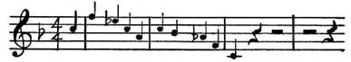

1. Bölüm: Cazın Müzik Tarihindeki Yeri
Müziğin iki değil, tek bir dünyası var. Bu dünya içinde birbirinden farklı pek çok müzik türü yer alır. Kaliteyi gösteren bir ölçüt olarak konmuş olan “klasik müzik” - “popüler müzik”, “entel müziği” - “avam müziği” ayrımları da, hiç mi hiç anlam taşımaz. Caz, büyük bir “popüler” müzik olmakla kalmaz, büyük bir müziktir de.
“Klasik” müzikle “popüler” müzik arasında bugün karşılaştığımız ayrım, sanatta şu yakınlarda oluşmuş bir gelişmedir. Bach, Handel, Purcell, Mozart, Schubert ve Verdi gibi büyük besteciler opera, konçerto, kantat, senfoni ve oratoryoların yanı sıra, şarkılar ve danslar da yazarlardı. Müzikleri, sokaktaki insanlar tarafından benimsenip söylendiği ya da müzikleriyle dans edildiği zaman sevinç duyarlardı. Schubert’in bir senfonisi, bir şarkısından daha görkemli ve daha hayranlık uyandıran bir başarıdır; buna karşılık bir Schubert şarkısı, bir bestecinin, dört bölümlü bir senfonisinden, ya da söyleyeceği hiçbir şey olmadığı için şimdi unutulup gitmiş olan üç saatlik bir operasından daha fazla canlılık taşır.
Bir müzik yapıtının yalnızca büyüklüğünün ya da amacının soylu oluşunun, değeriyle hiçbir ilgisi yoktur. İyi müzik, içinde, yaşayan, düşünen ve hisseden, çevresindeki dünyayı keşfededuran bir beşeri varlığı ortaya koyar. Kötü müzik ise, şu anın gereksinimlerini geçmişteki formülleri bulup çıkararak karşılamaya yeltenir. Yüzeysel bir yenilik görünümü kazandırmak için geçmişin müziğini sulandırır ve karıştırır. Bu ayrımdan yola çıkarak altbölümler bulabiliriz. İyi müziğin içinde, öbürlerinden daha karmaşık beşeri ve duygusal sorunları işleyen bazı yapıtlar vardır. Kötü müziğin içinde, ustalık bakımından başkalarından daha yetkin olan ve bu yüzden yeniden canlılık kazanacakları umudunu veren bazı besteciler bulunur. Ama temel olan ayrım, iyi ile kötü, canlı ile mekanik arasındadır.
Geçmişte olduğu gibi bizim kendi çağımızda da, yaratıcı olan müzikle, mekanik olarak pişirilip kotarılan müzik arasındaki ayrım, kestirmeden, “klasik” ve “popüler” arasındaki yapay ayrıma geçer. Senfonik bir yapıt, bestecinin geçmişin büyük müziği üzerinde yıllarca yaptığı çalışmayı temsil edebilir. Seslendirilmesi birinci sınıf 90 icracıyı gerektirebilir; icrası da bir saat sürebilir. Ama, içinde özgün bir düşünce ve duygu yer almıyorsa, sanatçı, sanatın yanı sıra, yaşama yanıt verişinde sıradan olmayana ve güzele ulaşamıyorsa, o yapıt kötü müzik olarak kalır. Bir caz yapıtı, dans ya da şarkı olarak kullanılmak üzere, sırf doğaçlamayla çatılmış olabilir. İcrası topu topu üç dakika sürebilir ve müzik yapımının tarihi ya da süzülmüş teknikleri konusunda pek bilgili olmayan müzikçiler tarafından yaratılmış olabilir. Bu yapıt, söz konusu duygusal ve beşeri gerçek niteliğine sahipse ve ancak alışılmamış olanla, müzik notalarının ancak canlı bir beşeri deneyim modelini özümledikleri zaman oluşan yakınlıkla kaynaşmışsa, iyi müziktir.
Caz terimi çok fazla miktarda müzik ürününü kapsar. Bunun çoğunluğu da kötü müziktir, tıpkı konservatuvarlarımızdan döküleduran beste müziğinin büyük bölümünün kötü müzik olması gibi. Böyle olmakla birlikte cazda, gerçek müziğin altın damarı bulunur; bu damarı, müzik aletini ellerinin, sesinin ve zihninin bir uzantısı sayan, müziği insan kardeşlerine seslendiği bir dil olarak benimseyen insanlar yaratır. Üstelik cazın içindeki bu gerçek yaratı, Birleşik Devletler’de şimdiye kadar üretilen en önemli ve en kalıcı müzik birikimini oluşturan görkemli bir üretimdir. Gelecekte bizim çağımıza, üzerinde durulabilecek bir avuç senfonik müzik, oda müziği ve opera yapıtımızın yanı sıra, işte bu müzikle saygı duyulacaktır. Cazın bu büyük birikiminin, çoğunlukla okuyup yazması olmayan müzikçiler ve aramızda en çok sömürülen insanlar tarafından yaratılmış olması, sonraki çağlar için, zamanımızın müzik kültürünün çelişmelerini aydınlatan ilginç, açıklayıcı bir ışık oluşturması dışında hiçbir fark yaratmayacaktır.

Çağımızdaki “klasik” ile “popüler” arasındaki çelişme neden ortaya çıktı? “Klasik” ile “popüler” arasındaki ayrım, basitliğe karşı karmaşıklık değildir. İster “New Orleans,” ister bebop olsun, yaratıcı cazı dinleyen kişi, Copland’ı, ya da Ivens’ı dinlermişçesine, standart olmaktan çıkarılmış bir müzik ses dizisi ve ses dizisi birleşimlerini dinler. Bir caz yapıtında iki melodi dizesiyle bunları hem destekleyen hem de bunlara karşıt çalan ritim kalıbının etkileşimini ayırt etmek, dinleyicinin Bach’ın bir fügünün yapısını izlediği sıradaki dikkatini gerektirir. Elektrik öncesi klarnet plak kayıtlarında, bir parçayı Johnny Dodds’un mu ya da Buster Bailey’in mi çaldığını bulup çıkarmak, anonim bir elyazması müzik notasının kime ve hangi döneme ait olduğunu saptamak kadar enfes bir müzikoloji olayıdır.
Zamanımızda, “klasik” ve “popüler” arasındaki yapay ayrımı dayatan, günümüzün hem “klasik”, hem de “popüler” müzik üretimini, sanat olmaktan çıkarıp parasal bir yatırım sorunu haline getiren koşullarıdır. Klasik konserlerin verilmesi de, popüler müziğin üretimi de, büyük ticari yatırım haline gelmiştir; bu yatırımlar da, tıpkı bir metayı standartlaştırıp herkese kabul ettirerek korunmak zorunda olan sermayeyi temsil eder.
Sonuç, bizim konser müziğimizin, çoğunlukla geçmişi kasteden “klasik” olup çıkmasıdır. Geçen 20 ya da 30 yıl içinde Amerika’da verilen senfonik, solo konser ve opera programlarından yola çıksak, müziğin ölü insanlar tarafından üretilen bir sanat olduğu sonucuna varır; dinleyicilerin bir çağdaşlarıyla iletişim kurmayı bekledikleri bir sanat olmadığına karar verirdik.
Bunun üzerinde durmamızın amacı, Bach, Beethoven ve Schubert gibi insanların büyüklüğünü ya da onların yapıtlarını tanımamızın önemini yadsımak değildir. Bu besteciler müziklerini yazdıkları sırada, kendi zamanlarında erişebildikleri herkese en heyecanlandırıcı biçimde hitap eden, kanlı canlı insanlardı. Dinleme deneyimlerimizi esas olarak uzak geçmişin yapıtlarına dayandırmak, tarihe, bugünü anlamamıza ve kendi sorunlarımızı çözmemize yardımcı olsun diye bakacak yerde, romantik bir kaçış için masalsı bir altın çağa bakmaya benzer.
Geçmişte müziğin tatlı değil, heyecan verici ve duygulandırıcı seda vermesi amaçlanırdı. Büyük müziğin geçmişte dinleyicileri arasında yol açtığı çatışmaları, günümüz müziğinin o hiç rahatsız etmeyen tatlılığı ile karşılaştırdığımızda, bu, kimi zaman, müziği nasıl dinleyeceğimizi öğrendiğimizin bir belirtisi olarak kabul edilir. Gerçekse, bunun tam tersidir. Öğrendiğimiz, müziği nasıl dinlemeyeceğimizdir. Her iyi müzik, kalbinin dilini, kendinden öncekilerin hepsinden biraz değişik kullanan, iletişim kurmakta yeni bir beşeri deneyime sahip bir insanın eseri olduğu için taze, heyecan verici ve cüretkâr bir ses verir.
Çağdaş konser müziği kompozisyonlarımızın çoğunlukla kötü oluşu, konser müziğimizin çoğunlukla “ölmüş insanların” müziği olduğunu bilen birçok bestecinin ölmüş insanlar gibi beste yapmaya karar vermelerinden ileri gelir. Bu işlemin çok yaygın olarak kullanılan terimi akademizmdir. Bu gibi üstü örtülü taklit yapıtlar sıradan icra yöntemlerine kolayca uygun düştükleri, akıl ya da teknikten çok az istemde bulundukları, hiçbir önyargıyı ya da dar görüşlü düşünce tarzını zorlamadıkları için bunların reklamını yapıp sunan kişiler için son derece kabul edilebilen şeylerdir. Bu yapıtlar çabucak silinip giderler, çünkü daha başından cansızdırlar; ama aynı modele uygun olarak kesilip biçilip kotarılmış yeni yapıtlar onların yerini alır.
Bu nitelikte üretilen kötü “popüler” müzik de, aynı nedenlerden ötürü kötüdür. Düzeyinin düşük oluşu, müziği halkın gereksinimlerine uydurma isteminden kaynaklanmaz. Halk kendi öz müziğini ürettiği her keresinde yüksek kaliteye ulaşmıştır. Kötü olmasının nedeni, yanlış olarak “popüler” diye adlandırılmış olan müziğin de, aynı şekilde bir “ölüler” müziği olmasıdır. “Popüler” denen müziğin büyük bölümü, geçmiş yüzyılın senfoni, opera ve operet müziklerinin berbat ve gülünç bir taklidi; bir ders kitabı armonisinden, bir Çaykovski uvertüründen ya da Mendelssohn konçertosundan apartılmış bir çalgı düzenlemesinin bildik bir ezgiye soluk biçimde uygulanmasıdır. Freddy Martin, Grieg konçertosunu “dans etmek” üzere sunduğunda, yalnızca daha önce binlerce kez üstü örtülü biçimde yapılagelmiş bir şeyi, daha açık bir biçimde yapmaktadır.
Dürüst, yaratıcı caz müziği bestecisiyle dürüst, yaratıcı konser müziği bestecisinin, sedası birbirinden tümüyle farklı bir müzik üretmelerine karşılık, kendilerini birbirine koşut güçlükler içinde bulmaları bir rastlantı değildir. İkisi de güçlü rakiplerle karşı karşıyadır. Rakiplerin başarıları da, sundukları müziğin gücünden gelmez. Bu rakiplerin gücü, paranın gücünden, hem popüler müziğin, hem de konser salonu müziğinin üretimini ve dağıtımını denetleyen finans şebekesinin gücünden gelir.
Yaratıcı caza şiddetle saldırılmıştır. “İlkel”, “barbar” diye adlandırılır. Çoğunlukla Amerika’nın zenci halkı tarafından üretilmiş olması olgusu yaratıcı cazı kötülemek için kullanılmıştır. Zaman zaman genelevlerde ya da kaçak içki satan meyhanelerde kendine yuva bulmuş, yarattığı hava ve iletisiyle zenci halkın üzerine yüklenmiş berbat koşulları yansıtması olguları da ona karşı kullanılmıştır. Ne yazık ki, savunucularının çoğu da aynı şekilde onu yanlış yorumlarlar. Kimileri, zararlı etkilerinden başka hiçbir esaslı özelliği bulunmayan bu geçici niteliği, caz müziğinin temeliymiş gibi alırlar; cazın taşıdığı ucuz meyhane ve genelev renginden şeytani bir zevk duyarlar. Bu müziğin sıra dışı niteliklerinin, “zekâ” ve “uygarlığın” müziğe zararlı olduğunu kanıtladığını ileri sürerek caza “Afrikalı” ya da “Afrikalı-Amerikalı” (Afro-American) müzik adını verirler, “ilkel” diye överler. Hani, bizlere bu zenginlikleri sağlayan halka tam da çam devirme kabilinden bir iltifat. Cazı, bir çalgı üzerinde büyük bir teknik hâkimiyet ya da müzik yazma sanatına gereksinimi olmadığını söyleyerek överler ve müzik eldeki her türlü kaynaktan yararlanan insanlar değil de, sınırlı teknikler tarafından yaratılırmış, büyük teknik ve bilgi “gerçek” caza zarar verirmiş gibisinden kuramlar icat ederler. Onu, kendinden önceki tüm müziklerden ya da “Batı” müziğinden tam bir kopuş olarak överler.
İyi niyetle yapılmış da olsa, bu tür savunmalar caza, saldırılar kadar zarar verir. Gerçek, cazın bazı bakımlardan yepyeni bir müzik olduğudur, buna karşılık başka ve de çok önemli bakımlardan caz, hiç de yeni bir müzik değildir. Bilginlerin bildikleri müzikler içinde, cazın tıpkısı olan hiçbir müzik olmamıştır. Ama aynı zamanda cazı önemli kılan bir yanı da, bizlere geçmiş müziğin tarihinde tümüyle eksik olan bir alanın haritasını çıkarıyor olmasıdır.
Günümüzdeki tarih araştırmaları, sanat tarihlerinin temelini oluşturan, yani yazılan müziğin, geçmiş yüzyıllarda halkın fiilen çalıp söylediği ve dinlediği muazzam büyüklükteki müziğin yalnızca çok ufak bir parçasını oluşturduğunu gösteriyor. Her çağın yazılı müziği olduğu kadar, “yazılı olmayan” müziği de vardı. Bu yazılmamış müziği, 15. yüzyılın belgesel bir tanımından biliyoruz. Örneğin Paul Henry Lang, Music in Western Civilization’ında, 15. yüzyılın skolastik yorumcularından biri olan Fuldalı Adam’dan alıntı yapıyor. Fuldalı Adam, icracıların beste üzerinde gerçekleştirdikleri “onların hadlerine düşmeyen etki”den öfkeyle yakınır ve “soytarılarla minstrel’lerin geleceğin bestecileri olup çıkmaları” tehlikesinden dehşetle söz eder.
Sıradan kent halkının çaldığı hoyrat ve gürültülü müziğe yöneltilen bu saldırı ve bu müziğin zamanın eğitim görmüş kilise ve aristokrat müziğinin o ince dokunmuş huzurunun yerini alacağı tehdidi, caza yapılan saldırılara o denli benziyor ki, bu müziğin caza çok benzediğini tahmin edebiliriz. Ayrıca, geçmişin bu müziğinin, yaşayan ve deneyimleyen her besteci üzerinde yaptığı etki aracılığıyla hemen hemen her müzik formu üzerinde etkili olduğu izlenimini de ediniyoruz. Birkaç örnek verilirse, folk şarkılarını dinsel müziklerinde bu denli verimli bir biçimde kullanan Avrupalı dindar besteciler; zamanlarının kaba dokunmuş, çoksesli popüler müziğini bu denli zengin biçimde işlemiş olan İtalyan, Fransız ve İngiliz madrigal bestecileri; yeni yazılan halk ve popüler müzik şarkılarını uyarlayarak Alman Protestanlığının (pek çoğu Amerikan Protestanlığının gözde ilahileri haline gelen) himnolojisini yaratan Martin Luther; bütün öğrencilerine halk müziğine gitmeyi öğütleyen Mozart’ın öğretmeni Padre Martini; folk dansıyla popüler dansı öylesine zengin bir biçimde kullanan Lully, Vivaldi, Haydn, Mozart, Schubert bunlar arasındaydı.
Bu nedenle tarihsel bakımdan caz, en büyük önemi taşıyan müziktir. Fonograf kaydı çağında ortaya çıkışı sayesinde incelenebilen ve tanınabilen “yazılmamış” ilk müzik olma özelliği taşıyor. En basit melodi ve ritim kalıplarından, en çeşitlenmiş ve karmaşık formlara, en ince örülmüş melodi dizelerine ve ritim-melodi yapılarına çiçeklenen bir müziğin zengin örneklerini barındıran caz, bizlerin müzik sanatının tüm gelişimine ve tarihine içgörü kazanmasını sağlıyor. Yüzyıllarca önce halk, bazı kuramcılara o denli dehşet, taze kafalı bestecilere ise o denli heyecan verici gelen kendi yazılı olmayan müziğini yarattığı zaman neler olup bittiğini, ayrıntılarına inerek, parça parça yeniden kurarak kavramamıza yardım ediyor.
Kuşkusuz, cazın izi gerilere, Afrika müziğine doğru sürülebilir; bu, Afrikalıların davul çalış ve ırlama plak kayıtlarını dinleyen, bunlarda caza benzerlik gören ve hemen bir kurama sıçrayıveren kimi yazarların üzerinde çok durdukları bir nokta. Oysa, yalnızca benzerlikleri görüp de farklarını kale almayan uslamlama süreciyle, Avrupa müziği de aynı şekilde kökünü Asya, Yunan ve İbrani müziğinden alan Gregorius ezgilerine kadar geriye götürülebilir. Caz bir Afrika müziği değildir; Johnny Dodds’un Joe Turner Blues’unu, Louis Armstrong’un Knucking a Jug’ını ya da Kid Ory’nin High Society’sini bir Afrika davul ya da ses icrasıyla karşılaştıran herkes bunu söyleyebilir. Caz, caz kuramcıları arasında görece yeni ve yaygın terimiyle “Afrikalı-Amerikan” da değildir. Birbirine tireyle bağlanan bu terim, iki Amerika’nın bulunduğunu ima eder. Oysa, Amerika’nın herhangi bir bölümüne bu biçimde tire eklenecekse, hepsine eklemek gerek. Biz hepimiz ya Afrikalı-Amerikan, ya Anglo-Amerikan, ya İrlandalı-Amerikan, ya Yahudi-Amerikan, ya İtalyan-Amerikan, vb.’yizdir.
Caz, bu denli yaşamsal ve beşeri albenisi, bu denli duygusal içtenliği ve gücü, halkın gereksinimlerine bu denli uygunluğu ile, nispeten katıksız biçimiyle de, sulandırılmış biçimiyle de popüler şarkı ve dans müziği olarak kabul edilmiş büyük Amerikan müziğidir. İçinde Afrika’ya kadar izlenebilen öğeler taşır; ama aynı zamanda izi başka birçok eski kültürlere, Avrupa ilahi ezgilerine, Fransız halk şarkılarına, İspanyol şarkı ve danslarına, Avrupa’dan alınarak Amerika’da geliştirilen dağ şarkılarına kadar da sürülebilir. Bir araya gelen bütün bu kökenlerden de öte, bizlere, buraya köle olarak getirilen, emeğiyle Amerikan uygarlığı ve kültürünün böylesine büyük bir bölümünü yaratmış olan zenci halkın duygusal ve toplumsal yaşamını, kederini, öfkesini ve diriliğini anlatan taptaze ve yepyeni bir müzik yaratısıdır.
Zenci halk bir anlamda Amerika içinde bir topluluk, ulusun içinde bir ulustur. Böyle olmakla birlikte, zenci halk bunu kendi seçimiyle ya da herhangi mistik Afrikalı özelliklerinden herhangi biriyle yapmadı. Böyle olması, birbirinden farklı birçok eski kültürden koparılan zenci halkın, köleliğe zorla bastırılması olgusunun sonucudur. Köleliğin kaldırılmasından sonra zenci halk bayağı mesleklere hapsedildi; eğitimi, hareket özgürlüğü ve vatandaşlık hakları yadsındı; en düşük ücretler ona verildi; gettolara kapatılarak ayrım gördü.
zenci halk bu koşullarla artsız arasız mücadele etti; bu mücadelenin Amerika’nın kendi gelişiminin ayrılmaz bir parçasını oluşturmadığını kim söyleyebilir? Zencilerin köleliğe karşı mücadelelerinin yanı sıra, bir de Bağımsızlık Savaşı’nda oynadıkları rol var. Birliği korumak için oynadıkları o çok küçümsenen rolleri, sonunda köleliğin kaldırılmasını getirdi. İç Savaş’tan sonra Güney eyaletlerinde, çoğu tarih kitaplarında görmezlikten gelinen ya da yanlış yorumlanan zenci halkın katıldığı kongre meclisleri, Federal Ordu kaldırılmasa, Ku Klux Klan olmasa, bunların sonucu olarak Güney’in, Kuzey sanayisinin ve banker yatırımlarının bir sömürgesi haline dönüşmesi gerçekleşmese, Güney’in gerçekten ne denli demokratik olabileceğini gösterir.
Ortak ekonomik yaşam ve mücadeleleriyle birbirine kenetlenen zenci halk, büyüyen uluslaşma duygularının yanı sıra, kendine ait bir tarih, bir gelenek ve kültür yaşamı yarattı. Bu kültürel yaşamda Afrika kökenlerini bulabiliriz, ama zenci halkın temel kültür özelliğini bu belirlemez; tıpkı Amerikan demokrasisinin “Bağımsızlık Bildirisi” düşüncesinin büyük bölümünü 18. yüzyıl Fransız liberallerinden almasına bakarak Amerikan demokrasisi Fransız’dır diyemeyeceğimiz gibi. Amerika’da zenci halkın kültürü, biçimini, bir parçasını zenci halkın yaşamının oluşturduğu Amerikan yaşam koşullarından alır. Bir toprak, yaşamını ve temel özelliğini, onun mülkiyetine sahip olanlardan, onun adına konuşanlardan almaz. Bir toprağa gerçek yaşamını ve özelliğini veren onun içinde yaşayanlar ve onun üzerinde emek sarf edenlerdir. Amerikan tarihi, ekonomik yaşamı ve uygarlığı büyük bölümüyle nasıl zenci halkın yaratısı ise, Amerikan kültürü de büyük ölçüde zenci halkın yaratısıdır.
Zenci halkın bu katkısı Amerikan yaşamının o denli öz dokusu haline gelmiştir ki, soyutlanamaz, söküp ayrılamaz, ayrı bir kendilik olarak incelenemez. Büyük ölçüde Amerikan zenci halkı tarafından yaratılan müziğin, spiritüallerin, blues ve cazın, tüm Amerikan halkı tarafından kendi müziği olarak bu denli geniş kabul görmesi ve benimsenmesi bizi hayrete düşürmemelidir. Bu yalnızca, zenci halkın eğitim, hareket özgürlüğü ve devlet yönetiminde kendine uygun görevler alması uğrundaki mücadelesinin Amerikan demokrasisinin büyüme mücadelesinin ayrılmaz bir parçası olduğu gerçeğinin bizim kültür yaşamımız içine yansımasından başka bir şey değildir.
Caz, “ilkel” bir müzik değildir. Caz konusunda yazılan çağdaş yazılarda dile getirilen, müzikçiler kadar dinleyicileri de “hipnotik bir transa” sokan ya da doğrudan doğruya “bilinçaltı”ndan kaynaklanan bir kuramdır bu. Kabile insanından söz ederken, “ilkel” sözcüğünün kendisi elbette çok yanlış kullanılmakta. Kabile insanı çok büyük bir yaratıcıydı. Bizler sözlü, müziksel ve resimsel temel iletişim dillerimizi; doğayı açıklamak ve onun efendisi olmamızı sağlayan ilk aletlerimizi ve gayretimizi kabile uygarlığından almışızdır. Halk “ilkel” olmaz. Doğanın fethi sürecinin bazı evrelerinde toplumlar, öbür evreler bundan gelişebilsinler diye “ilkel” olabilir. Kabile insanı, daha iyi bir yaşam için elinde var olabilen her türlü güçle artsız arasız mücadele etmiş olmasa ve doğayı gereksinimlerine daha uygun kılmasaydı, bugün hiçbir “ileri” uygarlık bulunmayacaktı. Ufak tefek istisnalar bir yana, hâlâ “geri” olarak görünen halklar, ilerlemeden zorla alıkonuldukları için böyledirler.
Kabile uygarlıklarının inceden inceye işlenmiş kültür yaşamı üzerine oldukça yakın zamanlarda yapılan değerlendirme, “beyaz” ya da “Kafkas” üstünlüğü mitlerini yıkma yolunda büyük bir ileri adım oluşturdu. Antropologlar her kültürün, sanayi uygarlığının moral değerlerinin yüzünü kızartacak kendine özgü bazı değerlere sahip olduğunu keşfettiler. Antropologların birçoğu bu noktada durup kaldılar. Her kültür kendi “değerleri”ne sahiptir ve yalnızca bu “değerlerle” yargılanmalıdır, dediler.
Oysa, kabile uygarlığının başarılarının bu biçimde değerlendirilmesi, en gerici kullanıma dönüştürülebilir. Çünkü insan yaşamında, dünyaya ilişkin daha büyük bilgi, doğa üzerinde daha büyük egemenlik, daha büyük üretim ve insanların daha iyi ve daha özgür yaşaması bakımından ilerleme vardır. “Uygar” ülkelerde bütün bu olanakların insan yığınları için gerçekte ne denli az gerçekleştiği bu kitabın konusunun dışındadır. Ama, bu kültürel ve endüstriyel ilerlemeler ve olanaklar, her halkın yeteneği içindedir ve her halkın hakkıdır.
Kültürlerin eşitliği kuramı, sömürge sömürüsünü mazur göstermek üzere kullanılmıştır. Bütün kültürler, kendi başlarına eşit derecede iyiyse, niye değişsinler? Söylemeye gerek yok ki, bu kuramı ileri sürenler üstlerine peştamal giymeye can atmazlar, öbür kültürleri oturdukları yerden “takdir” etmekle yetinirler. Ve aynı şekilde, söylemeye gerek yok ki, çok düşük bir ücretle en eziyetli işlerde sömürge insanlarını kullananlar, eski efsanelerin, adetlerin, yaşam tarzlarının korunmasını kendileri için en yararlı olan şey olarak görürler.
O halde, “ilkel”in soylu basitliğine ilişkin bu kuramlar, iyi niyetle ileri sürülmüş olsa bile, son derece kuşku uyandırıcıdır. Ve bir o kadar da caza uygulanamayacak şeylerdir.
Caz temel olarak özünde çoğunlukla büyük bir yalınlık ve son derece sürükleyici ritmik bir güç taşıyan müziktir. Bunun yanı sıra, inceden inceye işlenmiş bir müziktir de. Ezgi tümcelerinin ve ritim kalıplarının birçoğu Afrika ırlamalarından kaynaklanır. Ama her kabile müziği gibi Afrika müziği de tümüyle bir topluluğa ait olan ve o topluluğu bir heyecan ve hareket içinde kaynaştırmaya iten zorlayıcı bir müzik olmaya yönelir. Aslında çocuk müziği de benzer nitelik taşır. Buna karşılık cazda, bir kabile müziğinden daha fazla olan şeyi, bireysel yaratım ve düşünce ile kaynaşmış olan bu topluluk özelliğini ve toplumsal karakteri buluruz. Caz, bireysel zihinle topluluk arasındaki etkileşimin müziğidir. Artık bu, kabilesel bir özellik olmaktan çıkmıştır; olsa olsa, bizlerin dans ettiği sırada bir kabile bayramındaki dansçılara benzediği söylenebilir. Biz de onlar gibi aynı ritim ve hareket düzeni içinde hareket ederiz; ama aynı zamanda bu hareket düzenini esnek kılar ve kendi bireysel imgelemimizle değiştiririz. Dolayısıyla, toplumsal bir özelliği, bireysel düşünce ve duygu ile kaynaştıran, temel vuruşla yinelenen ezgiyi en esnek etkileşim ve çeşitleme ile birleştiren caz, bu bakımdan Afrika müziğinden çok daha fazla, Avrupa halk müziğine ve dans formlarında bestelenen müziğe yakındır. Asıl garip olanı, “20’li yılların” Stravinsky’nin Sacre du Printemps ve Histoire du Soldat gibi savaşa duyulan nefretle yazılmış ve “ilkel”i kucaklamaya bilinçli bir itilim taşıyan savaş sonrası kültürünün yarattığı kimi müziklerin, vuruşlarıyla Afrika davullarını, cazdan daha fazla andırır olmasıdır.
Yarım gerçeklere dayalı, hoş ama yanıltıcı formülasyonların bir diğeri de “bilinçaltı” kuramıdır. Caz yalnızca bir zekâ ürünü değildir. Hiçbir sanat salt zekâ ürünü olmaz. Caz, müzikte en bilinçli ustalığın, zevkin, sanatçılığın ve zekânın yol gösterdiği bir heyecan akışıdır. Johnny Dodds, King Oliver, Louis Armstrong, “Jelly-Roll” Morton, Bessie Smith, Duke Ellington ve Lester Young’ın yapıtlarının temel özelliği budur. Buna karşılık, çoğunlukla incelikten uzaktır ve bağımsızdır; bu ise bambaşka bir konudur.
Caz tümüyle “doğaçlama” olmadığı gibi, yalnızca nota okuyamayan müzikçiler tarafından yaratıldığı zaman da en iyi caz olmaz. Doğaçlama süreci cazın merkezini oluşturur ama bu, beste yapan bir bestecinin zihninde birbirini izleyen süreçlerden çok keskin bir farklılık taşımaz; müziği bestelemenin caz tarihinde önemli bir yeri olmuştur. Aynı şekilde, caz müzikçilerinin bugün varolan müzik sanatını tümüyle öğrenmeye ve özümlemeye hakları olduğunu duyumsamaları ileri bir adımdır. Bu tür kısıtlamalara, eski müzik konusunda incelmiş bir Jim Crow tarzıyla ne gibi övgü nitelemeleri eşlik ederse etsin, bu gibi müzisyenler, onları gerçek ya da düşsel her türlü “folk” uygulamalarıyla sınırlayan girişimlerden haklı olarak kuşku duyarlar. Cazın kendi tarihi ve sürekli değişimi vardır. Caz gelişmesinin her döneminde çok büyük bir müzik üretmiştir. Ve caz, çoğunlukla, müzik alanındaki bu gelişmelerden her biri, kendi gereksinimlerine karşılık verdiği zaman, zenci olan caz müzikçisi tarafından yaratıldı. Bunlar, zenci müzikçi, yeni gereksinimler duyumsadığı ve farklı bir müzik gerektiren yeni sorunlarla karşılaştığı zaman da, bırakıldı ya da değiştirildi. Terk edilen müziği sevmeyi binbir zorlukla öğrenmiş olanlardan öfkeli çığlıklar yükseldi ve bu yakınmalar en ince ayrıntılarıyla hazırlanmış kuramsal formülasyonlarla dile getirildi. İleriye atılan her adımda kazanılan değerler kadar, yitirilen değerlerin de bulunduğu doğrudur. Ne var ki değişme, gelişme, yeni malzemelerin ve yeni heyecanların keşfi, her canlı müzik gibi, caz için de esastır.
Caz “Afrikalı”, “Afrikalı-Amerikalı”, “ilkel”, “bilinçdışı” ya da salt “doğaçlama” olarak tanımlanmayacaksa, bu durumda, günümüzün ciddi ya da bestelenen müziği için geçerli olandan niçin bu denli farklı? Cazın kendine özgü özelliği nedir?
Böyle bir soru, ancak, bizim “klasik” müzik kültürümüzün, bizi çevreleyen müze ve erbaplık atmosferinin tek yanlılığı, yaşayan besteciye Amerikan yaşamında oynayabileceği makul hiçbir işlevin verilmemiş olması olgusu nedeniyle sorulabilir. Beste müziği aşırı beyinsel olmaya yöneliktir; müziğinin hizmet edebileceği canlı hiçbir amaç taşımayan besteci, sadece entelektüel formlar ve sistemler icat eder. Müziği aşırı kişisel olmaya yönelir; besteci kendini insanlığın ana akışının bir parçası olarak duyumsamaz, ona hiçbir yer tanımayan topluma karşı öfkesini dile getirir. Ya da geçmişi taklide ve arıtıp ayıklamaya koyulur.
Bu tek yanlılığa karşı, caz, sanat yaratısının toplumsal bir işlev olduğu gerçeğini, müziğin insanların kullanması için yapılması gerektiğini döne döne belirtir. Bu kullanım dans ve şarkıya indirgense bile, müziğin böyle bir amaçla kullanılması olgusu ona dinleyicileri için yaşamsallık ve anlam kazandırır.
Caz, müziğin insanların yaptığı, aynı zamanda dinlediği bir şey olduğu gerçeğini; sanatın mesleki bir uzmanlıkla sınırlanmayıp herkesin malı olması gerektiğini vurgular. Her kültürün, sağlıklı olmak istiyorsa, bir parçası olması gereken “amatör” yaratımı yeniden canlandırır. Müziğin, insanların yaşadıkları araçlardan biri olduğu kadar, yaşamlarını kazandıkları bir araç olduğunu ilan eder. İnsanlar arasında müziğe duyulan isteğin ve sevginin ne denli derin olduğunu, onların yaratma kaynaklarının ne denli büyük olduğunu göz önüne serer. İnceden inceye ve ayrıntılı bir biçimde işlenmiş teknik ve bilginin önemsiz değil, önemli olduğunu, ama bunların esas oluşturmadığını; halkın kendi müzik aletlerini alabilmesi ya da bunları yapabilmesi durumunda bu aletleri nasıl kullanacağını öğreneceğini; aletleri yoksa, sesini kullanacağını; müziğin insanoğlunun bir iletişim dili olduğunu ve fırsat verildiğinde onun varlığını duyumsatan capcanlı bir heyecan taşıdığı için, halkın ondan her zaman büyük sanat haline gelen bir şeyler yaratacağını kanıtlar.
Ulusal kökeni ne olursa olsun herkes tarafından sevildiği ve icra edildiği halde, cazın her adımında çığır açıcısı, önderi ve yenilikçisi zenciler olmuştur. Bunun nedeni, bazılarının dediği gibi zencilerin ritim konusunda fiziksel olarak başkalarından üstün yeteneklere sahip olması değildir. Bu daha çok güzelliğin, emeğin ürünü olduğu temel gerçeğinde yatan bir şeydir. Başka deyimle, halk onun çoğunu yaparak öğrenir. Zenci halk kendisine zorla yüklenen yoksulluk içinde kendi eğlencesini satın almak yerine, onu kolay sindirilebilecek ve gıdım gıdım, kaşık kaşık alınacak bir biçimde kullanmak ve kendi yapmak zorundaydı. Yaratıcı güçleri körelmiş öbür Amerikalılar satın alınan bir eğlence ve sanat lüksünün bedelini ödemişlerdir. Ve yaratıcı etkinlikler de körelince, müziği anlamak ve ondan zevk almak yetenekleri körelmiştir. Zenci halk da kendi kaynaklarına eğilmeye mecbur kılındığı için bir bedel ödemiştir. Bir folk sanatının sınırlılıklarının içine, çok gerçek ve haklı olarak isyan ettiği sınırlılıklar içine zorla itilmiştir. Ama bu sınırlar içinde de olsa, gerçek bir güç ve güzellik taşıyan bir müzik yaratmıştır.
Üstelik, aramızdaki en ezilen ve en sömürülen insanlar olan zencilerin anlatacakları bir öyküleri, daha açık dillerle anlatılması onlardan baskı ve sansürle esirgenmiş olan güçlü ve müthiş bir öykü vardı. Caz, ırk ayrımcılığına ve Jim Crow’a karşı bir protestodur. Linçlere, doğrudan ya da dolaylı köleliğe öfkesini, yoksulluğa kızgınlığını iletir. Özgürlük umudunu ve mücadelesini, insanlara sefaletle güreşerek neşelenmeyi, beşeri varlıklara kendilerini ezip öğüten engeller karşısındaki zaferlerini belirtme gücünü veren yaşamsallığı dile getirir. Zenci müzikçinin her zaman anlatacağı bir öykü vardır. Spiritüallerde bu, köleliğe karşı özgürlük ve mücadele aşkıydı. Genç müzikçinin bebop’unda geçen savaşta, kendisine bu savaşın demokrasi, bütün insanların “dört özgürlüğü” uğrunda bir savaş olduğunun söylenmesine karşılık, Jim Crow’laştırılan ve ikinci sınıf bir vatandaş muamelesi gören Amerikan zencilerinin acı deneyimlerini bulmak da güç değil.
Zenci halk cazda işte bu denli güçlü konuştuğu içindir ki, caz bütün halklar tarafından sevilmiş ve beğenilmiştir. Her insan için evrensel olan nitelikleri, baskıya öfkeyi ve sefalet üzerindeki zaferi açığa vurur. Her yönde filizlenir ve en olmadık toprakta köklenir. Bilginlerinden, bilgileri düzenleyip, özetleyip sıralayanlardan ve eleştirmenlerinden her keresinde bir adım ilerdedir. Onu tam da her yanıyla açıklayıp sınıflandırdıklarını düşündükleri sırada, yeni ve meydan okuyucu bir gelişmeyle öne çıkar. İnsanlığın kendisi gibi güçlü ve önceden kestirilemezdir. Caz, zenci halkın Amerika’ya bir armağanı, ödüllendirilmesi gereken bir kültür hazinesidir.
Cazın Amerikan müzik yaşamı bakımından taşıdığı önem azımsanamaz. Amerika’ya insan imgeleri ve seste somutlaşan duygular bakımından zengin bir müzik dili; tıpkı geçmişin büyük bestecilerinin kendi zamanlarındaki halk ve popüler müzikten yararlanmaları gibi ve onlar kadar verimli bir şekilde, bugünkülerin yararlanabilecekleri bir dil kazandırmıştır. Bu “klasik”le “popüler” arasındaki yapay ayrımın ortadan kalkacağı; müziğin bugünkünden farklı ve çeşitli biçimlere, şarkı ve dans biçimlerine, güçlü dram ya da psikolojik karmaşıklık biçimlerine bürüneceği bir geleceğe giden yolu gösterir. Ama bütün formlar halkın eşit bir biçimde ulaşabileceği duruma gelecek ve sorulacak tek soru şu olacaktır: İyi müzik mi, yoksa kötü müzik mi? Dürüst müzik mi, yoksa dürüst olmayan müzik mi? Onu öğrenmek bize zevk veriyor mu? Bizim insan kardeşlerimizi ve onlarla paylaştığımız dünyayı daha iyi öğrenmemize yardım ediyor mu?
2. Bölüm: Cazın Sedası
Cazın, klasik müzikten ya da tatlı tin-pan-alley müziğinden farklı bir seda (sound) vermesine neden olan başlıca özelliği, çalgıyı kullanışıdır. Cazın çalgıya yaklaşımı, bizim genelde alışık olduğumuzun tam tersidir. Yaygın anlayışa göre müzik, çalgılamayı yani enstrümantasyonu telkin eder. Cazda ise müziğin ana çizgilerini yaratan çalgıdır.
Müzik ile çalgı arasındaki ilişki konusundaki bu tek yanlı anlayışımızı nasıl edindiğimizi kestirmek zor değil. 19. yüzyıl klasik müziğinin eğilimi, her türlü anlatım aracını dinleyicinin zihninden silmek, onun yerine zihinde resimsel bir renk duygusu ya da değişik bir ruhsal durum uyandırmaktı. Müzik ister gürül gürül, ister çok hafif olarak tasarlansın, çalgılamanın bestecinin dinleyiciyi yatıştırıp rahatlatma ya da büyülemesini mümkün kılacak, içe işleyen ve duygulara seslenen bir tatlılığı olması gerekiyordu. Bu müziğin gereklerinden yeni bir icracı türü doğdu; piyanoyu vuruş izlerini bütünüyle ortadan kaldırarak kullanabilmek, kemanı gıcırtılı veya kulak tırmalayan bir ses çıkarmayacak biçimde çalabilmek ya da orkestranın güçlü tınısını cismanilikten sıyrılmışçasına yükseltip kabartarak seslendirebilmek için, yıllarca yıpratıcı bir eğitimden geçmiş olan virtüöz. Müzikal tınıya bu yaklaşım, dinleyicinin kulağından çalgıya ilişkin bütün bilinci silmeyi amaçlarken, tek yanlı olsa da, yetkin çalgı bilgisini üretti. Bu yaklaşım, sanki orkestralama ve müziğin gerçek sesi herhangi bir kişinin bir ders kitabından öğrenebileceği bazı standart kuralların uygulanmasından öte bir şey değilmiş gibi, “besteci” tarafından sağlanan müziğinin “aranjör” tarafından orkestra edildiği tin-pan-alley, Broadway ve Hollywood pratikleriyle nihai saçmalığına ulaştı.
Oysa, bir müziğin belli çalgılara uyarlanması (instrumentation), yani sonunda büründüğü seda, o bestenin melodileri kadar, bestecinin düşüncesinin de ayrılmaz parçasını oluşturur. Ve orkestrasyon bilimi, yani çalgı tınısı ile armoni arasındaki bağıntı müzik bilgisinin önemli bir bölümünü oluşturmasına karşılık, ister beste müziğinde, ister cazda, müzik yaratımının temel yasası, müziği çalgının telkin etmesidir. Müzik tarihi boyunca yeni müziğe olanak sağlayan, her keresinde yeni çalgı olagelmiştir; caz çalgılamasının da temelini oluşturan budur.
Bu yaklaşımın mantığını, bir çalgının ne olduğunu çözümlediğimiz zaman anlayabiliriz. Çalgı, insan elinin ve sesinin bir uzantısı, insan zihnine yeni güçler, duygularına yeni incelikler katan bir araçtır. Tıpkı çekiçle baltanın icadının insanoğluna gereksinimlerini karşılamasında yeni olanaklar sağlaması gibi, müzik aletlerinin yaratılması ve bunların üzerinde kazanılan ustalık da düzenli sesin dilini yaratıp kullanmada yeni olanaklar sağlamıştır. Çalgının müzikle bu ilgisi hemen hemen bütün besteciler tarafından ancak oldukça yakın bir geçmişte anlaşıldı. Şaşaalı senfoni orkestralarının ve bitmek tükenmek bilmez görünen ses çeşitlemesinin bugünlerinde bile Mozart’ın eşsiz bir orkestra düzenleyici olarak kalması, onun her çalgının olanaklarını kavramış olmasındandır.
Cazın müzik aletini kullanışı, bunun tersine dinleyicilerin kulağına sert ve keskin olarak çarpar. İşte bu haşinlik ve hoyratlık duyumu cazın anlatım özelliğinin temelini oluşturur. İnsanlar konuşurken, ses tonu iyice yumuşatılmış bile olsa, biz gerçekte müzik olarak sert sesleri dinleriz. Böyle olduğu halde bir sertlik duyumu almayız. Aslında, bazı aktörlerin yaptığı gibi, neredeyse müzikal perdeden konuşan biri, birkaç dakika sonra bizleri rahatsız edecektir. Sesin tatlı olması, müziğin bazı özel dönemleri dışında, hiçbir zaman sanatsal bir kalite ölçütü olmamıştır. Ölçüt, daha çok, anlatımsallık ve iletişimdir ve anlatımsallık da bir karşıtlık sorunu, zıt tınılarla renklerin birbiriyle sıkı bir biçimde etkileşimidir. Caz sedasının sertliğini “ilkel” diye niteliyorsak, bu yalnızca bugün dinlediğimiz konser müziğinin büyük çoğunluğundaki “eski üstat” tatlılığı tarafından yanlış yönlendirilmiş olmamızdandır.
Geçen yüzyıl zenci müziğinin çoğu hamdı; bu ise, ilkel olmaktan farklı bir şeydir; ve bu sözcük bile sınırları belli bir anlamda kullanılmalıdır. Bu müzik, eğitilmemiş seslerle, el altında bulunan ya da bir çırpıda yapılabilen ne kadar kaba saba çalgı varsa onlarla, Jug-band 1, vurmalı çalgı olarak çamaşır tahtası, banço, tek telli keman, ağız armonikasından oluşan bir bandla yaratılmıştı. Buna karşılık, yaratılan, kendi sınırlılıkları içinde söyleyecek şeyleri olduğu için, son derece usta işi bir müzikti.
1) Jug-band: [İrkin Aktüze, Müziği Anlamak - Ansiklopedik Müzik Sözlüğü’nden (Pan Yayıncılık, İstanbul 1. Baskı 2003, 2. Baskı 2004) aktarıyoruz; -Ç. N.] (İng.) Testi anlamına gelen sözcükten, dar ağızlı bir testinin içine şarkı söylenerek seslendirilen Afr. folkloruna özgü çalgı. Caz müziğinde buna benzer Kazoo, Washboard gibi uydurma çalgılar Skiffle topluluklarında kullanılmıştır. 1920 ve 1930’larda zenci Amerikalılar arasında yaygınlaşan ve genelde bir Jug’ı bas çalgı olarak kullanan Jug band toplulukları kurulmuş, 1926’da Dixieland Jug Blowers adlı grup caz klarnetçisi Johnny Dodds ile plak doldurmuş, caz piyanisti Clarence Williams 1933’te bizzat Jug çalmış, Folk Blues toplulukları bu çalgıyı kullanmıştır.
Bu müziğin sınırlılıkları çok gerçekti. Örneğin bir folk-spiritüal şarkıcılar grubunu dinlersek, müziğin çok güzel olmasına karşılık, grubun yalnızca birkaç temel melodi ve armoni kalıbını bildiğini anlarız. “Aşırı” uygarlıktan hasta düşerek kendilerini gerisin geriye “ilkel”in kollarına atan birtakım bilirkişilerin anlamamalarına karşın, bu sınırlılıkların farkında oluş, yeni olanaklarla deney yapma, daha tam bir yaşam ve anlatım isteği, folk müziği ile cazdaki bütün ilerlemenin temelini oluşturmuştur. Zenci müzikçi, Amerika’da büyük müzik formları yaratmış ve birine gereksinimi kalmadığı zaman her keresinde onu bırakarak bir başkasına, hatta senfoni ve operaya geçmiştir. Böyle yapmakla kendisini “ırkının dehası”nı terk etmekle suçlayanları da pek umursamamıştır.
İç Savaş’tan sonra, zencilerin iyileşmesi durmadan engellenen ve ağır aksak gelişen yaşam koşullarıyla, yeni müzik aletleri benimsendi ve bunlar yeni nitelikte bir müziğin yaratılmasına yardımcı oldu. Bunlar, önceleri askeri bandoda kullanılan, Konfedere Ordu’dan artık çoğu rehinci dükkânlarına düşmüş trompet, kornet, trombon, klarnet, tuba, bas davul ve trampet gibi çalgılarlardı. Plantasyonun, minstrel gösterisinin ve gezginci blues şarkıcılarının gözde çalgısı olan banço da bu çalgıların arasına girmişti, ama daha sonra yerini gitara bıraktı. Hali vakti daha iyi olanların evlerinde, salonlarda ve dans salonlarında bulunan piyano, önemli bir kullanıma kavuştu ve temel özelliğini çalgının vurmalı niteliğinden alan ve kulağa taptaze gelen çeşitli sesler üretti. Daha sonra bu topluluklarda, tubanın yerini, bas ve saksofon aldı.
O halde, caz tarihini çalgılarıyla kısaca tanımlamak bakımından, kölelik dönemi müziğinin öncelikle, müzik yapabilecek bir duruma uyarlanabilen her türlü kaba saba aletle çalınan dans müzikli bir koro müziği olduğunu söyleyebiliriz. İç Savaş’tan sonraki kölelikten azatlık dönemi, görece daha büyük hareket özgürlüğüyle, korolu iş şarkısını ve çalgı eşlikli solo blues sedasını getirdi. Zenci topluluğunun 1890’larla 1920’ler arasında Güney kentindeki kısıtlı, ama doğal olarak kölelikten daha yüksek düzeyde bir yaşam olan “getto” yaşamı, her çalgının bir solo insan sesi olarak ele alındığı, ama hepsinin melodi dizelerinin parlak etkileşimi içinde birbiriyle kaynaştığı bir toplu dans ve “parade” (yürüyüş, geçit) müziğini getirdi. Bu kent müziği en özgür gelişmesine New Orleans’ta ulaştığı için, genellikle “New Orleans” müziği olarak adlandırılır.
Kölelikten kurtuluşun bir sonraki adımı olan Güney’deki yarı kölelik yaşamına karşı mücadele ve kuzeye doğru büyüyen göç, cazın çalgı düzeninde ileriye atılan yeni bir adımı, büyük caz band’larının kurulmasını ve önderliğini getirdi; böylece band’ın kendisi yaratıcı müzikçi için zengin bir çalgı haline geldi. Bu band’ın oluşumundaki temel etken alto, tenor ve bariton saksofon chorus’unun kullanılmasıydı. Bu büyük caz toplulukların kurulmasını “senfonik” müziğin cazın “saflığı”na sızışı gibi gören kimi caz eleştirmenleri, buna kaş çatmayı adet edinmişlerdir. Oysa, Lunceford’un ya da Ellington’ın elindeki bu bakır üflemeli, dilli ve vurmalı çalgı toplulukları, kültürümüz için yeni ve olanakları tümüyle keşfedilmiş olmaktan uzak görkemli müzik topluluklarıdır. Cazın tarihini tartışırken, gerçekte, cazın değerinden hiçbir şeyin yitip gitmediğini akıldan çıkarmamak önem taşır. Bu yalnızca, günümüzün müzik yaşamının tek yanlılığının, “eski”yi silip atmak için “yeni”yi kullanan ve böylece başkalarını yeniye karşı eskiyi propaganda etmek zorunda bırakan, günümüz ticari anlayışının dolaysız bir ürünüdür. Çalgı, insan sesinin ve aklının uzantısı; alet olarak da, insan elinin ve aklının uzantısıdır. Her alet gibi müzik aletinin de, arkasında insanoğlu bulunmadığı zaman, kendi başına hiçbir anlamı kalmaz; bu anlaşıldığı sürece, daha derin ve daha zengin yaratıma olanak verir.
Cazın müzik aletlerinden ilki, tüm müzik tarihi boyunca başlıca çalgı olan insan sesidir. Kendine özgü tipik vokal müziği olmayan hiçbir çağ ya da müzik kültürü olmamıştır. Müzikte ritim, nasıl ki insan bedeninin hareketlerinden çıkmışsa, şarkı da konuşan insan sesinin çekim ve bükünlerinden doğmuştur.
Folk benzeri en basit blues’larda yarı konuşma-yarı şarkı olan bir müzik işitiriz. İnsan bu blues’ları neredeyse konuşarak seslendirebilir ve aslında şarkıcı da çoğunlukla konuşurmuş gibi görünür. Bu, müziğin kaba bir biçimi olarak görünebilir ve kendine özgü sınırlılıklar taşır. Bu blues’larda kullanılan ses dizisi ya da müzik notalarının temel kalıbı, başka halk müzik kültürleri tarafından kullanılan beş notalı, yani pentatonik ses dizisine benzer. Bu gibi basit dizileri eğitilmemiş insan sesinin kısıtlı olanakları zorunlu kılmıştı ve aslında bunları yaratan insan sesiydi. İnsanlar seslerini bizim tam ya da yarım sesli sistemimizin gerektirdiği ince perdeye indirecek kadar denetleyebilecek bir yetenekle doğmazlar. Müzik aletlerinin icadıyla, insanın ses perdesini bilimsel kesinlikle saptayıp kullanabileceği daha ince ve karmaşık ses dizileri mümkün hale geldi. Modern şarkıcının sesi, ancak bu gibi çalgıların yanı sıra, eğitilerek kullanılabilir bir durum aldı; operalardaki koloratura parçalarda, hâlâ, sesin izleyeceği yola kılavuzluk eden bir flüt (ya da Handel zamanındaki gibi bir trompet) işitilebiliyor.
Blues’un basit ses dizisi ve yarı konuşma olan şarkı, tam bir müzik kültürü için yetersiz olsa bile, bunlar bir müzik kültürü içinde, amatör müzik çalma pratiğinde sürdürülmeye değen bir nitelik taşır. Halkın içinde yer alabileceği ve profesyonel eğitim olmadan katılabileceği ve yaratabileceği türden bir müzik icrasına sahip olmak önemlidir. Ve blues söyleme teknik bakımdan sınırlı bir sanat gibi görünürse de, insanoğlunun iç kaynaklarına, beşeri bir kişiliği dramatize etme ve yansıtma yeteneğine dayanması nedeniyle son derece önem taşıyan kendine özgü bir sanatçılığı gerektirir. Leroy Carr’ın ya da Huddie Leadbetter’ın (Leadbelly) sanatı kolay kolay kopya edilemez; ikisi de eğitimli bir orkestra şarkıcısının yaptığını yapamaz, ama, bir opera şarkıcısı da onların yaptığının aynısını yapamaz.
“Klasik” blues söyleyiş üslubuna, Gertrude “Ma” Rainey, Bessie Smith, Clara Smith, Bertha Hill’in sanatına geldiğimizde tümüyle amatör müzik yapma sınıfının dışına çıkmış oluruz. Bessie Smith canı istediği zaman, parçayı tam ses perdesinde söyler. Blues ses dizinin bir ürünü olan perde-dışı “mavi nota,” en denetimli ve başından sonuna değin tasarlanmış sanatçılıkla kullanılır. Mavi notanın işlevi, şiir ile müzik arasındaki bağı güçlendirmektir; o nedenle birtakım sözcüklere özellikle dokunaklılık ve “konuşma” niteliği verir. Bessie Smith’in tüm icrası boyunca bunun gibi iyice işlenmiş, tasarlanmış ya da duyumsanmış perde sapmaları ve insan sesine benzer bir biçimde konuşma çekim ve bükünleri ekleyen kaydırmalar ya da glissandolar bulunur.
Blues söyleminde sanat, melodi kadar sözcükleri de başarıyla sunmaktır, ama burada, müzik tarihinden hiçbir zaman ayrılmamış olan bir sanat türüyle karşı karşıya gelmiş oluruz. Ortaçağın, Rönesans İtalya’sının ve Elizabeth İngiltere’sinin büyük motet ve madrigal sanatında vuruların ya da aksanların rehberi, modern müzikteki gibi ölçü çizgileri değil, şiirin vurgularıydı; bunun sonucu olarak en çekici çapraz ritimler oluşuyordu. Monteverdi’nin operaları, Schuetz ve Bach’ın dinsel yapıtları, müziğin icrasına konuşma vurgularının yol gösterdiği serbest bir melodik resitatif çizgisini kullanıyorlardı. Bu anlatım aracını gerçekten çok iyi bilen folk müziği şarkıcıları, örneğin Yvette Guilbert, Victor Chenkin ve Elsie Houston, sözcüklerin ses ve bükünlerini en zevkli bir sanatçılıkla kullanırlar. Ve Schubert şarkılarının ya da Verdi aryalarının seslendirilmesinde bile, sözcüklerin ritim, bükün ve vurgularının müziğin örgensel bir parçası olduğunu anlamayan şarkıcı, mekanik ve yanlış bir icra yapacaktır.
Popüler şarkının doğuşuyla birlikte, caz söyleminde insan sesi yeni bir rol üstlendi. Louis Armstrong’un ve “Fats” Waller’ın şarkı söyleyişinde bilinçli olarak sık sık yer alan sertlik, budalaca sözlerle ezginin bayıltıcı tatlılığına yönelik alaycı bir yorum işlevini görür. Louis’nin anlamsız hecelerle “scat” şarkı söyleyişi, bu noktayı aydınlatır; çünkü sözcükler gerçekten anlamsızsa, ne demeye kullanılsın? Öteki uçta yer alan Ella Fitzgerald, Billie Holliday gibi şarkıcılar ise, bilinçli olarak ezgi kadar, sözcüklerin de hakkını verdikleri bir sanat icra ederler. Bununla birlikte Bessie Smith’in kullandığı daha dürüst ve anlamlı malzemeye benzemeyen, genellikle yapmacık, şurdan burdan derlenmiş sığ sözleri ve müzikleri olan şarkılar, şarkıcılar için birer köstektir. Sonuçta onların şarkıyla pek fazla ilgisi olmayan kişisel bir şarkı söyleme üslubu yaratmaları gerekir. Billie örneğinde, bu üslup insanı kendinden geçirici bir ses rengi, usta işi bir perde kaydırması, arkadan geleni merakla bekleten gecikmeli bir atılım ve melodi çizgisinin kısmen bir blues çizgisine dönüştürülmesinden oluşur. Son olarak Sarah Vaughan’la, sürekli ton değiştirimlerini, yarım sesleri ve yabancı aralıkları kullanan, modern kromatik cazın ürünü olan bir şan üslubuyla karşılaşırız. Bu söyleyiş, hafifçe ve bilinçli olarak kaydırılan notalar dışında tümüyle perde üzerinde olmak zorundadır; yoksa yarım tonların ve ton değiştirimlerin etkisi yok olup gider ve en ince kulak eğitimini gerektirir.
O halde, cazın şan sanatının temeli, kontrastların, tezat etkileşimlerin, perdesinde olan notalarla mavi notaların şaşırtıcı aralıklara ve tonalitelere geçişlerinin kullanılmasıdır. Tınının ve ses kullanımının bu ikili ve birbirine karşıt özelliği, aynı zamanda, cazda çalgı kullanımının da temelini oluşturur.
Caz konusundaki Afrika kuramlarına başka bir çalgıdan çok daha fazla esin vermiş olan çalgı, belki de davul ve vurmalılar baterisi olsa gerektir. Oysa, girift davul ve vurmalı örüntülerine Hindistan, Güney denizleri, Orta Asya ve Amerika kıtası müziğinde, bütün kabile müziklerinde rastlanır. Ve Afrikalının davul kullanışı kelimenin tam anlamıyla görkemli olsa da, onun çalışı ile, cazda çalınan davul arasında temel bir ayrım vardır. Afrikalının davul çalışı çoğunlukla konuşmanın ya da sözel iletişimin yerini tutan bir şeydi. Cazda olduğu gibi, daha özenle işlenmiş melodi çalgılarının ve daha ince işlenmiş bir melodi birikiminin ortaya çıkması, davulun ve ritmin o şekilde kullanılmasını gereksiz kıldı. Ayrıca, dans ya da çığırışa eşlik olarak kullanıldığı zaman bile, aynı anda seslendirilen iki ya da üç ritmin tüm giriftliliğine karşın, Afrikalı davul çalışının tek amacı, bütün dinleyicileri tek bir düşünce ve hareket içinde kaynaştırmayı hedef alan zorlayıcı vurudur. Cazın davul çalışı ise, içinde yaşadığımız çağın, topluluğun daha bireysel düşünen zihinlerden oluşan yeni bir çağ olduğunu unutmamıza hiçbir zaman olanak vermemesi bakımından çok daha moderndir, “beşeri”dir. Ritimleri çok daha esnektir. Temel 4/4’lük vurusuna karşıt ikinci ve üçüncü bir ritim örüntüsü konduğunda bile, karşıt ritimler, asla Afrika “çok ritimli” davul çalışındaki gibi birbirlerinden kopuk olmaz; bunlar, her müzik tümcesinde “alıp başını gitmek” ve “yuvaya dönmek” kabilinden birbiriyle kaynaşırlar. Caz davul çalışının ayırt edici ve Afrika davul çalışında bulunmayan özelliği, bütün caz müziğinin içini saran ve cazın break, ani sus, ritmin askıda kalışı ve ana tempoya dönüş gibi en güçlü heyecan verici efektlerinden bazılarını yaratan sürprizi, muzipliği, ciddi-komik ruhudur. Askerler tarafından çalınan askeri marşlar, Afrika davullarının ruhuna cazdan daha yakındır; bir askeri marşı, “High Society” gibi bir New Orleans caz marşıyla karşılaştırırsak, bizim bireysel beşeri varlığa ilişkin modern anlayışımızın ışığında, ilkinin uyutucu (ipnotik) ve mekanik olan ritmi ile, ikincisinin esnek, beşeri ve neşeli karakteri arasındaki karşıtlığı hemen görürüz. Ayrıca, bizzat Afrika müziğiyle kültürünün de bir değişim ve gelişim geçirmekte olduğuna işaret etmek yerinde olur.
1920’lerde birçok besteci, bunların arasında Stravinsky Sacre’ında, Milhaud L’Orestie D’Eschyle müziğinde, Ravel Sol El Konçertosu’nun bazı bölümlerinde ve Copland Caz Konçertosu’nda, kimi zaman, cazı yeniden ürettikleri yanlış düşüncesiyle Afrika müziğine yakın bir poliritim (çokluritim) kullandılar. Böyle bir müzik, daha başka pek çok güzellikler taşısa da, bizim bugünkü duygu ve gereksinimlerimizin ışığında beşeri olmaktan uzak, ne Afrikalı ne de tümüyle modern olan, cazda ise hiç bulunmayan mekanik bir nitelik taşır. Cazda bu müziğe tek yaklaşım, cazın müzik cümlesi konusunda gerçek bir duyguya sahip olmayan çalgıcıların bazı virtüöz davul sololarındadır. Çapraz ve etkileşimli en girift ritimleri işleyen parlak bebop davulcusu Max Roach’un çalışında bile, vuruş askıya alışları acayip aralıklara uzadığı halde daima, cazın temelini oluşturan, temel vuruyla birlikte ve ona karşı olan bir etkileşim, beşeri bir esneklik vardır.
Son olarak, cazın davulu sosyal bir çalgıdır. Kendine özgü bir işlevi olmasının yanı sıra, caz topluluğunun, öbür çalgılarla etkileşen, onları destekleyen, kendi tınılarını arka plana ayarlayarak soloların boşluğunu dolduran, birinin sonunu işaretleyip, öbürünü öne çıkaran, doruğu vurgulayan parçasıdır. Davulların bu tür kullanımının, Berlioz ve Rimski-Korsakov’un yapıtlarındaki gibi belli belirsiz kimi ön örnekleri bulunmakla birlikte, bunlar, iki müzikal düşüncenin cazda eriştiği güzelliğin, neşeli etkileşiminin çok altında kalır. “Baby” Dodds, Zutty Singleton, Sidney Catlett, Dave Tough, Joe Jones, George Wettling, Cozy Cole ve Max Roach, her biri kendi üslubunda, bu tür bazı sosyal davul çalış ustalarıdır.
Banço, gitar, piyano ve kontrbas gibi öbür vurmalı çalgıların da, hem bireysel, hem de sosyal işlevleri vardır. Caz sedasının en sıra dışı ve güzel başarılarından biri de, birbiriyle kaynaşmış ritim bölümü ya da birbiriyle uyumlu vurmalılardır; yani, aynı zamanda hem bir akor hem de zengin tınılı bir seda olan vurudur. Banço ya da gitarı tellerine vurarak çalış, bu tür ezgili ritim icrasında eskilerden gelen bir uygulamadır; santur (dulcimer) ve balalayka gibi halk çalgılarına ve beste müziğindeki arpa koşutluklar taşır. Buna karşılık cazın bir icadı, telleri parmaklarla çekilerek çalınan, vurmalı sesin zenginliğini artıran ve aynı zamanda bir armoni sağlayan kontrbasın topluluğa katılmasıydı. Kontrbasın tonları, “Pops” Foster’ın el ayasıyla vuruşlarından, Israel Crosby ve John Kirby’nin daha tatlı telli çalgı sesine kadar değişir.
Bu ritim çalgılarının her biri bir solo işlevi geliştirmiştir. Johnny St. Cyr’in elinde banço, nefis dans benzeri örüntülere sahip olur. Bernard Addison’un ve Teddy Bunn’un çaldığı gitar, akorların desteklediği tek telli sololarıyla blues şarkısına uzanan geçmişini sergiler. Basta gene yay kullanımına dönen Blanton ve “Slam” Stewart gibi icracılar, saksofondan esinlenmiş melodik bir solo sesi üretirler. Ama cazın vurmalılar alanındaki en görkemli ve yeni başarısı, durmadan değişen tınısına karşılık, vurusunda güçlü olan toplu ritim etkisi ve solo parçalara zengin bir armoni desteği katmasıydı. Bu başarısıyla caz, bazı ritimli çağdaş beste denemelerinde kendini gösteren beşerilikten uzaklaşma olmadan ritmi, bir icradaki güçlü ve bağımsız bir müzik sesi olarak eski yerine kavuşturmuştur.
New Orleans parade (yürüyüş) müziğinin gelişmesi sırasında trompet baş çalgı haline geldi; tatlı tonlarıyla kaynaşan parlak tınısı ve etkileme gücü, patlayıcı, vurmalı etkisi onu “rehber” rolüne uygun kıldı. Ayrıca blues “şarkı söyleme” rolünü üstlendi ve sördinli, homurtulu, sürgüsü yarı kapalı bulutlu sesleri, kalağı açık korno ile kaynaştırarak çok çeşitli tınılar geliştirdi. Bu gibi “kirli” sesler çoğu zaman insan sesini taklit çabası olarak yorumlanır. Bununla birlikte, bu kuramdan pek çok şey çıkarılabilir: Çünkü tıpkı trompet tınılarına insan sesi etkisi atfedilmesi gibi, Armstrong’un şarkı söyleyişi gibi vokal uygulamalar da “trompet” tekniğine atfedilebilir.
İnsan sesini klarnet ve trombonla olduğu gibi, trompetle de taklit etme yolunda birçok bilinçli girişimde bulunulmuştur. Oysa, insan sesi ile çalgı arasındaki ilişki, sırf taklitten çok daha yüksek bir düzeyde oluşur. Trompet, daha çok insan sesinin bir uzantısı durumuna girer ve konuşmanın vurgularını, stakato ünsüzleri, uzun çekimli ünlüleri trompet tınısına çevirir. Bu tınılar trompetin kendi içindeki olanakların genişlemesidir ve böylece caz, çalgıyı vokal taklitle sınırlayacak yerde, çalgının teknik ve anlatımsal olanaklarını muazzam bir biçimde genişletmiştir.
Dahası “kirli” seslerin amacı, çoğu kez böyle olsa da, sırf komiklik değildir; anlatıma güç kazandıran tümüyle müziksel bir araç olarak kullanılır. Bu seslerin tek başına dinlenmeleri amaçlanmamıştır. Aslında “kirli” bir ses, açık korno kadar, hatta daha da bayıltıcı bir tatlılıkta ses verebilir. Caz trompetinin yarattığı etkileyici müziğin sırrı, ister kendisiyle, ister başka çalgılarla sürpriz ve tezat oluşturmaktır; müziğin neredeyse unutulmuş çağlarında trompete önemli bir rol verildiğini fark etmek ilginç olmakla birlikte, duru bir melodi çizgisiyle birlikte, bir vurmalı etkisine gerek duyan New Orleans yürüyüş müzikleri (parade) ve de etkileyici nüanslara en çok gerek duyan blues’lar, trompeti daha önceki müzik tarihinde hiç bulunmayan bir düzeye yükselterek belli başlı bir çalgı haline getirdiler. Rönesans Venedik’indeki Gabrieliler, trompeti halk festival müziğinde tepe tepe kullanmışlardı ve operanın doğuşuyla birlikte trompet gene önemli rol üstlendi, “17. yüzyılın ikinci yarısında Venedik opera sinfonia’sında (uvertür) orkestra tüneğini trompetçiler yönetiyorlar, daha yoğun bir kütle halini alan, hızı daha yavaş olan orkestranın tümüne karşı parlak solo ve düetlerle öne çıkıyorlardı. Dindışı müzik kadar, dinsel müzik de virtüözün varlığını duyumsuyordu ve kilise sonatlarıyla sinfonialarında, opera uvertürlerinden hiç de aşağı kalmamak üzere trompet soloları ve düetleri alışılmamış şeyler olmaktan uzaktı.”2 Bu arada bu da doğaçlamanın, günümüzün beste müziğinden çok daha fazla kabul gördüğü bir çağ olmuştu. Ama cazdaki trompet sesi çeşitlerini geçmişin hiçbir müziğinin üretmemiş olduğunu söylemek yerinde olur.
25) Abraham Venus, The Concerto Garden City, N. Y., Doubleday Doran, 1944, s.9.
New Orleans cazının tarihi esas olarak Buddy Bolden, Fred Keppard, “King” Oliver, Bunk Johnson gibi trompet icracılarının çevresinde dönenir. Son günlerde öne çıkan Louis Armstrong, Tommy Ladnier, Mutt Carey, Lee Collins ve Joe Smith gibi birçok iyi trompetçi, New Orleans geleneğinin bir ürünüdür. Max Kaminsky, Yank Lawson, “Wild” Bill Davison, Billy Butterfield, “Muggsy” Spanier gibi “Chicago” ve “Dixieland” trompet icracılarını kendine çeken New Orleans geleneğiydi. “Modern caz”ın hayata gelmesine her biri kendi tarzında katkıda bulunan iki kişisi, “Bix” Beiderdecke ile Frank Newton’du. Hatta cazın önderliğini saksofonun ele geçirme tehdidini gösterdiği Big Band günlerinde bile, Ellington topluluğunun değişen tarihinin büyük bir bölümü, trompet çalgıcıları: “Bubber” Miley, Arthur Whetsel, “Cootie” Williams, Rex Stewart’a dayanarak anlatılabilir. Basie band’ı, Buck Clayton’u, Shad Collins’ı, Harry Edison’u yarattı. Bugün bebopun yolunu açma onurunu Charlie Parker’ın alto saksı ile “Dizzy” Gillespie’nin trompeti paylaşır.
New Orleans trombonunun da, trompet gibi yerine getirmekle yükümlü olduğu toplumsal bir işlevi vardı. Trompetin yol göstericiliğinde uyumlu ve ezgili bir bas sesini açıyor ve kendine özgü bir ritmik saplama katıyordu. Bu işleviyle kendi karşıt doğal melodilerini, uzun, uzatmalı notalarını, kaydırmalı seslerini yani glissandolarını geliştiriyordu. Aynı şekilde blues’ları, çoğunlukla sesine tatlı titretimin zıddı, hoyrat, anlatımlı bir vırıltı katarak seslendiriyordu. Bunun yanı sıra parade band’ının taşkın, neşeli ve komik ruhunu dile getiriyor, üst çalgıların sesleri tizleşirken, ses erimi içindeki en kalın notayı vurgulayıp kuvvetle patlayan bir notaya kayıvererek öbür çalgıları adeta yanıt vermek zorunda bırakıyordu. “Tailgate” trombon, çalgının uzatmalı ve vurgulu, hoyrat ve tatlı parade işlevine verilen addır. Bu trombonun ustalarından bazıları Edward “Kid” Ory, Preston Jackson, Charlie Green, George Brunis, Jim Robinson’dur. Sonraki günlerde trombon daha baskın bir solo işlevi üstlendi, ama hâlâ vibratosunu, hoyrat ve tatlı karşıtlamalarını perde ile daha dokunaklı bir kalıp ve renkte olan bir blues düzenini kullanıyordu. Ellington band’ından Jack Teagarden, Benny Morton, “Tricky” Sam Nanton ve Lawrence Brown, Miff Mole ve Jimmy Harrison, Sandy Williams, J. C. Higginbotham, Dicky Wells, J. J. Johnson ve Vic Dickenson trombonun başlıca caz sesi olma geleneğini sürdürenler arasındadır.
İtalyan operasının virtüözü coloratura soprano gibi, New Orleans müziğinin virtüözü, klarnetti. Cazın daha sonralarında yeni ve önemli işlevler üstlenen trompet ve trombonun tersine klarnet, modern large band’da saksofonun yardımcısı durumuna geldi. Klarnet, large band’da, özellikle Ellington’un müziğinde Barney Bigart’ın yeteneğinin sağladığı esinle, tümüyle kendine özgü bir işlev üstlendi.
New Orleans müziğindeki öteki çalgılar gibi klarnet de toplumsal bir işlev geliştirdi. Trompetin kılavuzluğuna, olasılıkla askeri marşların pikolo bölümlerinden esinlenerek, dans eden bir üst ses ile parlak dekoratif figürler ekledi. Aynı zamanda kendi ses alanının tümünden, pes ve tiz sesler arasındaki ton karşıtlıklarından, tatlı ve hoyrat tınılarından yararlanan güzel ötümlü bir blues çalgısıydı. New Orleans rag and stomp icralarında klarnetin, hızlı trompet önderliğinin aksan ve temposuyla karşıtlaşan uzun, yavaş melodik tümceleri özellikle nefistir. Johnny Dodds ile Sidney Bechet bu en hareketli blues ve off-beat çalışın başta gelen ustalarıdır. New Orleans yaşamı ve geleneği daha pek çok klarnetçi üretmiştir: Alphonse Picou, “Big Eye” Louis Nelson, Albert Nicholas, Omer Simeon, Jimmy Noone, Edmund Hall, Larry Shields, Leon Rappolo, George Lewis, Barney Bigard, New Orleans cazının ürünleridir. Aslında New Orleans cazı klarnete, Mozart’ın klarnet konçertosunda, oda yapıtlarında ve divertimentolarında o denli olağanüstü kullanılmasından bu yana en zengin müzik birikimini kazandırmıştır. Daha yakın dönemlerin cazında klarnette başlıca yenilikçiler vibratosuz kamışsı keskin bir ses kullanan Frank Teschemacher ile “Pee Wee” Russell ve caza bir konser salonunun güzelliğini ve teknik akıcılığını kazandıran Benny Goodman’di.
New Orleans müziğinde saksofon pek öne çıkmayan bir çalgıydı. Sidney Bechet soprano saksofonu benimseyerek neredeyse Louis Armstrong’un trompetiyle kıyaslanabilecek bir hünere ulaştı; saksofonun iki sesli bir işlev üstlenmesini başararak kendi kendisine destek olan bir çalgı haline getirdi. Louis’nin “önder” bir ezgiyi, eşlik arpejleri ve akorlarıyla kaynaştırdığı yerlerde, Bechet, New Orleans klarnetinin süslemesini daha tok sesli saksofonda olanaklı duruma getiren stakato trompet-benzeri bir önderlikle kaynaştırıyordu.
Böyle olmakla birlikte, saksofonun cazın merkez çalgısı haline gelmesi, large band’ın doğuşuyla gerçekleşti. Müzik yapısının armonize edilmesinde temeli oluşturan alto, tenor ve bariton saksofonlar, senfoni orkestrasının doğuşunda yaylı çalgılar dörtlüsünün oynadığı rolün aynısını gerçekleştirdiler. Cazda önemi artan saksofon bunun yanı sıra bir de solo üslubu geliştirdi.
Kimi püristlere göre saksofon ticari anlayışın bir simgesi olup çıkmıştır; saksofonun tek başına ya da başka çalgılarla birlikte kulağı en bıkkınlık verici tatlı, yapay bir müzikle rahatsız edeceği doğrudur. Oysa bütün müzik tarihinde olduğu gibi, modern cazda da üretilen şeyin kalitesi aslında, onu üreten beşeri varlığa dayanır. İşinin hakkını veren ve zevk sahibi olan caz icracısı her çalgıya, hatta slide whistle’a bile müziksel bir değer kazandırmıştır. Trompet, trombon ve klarnet gibi, saksofon da, önemli bir çalgı haline gelmiştir. Coleman Hawkins iyice arındırıp rengini örterek, uzatmalı melodi cümlelerini güçlü stakato pasajlarla ardıştırarak tenor saksofona santimantallikten tümüyle uzak bir ton sağlamlığı ve ses güzelliği kazandırdı. Ben Webster, Leon “Chu” Berry ve Don Byas, herkesin kulağına uygun bir saksofon üslubu yarattılar. Bu çalgıya daha boğuk ve puslu bir ses veren Lester Young da geçen on yıl içindeki bütün icracılar gibi etkileyici bir müzik yaratmış bulunuyor. Onun çalışında Hawkins’inkilerden de daha ince tını kontrastları, keskin bir hoyratlık-tatlılık etkileşimi yer almakta.
Alto saksofon yanlış ellerde, tenor saksofondan daha marazi ve aşırı duygusal olabilir. Oysa, diğerleri arasında Benny Carter, Willie Smith ve Tab Smith müzikal düşünceyi taşımaya uygun güçlü ve pürüzsüz bir ses elde etmişlerdir. Johnny Hodges alto saksı insan sesinin tüm çekimleriyle konuşur kılmış; Charlie Parker ise onu nefis bir virtüözlük çalgısı düzeyine çıkarmıştır. Saksofon cazının doğuşuna, caza popüler şarkı söyleminin gitgide daha fazla girmesi eşlik etmiştir; bu, caz müzikçisine çözülmesi gereken bir sürü yeni sorun getiren blues’dan tümüyle farklı bir müzik türüydü. Bu sorunların altından kalkma çabası, karma niteliklerden oluşan yeni bir müzik türünü doğurdu. Günümüz cazındaki deyiş sorunu çözüme kavuşturulmaktan uzaktır. Buna karşılık, saksofonun bu gelişimiyle, müzik dünyasının şimdiye kadar tüm olanaklarını ancak cazın keşfettiği önemli bir çalgıyı kazandığı yadsınamaz.
Caz piyanosu, başka çalgılarla en ilginç kombinasyonlara girmesinin yanı sıra, klasik müzik piyanosu gibi, tümüyle kendine özgü bir müzik yaratmıştır. Müzik tarihinde böylesine büyük bir gelişmeye sahip olan piyanoya cazın yeni bir çığır açtığı söylenemez. Ama gene de, cazın kendi bağımsız gelişmesinde, enstrüman seslerine yaklaşımında, okuldan yetişmiş bestecilerin son derece çeşitli başarılarına koşut pek çok üslup yaratmış olduğunu fark etmek ilginçtir.
Genel olarak aralarındaki ayrımlar kesin olmasa ve fiili icracıların icralarıyla tam tamına örtüşmese de, cazda piyano sesine üç yaklaşım bulunur. Bunlardan biri barrelhouse ve boogie-woogie olarak da bilinen blues and stomp piyano’dur. Bu çalışta, hem sağ, hem de sol el, ritmik olduğu kadar, melodi bakımından zengin olan bir müzik yaratır; çarpışan kakışımların sık kullanımıyla yeğinleşen görkemli sonoriteler (ötümlülük) inşa eder. Klasik bestecilerin registration dedikleri çeşitli klavye düzeylerindeki tını kontrastlarını mükemmel bir biçimde kullanır. Uzatmalı sesler ve hızlı kırık akorlar için triller ve tremololar gibi gitar figürlerini bol bol kullanır. Bu piyano ile, Bach’ın klavyeyi süitlerin daha coşkulu dans bölümlerinde kullanışı arasında koşutluklar vardır; aynı zamanda Domenico Scarlatti’nin klavsen müziği ile bu piyano arasında da ilginç koşutluklar göze çarpar. Scarlatti, kendi klavsen üslubunda İspanyol lavta figürlerinden bol bol yararlanmıştı ve Meade Lux Lewis’in Honky Tonk Train adlı eserindeki gitar figürlerini, Scarlatti’nin Les Adieux’sundaki lavta figürlerini klavyeli çalgıya uyarlamasıyla karşılaştırmak, müzik tarihinde aydınlatıcı bir ders oluşturur. Bunun yanı sıra, blues and stomp piyano ile, Prokofiev ve Bartók gibi çağdaş bestecilerin çalgıyı vurmalı çalgı biçiminde kullanışları arasında belirgin koşutluklar vardır. “Pinetop” Smith, Meade Lux Lewis, Jimmy Yancey, Pete Johnson, Albert Ammons, Montana Taylor ile daha az tanınan “Blind” Leroy Garnett ile Henry Brown gibi önemli kişiler bu tarz caz piyanosunun usta icracıları arasındadır.
Piyanoya ikinci bir yaklaşım, sağ el melodik ve dekoratif figürler yapmaya girişirken, sol elin tutumlu bir biçimde kullanılmasıdır. Bu yaklaşımda büyük sonoritelerdeki vurgu, tiz ve temiz nota kalıplarındakinden daha az olmakla birlikte, bu da vurmalı bir piyano çalış tarzıdır. “Jelly Roll” Morton’un ragtime piyano çalışı, bu tarzın güzel bir örneğini oluşturur ve icracının çalışında sol el, müziksel olarak icat edici olmasına karşılık, daha ekonomik bir işlev edinir. Bu tarzdan çığır açıcı birçok çeşitleme doğmuştur. Earl Hines, göz kamaştırıcı ritmik kalıplar örer, temel tempoyu neredeyse kırılma noktasına varacak kadar güçlü bir yeğinliğe erdirir. “Fats” Waller, ragtime piyanoya enikonu bir barrelhouse şamatası verir. James P. Johnson nükteli ve yaratıcı buluşlar örer. Teddy Wilson titizce işlenmiş süslerden ve dekoratif figürlerden oluşan zarif bir tarz geliştirir ve melodiyi alışılmadık armoni mecralarına taşır. Onun karşıt ucunda, ama aynı şekilde baskın sağ el kullanımıyla Count Basie, melodinin geniş aralıklı notalar ve akorlarla sunulduğu son derece tutumlu bir üslup yaratır.
Üçüncü bir üslup, 19. yüzyılın “romantik” müziğini oldukça andırır bir biçimde uzatmalı notalardan ve akorlardan yararlanır. Bu üslubun örnekleri Duke Ellington, Art Tatum, Billie Kyle ve Errol Garner’ın yapıtlarında görülür. Bu, büyük toplulukların ve daha iyi piyanoların olanak sağladığı oldukça yakın zamana ait bir gelişmedir. Bu tarzın caz bakımından içerdiği olanaklar şimdiye kadar tam olarak araştırılmış olmaktan uzaktır.
Sonuç olarak zenci ve Amerika’nın en çok sömürülen halkının bir ürünü, onun hayal ve icat gücünün, yaşamda olduğu kadar müzikte de kendini ifade etme mücadelesinin bir simgesi olan caz, yeni bir seda yaratmış bulunuyor. Buna karşılık, cazın büyüleyiciliği biraz da, onun aynı zamanda “eski bir seda” olmasından gelir. Sıradan insanların içlerinde derinlerde bir yerlerde yatan o son derece zengin yaratım kaynaklarını bizlere açıklamakla kalmaz. Aynı zamanda bize, müziğin nasıl dinleneceğini de öğretir.
Çünkü klasik müzik konserlerine gidenlerin, bunun yanı sıra da müzikçilerin çoğunun, müziğin gerçekte nasıl dinleneceğini bilmedikleri bir gerçektir. Onların kulaklarına sinen müzik, yaratılmış müziğin engin dünyasının yalnızca ufacık bir parçasıdır ve çoğu zaman da yanlış yorumlanır. Müzik sanatı tüm tarihi boyunca zengin bir doğaçlama sanatıdır, çalgının toplumsal ve komünal müzik yapma olanaklarını, şarkıyı ve dansı keşfetme zevkidir. Orta karar bir konser repertuvarı içinde yetişen pek çok dinleyicinin çağdaş müziği kulak tırmalayıcı ve anlaşılmaz bulduğu ve bunun yanı sıra, daha saygılı olsalar da, 18., 17. ve ondan önceki yüzyılların müziğini de anlamayıp oldukça afalladıkları iyi bilinir.
Cazı, blues’ların şarkı-konuşmasını, caz doğaçlamacıları tarafından blues’lardan kurulmuş çok sayıda insan sesinin yer aldığı yapıyı, tını kontrast ve uyuşumlarını, cazın güçlü olmasına karşılık esnek olan, hepimize aynı ailenin bir parçası olduğumuzu duyumsatan, bunun yanı sıra bireysel acı ve yaşama sevinci duygularımızı yoğunlaştıran ritmik vurusunu dinleye dinleye, bizlerde yeni bir müzik kulağı gelişir. İtalyan, Fransız ve İngiliz madrigalcilerinin şarkı-konuşmasından, solo pasajları cazın “hot solo”larına o denli benzeyen Bach ve Vivaldi konçertolarının çalgılardaki buluşlarından zevk alır; Mozart ile Haydn’ın konçertolarıyla oda müziklerinde kendi doğal rengiyle yerini alan çalgıyı severiz. Eski müziğin çoğunda, Bach’ın en hareketli aryalarının bazılarında kullandığı dans kalıplarında, Haydn’ın halk şarkısıvari bir nitelik taşıyan senfonik bölümlerinin pek çoğunda caza pek de uzak olmayan, güçlü olmasına karşılık esnek olan beşeri ritmik vuruşu duyumsarız.
Ve böylece kulaklarımız, modern müziğe de açık bir duruma gelir; çünkü caz, aynı zamanda modern müziğin büyük bir gövdesini oluşturur. Caz sayesinde, Prokofiev’in Yedinci Piyano Sonatı’nın vurmalı sonoritelerinin ya da Birinci Keman Konçertosu’ndaki kemana en özgü olanlar kadar en keman dışı olan sesleri yerli yerinde kullanışının; Bartok’un sonat ve konçertolarının zengin vurmalı piyanosunun, halk şarkısı benzeri keman glissandolarının, karmaşık ritim kalıplarının; Ives’ın şarkılarının şarkı-konuşmalarının ve onun Ambar Dansı Sonatı’yla senfoni pasajlarındaki girift vurularının; Şostakoviç’in Altıncı Senfoni’sinin son bölümünün bir New Orleans marşına o denli benzeyen parade ruhunun; Debussy’nin yeni ses dizileri denemesinin ve bu ses dizilerinin yeni çalgısal renk kaynaşımlarını araştırmaya koyulan yapıtlarının; Vaughan Williams’ın senfonik yapıtlarında İngiliz halk şarkısını kullanışının değerini daha iyi anlarız.
Bu yeniden-eğitim, 19. yüzyıl öncesi ve sonrası dönemleriyle, “konser salonu” çağıyla sınırlı kalmaz. Bu müziği de artık yeni bir kulakla dinlemeye başlarız. Beethoven’ın piyanosunda, Op. 28 Pastoral Sonat’ı ve Op. 57 Appasionata’sının son bölümlerinde olduğu gibi, küçük bir “barrelhouse”dan çok daha fazlasını bulur ve Beethoven’a ilişkin anlayışımızda, Arthur Schnabel gibi bilge bir kişi tarafından başlatılan devrimi daha iyi anlarız. Schubert’te bir şarkı ve dans müziği zenginliği buluruz. Chopin’de, yalnızca mazurka ile polonezlerinde değil, noktürnlerinde ve etütlerinde de ritmik bir halk vurusu hisseder, yalnızca hayalperest bir “salon” bestecisini değil, bir çalgının tüm ses erimini ve güçlerini deneyen sanatçıyı algılarız. Boris Godunov’daki “Saat Sahnesi”nde Mussorgski’yi amatör diye küçümseyecek yerde, onun güçlü akortlu perküsyonunu; örtüsüz, tutumlu çalgılamasını daha iyi algılarız. Verdi ile Çaykovski’nin müziğe insan şarkısının güçlü, atletik dizesini yeniden kazandırmada ne kadar büyük bir katkıda bulunduklarını görürüz.
Caz bizlere özgürlükçü bir eğitim sağlamış bulunuyor.
Plak Örnekleri - 2. Bölüm
BESSIE SMITH
One and Two Blues (Columbia 36281). Trompette Joe Smith, piyanoda Fletcher Henderson, klarnette Buster Bailey.
BESSIE SMITH
Baby Doll, Lost Your Head Blues (Columbia 35674). Trompette Joe Smith, piyanoda Fletcher Henderson.
BILLY HOLIDAY
Summertime, Billie’s Blues (Columbia 37496) Trompette Bunny Berigan, klarnette Artie Shaw, bateride Cozy Cole, piyanoda Joe Bushkin, gitarda Dick McDonough, basta Pete Peterson.
BILLY HOLIDAY
I Can’t Get Started, When a Woman Loves a Man (Columbia 37494). Trompette Buck Clayton, trombonda Dicky Wells, tenor saksofonda Lester Young, piyanoda Margaret Johnson ve Teddy Wilson, gitarda Freddie Gren, basta Walter Page, bateride Jo Jones.
SISTER ROSETTA THARPE AND MARIE KNIGHT
Previous Memories, Beams of Heaven (Decce 48070). Sam Price triosu’yla.
KID RENA’S DELTA JAZZ BAND’
Lowdown Blues, Gettysburg March (Circle 1035). Trompette Henry Rena, klarnette Louis Nelson and Alphonse Picou, trombonda Jim Robinson, gitarda Willie Santiago, basta Albert Gleny, bateride Joe Rena.
JOHNNY DODDS
Joe Turner Blues (Brunswick 80075). Klarnette Johnny Dodds, trompette George Mitchell ve Reuben Reeves, trombonda Gerald Reeves, piyanoda Charlie Alexander; bançoda Johnny St. Cyr, bateride “Baby” Dodds.
LOUIS ARMSTRONG AND ORCHESTRA
Skit-Dat-De-Dat, Muskat Ramble (Columbia 36153); Twelfth Street Rag, Knocking a Jug (Columbia 35663); Savoy Blues, Put’em Down Blues (Columbia 37537). Trompette Louis Armstrong, klarnette Johnny Dodds, trombonda Edward Ory, piyanoda Lillian Armstrong, bançoda Johnny St. Cyr - Lonnie Johnson Knocking a Jug’a, Savoy Bleus’a katıldı-, trompette Louis Armstrong, trombonda Jack Teagarden, tenor saksofonda “Happy” Cauldwell, piyanoda Joe Sullivan, gitarda Eddie Lang, bateride Kaiser Marshall.
DUKE ELLINGTON VE ORKESTRASI
Black and Tan Fantasy, The Mooche (Brunswick 80002); Bragging in Brass (Columbia 36276); Cotton Tail, Don’t Get Around Much Any More (Victor 26610). Piyanoda Duke Ellington, gitarda Fred Guy, bateride Sonny Greer, tuba ve basta, bütün parçalarda, Wellman Braud, trompette Bubber Miley, Black and Tan’da bas solist; The Mooche’ta alto saksta Johnny Hodges, Bragging in Brass’ta trompette Rex Stewart, basta Cotton Tail’de Ben Webster ve tenor saksta Jimmy Blanton.
McKENZIE VE CONDON’S CHICAGOANS
China Boy (Columbia 35951). Klarnette Frank Teschemacher, trompette Jimmie McPartland, tenor saksta Bud Freeman, piyanoda Joe Sullivan, gitarda Eddie Condon, basta Jim Lannigan, bateride Gene Krupa.
SIDNEY BECHET’S BLUE NOTE JAZZ MEN
High Society Jackass Blues (Blues Note 50). Klarnette Sidney Bechet, trompette Max Kaminsky, trombonda George Lugg, piyanoda Art Hodes, basta Gorge “Pops” Foster, bateride Fred Moore.
FLETCHER HENDERSON VE ORKESTRASI
Stampede (Columbia 35669). Trompetlerde başsolist Joe Smith Rex Stewart.
A JAM SESSION AT VICTOR
Honeysuckle Rose Blues (Victor 25559). Piyanoda Thomas “Fats” Waller, trompette Bunny Berigan, gitarda Dick McDonough, trombonda Tommy Dorsey, bateride George Wettling.
GEORGE BRUNIES AND HIS JAZZ BAND’
Royal Garden Blues Tin Roof Blues (Commodore 556). Trombonda George Brunies, trompette “Wild” Bill Davison, klarnette Pee Wee Russell, gitarda Eddie Condon, piyanoda Gene Schroeder, basta Bob Casey, bateride George Wettling.
PEE WEE RUSSELL’S RHYTHM MAKERS
Dinah (HRS 1000). Klarnette Pee Wee Russell, trompette Max Kaminsky, trombonda Dicky Wells, piyanoda James P. Johnson, tenor saksta Al Gold, gitarda Freddie Green, bateride Zutty Singleton, basta Wellman Braud.
MEZZROW - BECHET QUINTET
Breathless Blues Evil Gal Blues (King Jazz 147). Klarnette Sidney Bechet Milton “Mezz” Mezzrow, piyanoda Wesley “Sox” Wilson, basta Wellman Braud, bateride Warren “Baby” Dodds, “Evil Gal” ve vokalde Coot Grant.
BECHET-SPANIER BIG FOUR
China Boy Four or Five Times (HRS 2001). Soprano saksta Sidney Bechet, trompette Francis “Muggsy” Spanier, gitarda Carmen Mastren, basta Welman Braud.
BENNY GOODMAN VE SEKSTETİ
Air Mail Special (Columbia 36720). Klarnette Benny Goodman, gitarda Charlie Christian, trompette Charles “Cootie” Williams, piyanoda Johnny Guarnieri, tenor saksta George Auld, basta Arthur Bernstein, bateride Dave Tough.
KANSAS CITY SEVEN
Lester Leaps Again After Theatre Jump (Keynote 1302). Piyanoda Count Basie, tenor saksta Lester Young, gitarda Freddie Green, bateride Jo Jones, basta Rodney Richardson, trompette Buck Clayton, trombonda Dick Wells.
COZY COLE’S ALL STARS
Father Corphorates Thru For the Night (Keynote 1301). Piyanoda Earl Hines, tenor saksta Coleman Hawkins, trombonda Trummy Young, trompette Joe Thomas, basta Billy Taylor, gitarda Teddy Walters.
RED NORVO VE SEÇME SEKSTETİ
Congo Blues Get Happy (Comet T-7). Trompette John “Dizzy” Gillespie, alto saksta Charlie Parker, piyanoda Teddy Wilson, tenor saksta “Flip” Phillips, vibraphonda “Red” Norvo, basta “Slam” Stewart, bateride J. C. Heard.
JIM YANCEY
Yancey Stomp State Street Special (Victor 26589).
MEADE LUX LEWIS
Honky Tonk Train ( Deacca 18110).
CHARLIE PARKER’S RI-BOP BOYS
Ko Ko (Savoy 597). Alto saksta Charllie Parker, trompet ve piyanoda John Gillespie, trompette Miles Davis, basta Curly Russell, bateride Max Roach.
DEXTER GORDON VE WARDEL GRAY
The Chase (Dial 1017). Tenor saksta Dexter Gordon ile Wardell Gray, basta Red Callender, bateride Chuck Thompson, piyanoda Jimmys Bunn.
Yukardaki liste, yazarın kanısınca tüm birinci sınıf caz plaklarını içine alan, ayrıca cazın ürettiği birçok seda çeşidini sergileyen bir listedir. Bunlar “en iyi” plaklar listesi olarak sunulmamıştır. Seçilmelerinin bir nedeni bunların hepsinin piyasada bulunabilen plaklar olması ve en güzel caz plaklarından bazılarının ne yazık ki mevcudunun kalmamasıdır. Bir başka nedeni de “gelmiş geçmiş en iyiyi” ya da en iyi trompet piyano ya da kazoo icracılarını seçmeye kalkmak daha en başından bir çelişki oluşturur. Bir müzik parçasına bir öğrencinin sınav kâğıdı gibi yüzde ile derecelendirilip not verilemez. Elimizde caz icralarını yargılayabileceğimiz kesin yeterlik ölçütleri vardır, ayrıca sıçrayan “canlı taze ve yaratıcı olan müziği, mekanik ve ölü olan müzikten” ayırt edebiliriz. Bu ölçütler bir kez karşılanıp da çok sayıda caz plağı bu ölçütlere uyunca gerisi kişinin zevkine kalır. Bizler sanat yapıtlarında onlardan gereksindiğimiz şeyleri ararız ve birinin istediği başka bir kimsenin istediğinden farklıdır.
Standart caz çalgılarının hepsi farklı birçok üslupta ve birleşimlerde temsil edilir. Başlangıçta bu plakları “insan sesi”, “trompet”, “ritim” vb.’ne göre sıralamayı düşünmüştüm; oysa böyle bir ayrım cazın temel özelliklerine aykırı düşer. Caz toplumsal bir müziktir ve iyi icra genellikle bütün bölümlerin keyif verici iş yapmalarıdır. Her çalgıda tüm seçkin icracıları almaya çalışmadım ve bundan sonraki bölümlerdeki listelerin bazılarında bu gibi kimselerin hakkını vermiş olduğumu umuyorum. Böyle olmakla birlikte tüm onur seçkin yaratıcı caz kişilerine layık olsa da, cazın halkın tümü tarafından yaratıldığını da unutmamak gerekir; eğlence dünyasının kör iniş ve çıkışlarında ünlenenler ve plak konusunda en verimli olanlar yalnızca en talihli olanlardır.
3. Bölüm: Blues ve Cazın Folk Şarkısı
Eddie Condon, “Caz, daima bir müzik çalış tarzıydı, biçimi -yani, temel bir akor yapısı üzerinde doğaçlama yapma özgürlüğü- de her standart şarkıya uygulanabiliyordu”3 diyor. Cazın müzik olmayıp da yalnızca bir çalış tarzı olduğu yolundaki bu tanım, genelleşmiş bir yanlış kanıyı yansıtır.
36) Eddie Condon ve Thomas Sugrue, We Called it Music, New York, Holt, 1947, s.270.
Eddie Condon’un, sözünü ettiğimiz kitabı canlı ve zevkle okunan bir caz otobiyografisidir; ama kitap boyunca Condon’un kendi tanımına ters düşüp durduğunu görürüz. Sayfalarında ikide bir cazın büyük klasik kompozisyonlarına yaptığı göndermeler karşımıza çıkar.
Biri, ‘Clarinet Marmelade’ dedi. Bix başını sallayıp tuşlara bastı... Beiderbecke, ‘Peki, Panama’ dedi... Buffalo’ya varıncaya kadar hepsini, Tiger Rag’i, Jelly-Roll Blues’u, Hot Lips’i, China Boy’u, Wabash Blues’u, Royal Garden Blues’u, Wang Wang Blues’u, Jazz Me Blues’u çaldık...
Bunlar caz icracılarının ve caz dinleyicilerinin çok sevdiği ana müzik birikiminin yalnızca küçük bir parçasını oluşturur. Caz, yalnızca bir müzik çalış biçimi değil, müziğin kendisidir. Ve en bol ve en gür melodili bir müziktir.
Cazın polifonik yani çoksesli olması bir darbımesel haline gelmiştir; dokusunun temel özelliği cazı, müziğin en melodik türlerinden biri kılar, çünkü çokseslilik (polifoni), melodinin çiçek açmasıdır. Melodisi yinelenir, başka bir melodiyle birbirine örülür, kıvrılır ve kendi üzerine katlanır, bir sese, her biri bağımsız şarkısıyla ikinci ve üçüncü bir ses katar.
Bu en melodik müziğe bizler nasıl olup “melodik olmayan” deriz de; ardından da kalkar, müziğin en melodik olmayanına, günümüzde tin-pan-alley’in döktürdüklerine melodik deyip çıkarız? Bunun nedeni Hanns Eisler’in Composing For the Films (“Filmler İçin Müzik Bestelemek”) adlı kitabının bir bölümünde mükemmel biçimde açıklanmaktadır. Eisler, Hollywood’un (ve tin-pan-alley’in) melodi anlayışını, bir ezgiyi, “arkadan neyin geleceğini önceden kesin olarak tahmin etmenin enikonu mümkün olduğu bir biçimde bir araya getirmek” olarak tanımlar…
Kolay anlaşılabilirlik, uyum ve tartım simetrisiyle, geçerli armonileme yöntemlerinin art arda sıralanmasıyla sağlama alınır; ezgililik, küçük diyatonik aralıkların ağır basmasıyla kotarılır.
Seslerin bunun gibi rahatsız etmeyecek biçimde karıştırılmasına, “melodi” denmez, söylenebilecek en iyi şey, olsa olsa bu seslerin itici olmadığıdır. Melodinin ise müzik dünyasında çok önemli ve onurlu bir yeri vardır.
Söz konusu parçalara “tatlı” bile denmemesi gerekir; çünkü, bu sözcük, belli nedenlerle caz icracılarını horlayıcı bir terim durumuna gelmiş olmasına karşılık, gene de, cazın büyük bölümünde olduğu gibi, müzik saygın ve etkileyici bir biçimde tatlı olabilir. Eisler’in sözünü ettiği, seslerin önceden kestirilebilecek, kulağa hoş gelecek bir biçimde düzenlenmesi, insanların dinlenecek bir şey olarak değil de, olsa olsa bir sinema salonunda havaya sıkılan parfüm gibi ortamın genel havasını oluşturan öğelerden biri gibi görmek istedikleri bir müzik türüdür. Bunun yanı sıra, müzik ticaretini yürüten reklam erbabının kafasındaki müzik kavramı da budur; onlar sanat olan kalitenin yerine, satın alınabilen niceliği koyarlar. Orkestralar, paranın satın alabileceği şeylerin “en iyi”sidir; popüler bir ezgi, bir Wagner operasıyla aşık atan koca bir ses yığını biçiminde düzenlenerek sanat haline sokulur. 19. yüzyılın “başarılı” hafif operalarının en iyi ezgilerinden müzik cümlelerini, armonileri ve orkestral bölümleri seçecek uzmanlar tutularak ezgiler bir araya getirilir. Umut yoksa, dağ şarkıcılarının ve blues doğaçlamacılarının fikirlerini kotarıp kullanmak ya da geçen yılın “hit” olmuş ezgisinden aparmalar yapmak yoluna gidilir.
Tartım ya da vuruş, müziğin toplumsal işlevinin bir ürünüyse, melodi de müziğin duygusal yaşamıdır. Ve yaratıcı caz sanatçısı, ticari olarak aparılmış, anlamsız ses akışımı (öfoni) yerine, sürekli sürprizler, taptaze kotarılmış anlatımlı müzik cümleleriyle dolu özgür bir ezgi çizgisi yaratmıştır. Yanlış olarak “popüler” müzik diye adlandırılan fabrikasyon üretim sistemi, dürüst müziği üreten müzikçinin başarısını kıskançlıkla ve hırslanarak kabul eder. Kıskanır, çünkü duygularını tek çalgıda bile dile getirmeye çalışan bir sanatçı, bütün geçmiş müzik tarihinden apardıklarıyla noel ağacı gibi bin bir süse boğulmuş fabrikasyon yapıtlardan çok daha fazla güç taşır. Hırslanır, çünkü yaratıcı cazın o hafif, küçük sesi hayranlar kazanır kazanmaz, aparılabilir, taklit edilebilir ve şişirile şişirile, ilgililerinin dışında, herkes için bir servete dönüştürülebilir. Bu aparmada, özgün müziğin niteliği kuşkusuz, hızla yok olup gider.
Yaratıcı cazda üslup vardır. Her notaya ve çalgı sesine tutumluluk testi uygular. Üç nota işini görecekse bir düzine notayı kullanmaya kalkmaz. Bir melodi çizgisi gerektiği gibi iş görecekse, bir düzine çalgı kullanmaz. Melodi duygusunun çağrıştırmadığı yerlerde akor kullanmaz. Kullanılan her öğenin bir anlamı, anlatacağı, kullanılmazsa yitirilecek bir şeyleri olmalıdır. Melodi çizgisi, tartım, vurgu ve çalgı sesi arasında öylesine kusursuz bir birlik yaratır ki, bu öğeleri ayrı ayrı duymayız.
Caz konusunda yorum yapan bazı kimseler, stili cazın tümü saymışlardır. Hot (kızgın) üslup olmadan caz olmaz ama, hot üslup tek başına anlamsızdır. Bir Schubert senfonisini, bir Brahms Macar dansını, bir Chopin mazurkasını yalnızca notalarda gördüklerinden yola çıkarak icra etmeye çalışan her konser sanatçısının keşfettiği üzere, müzik icra üslubu, tarihi boyunca, melodi dilinden ayrılamaz bir durumda olagelmiştir. Her müzik yapıtının, ustaca gerçekleştirilmesi gereken vurguları; ses rengini, hatta perde esnekliğini gerektiren kendine özgü bir dili vardır. Tıpkı iki sahne sanatçısının aynı Shakespeare rolünü farklı bir biçimde yorumlamaları ve gene de doğru bir icra gerçekleştirmeleri gibi, her icracı da müziğe kendi kişiliğinin ürünü olan bir şeyler katar.
Temel bir blues melodisi en basit biçimiyle gösterilirse, şu şekilde yazılabilir:

Bu dört ölçülük bir müzik cümlesidir ve bunun gibi üç tane dört ölçülük cümle, on iki ölçülük blues’u oluşturur.
İnsan sesiyle söylenen notalar, piyanodaki seslerinin tıpatıp aynısını vermeyip “mavileşir”. Başka türlü söylenirse, üstteki melodinin her aralığı, notadan notaya her adım, hafifçe artabilir ya da eksilebilir. Bu aralıkları, piyanoda çalarken işittiğimiz gibi değil de, bir büyük ikili ile küçük üçlü arasında olarak, bir küçük üçlü ile büyük üçlü arasında, ya da bir dörtlü ile küçük beşli arasında askıda salınır bir biçimde duyarız. Konser müziğinde alışık olduğumuz bu sapmalar, asla akortlu olarak çalıp söyleme yeteneksizliğinden kaynaklanmaz. Diyatonik müzik, alışık olduğumuz üç tam sesi izleyen bir ses ardışımı üzerine kurulan ve belli bir tonalite duygusu yaratan, dolayısıyla da aynı melodiyi bir tonaliteden ötekine çevriyazılayabileceğimiz do-re-mi dizileridir. Blues melodisi ise temelinde tonalite duygusuzdur, “majör” ya da “minör” ton duygusu vermez, diyatonik ses dizilerimizin hiçbir temel özelliğini taşımaz. Notaların mavileştirilmesi ve yabancı notalara sıçrayarak dile getirilen bu diyatonik olmayan özellik, “hot” (kızgın) çalışın önemli bir özelliğini oluşturur.
Blues melodisini diyatonik müzikten farklı kılan bir başka temel özellik, blues melodisinde “oktav” duygusunun ya belli belirsiz var olması ya da hiç bulunmayışıdır. Yukarda yazılı olan melodide tiz do ile pes do, ya da tiz fa ile pes fa gibi oktavlar bulabiliriz. Böyle olmasına karşın bir notayı vurgulayarak ya da mavileştirerek ve (tiz ya da pes) eşine ilişmeyerek oktav duygusu uyandırmaktan sakınılır.
Blues melodisine ilişkin bu tanımlama, pek çok caz kitabında bulunanlardan farklı olarak, tam bir bilgi ile verilmiştir. Söz konusu incelemeler, genellikle bluesu tonik (durak), subdominant (yeden) ve dominant (çeken) yedinci gibi bir akor ardışımı olarak tanımlarlar. Oysa böyle bir tanım, arabayı atın önüne koşar. Blues’u desteklemek için evriltilmiş belli akor kalıpları vardır, ama bunlar blues’u tanımlamaz ve de blues onlar olmadan da blues olarak kusursuz bir biçimde tanımlanabilir. Blues basit bir biçimde majör dizinin “üçüncü” ve “yedinci” notalarının biraz “mavileştirilmiş” ya da hafifçe bemole kaydırılmış bir kullanımı da değildir. Aslında burada yapılan hem bu açıklama, hem de akor açıklaması, bir müzik sistemini başka bir müzik sisteminin koşullarına, diyatonik olmayan bir müziği, diyatonik müziğin koşullarına dayanarak açıklamaya kalkmaktır. Blues’a diyatonik akorlarla eşlik edilebilir, hatta blues’a, şu biçimde en kesin bir tonalite ve oktav duygusu da verilebilir:
Ne var ki bu, blues’un piyano kullanılarak yapılan icrasında ya da diyatonik müzik temalarının blues’la karmaştırılmasında ortaya çıkan, “tatlandırılmış” bir blues tipidir. Buna karşılık,diyatonik olmayan blues ile diyatonik majör-minör müzik arasındaki fark, “hot” ile “sweet” arasındaki farktır. Tarihte diyatonik olmayan tek melodi sistemi blues değildir. Çoğu halkların melodi sistemleri diyatonik-dışıdır. Cazdan farklı olmakla birlikte, otantik halk müziğinden -örneğin, salon tangolarına kıyasla İspanyol flamenkosundan- aldığımız tazelik ve kendine özgülük duygusu, bu müziğin, cazdaki “hot üslup”la karşılaştırılabilecek diyatonik olmayan temel özelliğinden gelir. Blues, flamenko ve öteki halk deyişleri gibi, insanın konuşma yeteneğinin şarkı olarak ilk çiçekleniş biçimlerinden biridir. Bu deyişler birçok ince işlenmiş müzik sistemleriyle aşırı yüklenmiş, ama hiçbir zaman onların içinde yitip gitmemiştir. Blues, cazdan hiçbir zaman yok olmamıştır ve “hot” sözcüğü, basit olmasına karşılık, sisteme, onu temelden altüst eden, tonlaması ve hareketi önceden hiç kestirilemeyen blues cümlesinin girişine gönderme yapacak biçimde evrilmiştir.
“Hot” ile “sweet” arasındaki farka, sırf “hot”u tartışmak için değinilmemiştir. Katıksız “hot” müzik cazda nispeten azdır ve herhangi bir “hot” müziği uzun bir süre dinlememiz durumunda, bu müziğin büyük güzelliğine ilişkin duygumuz, bu müziğin imge alanının darlığı karşısında eksilecektir. Enstrümantal cazın doğuşuyla birlikte, caz müziğinin büyük bölümü “hot” ile “sweet”in ve diyatonik olanla diyatonik-olmayan müziğin büyüleyici bir etkileşimi haline gelmiştir. Genellikle “katıksız” caz olarak nitelenen New Orleans cazı, iki melodik dilin, belli bir majör ya da minör moddaki melodiler ve akorlarla bir blues cümlesinin izlediği “tatlı” sedanın bu tür etkileşimi ile doludur. Bununla birlikte, burada unutulmaması gereken nokta, bunun rastlantısal bir karmaşma olmayıp, birbiriyle etkileşen iki dilin, en dikkatli, en bilinçli ve en müzikal biçimde kullanıldığıdır. Sırası gelmişken, bu uygulamanın, folk ses dizilerini ve ezgilerini kullanan çağdaş bestecilerin çoğu tarafından izlendiğini de belirtelim.
Blues ezgisinin bir başka temel özelliği de, statement (“sunu”) ve “answer” (“yanıt”) olmak üzere, birbirine karşıt iki melodi çizgisinden oluşmasıdır. Yukarıya notası basılmış olan melodi zayıf vuruşla başlar; ardından yalnızca iki ölçü ve üçüncü bir ölçünün de bir bölümünü kapsar. Melodi en alt noktasına ulaşırken, onu yanıtlayan melodi doğarak yükselir. Teknik olarak bu, antifonal müzik olarak bilinir. Bu parçalardan birini öbüründen çekip ayırmak ve hâlâ blues duygusunu korumak olanaksızdır; tıpkı canlı organizmanın hücreye varıncaya kadar çözümlenebilmesi, buna karşılık hücre parçalanınca elimizde canlı organizma diye bir şey kalmaması gibi. Çağrı ve yanıt, blues’un hücre yapısıdır. Blues hücresinin bu temel özelliğinden, blues’un böylesine şaşılacak kadar zengin ve yaratıcı bir müzik olarak çiçeklenmesine olanak veren sonsuz doğaçlama olanakları doğar. Aynı çağrıya, yeni melodik yanıtlar doğar, farklı çağrılar aynı yanıtı getirir.
Blues’un bir başka özelliği de katı ölçü sınırlaması bulunmamasıdır. Aslında blues’dan “on iki ölçü” ya da “dört ölçülük” cümlelerden oluşmuş diye söz ettiğimizde, aslında blues armonisinde de olduğu gibi, bir müzik dilini, başka bir müzik dilinin anlamında tanımlamış oluyoruz. Böyle olmasına karşılık, sınırlılıklarını kavramamız kaydıyla, bu, uygun bir tanımlama yöntemidir. Aslında blues, ritmik açıdan, ölçü-bölümlemesinin sezdirdiğinden çok daha akıcı bir müziktir. Yukarıya yazılmış olan o basit blues melodisini bile incelediğimiz zaman, melodinin ölçü-bölümlemesinin dışında aktığını görebiliriz. Melodinin “zayıf” ya da “birinci vuruştan sonraki” zamanda başladığını söylemek, gerçekten birbirine karşıt iki vuruş dizisi bulunduğunu anlatır. Aynı şekilde ikinci “dört ölçülük” çağrı, birinci yanıtın son ölçüsünün zayıf vuruş zamanında başlar. Bu, yalnızca on iki ölçünün tümü için doğru olmakla kalmaz, vokal ya da salt enstrümantal olsun, blues icrasının tümü için doğrudur.
Zayıf vuruşun bu yapısal kullanımını “aksatım” (“senkoplama”) diye adlandırabiliriz, oysa aslında daha ince işlenmiş bir tartım kalıbıdır. Hatta aksatım, kesin bir güçlü vuruşa karşıt olan katı ve kesin bir zayıf vuruşu anlatır. Dixieland’ın bir ölçüde iki vuruşu ve “jump” (“sıçrama”) stili, Avrupa polkası gibi, alışılmış senkoplamaya daha yakındır; kulağı caza yatkın olan herkes, bunun esnek bir biçimde ele alınmaması durumunda ne denli tekdüze bir ses verebileceğini bilir. Skalalarımız, oktavlarımız ve majör-minör tonalitelerimiz gibi, tanıdık ölçü çizgilerimizin de, saymaca ve yararlı olduklarını, böyle olmakla birlikte, blues’ları geleneksel müzik düşüncemize uydurmak için kullandığımız olağan sınırlı bir uylaşım olduğunu söylemek daha doğru olur. Temponun ustalıklı bir biçimde “sürüklenmesi” ya da “sıkıştırılması” “hot üslubu”nun bir başka özelliğini oluşturur. Aslında bu da, mavi nota gibi, blues ezgisinin ayırıcı bir özelliğidir.
Blues, tartım bakımından yabanıl ya da düzensiz değildir. Yinelenen, düzenli, buna karşılık esnek ve akıcı olan bir vuruş düzeni vardır. Çekilerek uzatılabilir, ya da bastırılarak daraltılabilir. Blues ritmi, blues melodisi gibi antifonaldir; temel “hücre yapısı” bir değil, iki ölçü vuruşunu öngörür. Bunlar birbiri karşısında çalınır ve her bir vuruş, ölçü çizgileri boyunca blues icrasını kesintisiz bir birim kılacak şekilde akar. Bir caz icrasını ölçü kümelerine göre çözümlemek, çekici bir sorundur. Yapılabilir, ama ancak birçok çekince kaydıyla. Johnny Dodds, çoğunlukla on altı ölçüden, on ikilik bir ölçü kalıbına geçer. Birçok Bessie Smith icrasında aynı şey olur, One and Two Blues gibi bir plak, ölçü gruplarının, Bessie’nin ustaca dramatik bir doruk inşa etmesine olanak verecek şekilde değiştirilip kullanılmasını sergiler. Earl Hines ile Jimmy Yancey’nin piyano, Lester Young’ın tenor saksofon icraları, ölçü sınırlamalarından bu tür özgürleşmenin örneklerini verir. Güçlü blues’lar içeren bebop müziği, ölçü çizgilerini yerle bir eder, sololar daima ölçünün ortasında ve bir zayıf vuruştan başlar, vurgularını en umulmadık yerlerde yaparak bir ölçünün ortasında bir yerlerde sona erer.
Burada konunun dışına çıkarak, müzikte kesin ölçü sınırlamalarından bu özgürleşmenin, bugün başka müziklerde de bilinmez bir şey olmadığını belirtmeye değer; ama bu, müziğin temel bir gerçeğini, ritmi ele alan önceki sayfalarda tartıştığım gibi, müziğin “beşerileştirilmesi”ni bir kez daha tekrarlamak olur. Önceki müzik yüzyıllarının büyük resitatifi, şansonu ve madrigal sanatı, buna benzer bir esnekliği ve vuru etkileşimini gösterir.
Mussorgski’nin şarkılarında, ritim kalıbı ölçüden ölçüye değişir; bu yüzden bunları geleneksel ölçü çizgilerine uydurmaya kalkmak, ölçü işaretinin bir ölçüden ötekine değişmesini zorunlu kılar. Bizim zamanımızda Charles Ives müziğini, kesin ölçü çizgilerinden buna benzer bir nefretle yazar. Müziği kâğıt üzerinde göze son derece karmaşık görünür, ama bir blues icrası da harfi harfine notaya alınsa, böyle görünürdü. Üslubu duyumsayan sanatçının fiili icrasında müzik, çapraşık olmaktan iyi bir blues icrası kadar uzak seda vermelidir.
Benim tipik blues olarak notasını yazdığım melodi de, gerçek bir blues’da hiçbir zaman notası notasına işitilmeyecektir. Her icranın kendine özgü ölçü ve vurgu, tonlama, melodik çeşitleme, başka melodi cümlecikleri katma gibi incelikleri bulunur. Ama ben bu notayı “esas” blues’a yakın olduğu için veriyorum; bu, çalındığı zaman blues olarak anında tanınıverecek dört ölçülük bir kalıptaki en basit nota düzenlemesidir. Blues’un, oktav-dışı ve diyatonik-dışı temel özelliğini sergiler. Herhangi bir blues melodi çizgisinde, yukardaki cümlelerden birine koşut olan bir cümle bulunacaktır.
Bu blues melodisi, sayısız blues icrasının temelini oluşturur ve onun dünya müzik mirasına güçlü bir katkı olmasını sağlayan iki temel özelliği vardır. Birincisi, blues’un kendisi en büyük güzellikte bir melodidir ve dünyanın derin ve akıldan çıkmayan folk şarkılarından biridir. İkinci özelliği de, sonsuz çeşitlemeye olanak tanımasıdır.
Blues cümleleri evrilebilir, baş aşağı çevrilebilir, inecek yerde çıkabilir. Trouble in Mind böyle evrilmiş figürlerle başlayan blues’un son derece güzel bir örneğidir. Johnny Dodds’un Wild Man Blues’daki solosu, Louis Armstrong’un Knucking a Jug’ındaki giriş cümleleri, Picou’nun Kid Rena’daki Lowdown Blues solosu daha başka güzel örneklerdir.
Blues dizesi, icraya yoğunlaşmış, sürükleyici bir yoğunluk kazandıran dört ya da beş notalık bir dizi olacak kadar basitleştirilebilir. Bazen tüm icra, tekrarlanan, doruğa yükselen bir notaya çekilir bir görünüm alır. King Oliver’ın klasik Dippermouth solosu bunun usta işi örneğidir. Ya da, kısa bir cümlenin bu stakkato, yani tane tane tekrarı yerine, kırılma noktasına varıncaya kadar iki ölçü uzatılan ya da tekrarlanan bir notayla, önceki sürükleyici şiddet yerine, onun kadar dokunaklı bir askıda kalış yaratılarak ona eşit bir etki sağlanabilir. Bu aynı zamanda cümleyi uzun, uzatmalı bir nota ile sona erdirmek yerine başlatan, blues’u tersinden çalan bir tür evirmedir. Ellington’ın Black and Tan Fantasy’sindeki Miley trompeti bunun güzel bir örneğidir; Louis Armstrong’un, Johnny Dodds’un, Sidney Bechet’ın plakları bunun pek çok örneğini kapsar.
Blues melodisinin buharlaşarak beş, dört, üç, hatta iki notaya inmesi, caz icrasının en şaşırtıcı yeniliklerinden biri olan “break”in temelini oluşturur. “Break” caz incelemelerinde genellikle ritmik bir efekt olarak tanımlanmıştır. Oysa break, ritmik çalıştan daha fazla bir şeydir; melodinin daha ileriye geçemeyip melodi olarak kaldığı bir yalınlığa kadar yoğunlaştırılmış blues melodisidir. Break’in, esinden nasibi olmayan bir icracı elinde sırf ritmik bir trük haline gelerek soysuzlaşabileceği ya da standart bir kalıbı izleyebileceği doğrudur. Ama, Joe Oliver, Louis Armstrong, Johnny Dodds, Kid Ory, Sidney Bechet, Charlie Parker gibi kimselerin elinde break, melodinin en coşkun neşeye ve en derin hüzne olanak verecek bir biçimde filizlenmesidir. Birçok ragtime icrasında blues dili, esas olarak break’ler aracılığıyla girer. Break’ler gerçek, etkileyici anlatımlı melodi ile, öfonik bir ezgi arasındaki ayrımı, cazın başka bir özelliğinden çok daha iyi açıklar. Break’te bir ezgiyi çağrıştıran cümle yinelemesi yoktur, akor yoktur, armoni tatlılığını çağrıştıran hiçbir şey yoktur. Geriye kalan, yalnızca en özgür, en yaratıcı ve beklenmedik bir biçimde ortaya çıkan, tek bir ölçü süresi içine yoğunlaşan, duygusal etkili melodidir.
Riff de, tek bir cümleye inecek biçimde yalınlaştırılmış bir blues ezgisi olması bakımından break’le karşılaştırılabilir. Ama, temel niteliği ve işlevi bakımından break’in tümüyle zıddıdır. Riff, yapısal bir araçtır; aynı cümleyi durmadan yinelemesi, solo melodi seslerinin üzerinde serbestçe süzülüp yükselecekleri bir zemin sağlar. Cazın her öğesi gibi, riff de bayağılaştırılabilir. Duygusuz ellerde müzikten nasip almamışlığın bir itirafı olup çıkar. Jelly Roll Morton, King Oliver, Duke Ellington, Count Basie gibi duyarlı müzikçilerin elinde ise gevşeyerek rahatlamış, bazen iki üç riff’in birbiriyle etkileştiği bir icraya dönüşen güzel ve iyi düzenlenmiş etkileyici bir müzik aracı haline gelir.
Break ve riff, blues caz icrasının birbirine karşıt iki kutbudur. Break’in heyecan verici olmasının, bütün dikkati üzerinde toplamasının amaçlandığı yerlerde, riff kendini göstermek için öne atılmayıp bir askıda kalış yaratarak soloya temel hazırlar. Break, blues’ların en kızgını, nota kalıbı bakımından en kısa, özlü ve ekonomik, tonlamalarında en mavi ve vurgulamalarında alışılmışın en dışında olanı olmaya yönelir. Riff ise, tatlı ve diyatonik müziğe, temel tempoya en yakın olan blues olmayı hedefler. Break’in yabancı ve olağandışı olanı haber verdiği yerde, riff bildik alıntıyı geri getirir. Break, blues cazının taze, cesur doğaçlaması; riff ise onun ortak köşe taşı, çok sevilen folk tarzıdır.
Blues melodi dilinin diyatonik-dışı özelliği, karşılıklı bir biçimde hareket eden en zengin ve heyecanlandırıcı müzik dokuları yaratma olanağı verir. Akademik terminolojide kimi zaman bunlar “politonal” (çoktonaliteli) ya da “aynı zamanda iki ton kullanan” olarak tanımlanır. Kullanışlı olsa da, bu tanım gerçekte tam doğru değildir. Blues doğaçlaması iki tonalite kullanamaz, çünkü tonalite tanımaz. Blues melodisi, ikinci, üçüncü, dördüncü ve beşinci aralıkları kullanması ve bütün bu aralıkları mavileştirme yeteneği ile sözcüğün tam anlamıyla müziğin tonal haritası üzerinde herhangi bir yere göçebilir. Bizim “kakışık” ya da “disonant” diye adlandıracağımız ses, sık sık çalınır. Oysa, bu sesler gerçek kakışım değil, bildik blues aralıklarıdır. Ancak daha sonraki, özellikle de melodinin bilinçli olarak armonize edilmesinin ve tonalite duygusunun oluşturulmasının yer aldığı Ellington cazında ve bebop’ta, hakkıyla aynı anda iki tonalitenin ya da politonalitenin varlığından söz edebiliriz. Bu da, hayran edici bir müzik üretmiştir.
Blues’un bir müzik dili olarak kendine özgü özelliğini ve caz bakımından önemini anladığımız zaman, cazın gelişiminde benimsediği mavi-dışı öğelerin, öteki müzik dillerinin ve sistemlerinin caz için ne denli önemli olduğunu anlamaya başlarız.
Blues, toplumsal ve kişisel olarak büyük bir müziktir; toplumsaldır, çünkü bütün bir halkın yaratımı olan bir dildir; kişiseldir, çünkü sürekli bir başkalık ve sürprizle, kahkaha ve kederle dolu insanın birey olarak düşünülmesi ve hissedilmesini anlatan bir müzikal oyunun icra edilmesidir. Blues’lar cazdan ayrılamaz. Bunlar olmadan caz mekanik, “nasırlaşmış” ya da “ticari” bir meta haline gelirdi. Bunun yanı sıra caz, yeni müzik gereçlerini, sistemlerini ve dillerini durmadan benimsemiş ve en zengin bir biçimde kullanmıştır. Afrika ezgilerinin spiritüallere, blues’un, New Orleans’ın derinden derine hareketli ve neşeli şarkı, dans ve parade (yürüyüş) müziğine gelişmesi, New Orleans müziğinin de bugün sahip olduğumuz caza evrilmesi böyle bir süreçle oldu.
Yeni bir yaratım üretmek üzere iki farklı öğenin kaynaştığı bu gelişim süreci caza özgü değildir. Böyle bir süreç bütün beşeri ve doğal gelişimler için doğrudur; yeni bitkilerin, yeni insanların, yeni ulusların, dillerin ve kültürlerin oluşma tarzıdır bu. Bütün halk müziklerinin gelişim sürecidir. Yalnızca caz değil, başka müzik kültürleri de müzikte çılgınca ve bilime aykırı “katışıksızlık” kuramları doğurmuştur. Oysa müzikte “katışıksızlık”, o modası geçmiş “ırk” terimine uygulanmış olan “arılık” gibi bir hurafedir. Kesinlikle böyle bir şey yoktur.
Caz incelemelerinde cazın, halk müziğinin birçok yanlarını taşıdığı ortaya çıkarılınca, büyük bir ilerleme kaydedildi. Halk müziğinin nasıl gelişip değiştiğine ilişkin en iyi tanımlardan biri, A. A. Lloyd’un The Singing Englishman’da (“Şarkı Söyleyen İngiliz”) verdiği tanımdır:
Şarkılar kulaktan öğrenildi, ezberlendi ve ülke boyunca köyden köye ve çağdan çağa geçerken durmadan değişti. Bellek kusurları, yeni dizelerle doldurulması gereken boşluklar bırakacak, başka şarkıların, sözleri ya da ezgileri bunlara istemeden ya da bilerek sızacaktı; bir şarkıcının ardından öbürü şarkıyı değiştirecek ya da süsleyecekti; sonunda şarkı iki yüz mil ötelere yayılacak ve iki yüz yıl söylenecek, birçoğu yok olup gidecek, bir o kadarı eklenecekti; bunun sonucunda özgün şarkıyı bin bir varyantı arasından bulup çıkarmak olanaksız duruma gelecekti ve bazen varyantlar özgün şarkıdan öylesine farklıydı ki, bunlar gerçekten yepyeni şarkılardı.4
4) A. A. Lloyd, The Singing Englishman, London, Workers’ Music Associatior, s.13.
Aynı toprağın halk şarkılarının, aynı kökten boy vermiş olmalarına karşın birbirinden niçin farklı olabileceğini, neden bu denli çok sayıda varyantın bulunduğunu, hiçbir varyantın öbüründen daha “gerçek” şarkı olmadığını bu açıklıyor. Değişme ve çeşitlenme halk müziğinde esastır. Bizim zenci spiritüallerimiz de aynı temel özelliği gösterir. Bambaşka ve güzel şarkılar haline gelmekle birlikte Go Down, Moses; Keep Your Hand on that Plow; Were You There When They Crucified My Lord da aynı kökten kaynaklanır. Birkaç tohum cümlesinden blues şarkı zenginliğinin; rag’lerle blues’lardan New Orleans entstrümantal müziğinin doğması da benzer bir süreci sergiler.
Lloyd, aynı zamanda, folk (halk) sanatının gelişmesini anlamak için onun kadar gerekli olan tam tersi bir süreci, benimseme ve özümleme sürecini tanımlar:
İngiliz halk şarkıcısı için modlar, yalnızca geçmişten kalma şeyler olmayıp onun doğal söylemiydi; ve bestelenmiş bir şarkıyı, hatta bir müzikhol şarkısını öğrendiği zaman o ezgiyi çoğunlukla İngiliz halk müziğinin alışılagelmiş modlarından birine ya da öbürüne uygun düşünceye kadar değiştirirdi.5
5) Agy, s.18.
Bu noktanın üzerinde dikkatle durmak gerekir. Bununla kastedilen, her yeni şeyin eskiye dönüştürüldüğü değildir. Söylenmek istenen, yeni ile eskinin kaynaşmasından yeni bir müziğin doğuşudur. Bu süreci anlamazsak, folk (halk) müziğinde kesin bir süreklilik çizgisini izlememize karşın, bu müziğin neden bu şekilde sürekli değiştiğini ve geliştiğini anlayamayız. Bu iki özellik, birkaç ana kaynaktan doğuş ve çapraz döllenmeyle birçok kaynaktan zenginleşme, folk müziğinin, cazın ve aslında da her müziğin anlaşılması için zorunludur.
Cazın bu folk karakterini anladığımız zaman, karşıt gerçeği, yani cazın, şimdiye kadar bilinen halk müziğinden tümüyle farklı temel özellikler taşıdığını da anlamaya başlayabiliriz. Caz, 19. yüzyıl sonu ile 20. yüzyılın bir gelişmesidir. Zenci halk, bir kent müziğini yaratırken daha zengin çeşitlilikte çalgılar kullandı ve böylece dokusu Avrupa halk müziği kültürlerininkinden çok karmaşık olan bir müzik yarattı. 20. yüzyılda zenci halk Amerikan yaşamı içindeki yeri bakımından büyük değişiklikler geçirdi. Bu değişiklikleri etkileyen, 1. Dünya Savaşı’nın patlaması; zencilerin sanayiye girişi; Kuzey’e hareket; linç olgusuna, önyargılı polis ve mahkemelerin yasal linçlerine karşılık, Kuzey kentlerinde görece daha yüksek yaşam standartlı zenci toplulukların oluşması; zenci halkın eğitim, hareket özgürlüğü, devlet görevi alma ve başka herkese açık olan bütün işlere ve mesleklere girme hakkı talebi uğrunda gitgide yükselen mücadelesiydi. Son olarak da, kendini bir demokrasi modeli olarak gösteren bu ülkede, zenci halka yöneltilen ve bununla çelişen muameleyi gözler önüne koyan 2. Dünya Savaşı’nın etkisi vardı.
Değişmeler zenci müzikçiyle zenci dinleyiciyi etkilerken, müzik hızla değişti. Gelişmeleri ağır ağır ilerleyerek yüzyılları kaplayan öbür halk kültürlerine kıyasla caz, son derece hızlı bir değişme temposu gösterir. Bugün caz müzikçisinin, “eğitimli” bestecininkine neredeyse tam tamına koşut sorunlarla karşı karşıya olması ve aslında doğaçlama ile besteleme arasındaki ayrım çizgisinin hızla silinmesi bunun sonucudur.
Bu değişme süreci, blues’un cazdan yitip gittiği anlamına gelmez. Blues’lar güçlü bir etken olarak yerlerini koruyor, ama onlar da değişmiştir. Bessie Smith’in söylediği blues’ların çoğunluğu, eski tarz blues’dan çok farklıdır, oysa Young Woman’s Blues’un, blues çizgisinden farklı olduğunu kim söyleyebilir? New Orleans topluluklarınınkinden farklı sound’lu blues’lar olsalar da, Basie topluluğunun kuvveti biraz da zengin blues içeriğinden geliyordu. Yeni ve tümüyle farklı bir blues müziği ile karşı karşıya olduğumuz halde, Lester Young’ın müziği de blues’larla dolup taşar. “Dizzy” Gillespie, Charlie Parker ve Dexter Gordon’u dikkatimizi vererek dinlersek, değişim geçirmiş blues’ları fark etmemiz zor olmaz. Ellington, Black and Tan Fantasy’nin sololarından Cotton Trail, Across the Track ve Black, Brown and Beige’e kadar tüm sanat yaşamı boyunca blues’lardan en zengin bir biçimde faydalanmıştır.
Müziğin tümünde olduğu gibi, caz üzerinde yapılacak bir incelemenin anahtarı, melodisidir. Bu, ritim ile armoninin müzikte taşıdığı önemi küçümsemek anlamına gelmez. Bununla birlikte, ritme ve armoniye kılavuzluk eden melodidir. High Society’deki herhangi bir melodiyi alır, onu üç dörtlük tempo ile çalarsak, melodinin karakteri tümüyle kaybolur. Bu melodiye zengin ve kromatik armoniler uygularsak, karakteri bir kez daha baştan aşağı değişir. Özellikle bu tür armonik denemeler, yeni melodi dizelerinin evrilmesine götürebilir. Ama, burada önemli olan nokta, değişen insan imgelemini ve müziğin duygusal içeriğini çözümlemenin anahtarını, ritim ile armoniden çok, melodi dizesinin oluşturmasıdır. Daha önce de değindiğim gibi melodi birbirinden değişik pek çok şey olabilir ve armonik bir biçimde birbirine uygun ve öfonik bir “nağme”yle sınırlandırılmamalıdır. Örneğin, Beethoven’ın Beşinci Senfoni’sinin (Beethoven’dan başkaları tarafından kimi zaman “Kader” ya da “Zafer” teması olarak adlandırılan) Giriş Bölümü’nde o ünlü dört notalık açış teması, bir tür melodi dizesidir. Bu temanın, bunu izleyen daha hızlı ve her keresinde daha tiz bir notada tekrarlanarak çalınması, yeni bir tür melodi dizesi örer. Tatlı, şakrak ve ezgisel “ikinci tema”, üçüncü melodi türüdür. Cazda da, aynı şekilde budanmış ve yoğunlaşmış blues break melodimiz vardır; melodi dizesi, King Oliver’ın Dippermouth solosunda ya da Picou’nun High Society klarnet solosunda olduğu gibi, yinelen bir dizeler topluluğundan, Dodds’un Lonesome Blues’unda olduğu gibi şarkılı, ezgili dizeden yapılanmıştır.
Caz, bir melodi sanatıdır. Bu melodinin büyük bölümü dümdüz çalınan ya da küçük dizelere ayrılarak yeniden düzenlenen blues’lardan oluşur. Bu melodinin bir bölümü, hymn (ilahi) ezgilerini ve square danslarını alan spiritüaller gibi, çeşitli kaynaklardan alınmış, cazın genel gövdesi içine yerleştirilmiş halk şarkılarından oluşur. New Orleans rag, blues ve stomp cazının çiçeklenme döneminde, yepyeni kaynaklardan yeni melodiler, kentin yaşayan müziğinin hâlâ bir parçasını oluşturan Fransız dansları, Kreol şarkıları, minstrel gösteri ezgi ve dansları, İspanyol kökenli şarkılar ve danslar, askeri marşlar, geçit marşları, cenaze marşları, spiritüaller ve hymn’ler, square dansları ve hatta çoğu kez vodvillerde işitilen oryantal taklidi müzik geldi. Caz müzikçisi melodiyi seviyordu. Hem kendi melodisini doğaçlıyor; hem de bilinen bir melodiye, seslendirdiği yapıta yalnızca iyi bir halk sanatçısı ya da profesyonel sanatçının çalarken katacağı aksanları ve müzik cümlelerini derin bir duyarlılıkla katarak coşkuyla çalıyordu. Caz müzikçisi çoğu zaman tatlı ve blues dışı olan bir melodiye mavi notalar, break’ler ve tonlamalar katıyor; böylece bizlere iki müzik dilinin hayran kalınacak bir bütün halinde bileşimini sağlıyordu. Caz müziğinin ikili doğasını, caz icrasının bütünlüğünü sağlayan birbirinden ayrılmaz karşıtları, hot ile sweet’i, doğaçlama ile “düz” icrayı, solo icra ile toplu icrayı, bilinen müzik malzemesine kişisel “stil”i katışı anladığımız zaman, cazın başka türlü açıklanamayacak olan pek çok yanını anlayabiliriz.
Doğaçlamaları ile ünlü Joe Oliver, Louis Armstrong, Tommy Ladnier, Johnny Dodds, Ellington ve topluluğu, Kid Ory gibi bunca büyük caz icracısının, kuşkusuz yaratıcı bir sanatçıyı öne çıkaran bir müzik zevkiyle, her notanın kendi yankılanmasının sağladığı ekonomiyle niçin sıklıkla özgün melodiye yakın çaldıklarını görebiliriz.
Cazın, “herhangi bir şey” üzerinde basit bir doğaçlama olmadığını, kimi zaman aynı yetkin müzikçinin heyecan verici bir icrası ile, bıktırıcı bir icrası arasındaki farkın, basit olarak, ilkinde müzikçilere iyi, ikincisinde ise kötü bir melodi malzemesi sunulmasından kaynaklandığını görebiliriz. Böylece, ikinci tür malzeme, müzikçilerin yaratıcı sanatçılıkları üzerine her zaman üstesinden gelemeyecekleri bir gerginlik yükler. Bunca “her dem yeşil” olan blues’un, rag’in, halk ezgisinin, hatta pop ezgisinin caz tarihinde niçin tekrar tekrar öne çıktığını ve bugün hâlâ hoşa gittiğini anlayabiliriz. Her caz icracısının kendine özgü bir tekniği ve kişiliği olduğu halde, Bechet’ın, Dodds’un Lonesome Blues solosunu; Williams’ın, Armstrong’un West End Blues solosunu; Griffin’in, Stewart’ın Boy Meets Horn’unu çalmasında; her caz klarnetçisinin ünlü High Society’yi, Tiger Rag’i, Weary Blues ve Panama sololarını bilmesinde olduğu gibi, aynı zamanda başka bir cazcının doğaçlamasını bütünüyle kendine mal edip gönülden ve hakkını vererek çalabildiğini görebiliriz. Cazın “salt doğaçlama” olarak tanımlanmasının, ancak caz icralarının, para için üretiliverilen tin-pan-alley ezgilerinin selinde neredeyse boğulmuş bir hale gelince ve caz çalgıcısının bir şeyler yapmak için kendi malzemesiyle savaşmak zorunda kalınca ortaya çıktığını görebiliriz. Caz çalgıcısı popüler bir ezginin üslubunu, onu yabancı, özgür, dolambaçlı ve dokunaklı bir melodi dizesi yapmaya yetecek kadar özümsediği zaman, popüler ezgiden güzel bir caz müziği yapmanın nasıl mümkün olduğunu görebiliriz. Kuşkusuz, her popüler ezgi böyle bir işlemeye uygun düşmez ve zorunlu olarak suskun olan bir geçiş süreci vardır. Caz konusunda “pürist” olanlar, çalgıcıdan çok, caz kuramcılarıdır.
Uğrunda mücadele etmeye değer bir arılık vardır. Bu, tek bir stil ya da folk malzemesinin arılığı değildir. Söz konusu olan, günümüz “popüler” müziğinin çok büyük bir bölümünü oluşturan fabrikasyon düzmeceye, ilk çıktıkları sırada canlı müzik fikirleri olanların tekrarlanmasına ve tek örneğe indirgenmesine karşı, dürüst ve özgür müzik iletişiminin arılığıdır. Buna karşılık, kimi kuramcılar, New Orleans’tan sonraki cazda, bir bakıma en duygulu ve derinden duyumsanan müzikle, en esin dışı, gelişigüzel taklitler de içinde olmak üzere ortaya çıkan her şeyi “ticari” olarak aynı kefeye koyarlar. Bu kuramcılar “müziği iyi satıyor” diye müzikçiye çılgınca saldırırlar. Aslında bu, bencil bir istektir; müzikçiden, yoksul kalmak, aynı zamanda da kendini geliştirmek, hoşuna giden her türlü malzemeyle, her türlü yöntemle denemeler yapmaktan vazgeçmek pahasına o eleştirmenin sevmeyi akla karayı seçerek öğrendiği müziği ona sağlamasını istemektir.
Yukarda sözünü ettiğim nokta, yani, bir müzikçinin, başka bir müzikçinin solosunu ya da bestesini icrası, karmaşık “özgünlük” sorununu karşımıza getirir. Birbirine taban tabana zıt iki sürecin var olduğunu unutmamak önemlidir. Bunlardan bir tanesi yukardaki olgularda, Jelly-Roll Morton, Oliver’ın Chimes Blues’unu uyarladığında, ya da James P. Johnson ya da Albert Ammons, Pine-top Smith’in Booggie-Woogie’sini doğaçladığında; Fletcher Henderson, Dippermouth’u, Sugarfoot Stomp’un içine kattığında; Charlie Barnet, Ellington’ın bir bestesini çaldığında karşımıza çıkar. Bu, müziğin ve müzik dünyasında yalnız olmadığını hisseden, kendisinden önce nelerin olup bittiğini ancak kıymetini bilerek, kullanarak öğrenen yaratıcı müzikçinin gelişmesinin temel sürecidir. Bu, etkilerin açıkça ve dürüstlükle kullanılmasıdır; bir müzikçinin öbürüne, müzik dünyasına getirmiş olduğu şey için açtığı kredidir. İkincisi ise, özgünlük taşımayan, her müzikçinin içli dışlı olduğu riff’leri, halk ezgilerini, ya da caz fikirlerini alan, bunların asıllarını gizlemeye yetecek kadar yeniden düzenleyen ve süsleyen (ve bu süreç içinde bunları berbat eden) ve bunların üstüne “özgün beste” diye yazan adamların piyasaya hâkim durumdaki tin-pan alley sürecidir.
En yaratıcı müzikçilere çoğunlukla “özgün değil” denmesine ve en büyük sahtekârların da kendilerine “özgün” besteci adını yakıştırmalarına neden olan “özgünlük” fetişi, tümüyle ticari kafanın bir ürünüdür. Halk kültüründe müzik, aslında bütün yaratıcı müzikte olduğu gibi ortak bir dildir. Eski blues şarkıcıları, dinleyicilerinin de tanıdığı ortak melodiler ve hatta şiirsel müzik cümleleri kullanırlardı. Onların özgünlükleri, bu ortak dile verdikleri çeşitleme, bezeme, kişilik ve tazelik özelliğinde yatar.
Müzik piyasasının ve müzik sanayisinin doğuşu ile birlikte, “özgünlük” satılabilir metanın ayrılmaz parçası haline geldi; bu nedenle caz icrası, bir o kadar da müzik partisyonunun her parçası bir bestecinin adını taşımak durumundaydı. Oysa, New Orleans’ın popüler ezgilerini ve topluluk icralarını izlersek, onlarda benzerliklerin kesişmesi, cümle yinelemeleri, uzun süredir var olan halk ezgileriyle geleneksel ezgilerin yeniden yaratımını buluruz. Joe Oliver, W. C. Handy Clarence ve Spencer Willims, Ferdinand Morton, Orijinal Dixie Beşleri tarafından kullanılan ezgilerin birçoğu böyledir.
Olan şuydu: Pazar düzeninin doğmasıyla müzisyenler, tıpkı bakir topraklar üzerinde hak iddia ettiği bir koloniye gelip oturan kolonici gibi, öğrenip de kullanılabilir bir biçimde yeniden düzenleyebildikleri şarkılar üzerinde hak iddia etmeye başladılar. Ve, arazinin boşaltılmasının ardından boy gösteren gayrimenkul bezirgânı değil, gerçek kolonici, kâşif örneğinde olduğu gibi, bu ilk müzik bestecileri ve düzenleyicileri de, birer öncüydüler. Onların yapıtları, öncülük edenin yaptığı keşiflerin tazelik ve canlılığını taşır. Bu müzisyenler, çalışmaları için en büyük saygıya layık son derece yaratma yeteneğine sahip insanlardı. Bu güzel melodi tohumlarını tanımaları, yeniden yaratıp bir araya getirmeleri, bunlara kullanılabilir bir biçim vermeleri onlar için bir onur kaynağıdır ve bunun yeterince yapılmamış olması ise esef edilecek bir şeydir. Bu insanlar konuşabildikleri bir dil olarak bildikleri müziği kullandılar. Bu müzisyenlerin, birinden aşırdığı şeyi gizleyebildiği için bunu yapan aparmacılarla hiçbir ortak yanları yoktur.
Brahms’a, Birinci Senfoni’sinin, Beethoven’ın Dokuzuncu Senfoni’sine benzerlikler taşıdığı söylenmiş, o da “Her aptal bunu görebilir” diye yanıt vermişti. Özgünlüğün mihengi, her durumda müziğin kalitesidir; yani zevk, icatçılık ve üretilen müziğin duygusal etkileyiciliğidir; zaman olur, eski bir şey, yeni bir şeye dönüşür. Bu, kimi keskin caz yandaşlarının, önemli olan tek şeyin doğaçlama olduğu iddialarından tümüyle farklı olan bir şeydir. Müziğin tümü gibi, caz da bireysel olanla toplumsal olanın kaynaşması, yaratıcı ustalık ve müzikal düşüncenin müzik malzemesinin ortak gövdesiyle birleşmesi, birbirinin içine işlemesidir. New Orleans müziğinin bugün hâlâ o denli sevilmesinin nedeni melodi zenginliği, folklorun yaşayan, kolayca işlenebilen birikiminin taze yaratımı olmasıdır. Her ülkenin halk müziği gibi, caz da, müzikçilerin ve halkın bilincinin ayrılmaz bir parçası olmalıdır.
Bir folk müziği, “arı” bir müzik değildir. Birçok kaynaktan alınan bu müzik, halkın gündelik yaşamının, bireysel ve toplumsal düşüncesinin ayrılmaz parçası haline gelir. Halk tarafından bu biçimde kullanılmasıyla, hangi kökenden gelirse gelsin, yeni özellikler ve yeni bir birleşim kazanır. Bu gibi bir dil aracılığıyla bir halkın birlikte nasıl yaşadığını, dünyaya ve kendi insan kardeşlerine nasıl tepki gösterdiğini görebiliriz.
Spiritüaller köleliğin işte böyle bir müziğiydi. Afrika chant’ları, hymn (ilahi) ezgileri, danslar gibi pek çok kaynaktan dokunan bu spiritüaller, Afrika anılarını değil, köleleştirilen halkın karakterini ve yaşamını dile getirmekteydi. Bunlar, gerçekten bir kaçışı, gelecek daha iyi bir yaşam umudunu da temsil etmez. Spiritüaller bir mücadelenin, Kitabı Mukaddes betimlemesi içinde verilen bir mücadelenin müziğidir. Bunlar ayaklanmalarda ve Yeraltı Hattı’nın şifresi olarak kullanıldı. Spiritüaller gibi bir müzik, bir kaçış müziği olarak düşünülemez. Eline geçirebildiği her araçla köleliğe karşı savaşan ancak zenciler gibi bir halk, böylesine büyük bir müziği yaratacak yaşamsallığa sahip olurdu.
Bu spiritüallerden, şimdi konser parçaları olan görkemli bir şarkı birikimi oluşmuştur. Günümüzün spiritüallerini Paul Robeson ya da Marian Anderson söylediği için kötülemek moda olup çıkmıştır. Bunlar “Halis spiritüaller değildir” denir. Bu spiritüallerin plantasyonlarda söylenen halk spiritüallerinin asılları olmadığı, gerçek spiritüallerin biraz daha serbest, yabancı ve esnek bir müzik olduğu kabul edilse bile, daha sonraki şarkı birikiminin elimizde bulunması bizim için önemlidir. Spiritüaller artık çok gerilerde kalmıştır ve bu şarkılar, büyük halkın yarattığı müziğin bir billurlaşması olarak var olmaya devam ediyor. Bunlar bizim mirasımız haline gelmiş, bilincimizin ayrılmaz bir parçası olmuştur. Spiritüalleri tanımak konusunda önemli olan şey, aslında mücadele için yaratılan bu müziği, bir kaçışa dönüştürmemek, sınırlılıklarını ve bize anımsattıkları toplumu bilmektir. New Orleans ve Dixieland müzik topluluklarının yöneticilerinin ve üyelerinin büyük besteleri, örneğin High Society, Snag it, Original Dixieland One-Step, Fidgety Feet, Clarinet Marmalade, Dippermouth Blues’un, içinden geldikleri müzik birikiminin yavaş yavaş geçmişe ait bir şey haline geldiği bir sırada buna koşut bir tarzda yaratılan görkemli konser parçalarıydı. Aslında bunlar, büyük bir halk müziğinin billurlaşmış örnekleri olduğundan ölümsüz bir yaşamsallığa sahiptir.
Blues’lar, Güney’de “Yeniden İnşa”nın sabote edilmesinden sonra ortaya çıkan yarı-feodal düzenin yarattığı bir müzikti. Zenci, sayısız kısıtlamalarla kuşatılmış bir durumda, olabildiğince toprağa bağlanmıştı. Blues, zencinin hareket ve seyahat özgürlüğünün, çalışma özgürlüğünün, dürüst aile yaşamı uğrundaki mücadelesinin hem aracı, hem de anlatımıydı. Zenciler, spiritüallerin Kitabı Mukaddes betimlerinden daha gerçekçi deneyimlerden alınmış yeni imgeler yarattılar. Kumarbazı, yasadışı kişiyi, demiryolunu ve buharlı gemiyi, birbirine zincirlenmiş hükümlüleri, yangınları ve su baskınlarını, John Henry gibi bir emek devini anlatıyorlardı; bu betimleme de aynı şekilde çifte anlam taşıyordu. Kadın-erkek ilişkilerinden, terk edilen erkeğin ya da kadının küskünlüğünden, bağımsızlık istemlerinden acı bir biçimde söz ediyorlardı. Böylece, çok daha gerçek olan bir baskıya karşı öfke, görünüşte komik bir biçimde dile getirilebiliyordu. Sözüm ona cinsel yaşam çatışmaları, zenci halkın özgürlüklerinin her türlü kısıtlamalarının simgeleri haline geldi.
Müzik ve sözler çeşitli türlerdeydi. Yukarıya temel bir blues olarak aldığım blues ezgisine, şunun gibi bir söz eşlik ediyordu:
It / rained five days and the / sky turned back at / night (“Beş gün yağmur yağdı ve gökyüzü gece gibi karardı”)
Bu gibi dizelerin üçü, on iki ölçülük bir blues oluşturur. İkinci dizenin sözleri genellikle birincinin tekrarı olur.
Bir başka blues biçimi, sekiz, on iki, on altı ölçü kullanır ve yukardaki biçimin yakın iki ölçülük soluk alma aralığına sahip değildir. Tipik bir şarkı sözü aşağıdadır:
Work all the Summer, Summer,
Work all the Fall, Fall,
Make this Christmas, Christmas
Christmas in my overalls
(Çalış ha babam çalış,Yaz boyunca, Yaz boyunca
Çalış ha babam Güz boyunca, Güz boyunca,
Kutla bu Noel’i, bu Noel’i,
Kutla iş tulumunun içinde)
Bu gibi blues’ların müziği daha tatlıdır, daha diyatoniktir; çoğu zaman minör bir tondadır ya da minör tona yaklaşır, mavi notayı az kullanır. Blues’ların kökeni, başlangıçta Avrupa’dan aktarılan ve daha önce bulunmayan çeşitli değişiklikler geçiren hymn’ler (ilahiler), spiritüaller, orta-Batı folk (halk) şarkılarına yakındır. Bu gibi tatlı ve duygulu tipik halksı ezgiler şunlardır: How Long, When the Sun Goes Down, Trouble in Mind, St. James Infirmary. Careless Love ise, yapısı oldukça değişik olan bir başka tatlı ve güzel halk ezgisidir. Kansas City müzik topluluklarının gözde şarkısı olan South bir diğeridir. Aslında Moten’ın ve Basie’ninkiler gibi Kansas City müzik topluluklarının kullandığı kuvvetli jump ritimli blues’ların çoğu bu daha tatlı türdendir. Bunun gibi tatlı blues’ların birçoğu Ellington’ın Rocky Mountain Blues, Big House Blues, Saturday Night Function, Rocking in Rhythm, Saratoga Swing’in açılış ezgileri gibi ilk plaklarında karşımıza çıkar.
Bir başka blues kalıbı da doğrudan doğruya square danstan, dağ ezgisinden ve Breakdown’dan kaynaklanır. Tipik bir “Breakdown” tartım kalıbı şöyledir:
Swing your partner’s, swing’em style
Promenade all and go hog wild.
Come on; Ida Red!
(Salla partnerinkileri, usulünce salla
Dolaş her yeri, çılgınca dolaş.
Buraya gel; Ida Red!)
“Stakerlee” gibi halk blues’larında, Leadbelly’nin söylediği blues’ların birçoğunda, Speckled Red’in, “Cripple” Clarence Lofton’un, Montana Taylor’un piyano çalıp söyledikleri birçok blues, jump-rhythm orkestra blues’larında benzer kalıplar kolayca tanınabilir.
New Orleans müziği ileriye atılmış bir başka adımdı. Kent yaşamının ve kent halkının müziğiydi; bunun yanı sıra, birçok müzik aletinin el altında bulunduğu bir yerin müziğiydi de. Bu nedenle, blues’ların karakteri, müzik aletlerinin, insan elinin, insan sesinin ve beyninin bir uzantısı olarak kullanılmasıyla daha da değişti. Blues’larda, kimi zaman çalgılar insan sesini taklit eder, ama bu çok önem taşımaz; blues’ların çalgısal niteliği, çalgının, yeni bir blues müziğini mümkün kılan ton ve teknik olanaklarından gelir. Sözünü ettiğim break’ler ve riff’ler bunun örnekleridir. Bunlar, şarkı olarak söylenen daha eski blues’larda olmayan katıksız enstrümantal müzik olma niteliğini taşır. Çalgının tüm tonal güçlerini keşfe çıkarlar. Break’ler, harika solo çalgı blues’larıdır. Riff’ler ise, daha büyük bir topluluğun gereksinim ve olanaklarına yanıt vermek üzere yeniden yaratılan blues’lardır. Louis Armstrong’unki gibi sonraki icralarda, break yapan insan sesiyle karşılaştığımızda bu, insan sesini izleyen çalgı değil, çalgıyı izleyen insan sesidir.
Zenci halkın özgürlüğe doğru attığı her adım ve müziklerinin her ileri adımı, aynı zamanda, gerek icra kapsamı, gerekse malzeme çeşitliliği bakımından geniş ölçüde büyümüş bir müzik anlamına geliyordu. Bu gerçeği New Orleans müziğinde buluruz; bu müzikte spiritüallerle hymn ezgilerinin çok ötesinde yeni melodi öğeleri alınarak, daha önce var olandan daha zengin bir folk ya da yarı-folk müziği yaratmak üzere birbiriyle kaynaştırılır.
New Orleans müziğinin, çeşitlilik ve güzelliğine büyük ölçüde katkıda bulunan temel özelliklerinden biri, farklı müzik dillerinin karışımı, “hot” ile “sweet”in, mavi ile mavi-olmayanın etkileşimidir. Bu, katışımı görmezlikten gelen ya da mavi-olmayan öğelerin icracılar tarafından “bilinçaltı” yoluyla özümlenip derhal “mavileştirildiğini” ya da “Afrikalılaştırıldığını” varsayan saf-blues caz kuramcılarını kara kara düşündürür. Müzikse başka şeyin üzerinde durur. Daha çok iki dilin karşılıklı etkileşiminin en duyarlı, son derece bilinçli bir müzik işlemi olduğunu ve en “folk” olanın (ya da kuramsal deyimiyle söylenirse, müziksel bakımdan en “saf” olanın) mavi-dışı bir melodiyi çoğunlukla düzgün bir biçimde ve bu melodinin taşıdığı büyük zevki ileterek çalacak sanatçı olduğunu ortaya koyar.
Caza bu “yabancı” müzik katkılardan birçoğunu, çoğunlukla Ferdinand “Jelly-Roll” Morton ve Lillian Hardin Armstrong gibi “eğitimli” piyanistlerin ürünü olan ragtime piyano katmıştır. Morton, Kongre Kitaplığı plaklarında Fransız Quadrille’inin “tiger rag”e gelişimini anlatır. Onun The Crave’i, New Orleans müziğinde en üretken müziklerden biri olan İspanyol müziğinin etkisini sergiler. Ragtime piyanistleri bu söylemin büyük deneycileriydi; majör-minör karışımları ve mavi ya da düz diyatonik melodilerle harmanlanmış kromatik dizelerle denemeler yapıyorlardı. Onlar bu denemeleri, Morton’un kendi piyano sololarından birinin adı gibi, çoğunlukla “freakish” (“hilkat garibesi”) müzik ya da bir başka ünlü ve güzel rag’in adı olan “eccentric” olarak adlandırırlardı. Oliver’ın Froggie Moore’u, Johnny Dodds ile Lil Armstrong’un Goober Dance’i, Morton’un The Pearls’ü kromatik figürlerle blues figürlerinin bunun gibi nefis etkileşiminin örnekleridir. Menüet ve onunla ilgili dansların New Orleans müziğinin üzerinde kuşkusuz önemli etkileri olmuştu. Ellington’ın (Bigard) Minuet in Blues’u, senkoplanmış menüet ritminin blues dizesine ne kadar kolay ve iyi uyduğunu gösterir. Bu müstesna yapıt (müziğinin güzelliği kendi kendini kanıtladığı halde) kasti bir “trük” olarak küçümsenir; oysa, senkoplu menüet ritminin, “walking bass” ya da çift jump’lı, sekizinci ölçüdeki vuruşa sıçramalı “hopscop” gibi birçok New Orleans ritmik figürüne ne denli yakın olduğunu fark etmek ilginçtir. Örnekleri New Orleans Hop Scop Blues, Keystone Blues, Jazzing Babies Blues, Organ Grinder Blues, Bluin’ the Blues’dur. Konuşulan dilin, blues’larla etkileşen birçok kromatik ve minör tonalite figürü üreten bir başka etkisi de oryantal müzik taklidi “hoochie-koochie” müziğiydi. Sidney Bechet’ın Egyptian Fantasy’si, bu tür ezgi ve blues’larla bilinçli müzik icrasının güzel bir örneğidir. Daha başka örnekler Johnny Dodds’un Oriental Man’ı, Ellington’ın Caravan’ı ve onun Rocking in Rhythm’inin orta temasıdır. En çok beğenilen New Orleans şarkıları ve rag’leri, örneğin Shake It and Break It, Diga-Diga-Doo, That Da-Da Strain bu etkiyi gösterir.
Hymn ezgileri ve askeri marşlar, New Orleans müziğinin içinde eridi; tam bir kaynaşma olmasına karşın, canlı ve esnek bir müzik olduğundan, belli bir parçayı dinlediğimizde, “blues” olarak işlenmiş bir marş karşısında mı, yoksa bir yürüyüş (parade) marşı olarak işlenmiş bir halk şarkısı karşısında mı bulunduğumuzu söylemek çoğu zaman zor olur. High Society’nin aslının bir marş olduğu açıktır. Willie the Weeper, Oh Didn’t He Ramble, Muskat Ramble, marş temposu verilmiş güzel halk şarkılarıdır. Bunk Johnson’un Maryland My Maryland’i, Kid Rena’nın Gettysburg March’ı geçen yüzyıldan gelen marş biçimi verilmiş ezgilerdir. When the Saints Go Marching In, bir ilahi ezgisidir. İlahiye benzer bir başka ezgi, Johnny Dodds’un, Kid Rena’nın Get it Right’ında notası notasına duyulan güzel Gate Mouth’udur. Kreol şarkıları New Orleans cazının söyleminde önemli bir rol oynadı. Kid Ory’nin birçok Kreol şarkısının cazın ana yapısına uyan doğru icrası, çok sevilen New Orleans ezgilerinin birçoğunun Kreol kökenli olduğunu gösterir.
New Orleans müziği zengin bir şarkı, etkili ve gür bir melodi topluluğudur. Yalnızca bir “stil” olarak düşünüldüğünde, hemen hemen anlamsızdır. O, bir müziktir. “New Orleans” ile “Dixieland” müziği arasındaki fark, aşağı yukarı bu anlamda açıklanabilir. “New Orleans”, bir halkın serbest, çeşitli, değişeduran ve deneysel olan müziğiydi. “Dixieland” ise bir stil ve bu müzikten oluşan, içeriği daha dar, cümlelemesi, çalgılaması ve icrası hemen hemen katı bir biçimde sabit olan repertuvardır. Bir Dixieland jazz session’ını dinlemek, enikonu bir klasik konser dinlemek gibidir; Szigeti’nin Beethoven Konçerto’sunu, Horowitz’in Chopin’i çalışı gibi çok değerli ve zahmete değen bir denemedir. Nasıl 19. yüzyıl konser müziği, bizim zamanımızda müzik sanatının tam olması gerektiği ve olduğu noktadan çok uzaksa, Dixiland jazz session’ı da caz sanatının tam olması gerektiği ve olduğu noktadan uzaktır. Ve bu, Szigeti’nin, Beethoven’ın bir keman konçertosunu, belki de Beethoven’ın zamanındaki her kemancıdan daha iyi çalsa da, Horowitz piyanoyu Chopin’in kendisinden daha iyi çalabiliyor olsa da doğrudur ve birinci sınıf bir Dixieland topluluğu müziği herhalde, orta karar bir New Orleans müzisyenler grubundan daha incelik, hüner ve ses güzelliği ile çalar.
Birçok müzik dilinin bir araya gelip katışımı, özümlenmesi ve son derece bilinçli bir biçimde etkileşimi, New Orleans müziği için bir rastlantı değildir ve bu müziği anlamanın anahtarıdır; tıpkı, ondan bu yana cazın büyümesini anlamanın da bir anahtarı oluşu gibi. Söz konusu olan diller tümüyle farklı olduğu halde, böyle bir etkileşim bugün bebop’ta yer almaktadır. Tüm folk (halk) ve beste müziğinde böyle bir dil etkileşiminin müzik tarihinin ne denli ayrılmaz bir parçası olduğunu keşfetmek bu müziği inceleyen biri için ilginç olsa gerektir. Martin Luther, folk şarkılarından, Gregorius ezgilerinden ve daha başka müzik öğelerinden oluşan bir birikimi Lutheran koraller ya da himnoloji ana gövdesi içinde özümleyerek Protestan bestecilere geniş bir alana yayılabilecekleri temel bir dil olarak verince, bunun en büyük örneklerinden biri ortaya çıkmıştı. Bach’ın Aziz Matta Pasyonu ve org koral prelüdleri, bu büyük bestecinin bu koralleri kullanışının olağanüstü örneğini verir; Bach bu prelüdleri “oldukları gibi, düz”, bunun yanı sıra, folk ya da kromatik ve disonans başka dillerle birbiri karşısında çalar. Mozart’ın konçertolarının ve oda müziği yapıtlarının rondoları, onun bir folk dansını, ya da korno sesini kullanışının ve bunu daha karmaşık işlenmiş başka söylemler karşısında çalışının örnekleriyle doludur. Beethoven bir yapıta, en ünlü örneği Beşinci Senfoni’de olduğu gibi, çoğu zaman, bir bölümün esasını oluşturan “minör”e geçmezden önce, dinleyiciyi “majör” bir duygu ile tedirgin ederek başlayacaktır.
New Orleans müziği melodi bakımından çok üretken olduğundan, 1910’ların ve 1920’lerin büyük Amerikan popüler şarkı hazinesi bu müzikten oluştu. Burada ilginç bir müzik olgusu ile karşılaşıyoruz. Çoğunlukla vokal bir müzik olan blues ve öteki folk şarkıları, esasında enstrümantal olan bir müziği, New Orleans slow drag’lerini, rag’lerini ve stomp’larını yaratmıştır; buna karşılık bu enstrümantal müzik de yeni bir müziği, çoğunlukla zengin bir duyarlılık taşıyan otuz iki ölçülük “ragtime” şarkısını ortaya çıkarmıştır. Bu müzikten kimi iyi, kimi kötü büyük bir şarkı kitlesi çıktı. Kötü olanlar, aslında iyi şarkıların yaratılmasından daha çabuk ve artsız arasız “yenilik” isteyen pazar düzeninin sonucuydu ve şarkı harmancılarının ortaya çıkmasına neden olmuştu. Alexander’s Ragtime Band, There’ll Be a Hot Time in the Old Town Tonight’tan doğmuş olabilir. Squeeze Me, Boy in the Boat gibi pek çok ad altında dinlenebilen eski bir blues’dur. Bir blues doğaçlaması ürünü olan Stormy Weather, Oliver’ın West End Blues’unun giriş ölçülerinde; Teagarden’ın blues solosu That’s a Serious Thing’de; Pecora’nın Reincarnation’daki solosunda işitilebilir. Basin Street Blues ve Georgia on My Mind yakın akrabadırlar. Old Man River, Oliver’ın Canal Street Blues’unda, hatta Clarence Williams’ın Royal Garden blues’larında daha tanınır bir biçimde işitilen ortak bir blues riff’i üstüne kurulmuştur. Sister Kate, Bailin’the Jack’a yakındır; Summertime, Handy’nin, İspanyol temalarıyla ana blues’u birleştirdiğini kendi kendisinin söylediği St. Louis Blues’una yakındır. Winthrop Sergeant’ın Jazz, Hot and Hybrid’inde kesip açımladığı ölçü çizgisine karşıt olan I Can’t Give You Anything But Love, Twelfth Street Rag’in, kimi yerleri ağır olan bir versiyonudur; bu, Seargent’ın işaret ettiği noktayı daha iyi açıklamaya yarayan bir husustur.
Bu türetmelere kesinlikle, bir “ezgi hafiyeliği” anlayışıyla işaret edilmemiştir. Bunun gibi bir süreklilik tüm müzik sanatının temel özelliğini oluşturur. New Orleans müziğinin bizim için ve de müzik tarihi bakımından değeri, birincisi aslında onun bu denli büyük bir müzik gövdesini oluşturması; ikincisi de onun ve onun aracılığıyla zenci halkın, Amerikan halkına o denli olağanüstü sevilen bir şarkı hazinesi vermiş olmasıdır.
Plak Örnekleri - 3. Bölüm
SPİRİTÜALLER - İLAHİ EZGİSİ STİLİ
SISTER B. PHILLIPS AND HAROLD LEWIS
God Leads His Dear Children Along (Circle 3001)
SISTER ERNESTINE WASHINGTON
The Lord Will Make a Way Somehow, Does Jesus Care (Disc 710)
HUDDLE LEADBETTER (LEADBELLY)
We Shall Walk Through the Valley (in Disc. Album 660)
SISTER ROSETTA THARPE AND MARIE KNIGHT
Previous Memories, Beams of Heaven (Decce 48070). Sam Price triosu’yla.
SPİRİTÜALLER - ARKAİK FOLK STİLİ
MITCHELL CHRISTIAN SINGERS
I’m Praying Humble, The Saints are Marching (Columbia Yeniden Yay.); Walk With Me, The Bridegroom’s Coming (Columbia 37483)
LAEDBELLY
Talking, Preaching (in Disc Album 660)
SPİRİTÜALLER - SOLO ŞARKI VE KONSER STİLİ
MARION ANDERSON
Hold On, Poor Me (Victor 10-1278)
ROLAND HAYES
Were You There, Here The Lambs A’ Crying (Columbia 69812)
PAUL ROBESON - LAWRENCE BROWN ile birlikte
Eight Spirituals (Columbia Album 610)
BLUES - TEMEL ON İKİ ÖLÇÜ
BESSIE SMITH
Lost Your Head Blues (Columbia 35674)
MA RAINEY
Black Dust Blues (Paramount Reissue 12926)
HOCIEL THOMAS
Go Down Sunshine (Cirle 1014)
MEMPHIS MINNIE
It Was You, Baby (Columbia 37462)
FERDINAND “JELLY-ROLL” MORTON
Mamie’s Blues (Commodore 4001)
COOT GRANT
Evil Gal Blues (King Jazz 147)
SONNY TERRY
Harmonica Blues (Columbia 37686)
EDITH JOHNSON
Good Chib Blues, and COW COW DAVENPORT - Jim Crow Blues
(Paramount, Yeniden Yay. Century 3021)
MAEDE LUX LEWIS
Whistle Blues (Blue Note 39)
BLUES - FOLK ŞARKISI, HYMNE EZGİSİ, İŞ ŞARKISI BREAKDOWN VE DANS KALIPLARI
BESSIE SMITH
New Orleans Hop Scop Blues (Columbia 37577)
BERTHA HILL
Careless Love, Trouble in Mind (Circle 1004)
JACK DUPREE
Dupree Shake Dance (Columbia 37335)
LEADBELLY
Negro Work Songs, Country Dances, etc. (in Disc Album 660)
MEMPHIS MINNIE
I’m Not a Bad Gal (Columbia 37562)
JOE WILLIAMS
Stack of Dollars (Columbia 38055)
SONNY TERRY AND OH RED
Harmonica and Washboard Breakdown (Columbia 37686)
FERDINAND MORTON
Winning Boy Blues, Buddy Bolden Blues, Don’t You Leave Me Here
(Commodore 4004,3,5)
BILL GAITHER (LEROY’S BUDDY)
How Long, Baby, How Long ve After the Sun Goes Down (Decca 48044)
MA RAINEY
Leavin’ This Morning (Paramount Yeniden Yay. 12902)
ON İKİ ÖLÇÜLÜK BLUES’LAR - ENSTRÜMANTAL
LOUIS ARMSTRONG AND BAND
S.O.L. Blues (Columbia 35661)
DEWEY JACKSON’S PEACOCK ORCHESTRA
Capitol Blues (Brunswick 1010)
ART HODES AND HIS CHICAGOANS
Slow ‘Em Down Blues (Blue Note 506)
KID ORY’S CREOLE JAZZ BAND
Blues for Jımmy (Crescent-2)
BUNK JOHNSON AND HIS NEW ORLEANS BAND
Franklin St. Blues (Victor 40-0129), Snag It (Victor 40-0126) [Ayrıca King Oliver’ın Snag It (Brunswick 1010) Kid Ory’nin (Circle 12001) - Muggy Spanier (Commodore 616)’daki nefis icralarına bkz.]
BABY DODDS TRIO - ALBERT NICHOLAS İLE BİRLİKTE
Albert’s Blues (Circle 1002)
KID RENA’S DELTA JAZZ BAND
Landown Blues (Cirle 1035)
LOUIS ARMSTRONG
Gutbucket Blues (Columbia 36152)
İLAHİLERDEN (HYMNS), KREOL VE DAHA BAŞKA GELENEKSEL NEW ORLEANS ŞARKILARINDAN İŞLENEN BLUES’LAR
KID ORY’S CREOLE JAZZ BAND
Bucket Got a Hole in it, Eh, La Bas, Creole Bo Bo, Joshua Fought the Battle of Jericho (Columbia Album 126’nın içinde)
KID RENA’S DELTA JAZZ BAND
Get in Right (Circle 1038)
BABY DODDS JAZZ FOUR
Winin’ Boy Blues, Careless Love (Blue Note 518)
JACK TEAGARDEN’S BIG EIGHT
St. James Infirmary (HRS 2006)
ECLIPSE ALLEY FIVE
Bucket Got a Hole in It (Circle 1012)
BUNK JONSON’S NEW ORLEANS BAND
My Maryland, Tishimongo Blues (Decca 35132, 1) When The Saints Go Marching In (Victor 40-0126)
“RED” ALLEN AND ORCHESTRA
Canal Street Blues (Decca 19092)
LOUIS ARMSTRONG AND ORCHESTRA
Down Honky Tonk (Decca 18091)
LU WATTERS YERBA BUENA BAND
Working Man Blues (West Coast 104) (King Oliver’ın bu yapıtının özgün icrası Hot Jazz Club of America - 7’den sağlanabilir)
BREAK’LER
LOUIS ARMSTRONG AND BAND
Cornet Chop Suey (Columbia 36154); Potato Head Blues (Columbia 35660); Oriental Strut, You’re Next (Columbia 35660); Wild Man Blues (Brunswick 80059)
JOHHNY DODDS AND ORCHESTRA
Come on and Stomp, Stomp, Stomp (Brunswick 80074)
BECHET-SPANIER BIG FOUR
If I Could Be With You (HRS 2002)
(Break’in ilginç işlenişleri için Snag It plaklarına, İkinci Bölüm’ün listesindeki Joe Turner Blues, One and Two Blues, Skit-Dat-De-Dat, Bragging in Brass, Congo Blues’a bkz.)
RİFF, ERKEN DÖNEM ÜSLUBU
LOUIS ARMSTRONG AND ORCHESTRA
Savoy Blues (Columbia 37537)
JOHNNY DODDS AND ORCHESTRA
Red Union Blues, Gravier St. Blues (Decca 18094)
FERDINAND MORTON
King Porter Stomp (Commodore 4005)
ART HODES
A Selection from the Gutter, Organ Grinder Blues (Commodore 545)
LOUIS ARMSTRONG AND ORCHESTRA
2:19 Blues (Decca 18090)
Amerikan halk müziğinin büyük çapta incelemesini başlatan 1930’ların W.P.A.’sıydı. Bu kuruma önderlik edenler John A. Lomax ve Benjamin A. Botkin gibi kişilerdi. Ne yazık ki, bu çalışma sonunda ortaya çıkan Library of Congress’in (Kongre Kitaplığı’nın) o çok değerli kayıtları, incelenmeye ve üzerinde çalışmaya yeteri kadar uygun değildir. Bununla beraber, bizim folklorumuzun değerlendirilmesinde oluşan dönüşüm, kalıcıdır ve bu, Decca için Alan Lomax, Columbia için George Avakian, Disc için Moe Asch tarafından yürütülen çalışmada gözlemlenir.
Amerika’da bugüne kadar yaratılmış en güzel müziğin büyük bir kitlesinin ticari plak kumpanyalarının dosyalarında hâlâ kilitli bir durumda olması utanç vericidir. Bessie Smith’in en güzel “düz (straight)” blues’larından bazıları, örneğin dramatik sel baskınının öyküsü Backwater Blues’u ile kötü muameleye karşı protestosu Poor Man Blues’u, aynı şekilde, kendi müziğini ve şiirini yapan eğitim görmemiş insan sesinin tüm anlatım esnekliğini sergileyen Leroy Carr, Ma Rainey, Bessie Tucker gibi başka şarkıcıların da plakları tükenmiştir. İlk olarak plak şirketlerinin “ırk plakları” adı altında tipik bir züppelikle çıkardıkları plakların dikkatli bir elemeden geçirilmesi, Amerikan tarihinin, Amerikan müziğinin ve tüm müziklerinin kökeninin incelenip araştırılması bakımından ölçülemeyecek değerde olan birkaç yüz plağı gün ışığına çıkaracaktır. Blues plakları hâlâ yapılmaktadır. Ne var ki, bu plaklar genel olarak, kendi toplumsal gereksinimleri için kendi müziğini yapan halkın akıcı, değişen, yaratıcı sözleri ve müziğini değil, yapımcının zihniyetini sergiler.
Burada “Konser Tarzı, Spiritüaller” olarak listelenmiş şarkıların birbirinden farklı kökenlerini bulup ortaya çıkarmak ilginçtir. Bye and Bye, Go Down Moses, Hold On gibi şarkıların çoğunun, yapı bakımından antifonal oldukları açıkça görülür. Balm in Gilead, hymn’leri (ilahileri) andıran çok güzel bir ezgidir. Sometimes I Feel ve Were You There blues’lara yakındır. Jericho revival toplantısının ve “jump” (sıçrama) ritminin belirgin örneğidir.
Halk şarkısı ve dans blues’ları olarak sıralanan şarkılarla geleneksel New Orleans şarkılarının asıl çıktığı yeri herkes tahmin edebilir ve bu konuda en önemli yargıç kulaktır. Şarkılar kullanılırken garip dönüşümlere uğrar. Birkaç yıl öncesinin popüler hit şarkısı Pistol Packing Momma, neredeyse notası notasına bir Kreol şarkısıdır ve dindışı kullanıma sokulmuş olan birçok hymn ezgisi, önceleri hymn ezgilerinin dindışı şarkılardan yapılma sürecini tersine çevirmektedir.
4. Bölüm: Doğaçlama ve Caz Formu
Cazın geniş çapta kabul gören ilk tanımı, “kolektif doğaçlama”ydı. “Ne üzerinde doğaçlama?” diye sorulursa, “Her şeyin” diye yanıt verilirdi.
Daha derin caz araştırması, blues’ların caz bakımından taşıdığı çok büyük önemi ortaya koydu; blues, cazın basitçe özel bir bölümü olmayıp, yapısının içine işlemişti. Aynı zamanda cazın, folk müziğinin birçok özelliğine sahip olduğu da fark edildi. Bu, pek çok kuramcının varabildiği son noktadır. Caz, “kolektif doğaçlama” olarak kalır ve aslında “formsuz”dur. Dünya müzik tarihiyle, farklı olmaktan öte hiçbir ilgisi yoktur. Kuramlarını 1920’lerin sürrealist sanat ve şiirinden alan bazıları için caz, “bilinçaltı”nın ya da “bilinçdışı”nın müziğidir. Kuramlarını ’20’lerin “fütürist resmin” baştan savma anlayışından alan kimilerine göre ise caz “geleceğin müziğidir”, beste ve form gibi modası geçmiş kurumların yerini alacaktır.
Gerçek ise, o denli ürkütücü değil. Caz büyük ölçüde doğaçlamadır, ama doğaçlama ile beste arasındaki ayrım sanıldığı kadar keskin değildir; ayrıca caz, yalnızca kendi icat edilmiş yasalarına göre varlık gösteren, bütün öbür dünya müziklerinden apayrı olan bir müzik de değildir. Caz, müziğin eski ve bilinen kalıplarını izler ve yeniliği, bu kalıplarda yalnızca kendi ritimlerini, kendi melodi ve tınılarını kullanmasından kaynaklanır.
Doğaçlama, bir besteleme biçimidir. Doğaçlama, yazılmayan müzik; beste ise, yazılan müziktir. Aradaki fark çok önemlidir. Müzik yazma yeteneği, doğaçlamanın sınırlarını aşan bir form büyüklüğüne ve anlatım zenginliğine olanak verir. Büyük, karmaşık bir yapıt tasarlayabilmek ve onun yapısını ve ayrıntılarını işlemek için aylarca uğraş verilebilmesi büyük bir avantajdır. Opera, sonat ve senfoni gibi formlara sahip olmak, zamanın kültür koşullarının bestecilere bu formlara canlı insan imgeleri koymaya olanak vermesi koşuluyla bir avantaj oluşturur. Bu formlar müzikte dopdolu bir kültür yaşamı için gerekli olan uçsuz bucaksız dramatik ve psikolojik deneyimlerin işlenmesini olanaklı kılar. Doğaçlama ile beste arasındaki gerçek fark, doğaçlamanın “canlı”, bestenin ise “cansız” ya da mekanik olması değil, formların ve anlatım olanaklarının genişleyip büyümesidir. Söz konusu suçlama sıklıkla haklı çıkar, ama bunun nedeni yalnızca klasik müziğin ve günümüzün bestelenmiş müziğinin büyük bir bölümünün özelliğini oluşturan “ölü adam” tutumudur. Gerektiği gibi icra edilen, bestelenmiş bir müzik yapıtı, doğaçlanıyormuşçasına canlı seda verir.
Doğaçlama halk sanatının her zaman temel yöntemiydi. Ve, konçerto ile opera gibi, doğaçlama da sonunda icracı ile besteci arasındaki kesin ayrımın oluştuğu 19. yüzyıla gelinceye kadar, müzik kompozisyonunun en ileri biçimlerinden biri olmaya devam etti. 18. yüzyılın başlarında Handel “ad lib”6 yönlendirmeli birçok org konçertoları yazdı ve onun bestelediği bütün yapıtlar doğaçlamaya oldukça uygun bir esneklik taşıyordu. Örneğin The Messiah’ın7 basımında J. M. Coopersmith, aynı oratoryonun Handel tarafından, soprano solodan, korolu ve iki kontraltolu bir düete kadar altı farklı biçimde yazıldığına, her versiyonun, tıpkı bir hot solonun çeşitli versiyonları için söylenebileceği gibi, en az diğerleri kadar doğru olduğuna işaret eder. Handel, J. S. Bach, Mozart, Beethoven ünlü doğaçlamacılardı; onların doğaçlamalarının kayıtları elimizde bulunmasa da, benzer malzemenin onların bestelerinde bütünleşerek kaynaştığına inanmamız için her türlü neden vardır.
6) İsteğe, yoruma bağlı olarak anlamına gelen, ad libitum’un kısaltması.
7) Carl Fisher, New York, 1947 basımında.
Caz doğaçlamasında olup bitenleri dikkatle incelersek, bunun gerçekten beste türü olduğunu görürüz. Bir hot solonun, icracının doğrudan doğruya “bilinçdışı”ndan doğduğunu varsaymak yüzeyselliğin dik âlâsıdır. İnsanlar salt bu yöntemle tutarlı bir düzeyde yaratamazlar. Büyük bir hot solo genellikle icradan icraya aynı malzemeden yararlanılarak yaratılır. Bir caz icracısının çalışmasını incelersek, bu soloların izini takip edebiliriz. İcracı kendisini doyuran bir yaratıma ulaşınca, onu unutmaz ve tekrarlar. Yüksek kaliteli bir jam session’da, bazı sololar yeni, bazı sololar eskidir; böyle olmasına karşın icraya hâkim olan ruh ve icranın topluluğa nüfuz etmesi, hepsinin taze ve yeni bir sound’la çalmasını sağlar. Bir Dixieland icracı topluluğu çoğunlukla, önceki bir icranın hemen hemen tüm nüanslarıyla birlikte “hiç eskimeyen, her dem yeni” bildik bir icra yapar. Bunu söylemek, caz icracısının özgünlüğünü yadsımak anlamına gelmez; amaç yalnızca her yaratıcı zihnin, altında çalıştığı koşullara dikkati çekmektir. Büyük bir caz solosunun ağır ağır yaratılması, bir besteleme tarzıdır. Doğaçlama bize daha canlı ve daha etkileyici geliyorsa, bunun nedeni güzel bir doğaçlamanın, kötü beste müziğinden, hatta duyarsız icracılar tarafından seslendirilen iyi bir beste müziğinden daha heyecan verici olmasıdır. Hot caz doğaçlamacıları titiz işçiler, ince iş yapan ustalardır; genelinde yaptıkları işin her adımında ne yaptıklarını bilirler. Caz solocuları birbirlerinin sololarından esinlenirler, ama bestecileri de başka bestecilerin müziğini dinlemek uyarır.
Doğaçlama cazın temel özelliklerinden biridir, ama caz müzikçileri her vuruşta kayadan su çıkaran yeni bir tür ermiş değillerdir. Müzikte, plak yapma amacıyla gerçekleştirilen “starlar bir arada” organizasyonları sonucu sıklıkla ortaya çıkan vasat nitelik ve donukluk, tüm inancını mistik “doğaçlamacı deha”ya bağlayan ve müzikal malzeme ile ortak bir dil gereksinimini unutan kuramdan kaynaklanır. Caz müzikçilerinin birçoğu olağanüstü müzik düşünürleridir. Ne var ki, “deha” gibi, onların doğaçlamaları da, müzik fikirlerinin ağır ağır filizlenmesinin ve olgunlaşmasının, sonsuz acıların ürünüdür.
Caz konusu, caz doğaçlamasını, notaya alınmayıp bir icradan ötekine bilinçli bir biçimde işlenen ve dikkatle inşa edilen, bir besteleme süreci olarak anladığımız zaman iyice açıklık kazanır; aksi halde bir sır olarak kalır. Bir icranın yepyeni ve her müzik cümlesi farklı olarak hazırlıksız bir biçimde yaratılmasını istemenin neden olanaksız olduğunu görebiliyoruz. Doğaçlama büyük bir icra, kesinlikle eski ile yeni, bilinenle taze malzemenin bir bileşimi olmak zorundadır. Eğer kulağa gelenin yarısı gerçekten yeniyse, bu icra olağanüstüdür. En iyi icracılardan oluşan bir topluluğun bilinen bir parçayı, yepyeni bir melodiden niçin daha iyi icra ettiklerini görebiliriz. Bu icracılar, eski parçanın içini dışını, bütün nüanslarını bilirler. Bu parçayı pek çok kez işlemişlerdir ve ellerinde daha ileri gitmek için dayanacakları bir temel bulunur. Taze bir melodiye genellikle ağır ve tedbirli bir biçimde yaklaşılır, kapsadığı olanaklar algılanıncaya kadar “dümdüz” çalınır. Öte yandan, topluluktaki her çalgıcının ateşli bir biçimde doğaçlama yapar göründüğü ikinci sınıf swing-band’larının pek çok icrasının niçin insana hiç sonu gelmeyecekmiş gibi gelen dopdonuk bir seda verdiğini anlayabiliriz. Bunun nedeni, başlangıç ezgisine teslim olan solistlerin önceki birçok konserde 20 kez çaldıkları hot soloları, hem de çoğu zaman sadece hot ataklı ve tonlamalı bir akorlar cümbüşünden ibaret hot soloları tıngırdatmaya girişmeleridir. Salt “stil”den oluşan, melodi olmayan bu amaçsız swing, önemli olanın yalnızca “doğaçlama” olduğu, üzerinde çalışılan malzemenin ise önem taşımadığı yanılgısından kaynaklanır. Malzeme ne denli yoksul olursa, bu sololar da o denli donuk ve standartlaşmış kalıplara sığınmaya yönelir.
Bu da bizi doğaçlama konusunda hiç aklımızdan çıkmaması gereken en önemli noktaya götürür. Doğaçlama yalnızca bir yöntem değil, bir malzemedir de. Yalnızca buluş yeteneğini değil, buluşların yapılacağı dili de gerektirir. Günümüzün ortalama bir klasik müzikçisinden doğaçlama yapması istense ne yapacağını şaşırır. Oysa, 18. yüzyılda orta karar bir müzikçi doğaçlamayı da, tıpkı saygın bir beste müziğini icra edebildiği gibi, seve seve yapardı. Günümüzün klasik müziğinde cazdan farklı olan şey, ortalama bir konservatuvar mezununun müziği, icra ettiği başyapıtlar ya da yarı-başyapıtlara özgü, başından sonuna değişmeyecek bir biçimde önceden belirlenmiş bir müzik dili içinde düşünmesidir. Mozart, Beethoven, Brahms’ın müziğini sevebilir, ama onların dilinde doğaçlama yapmaz; yaptığı bu müzikleri ustaca ama sanatçılık açısından değersiz bir biçimde yeniden sıralamaktır. Başarılı bir doğaçlama yapmak için, düşünme sürecinin ayrılmaz bir parçası haline gelmiş bir müzik diline sahip olmak gerekir. Blues’lar ve rag’ler hot caz müzikçisi için böyle bir dildir; onun müzikal düşüncesinin ayrılmaz bir parçası haline gelince, folk ve popüler müziğin öteki biçimleri de böyle bir dil olur. Caz doğaçlamacısının zihni, yeni kalıplar içinde sayısız çeşitleme ve yeniden biçimlendirmeye olanak veren müzik cümleleriyle dolup taşar.
Doğaçlama sürecinin içyüzü, en eski ve en yaygın doğaçlama sanatlarından biri olan sahnede rol yapma sanatının bir tanımlamasıyla kavranılabilir. 16. yüzyıldan 18. yüzyıla kadar 300 yıl boyunca parlak bir dönem yaşayan “İtalyan Komedi tiyatrosu” (“Commedia della Arte”), sahnede artık kullanılmayan sayısız yeni dramatik ve komik yapı kalıbından, Harlequin, Columbine, Pantaloon, Scaramouche ve daha başkaları gibi maskeli kahramanlardan kurulu bir doğaçlama tiyatrosuydu. “Commedia della Arte”, Avrupa’da opera, yazılı drama ve hatta resmi etkileyen en önemli sanat biçimiydi. Doğaçlama yapan bir oyuncunun icrasının bir çağdaşı tarafından yazılan betimlemesi, tıpkı bir caz müzikçisinin sanatının eksiksiz bir betimlemesi gibi okunur.
Çünkü iyi bir İtalyan sahne sanatçısı, sonsuz kaynakların ve becerinin adamıdır... sözlerini ve hareketlerini sahnedeki rol arkadaşlarına öylesine kusursuz bir biçimde uyarlar ki, kendisinden hangi roller, hangi hareketler istenirse istensin, bunların hepsine, sanki önceden düzenlenmişçesine anında girer.8
8) Pierre Louis Duchatre, The Italian Comedy, London, George c. Harap, Ltd., 1929, s.31.
Oysa bu doğaçlama tümüyle belleğe dayanırdı.
Eksiksiz ve katıksız doğaçlama diye bir şeyin olmadığı, olamayacağı kesindir... Onun (Barbieri’nin) belleği cümlelerle, concetti’ler (“gösterişli davranışlar”), aşk ilanları, serzenişler, hezeyan ve mutsuzluk deyişleriyle doluydu.
Aykırı gibi görünse de, hot cazın böylesine taze ve yaratıcı olmaya devam edebilmesi, ancak bu müzik dilinin varlığı sayesindedir. Bu olmadan, öbürü de olamaz. Jam session’da bir icracı, diğerleriyle aynı müzik dilini konuşmuyorsa, bir önceki icracının solosundan ileriye iyi bir biçimde devam edemez. New Orleans cazının iki ve üç sesli doğaçlama takımlarında bizim genellikle duyduğumuz, trompet, klarnet ve trombonun temel blues dizesidir. Herhangi bir çalgıdan kaynaklanan ufacık taze bir nüans, tüm topluluğun heyecan ve canlılık kazanmasını sağlar. Yeni bir cümle ya da yeni bir bileşimdeki eski bir cümle, tüm müzik dokusunu dönüştürmeye yeter. Bunun nedeni, caz doğaçlamacısının, içinden doğup yükselip açılabileceği bir temele bu denli aşina olmasıdır.
En kısa blues cümlesi bile kendi kendine yeterli olan bir melodi cümlesidir; bu yüzden doğaçlamaya tam tamına uygundur. Bu blues cümlesi, bir kemerin içindeki taş bloklar gibi, yeni yeni bileşimlerle inşa edilebilir ve en basit öğelerden, sürekli bir biçimde canlı ve ilginç kalan bir müzik yapılabilir.
Bir hot solonun yapısı caza önemli miktarda müziksel biçim öğesi sağlar. Çünkü iyi bir hot solo, müziksel bir yapıdır. Nitelikli müziğin tüm yasalarına uyar. Oliver’ın “Dippermouth” solosu, kısa bir tohum cümlesinin yinelenmeleriyle kurulmuştur; tıpkı Schubert’in birkaç cümleciğin tekrarından bir şarkı kurması ya da Beethoven’ın çok daha büyük ölçekte Beşinci Senfoni’sinin dört notalı temasını işleyişi gibi. Joe Smith’in Stampede’deki, Coleman Hawkins’in Hello Lola’daki soloları, High Society’deki geleneksel Picou solosu, Louis Armstrong’un Mahogany Hall Stomp’undaki, Lester Young’ın Slow Drag’daki soloları gibi bütün önemli hot sololar benzer yapıdadır. Bu sololarda kusursuz bir malzeme tutumluluğu ve cümlecikleri bir araya getirme mantığı yer alır.
Popüler bir ezgi “mavileştirilince” küçük küçük parçalara ufalanır. Bu da, yeni bir müzik yapısının temelini oluşturur. Louis Armstrong’un I Can’t Give You Anything But Love! ve Squeeze Me’si, Bix Biederbecke’in Way Down Yonder in New Orleans, Lester Young’ın Lady be Good’u ile Indiana’sı, Jack Teagarden’ın Dinah’ı gibi popüler bir ezgi üstüne kurulmuş bir hot solo, kullanılan cümleler, o popüler ezginin kendi kullandığı esas cümlelerden daha basit olsa da, daha karmaşık, daha iyi inşa edilmiş ve ilginç bir bestedir.
Büyük doğaçlamacı olarak kabul edilen bazı seçkin icracılar, bütün güçlerini yoğun bir blues melodisi ve cümlecikten öte bir şey olmayan bir şeye yoğunlaştırırlar. Burada buna değinmemizin amacı, icracıların özgünlüğünü yadsımak değil, müziklerinin temel özelliğini vurgulamaktır. Johnny Dodds neredeyse katıksız blues’lar çalan çok büyük bir caz icracısıydı ve George Brunis’in Dixieland icrasını bu denli heyecan verici kılan da, blues’ları hiç değiştirmeden ve tailgate trombon üslubuyla çalışıdır.
Blues’ları iyi doğaçlamaya bu denli uygun kılan bir başka özellik de, ikili ve antifonal bir temel özellik taşımaları, caz icrasına ritmik figürleri en usta işi karşıtlıkları sağlamaları ve melodiden yükselerek uçuş, ardından “yerine dönüş” olanağını vermeleridir. Blues’ların bu antifonal yapı kalıbından “hot biçemi”nin o denli temel özelliğini oluşturan heyecan verici gecikmeli atak doğar. Bu, blues’da birbirine karşıt iki ritim yapı kalıbının varlığının vurgulanmasıdır.
“Kolektif caz topluluğu”nun temel özelliği de bundan gelir. Genelde bu özellik, bütün çalgıların eşzamanlı olarak yükselip süzülmesinden değil, usta işi bir çağrı - yanıt etkileşiminden gelir. Johnny Dodds’un Oliver ve Armstrong’un trompet dizisinin karşısında çaldığı King Oliver Creole Band topluluklarının plakları, aynı şekilde Sidney Bechet’ın Tommy Ladnier, Muggsy Spanier, Bill Davison ve Max Kaminsky çapında bir trompet icracısı karşısında çalan birçok final topluluğu bunun özellikle güzel örnekleridir. Bebop ve riff müziğindeki tanıdık “chase”in özenle ve ayrıntılı bir biçimde geliştirilip işlenmesi, bu ikili doğaçlama biçiminden gelir. Çağrı ve yanıt yapı kalıbından, mükemmel caz icralarının pek çoğunda bulunan birbirine sıkı sıkıya bağlı ve kaynaşmış müzik biçimi çıkar. Bu, daha sonraki “tatlı swing” müziği girişimlerinde kimi zaman rastlanan bir biçim olan “tema ve çeşitlemeler” olarak tanımlanmamalıdır. Bu, sürekli akış içinde olan ve melodi dizelerini birbirine dokuyan melodi cümlesinin yinelendiği ve karşıtlandığı çok daha usta işi bir müziktir. Birçok New Orleans ve Ellington icrasında ise bir çeşitlemenin nerede bittiğini, bir başkasının nerede başladığını söylemek olanaksızdır. Aynı temel özellik bebop’ta karşımıza çıkar. Örneğin, Theolonius Monk’un Round about Midnight’ı, 12’lik ölçü üzerinde antifonal blues yapı kalıbında inşa edilmiştir ve ustaca ve ayrıntılı armonik ve enstrümantal dokusu içine gizlenmiş olsa da, biz, blues melodisinin aşağıya inen ve yukarıya yükselen kavislerinde çağrı ile yanıtını izleyebiliriz.
Blues melodi dizesinin antifonal, ikili özelliğini incelersek, onun kendini hot soloya taşıyıp aktardığını görürüz. Bu aykırı gözükebilir; oysa Louis Armstrong, Johnny Dodds ve Sidney Bechet’ınkiler gibi pek çok caz solosunu incelersek, sanki hem önder melodiyi, hem de eşlik ya da süslemeyi, yani riff ile break’i tek bir çalgı çalıyormuşçasına, aynı solo içine yerleştirilmiş birbirine karşıt iki melodi çizgisi buluruz. Tıpkı Dodds’un, Lonesome Blues soloda, Armstrong’un Melancholy Blues, West End Blues, Basın Street Blues’da yaptığı gibi. Armstrong ile Dodds, Wild Man Blues ve Gully Low Blues’da (S.O.L. Blues) da, bunun güzel örneklerini sergilerler. Lester Young’ın soloları çoğunlukla bu özelliği taşır; karşıt, bas melodi dizesini oturtmak için saksofonun kornayı andıran pes tonlarını kullanır. J. C. Higginbotham, Armstrong’un birçok trompet figürünü alarak, trombonda buna benzer parlak bir solo tarzı oluşturur.
Tek bir çalgı tarafından birbirine karşıt iki melodik sesin bu şekilde yaratılmasının, kesinlikle, J. S. Bach’ın keman, viyolonsel ya da flüt süit ve sonatlarında ya da solo çalgı için yazdığı org-puanından ve arpejlemeden yararlandığı konçertolarında kullandığı ilke olduğunu gözden kaçırmamak yerinde olur.
Blues’un zengin doğaçlamalara olanak sağlayan bir başka özelliği de diyatonik dışı olmasıdır. Blues’lara eşlik etmek üzere kullanılan geleneksel akorlar, blues melodisinin belirleyici öğeleri değildir; bunlar melodi dizelerinin ve karşı melodi dizelerinin arasında en geniş serbestlikle hareket edebilen ve her türlü kakışımı gideren nokta, virgül gibi noktalama işaretleri ya da cümlecikler olarak iş görür.
New Orleans cazında öylesine olağanüstü olan toplu çalışa ve toplu doğaçlamaya, basit, alışıldık melodi, ritim ve armoni temelinin, serbest bir hareket alanı ile bu kaynaşması olanak verir. Her icracı armoni ve melodi bakımından doğru zamanda nerede olması gerektiğini bilir. Her icracı aynı blues dilini, uyması gereken kısıtlamayı, kendisine tanınan serbest alanı bilir. Böylece, özgür bir doğaçlama gibi görünen ve doğal olarak da öyle olan icrada, her icracı fiilen blues çalıyor olacaktır; biri hızlı, tekrarlamalı, kılavuz cümlecikleri çalarken, başka biri uzun süre uzatılan ya da zayıf vurgulu yavaş ilerleyen notaları, bir üçüncü de evirmeleri çalar. Red Nichols ve Benny Goodman’nınki gibi daha sonraki swing cazda, blues artık çalgıcıların alışkın oldukları bir dil olmadığı için bu özellik kaybolmaya yüz tutmuş ve sololar temelde yatan “tatlı” akorlara bağlı kalmaya yönelmiştir. Ellington ve modern cazda, örneğin bebop’ta, blues’dakine benzeyen, ama ondan çok farklı olan serbest armoni ve doğaçlama temel özelliği geri döner. Blues ve caz müziği bu sıralarda temel bir eğitim görmüştür.
Blues’ların başarılı doğaçlamaya olanak veren son bir temel özelliği, icracının da, dinleyicinin de bildiği bir dil olmasıdır. İcracılar yalnızca “kendilerini dile getirmek”le kalmaz, dinleyiciyle de iletişim kurarlar. Caz doğaçlaması en yüksek noktasına, dili hem icracılar, hem de dinleyiciler tarafından paylaşıldığı zaman ulaşır; dolayısıyla müzik cümlesindeki en ince doğaçlama ve müzik cümlesi bükünü zihinde hemen etkisini gösterir; melodi ve ritim yapı kalıpları, dinleyiciler dans ettikleri sırada bile, kendilerini dansın ruhsal durumuna ve dans kalıplarına dönüştürür.
Caz müziğinin melodi cümleleri ve tonlamalarını adeta sözcüklermiş gibi dile getiriyor olması, müzik deneyimini konser salonunda edinmiş olanlara yabancı bir müzik çalınıyormuş duygusu verebilir. Oysa, caz, “gizli” bir dille konuşmaz. Bütün müzikler, cazın onun dilini bilenlere yaptığı gibi, dinleyiciye taptaze ve doğrudan seslenmeyi amaçlar. Geçmişte müzik, dinleyicilerine sert bir biçimde seslenirdi; bunu dinleyicilerin bazı tepkilerinden biliyoruz. Beethoven’ın bir disonansı ya da Mozart’ın bir folk teması, tıpkı duygusal çağrışımların ve insani imgelerin kolayca algılanabilir değişimleriyle yaptıkları şekilde, kendi zamanının dinleyicisini etkilemeyi amaçlıyordu. Yalnızca bizim şimdiki konser salonu atmosferinde, müzik tümüyle geçmiş romantik bir dünyaya kaçışa dönüştürülmüş ve bütün müzik dilleri hayali bir tatlılığa bulanmıştır. Caz, “konuşma” özelliği ile müziğe eşi görülmedik bir nitelik getirmediği gibi, kimilerinin onu tanımladığı gibi sıradan insanlara özgü merak uyandırıcı çekicilik örneği de değildir. Bu özellik, bizim “klasik” müzik ortamımızda geçici olarak bir yana bırakılmış olan gerekli kalitenin, müziğe yeniden kazandırılmasıdır.
“Form”un karşıtı olmaktan çok uzak olan caz doğaçlaması, caz formundan ayrılamaz. Ve caz formu da, cazın toplumsal sanat olma işlevinden ayrılamaz.
Hot soloyu tanımlarken, onun beste müziğine benzer bir form öğesi olarak caza girişine işaret etmiştim. Cazda, formun başka özellikleri de bulunur.
Müzikte formun bir özelliği de, bir yapıtı belli bir kullanıma, belli bir düzenlemeye ve dinleyici topluluğuna uygun kılan genel yapısı ya da yapı düzenidir. Bir başka yanı da, müzik yapıtının bütünlük ve bağdaşımının, tanınabilir bir başlangıcı, ortası ve sonu olacak biçimde kurgulanması ve tüm yapıtın tekil etki yapmasıdır. Daha tutkulu beste müziğinde bulunan genleşme ve karmaşıklık derecesinde olmasa da, bu öğelerin hepsi cazda bulunur. Buna karşılık, birçok caz blues’u ve şarkı formu, müzik yapıları Schubert’in ya da Mussorgski’nin sonat şarkıları kadar mükemmel parçalardır ve pek çok enstrümantal blues, rag ve stomp’lar da Handel, Bach, Mozart, Schubert ya da öbür ustaların dansları ve marşları kadar kusursuz düzenlenmiştir.
12 ölçülük folk blues’lar mükemmel bir sanat formudur. Aynı müzik cümlelerini yineler durur gibi görünür, ama bu, form çeşitliliğinin, şiirde, sözlerde sağlanmasındandır. Blues şarkıcısı, eski troubadour gibi çoğu zaman durmadan dolaşan (gezginci) bir balad şarkıcısıydı ve şarkısı çoğu zaman büyük güzellik, nükte ve imgelem diliyle bir öyküyü anlatıyordu. Fabrikasyon mamulü popüler sanatta yaygın budalalıktan “kitleleri” sorumlu tutan kimi estetlerin kanılarının tersine, halkın kendisi için bir anlam taşıyan, gerçekçi imgeler, kahkaha ve keder, taşlama ve ciddi öykü içeren sözleri ve müziği yeğlemesi doğaldır. Şu aşağıdaki gibi sözler, dürüstlükleriyle ve gerçekliği neşeli duyumsamalarıyla nefis bir şiir oluşturur:
Workday- day’s a breaking,
Peas in the pot and the hoe-cakes baking,
Green corn, come along Charlie
(İş günü-şafak sökmekte
Fasulyeler tencerede, hoe-cake’ler kızarıyor fırında
Yeşil mısır, gelsene Charlie)
Şarkı olarak söylenen blues’lar basit de olsa, çoğunlukla nefis bir müzikal forma ulaşabiliyorlardı. İkinci dize, birinci dizeyi yineleyecek, ama melodi değişmeyecek; sözlerin üçüncü dizesi farklı olacaktı, ama melodi başlangıçtaki gibi sona erecekti. Bu da sözle müziğin etkileşimi üstüne kurulmuş nefis bir birliktelik ve farklılık sağlıyordu. Enstrümantal eşlik müziğe, çok daha basit de olsa, Bach’ın aryalarının ve çalgı sonatlarının “üçlü” dizesel dokusuna benzeyen biçimsel bir çeşitleme ve tekrar öğesi, üç sesli melodi, obbligato ve bas dokusu katıyordu.
Enstrümantal cazın doğuşu ile birlikte blues’larda eşlik, giderek ustalıklı ve inceden inceye işlenir bir duruma geldi, çok güçlü bir biçimde düzenlenmiş bir müzik formu yarattı. Armstrong’un Cold in Hand ve You’ve Been a Good Old Wagon’daki tek bir notanın alaycı tekrarı olan basit bir cümlecikle başlayan, ardından gitgide genişleyen cümleciklerle çiçeklenerek tam bir solo chorus’ta doruğuna varan ve tatlı bir kadans, “tag” ya da break ile kapanan blues eşlikleri, enfes örneklerdir. Joe Smith de Bessie Smith’in icralarında blues eşliklerini, insan sesine daha fazla armoni desteği sağlayarak güzel bir biçimde düzenliyordu. Joe Smith, Hard Driving Papa’da, Bessie’nin nefis ve düz 12 ölçülük blues’unun karşısında, bütün plak boyunca her biri aynı notadan başlayan bir dizi break’le en güzel müzik parçalarından birini yaratır.
Genel olarak “boogie - woogie” olarak bilinen blues piyanosu, müzik formunun mükemmel düzenlenmiş örneklerini sergiler. Bu gerçek bir üç ses müziğidir. Pete Johnson ile Joe Turner’in Roll’em Pete’i, Romeo Nelson’un Head Rag Hop’u, Pinetop Smith’in Pinetop Blues’u, Montana Taylor’un In the Bottom’ı, Meade Lux Lewis’in Blues Whistle’ı söylenen blues’larla tiz ve pes piyano dizelerinin ilişkisini açıkça ortaya koyar ve tek başına piyanoda güzel olarak yeniden yaratılan bu üç sesi daha duru bir biçimde duymamızı sağlar. Blues piyanosunun biçim yönünden düzenlenişinde önemli bir öğe, bir tür rejistrasyonun, yani ses alanları düzenlemesinin kullanılmasıydı; çalgının pes, orta ve tiz ses alanları arasında ustaca kontrastlaşan renklerden yararlanılıyor, doruk noktasına ulaşmak için çoğunlukla parlak tiz ses alanı kullanılıyordu. Sol el, rag piyanoda olduğu gibi ritim ve basit armoni sağlar, ama bununla yetinmez, tatlı eğimlerle yükselip alçalan (rolling), müziğe sağlam bir temel oluşturan bir blues figürü verir, sağ ve sol el blues dizeleri arasında en ilginç kakışımları üretir. Sağ el, blues’un çağrı ve yanıtını; melodiyi, dekoratif yanıtlamayı ve resimvari betimsel figürleri sağlar. Basit folk formundaki en güzel blues piyano yapıtlarından biri, Pine-top Smith’in Pinetop’s Boogie-Woogie’sidir. Jim Yansey, Boodlin’de (“Slow and Easy Blues”) olduğu gibi müthiş etkili benzer bir basitlik sergiler, ama aynı zamanda sağ elinin yanı sıra, sol elini de değişik biçimlerde çalıştırarak ve müziği sağ ve sol elin ustalıklı bir biçimde zayıf vuruşlu etkileşimiyle hareketlendirerek görkemli, karmaşık besteler gerçekleştirir. Eternal Blues, Yancey Stomp ve How Long, How Long Blues onun başyapıtları arasındadır. Meade Lux Lewis Honky-Tonk Train’in ve Chicago Flyer’ın renkli müziğindeki blues figürleri, riff’ler, trill’ler, tremololar ve gitarvari arpejlerin ve girift sağ el çalışmasının ustasıdır. Aynı zamanda armoni açısından icatçı ve usta işi ağır blues’lar da çalar. Pete Johnson, her keresinde bir cümle ile ikinci arasında keskin dinamik kontrastlarla geliştirdiği sağ el figürlerinin çekici hafifliği ve daha tatlı Kansas City biçemi blues’larının yumuşak ve şarkı söyler özelliği bakımından nefistir. Albert Ammons sol el kadar, sağ elde de riff benzeri işletici figürleri kullanarak güçlü, yoğun ve sonore müzik inşa eder. Bunun tersine, “Cripple” Clarence Lofton basit, sıçramayı andıran bir sol el ve parlak, dans eden zayıf vuruşlu sağ el figürleri kullanır.
Bu müziğin tümü piyano tınılarının içine blues cazının dolgunluğunu, insan sesini, orkestrayı, solo çalgıyı, yanıt veren eşliği, müziksel betimlemeyi ve ritmi taşır. Blues piyanosu bizlere, “folk” etiketini taşısın taşımasın, müzik olarak kendi başına ayakta duran bir beste birikimi vermiştir. Hiçbir bestecinin sanatı, Lewis’in Honky-Tonk Train’ini kapattığı yinelemeli, inişli çıkışlı figürlerinden, Yancy Stomp’unun break doruğu ve riff’lemeyle sona ermesinden, Eternal Blues’unun ve Art Hodes’in A Melody From the Gutter’ın passacaglia benzeri çeşitlemeleriyle yinemelerinden, Pete Johnson’un Pete’s Blues’unun ve Lewis’in Blues Part Two’sunun acı-tatlı kontrastlarından daha fazlasını sağlayamazdı.
Blues piyano formu, besteci odasının mahremiyeti içinde doğmadı. Bu form, müziğin üstlendiği toplumsal kullanımın bir ürünüydü. Yoksul insanların salonlarında ve danslarında ya da Chicago rent partilerinde çalınan piyano, dans ve şarkının olanca yükünü tek başına taşımak zorundaydı. Bu yük, blues piyanistini çözülmesi gereken müziksel bir sorun karşısında bıraktı; onun bu sorunu piyanonun tüm olanaklarını kullanarak çözmesiyle, boogie-woogie piyanosunun çok büyük formları oluştu.
Kent yaşamında müziğin bu denli çok toplumsal ve kamusal rollerle dolu olması, New Orleans cazının müzik formları bakımından çok üretken olmasına yol açtı. Bu formlardan bazıları “honky-tonk” piyano rag’leri, blues’lardan uyarlanmış ağır ya da hızlı danslar, ya da stomp’lar, yürüyüş cazı, 16 ölçülük popüler ragtime şarkısıydı; bu sayılanların hepsi cenazeler, düğünler, kutlamalar ve zenci halkın kent yaşamının hemen her vesilesinde bir arada kullanılıyordu. Bu, biçim ve içeriği bakımından gerçekten halkın müziğiydi. Aslında biçim ve içerik, çalınan müziğin toplumsal işlevi ve içindeki beşeri duygular birbirinden ayrılamaz. Bu, aynı zamanda, sömürülen, yoksulluk içinde kıvranan ve Jim Crow’laştırılmış olan insanların müziğiydi. Bunlar, unutulmaması gereken birbirine karşıt iki gerçektir. New Orleans müziği halkın toplumsal-kamusal müziği ve bir getto müziğiydi. Bu çelişmeler bilinince, bu müziğin neden bu denli güç taşıdığını, müzisyenlerin niçin eninde sonunda bu müziğin sınırlılıklarından hoşnutsuzluk duyduklarını anlayabiliriz.
Piyano rag’leri, New Orleans yaşamının iki aşırı ucuna uzanıyordu. Çoğunlukla müzik eğitimi görmüş piyanistler tarafından “öğrenimli” bir müzik olarak üretilen piyano rag’leri, menuet, kadril ve derslerde öğrenilen daha başka müzik formlarından oluşan bir içeriğe sahiptir. Piyano rag’leri aynı zamanda genelevlerde işitiliyordu. Genelevler zencilerin sömürülmesinin, ırk ayrımına tabi tutulmasının ustalıklı biçimiydi; çünkü pek çok zenci, yaşamını ancak beyazların bu tür eğlencesinden kazanabiliyordu.
Genelev ortamı, New Orleans cazının cansız değişik biçimlerini ve hayal ürünü bazı kuramları doğurdu. Böyle olmakla birlikte bu ortamın müzik üzerindeki etkisi, bir rag piyanistinin birkaç dolar kazanabildiği bir yer olmasının dışında önemsenmeyebilir. New Orleans müziğine çok daha derinlemesine işleyen etkiler, yürüyüşler, nehir gemileri ve sosyal danslardı. New Orleans müziği üzerinde rag’lerin büyük bir etkisi oldu; ama bu, rag’lerin temelinde büyük ölçüde “müzik eğitimi görmüş olma” olgusu yatıyordu. Caz, halk blues’larında eksik olan büyük enstrümantal virtüözlüğünü piyano rag’lerinden aldı. Ragtime piyanosunun ışıldayan kıvrak ve gösterişli geçişleriyle dekoratif figürlerinin, New Orleans band müziğinde dans ededuran klarnet süslemelerine dönüştüğünü görmek zor değil. Piyano rag’lerinin bir başka armağanı da, daha karmaşık ve örgütlenmiş müzik tasarımıydı. Piyano rag’leri, 12 ölçülük blues temasına karşıt olan ve ona zenginlik sağlayan 16 ölçülük bir tema kattılar. Biri nakarat, öbürü geliştirme ve çeşitleme olarak iş gören iki farklı temanın kontrastı üzerine kurulu bir müzik yarattılar. Bu, klasik müziğin, eski Avrupa halk danslarında rastlantısal olarak doğmuş olan “rondo”suna benzer bir formdu. Tonaliteye ya da diyatonik müziğe modülasyon ustalığıyla eşlik etmeye olanak veren bir anlayış getirdiler. New Orleans yürüyüş cazının hemen her parçasında böyle bir modülasyon bulunur. Ragtime piyanonun basit armonileri band müziği çalgı topluluklarının standartlaşmasına temel oluşturdu ve böylece, New Orleans müziğinin temel niteliğini oluşturan, solo ile toplu çalışın, diyatonik ile diyatonik olmayan anlatımın etkileşimini sağladı. New Orleans müziğinin tümüyle “bilinçdışı”ndan kaynaklandığını öne süren kuramların tersine, gerçek, bu müzikte uyarlamaların, armonilerin dış çatısının ve çalgı topluluklarının belirgin bir rol oynadığıdır. Bunun örnekleri Lil Armstrong’un King Oliver bandı için ve Ferdinand Morton’un birlikte çalıştığı bütün topluluklar için yapmış olduğu çalışmalardır.
Böylece, New Orleans müziği, rag’ler ve blues’ların kaynaşması ve hymn’ler (ilahiler), spiritüaller, her kökenden halk şarkıları, marşlarla aşılanmasıyla büyük ölçüde çiçeklendi. Bu müziğe blues’lar sıradışı dokunaklı melodiler, diyatonik olmayan bir müzik dili ve bunun sonucu kabararak genişleyen bir özgürlük kattı. Bunlar müzik formunun içine iyice sindi, “hot” ile “sweet”in, “mavi” (“blue”) ile “mavi-dışı” (“non-blue”) deyişin en usta karşıtlaşmasını sağladı. Blues’lar, yeni caz formları bakımından böylesine önem taşıyan riff’leri ve break’leri getirdi. Sonunda bunlar, asıl antifonal karakteri, çağrı ve yanıtı, artsız arasız bir kontrast ve sürpriz ardışımın aracılığıyla ileriye doğru hareketi ve müziğin bu denli etkileyici ve beşeri bir niteliği olan “kalp atışı”nı sağladı. Rag’ler, çalgıda daha büyük bir teknik ustalığı, parlak nağmelemelerin (runs) ve süs figürlerinin, temaların etkileşim ve karşıtlaşmasının, “tonalite”nin kullanılma dürtüsünü sağladı. Blues ve rag ikilisinden, son derece iyi işlenmiş bir müzik doğdu.
Bu müzik formu, çalgıların tınısından ustalıkla yararlandı. Klarnet, trompet ve trombon mükemmel bir birleşimdi; her biri ses erimi ve müzikteki işlevi bakımından değişik olan kendi doğal hareket türünü izleyerek en zengin çalgı topluluğu ile solo kontrastını yaratabildi. Bu, Avrupa folk müziğinde polifonik müziğin doğuşuna benzer bir oluşumdu; o müzikte birbiriyle karşıtlaşan tenor, alto, bas sesler aynı melodiden başlıyor, ama kendi doğal hareket çizgilerini izleyerek fırtınalı olmasına karşılık güzel, polifonik bir müziği yaratıyordu. New Orleans müziğinin en hoşa giden yanlarından biri de çalgıların birbiriyle karşıtlaşan tınılarının çeşitlemeler ve doruk noktasına varmak için kullanılmasıdır. Bu yalnızca topluluk için değil, tüm topluluğu solo klarnet sesinin, klarneti, trompet, ya da trombonun pürüzlü, stakkato sesinin izlediği tarz için de söz konusudur; giderek sona, doruk noktasına ulaşılır ya da icra devam eder. Blues dilinden çok iyi yararlanılır; sololar çoğunlukla nispeten tatlı başlar, gitgide ısınır, ardından mavileşir, çalgıların ses erimleri genişler. Kid Rena’nın Lowdown Blues’u bu tür bir yapının güzel örneğini oluşturur.
New Orleans müziğinin plaklarda korunmuş en önemli form ilkelerinden biri, müziğin yalnızca “hot solo”nun, yalnızca serbest topluluğun çevresinde düzenlenmemesi, melodi dizelerinin etkileşimiyle, sürekli bir “karşıtlık” ardışımı, çalgı kontrastları aracılığıyla oluşan hareket tarafından düzenlenmesidir. Bu “düet” ya da “konçerto” ilkesi olarak adlandırılabilir. “Konçerto” terimi, göz alıcı, parlak klasik konser salonu konçertosunu ya da Gershwin’in, Fa Tonunda Konçerto’sunu düşünen pek çoklarının gözüne uygunsuz görünebilir.
Oysa konçerto, Avrupa müziğinde de, bizim cazımızda olduğu gibi, solo çalgı ile kitlesel sesin tam da bu tür etkileşimlerinden doğdu ve gelişti. Bu düet ya da konçerto düzenleme tarzı King Oliver’ın, Morton’un, Johnny Dodds’un küçük topluluklarının, Louis Armstrong Hot Five’ının ve Hot Seven’ının müziğinin temelidir; bunlar ortaklaşa, New Orleans müziğinden kaydedilmiş en iyi mirasımızı oluşturur. Bu müzikte sonraki swing anlamında sololar çok seyrektir; bütün çalgılar da, serbest doğaçlama kuramında öne sürüldüğü gibi kendi başlarına bir yol tutturmazlar. Onun yerine, müzik fikirlerinin birbirleriyle daimi ve bilinçli bir etkileşimi vardır. Bu karşılıklı etkileşim 12 ya da 16 ölçülük temanın kendi hücresi içinde başlar; burada dört ölçülük stop-time ve break’lerin yanıtladığı sekiz ölçülük “tatlı” müziğimiz, serbest bir mavi topluluk tarafından yanıtlanan kromatik ya da minör tonaliteli armonize melodili bir serim; bir başka yarım-chorus tarafından yanıtlanan bir solo çalgıdaki yarım–chorus, tüm band tarafından yanıtlanan bir solo çalgı olabilir.
King Oliver’ın plakları bu türdendir ve bu plaklarda tam sololara çok seyrek rastlanır. Bunların belki de en güzel yanı, break’leri kullanmasıdır. Oliver plakları kesinlikle caz tarihinin en güzel break’leri ve bunların süslediği müzik derlemesini içerir; bu kayıtlara katkıda bulunan müzisyenler Louis Armstrong, Johnny Dodds ve Honore Dutry’dir. Ve bu plaklar, New Orleans cazının değişik pek çok biçimini sergiler. High Society ve Tears, parade (yürüyüş müziği) stilindedir; bir bölümünü Armstrong’la Oliver’ın birlikte icra ettikleri bu ikincisi, olağanüstü break’lerle doruğuna ulaşır; özellikle sweet üsluptadır. Weatherbird, Freggie Moore ve Snake Rag, piyano rag üslubundadır; Canal Street Blues ve Chimes Blues bir cenaze, minör tonalite etkisi uyandırır: Dippermouth hızlı, stomp üslubun, 12 ölçülük blues’un sıradışı bir örneğidir.
Ferdinand Morton’un plakları, benzer bir çeşitlilik sergiler ve kendi piyanosunun belirgin bir rol oynadığı harika düetler ve yarı-choruslarla parlak bir biçimde bezenmiştir; onun yanı sıra Johnny Dodds, Omer Simeon ve Albert Nicholas’ın klarnetleri; Lee Collins, George Mitchell ve Ward Pinkett’in trompetleri; Kid Ory ile Geechy Fields’in trombonları; Johnny St. Cyr’in bançosu, Baby Dodds’un ve Tommy Bendford’un davulları seçkin bir rol oynar. Black Bottom Stop ve Steamboat Stomp marş üslubundadır; Wild Man Blues, Beale Street Blues, Jungle Blues düet stilinin, “hot” ve “sweet” dizelerinin nefis etkileşiminin güzel örnekleridir. The Pearls ve The Chant ayrıksı piyano rag’inden türer ve güzel break’lerle süslenmiştir.
Armstrong Hot Five and Hot Seven plaklarında büyük ölçüde King Oliver ekibi yer alır. Hot Five’da Louis Armstrong, Johnny Dodds, Lillian Armstrong ve Johnny St. Cyr ve trombonda Dutry’nin yerine Kid Ory çalar. Hot Seven’da Baby Dodds ile bas çalgıcısı Pete Briggs ya da Ed Garland toplulukta yer alır. Skid-Dat-De-Dat, “hot” ve “sweet” melodi dizelerinin sürekli etkileşiminin en güzel örneklerinden biridir ve parçanın tümü boyunca tekrar tekrar ortaya çıkan armonize minör tonaliteli dört ölçülü serimin ve blues solo, blues “scat singing” ya da blues çalgı topluluğuyla verilen yanıtın en mükemmel düzenlendiği müzik parçasıdır. Yes, I’m In The Barrel, Gully Low Blues ve Twelfth Street Rag, rag-blues kaynaşımının güzel örnekleridir. Twelfth Street Rag, bildik rag’e, “ağır çekim”li nefis bir blues işlemesi verir. Willie the Wiper ve Muscat Ramble canlı marşlardır. Oriental Strut, Potato Head Blues ve Cornet Shop Suet, düzenli biriken parlak stop-time ve break chorus’ları serisi aracılığı ile gelişen 16 ölçülük tatlı bir temanın örneklerini oluşturur. Savoy Blues riff çevresinde düzenlenmiş müziğe güzel bir örnektir.
Rag-blues evliliğinin bir başka ürünü de, popüler şarkı türüydü. Bu tür, New Orleans’ın tin-pan-alley’e armağanı olarak nitelendirilebilir. Rag’ler gibi bu şarkılar da iki melodi dizesinden, 16 ölçülü bir “verse” ile 32 ölçülük bir “chorus”tan oluşuyordu. Bu şarkıların bazıları içlerine dört ölçülük stop-time ve break’lerin sokulduğu 12 ölçülük hemen hemen düz blues’lardı. Öbürleri anlatım bakımından tatlı olmalarına karşılık, bir blues break iması taşıyorlardı. Bessie Smith’in söylediği blues’ların büyük bölümünü bu gibi şarkılar oluşturur. Bessie Smith, doğal olarak hiçbir katı şarkı tipiyle sınırlı kalmadı. Back Water Blues, Money Blues, Hard Driving Papa, Lost Your Head Blues’daki gibi sıradışı 12 ölçülük blues’lar söyledi. Muhteşem sesi ve kişiliği ile, özellikle sözleri bir tin-pan-alley budalalığı sergileyen Muddy Water, After You’ve Gone, Alexander Ragtime Band gibi şarkılara bile canlı bir karakter verebiliyordu. Ama ona akıcı ve dramatik şarkı formlarını kurma olanağını veren One and Two Blues, I ain’t Goin’ To Play Second Fiddle, Lonesome Desert Blues, Nobody Knows You When You’re Down and Out gibi 16 ölçülük rag blues’lardı.
New Orleans bestecilerinin ürettiği ragtime şarkıları kaliteliydi. Böyle olmakla birlikte, folk blues’larına oranla bunların sözlerinde bile bir yozlaşma başlar. Nota olarak basılan bu müzikler, yazılı olmayan müziklerden hiç de aşağı kalmayan ağır bir sansüre tabiydiler. Bu, cinselliğin peşine takılarak onunla uğraşıp onu yok eden bir sansür değildi. Tam tersine, ticari zihniyete sadık kalarak bu tür temalara ağırlık veriyor, bunları yaşam gerçeklerinin dürüst yansıtılmasından, iki anlama çekilebilen bir şehvete dönüştürüyordu. Gerçekte sansür edilen, yoksul ve sömürülenlerin arasında yaşananlardı. Hollywood’da olduğu gibi, bu ticari sansür de sanatı “temizleye temizleye”, daha kirli ve daha ikiyüzlü bir duruma getirdi.
Bu şarkılar sanayi ürünü halini aldıkça, sözlerinin ve onun yanı sıra müziklerinin artan yavanlığı, “popüler” diye yanlış adlandırılmış olan sanatımızın budalalığından aslında kimin sorumlu olduğunu bize anlatır. Bu, aslında sanatın, halk tarafından, bir müdahale olmadan üretildiği zaman bir kalite taşıyacağını kanıtlar. Yapay “popüler” sanat, ticari ve reklam zihniyetli sanatın bir yansımasıdır. Backwaters Blues’da Bessie Smith şu güzel ve dokunaklı sözleri söyler:
When it thunders and lightnings and the wind begins to blow,
And thousands of people ain’t got no place to go...
I went and stood up on a high, old, lonesome hill,
And looked down at the house where I used to live.
(Gök gürlediği, şimşekler çakmaya ve rüzgâr esmeye başladığı,
Ve binlerce insanın gidecek bir yerleri olmadığı zaman...
Çıktım eski, ıssız bir tepeye.
Ve durup baktım aşağıya, yaşadığım eve.)
Oysa Muddy Water’da şu saçmalığı duyarız:
Dixie Moonlight, Swanee shore,
Trees are whispering, come on back to me
Muddy Water, hear my plea. ...
(Dixie Mehtabı, Swanee kıyısı,
Ağaçlar fısıldıyor, dön bana diye
Muddy Water, kulak ver yalvarışıma…)
“Jelly-Roll” Morton Mamie’s Blues’da gerçekçi bir tablo çizer:
She stood on the corner, her feet just soaking wet,
Beggin’ each and every man that she met
If you can’t give a dollar, give me a lousy dime. . . . .
(Durdu köşede, sırılsıklam ıslanmıştı ayakları,
Rastladığı her adama avuç açıp dileniyordu
Bir dolar veremiyorsan, pis bir on sentçik versene bana...)
tin-pan-alley’in icadı ise şu:
If I could be with you one hour tonight,
If I were free to do the things I might. . . .
(Seninle bu gece bir saat birlikte olabilseydim
Yapabileceklerimi yapmakta özgür olabilseydim...)
Charles Edward Smith, Morton’un Don’t You Leave Me Here’ını anlatırken, “Tonk dünyası güvensiz yarınların, herkesin bir yerde, kendi yolunu tutturmuş gidiyor olduğu bir dünyaydı. Mecazi olarak Alabama’ydı ve popüler bir anlatımı vardı: ‘Gitmekte olduğun yerler, bağlanıp kalmaya mecbur olduğun yerlerdir.’ Jelly Roll, bana böyle söyledikten sonra şunu ekledi: ‘Dolayısıyla, aslında ben bağımlısıyım Alabama’nın.’” İnsanların içinde yaşarken hayatı görüp betimlemesinde dürüstlüğün ne gibi bir güç sağladığını, paracı kafanınsa ona kendi hayat anlayışının içeriğini dayattığında onu nasıl bir yıkıntıya çevirdiğini görmek için bu imgeyi, o ebleh ticari Mammy ve Alabammy Bound şarkılarıyla karşılaştırmamız yeter.
New Orleans müziği Güney’in bu kentinin sefil getto yaşamının içine kapatılmış zenci halkın ulusal müziğiydi. Uzun müziksel gelenekleri nedeniyle bir yüzyıl Güney’in en müzikal kenti olması, zenci halkın bu kentte biraz daha özgür yaşama sahip olabilmesi ve derin Güney’i, uzak Batı’yı, Gulf kıyısını ve Karaipleri birleştiren birçok toprağı ve kültürleri buluşturan konumu dolayısıyla New Orleans bu müziğin merkezi haline geldi.
Özellikle de, toplumun malı haline getirebilecek en güçlü müzik formlarına sahip olması, bu müziğe doğaçlama konusunda en büyük olanakları sağlıyordu. Bu müziği, karşıt öğelerinin birliğiyle, “hot” ile “sweet”in, derin mavilerle mavi olmayan müzik söylemlerinin etkileşimiyle, sevecen duygululukla ve “dümdüz” çalınan alışılmış çok sevilen melodilerin yanı sıra özgür, yılankavi melodi dizeleri, alev saçan break’leri ve alınıp kullanılabilen riff’leriyle, tek melodi dizesi ve pek çok sesli çalgı topluluklarıyla, alışılmamış disonansları ve basit armonileriyle, nota ve dize tutumluluğu, parlak, karmaşık nota süslemeleriyle anlamamız gerekir. Başlangıç aşamasında, her ne kadar böyle bir işbirliği açıktan açığa yer alamadıysa da, bu müzik, zencilerle beyazları bile bir araya getirdi; büyük ölçüde zenci halk tarafından yaratılan, Dixieland çalgıcılarının bilinçli bir biçimde düzenleyip popülerleştirdikleri bir müzikti. Zencilerin dar sınırlar içinde sahip olabildikleri bu müzik, bir yaşam tarzı, bir o kadar da yaşamını kazanma tarzı olduğu için, müzisyenler için iyi bir okuldu. Çok zengin bir biçimde çeşitlenmiş bir müzik olması nedeniyle sonraki cazın bütün tohumları onun içinde bulunabilir. Bireysel müzisyene bu denli büyük bir gelişme fırsatı sağladığı için, önemli güç ve yeteneğe sahip olan bireysel müzisyenleri öne çıkardı; bu müzisyenler bir Güney kentinde zencilerin sömürülen ve Jim Crow’laştırılmış yaşamında kendilerine tanınmayan müzikal olanakları aramaya koyuldular.
Modern caz, New Orleans’tan çok farklıdır. Farklı olmak zorundadır da. Gene de bizler onda New Orleans cazının tohumlarını buluruz. Blues’lar daima cazın canlı bir parçasını oluşturmuştur. New Orleans blues’unun ve stomp cazın temel temposu olan 4/4 temposu, hâlâ cazın temel vurusu olmayı sürdürür. Daha sonra gelen çeşitli vuru yeğinleştirmelerinin izleri, New Orleans müziğinde bulunabilir. Bir ölçü içinde melodiye egemen olan iki kuvvetli vuruş ve bir gecikmeli zayıf vuruşlu “sıçrama” (“jump”) vurusunu, Morton’un Beale St. Blues, Armstrong’la Ory’nin Savoy Blues ve Twelfth Street Rag gibi yapıtlarında bulabiliyoruz. Bu vuru, daha sonraki Kansas City ve Large Swing band cazında baskın duruma geldi. Çift sıçrama, ya da “ölçüde sekiz” vuruş, hop-scop blues’larda, yürüyen bas ve daha başka birçok New Orleans dans kalıbında bulunabilir. Hatta bebop’ta mutat olan hızlı 16 notalık solo, New Orleans klarnet solosunda bulunabilir. Sonraki büyük band cazında öylesine önemli olan riff’i esas alan formlar, New Orleans müziğinde bulunabilir. Çoğunlukla modern cazın bir özelliği olan, baş döndürücü modülasyon dizileriyle uzak noktalara uzanıp ana temaya dönüş, New Orleans cazında zaman zaman görülür. Bunun şaşırtıcı bir örneği Omer Simeon’un Morton trio kaydı Shreveport’taki solosudur.
New Orleans müziği, Joplin, Morton, Oliver ve Armstrong gibi sıradışı yaratıcı müzisyenler grubunu yetiştirmiştir, ama bu müzisyenler sahip oldukları müzik yeteneğini ancak New Orleans ve Güney’in dışında işleyip genişletebildiler. Böyle olmakla birlikte, bu müzisyenlerin, yaratabilecekleri müziğin olsa olsa ufak bir bölümünü yarattıkları söylenebilir. Zenci halk, New Orleans müziğinde Amerika’nın büyük bestecilerini, en yüksek düzeyde büyük bir müzik yaratma gücünü taşıdığını şimdiden kanıtlıyordu. Seçkin zenci müzikçilerin yaratıcı dehalarına olan takdir duygularımız, aynı zamanda bir kayıp duygusuyla ayaklarını yere basmalı; zenci müzisyenlerin müziği olağanüstü olsa da, bu bestecilerin çalışmak zorunda bırakıldıkları az malzeme ve içine itildikleri dar sınırlar nedeniyle, hatta daha da büyük olacak bir müzik bizler için yitip gitmiştir. Zenci halkın, zamanını feryat figan etmekle geçirmeyip, getto yaşamından bir miktar neşe söküp çıkarmış olsa da, korkunç bir yaşamı olduğunu unutmamamız gerekir.
Örneğin W. C. Handy’nin Blues’ların Babası otobiyografisi öyle neşesiz bir ruh hali içinde yazılmış değildir. Ama gene de, Missouri turnesini yaptıkları sırada topluluklarının üyesi Louis Wright’ın linç edilmesi ya da çevrelerindeki duygusuz, çıkar düşkünü beyazlar tarafından kendilerine ilaç verilmemesi ve tıbbi bakım yapılmaması yüzünden neredeyse tüm grubun çiçek hastalığından ölüp gitmesi, bir kasabanın içinden hızla geçtikleri sırada, otomobillerini kurşunlarla kalbura çeviren, eğlenmeyi seven Teksaslıların oyunları gibi tüyler ürpertici öykülere rastlayabiliyoruz. Taşıdığı güç, bu müziği yaratan halkın yaratıcı dehasının kanıtı olmakla birlikte, New Orleans müziğinin dört yanından sınırlanmış bir müzik olduğunu unutmamamız gerekir. Bunu anlarsak, zenci caz müzisyeninin niçin tekniğini mükemmelleştirmek ve müzik konusunda bilinecek ne varsa bilmek, Amerikan halkının geri kalanına açık olan bütün söylem, pratik, form ve yöntemleri çalışıp öğrenmek gereksinimini duyduğunu, aslında bu hakkı niçin talep ettiğini de anlayabiliriz.
Caz, üzerindeki New Orleans sınırlamalarını yıkmak zorundaydı. New Orleans’ın tarihlerde kimi zaman “dönüm noktası” olarak öne sürülen Storyville kesiminin 1917’de kapatılması yalnızca bir ara dönemdi ve geniş tarihsel hareketin kapsamı içinde çok önem ve anlam taşımıyordu. Zenci halk seyahat ve daha serbest hareket etmek, işe girmek, yeteneklerini Jim Crow’laştırılmış yaşamın engellediği biçimlerde serbestçe kullanmak istiyor ve buluyordu. Caz müzisyenlerinin Kuzey’e geçmeleri, kendilerine tanınmayan haklara ve yeni bir olgunluğa işaret eden bu yükselmiş bilincin bir özelliğiydi.
Caz, kuşatmayı yarıp da New Orleans’tan dışarı çıkınca, zenci ile beyazın, Kuzey’le Güney’in, Doğu kıyısı ile Pasifik kıyısının, yani bütün Amerika’nın malı haline geldi. Caz, birçok yeni deyiş, form ve üslup ve caz müzisyeninin Amerikan yaşamıyla ilişkisi sorunlarıyla yüz yüze geldi. Bu sorunları ele alışı, modern cazın öyküsünü oluşturur. İlerlemesi tamamlanmış, sorunları çözülmüş olmaktan uzaktır. Ama, temel karakteri değişmemiştir. Bugün caz, Amerikan şarkı ve dans müziğinin özgür, deneysel ve belli bir düzen ve disiplin altına alınmamış kanadı, müzisyenin düşünen ve duyumsayan beşeri varlık olarak bağımsızlığı ve yaratma hakkı için mücadele ettiği bir savaş alanıdır. Caz, şimdi de, daha önce olduğu gibi standartlaştırılmaya, sınırlandırılmaya, Jim Crow’a, reklamcıların ve ilancıların cafcaflı içi boş reklamlarına, malzemesini üstlenseler de bağımsız yaşamından gıcık alan ticaret madrabazlarının denetimsiz nefretine karşı mücadelesini artsız arasız sürdürüyor.
Rahatsız edici yanlarına karşılık, bugüne değin yaşamını süreduran Amerikan popüler müziği, alışılmış yabancıyla, eski yeniyle, unutulmayan efsane taze insan deneyimleriyle, çok sevilen dil heyecan verici çeşitlenmiş dille kaynaştığı zaman, bir halkın müziği adına layık, dürüst bir müzik olacaktır. Caz, müziğin yeniden, ama Güney’de ve New Orleans’ta zenci halkın içinde yaşamaya mahkûm edildiği sefalet, yoksulluk ve değerli insan malzemesinin mahvı olmaksızın, hem toplumun malı hem de bireyin bir yaratısı olacağı güne işaret ediyor.
Plak Örnekleri - 4. Bölüm
BLUES PİYANO
JIM YANCEY
Boogie Woogie Piano (Victor Album P-25); Eternal Blues, How Long How Long Blues (Session 12001,3); Boodling (Session 10001); Bear Tap Blues (Columbia 37336)
MEADE LUX LEWIS
Honky Tonk Train (Decca 18110, Columbia 37336); Chicago Flyer (Blue Note 39); Blues, Part 2 (From Blues, Part 1-4 Blue Note 8)
PETE JOHNSON
Kaycee on My Mind, Blues on the Down Beat (Decca 27264); You Don’t Know My Mind, Holler Stomp (Blue Note 12); Roll’em Pete (Joe Turner’le birlikte) (Columbia 35959)
ALBERT AMMONS
Boogie Woogie Stomp, Boogie Woogie Blues (Blue Note 2); Albert’s Special Boogie, The Boogie Rocks (Commodore 617)
PINE TOP SMITH
Pinetop’s Boogie Woogie, Pinetop’s Blues, Jump Steady Blues, I’m Sober Now (Brunswick Album B-1002)
“CRIPPLE” CLARENCE LOFTON
Early Blues, In the Morning, The Fives, South End Boogie (Session 10006,2)
MONTANA TAYLOR
Barrelhouse Blues (Circle Album S-2)
RAG PİANO
WALTER ROSE (Lu Watter’s Band’ının üyeleriyle)
Harlem Rag (West Coast 107)
FERDINAND MORTON
Original Rags, The Crave, The Naked Dance (Commodore 4001,2,3); Seattle Hunch (Victor 27565)
JAMES P. JOHNSON
Mule Walk Stomp, Caprice Rag (Blue Note 27, 26)
THOMAS “FATS” WALLER
Carolina Shout (Victor 27563)
EARL HINES
57 Varieties (Columbia 35875); Weatherbird (Armstrong’la birlikte) (Columbia 36375)
BLIND LEROY GARNETT
Louisiana Glide (Century 3025)
JOE SULLIVAN
Fidgety Feet (Disc 6003)
BABY DODDS TRIO
Wolverine Blues (Circle 1001)
NEW ORLEANS VE “DİXİELAND” ENSTRÜMANTAL KLASİKLERİ
High Society - RENA (Circle Album S-10); BECHET (Blue Note 50); ORY (Decca 25134); JOHNSON (Victor 49-0126)
Clarinet Marmalade - RENA (Circle S-10); BRUNIES (Commodore 549); BEIDERBECKE (Columbia 37804)
Jazz Me Blues - BECHET (Blue Note 44), HARTMAN (Keynote 601); BEIDERBECKE (Columbia 36156)
Muscat Ramble - BRUNIES (Commodore 618); ARMSTRONG (Columbia 36153); ORY (Decca 25133)
Diga Diga Doo - HARTMAN (Kenote 602); STEWART (HRS 2004)
At the Jazz Band Ball - BEIDERBECKE (Columbia 36156); DAVISON (Commodore 575)
Bailing the Jack (The World’s Jazz Crazy); ORY (37277); DE PARIS (Blue Note 41)
Tin Roof Blues - HARTMAN (Keynote 601), BRUNIES (Commodore 556)
Weary Blues - RENA (Circle S-10); DODDS (Brunswick 80073)
Panama - RENA (Circle S-10); SULLIVAN-BECHET (Disc 6004); BRUNIES (Commodore 1511)
Eccentric - KAMINSKY (Commodore 560)
She’s Crying for Me - HODES (Blue Note 506); WYNN (Brunswick 80042)
Twelfth Street Rag - ARMSTRONG (Columbia 35663)
Fidgety Feet, Sensation, Farewell Blues - EVANS (Disc 6071,2,5)
Milneburg Joys - RENA (Circle S-10)
Sugarfoot Stomp (with Oliver’s “Dippermout” solo); HODES (Blue Note 34)
Tiger Rag - ORY (Columbia 37274)
Ory’s Creole Trombone - ARMSTRONG (Columbia 37634)
Creole Belles, Chattanooga Stomp - WATTERS (West Coast 102)
BLUES’LARDAN VE RAG’LERDEN DOĞAN ŞARKILAR
BESSIE SMITH
Nobody Knows You When You’re Down and Out (Columbia 37577); You’ve Been a Good Old Wagon, Old in Hand (Columbia 35672); Young Woman’s Blues (Columbia 35673)
KID ORY
Farewell to Storyville (Columbia 37277)
MUGGSY SPANIER
Sister Kate (Victor 40-0139); Memphis Blues (Commodore 1519)
ART HODES
Yellow Dog Blues (Blue Note 505)
EDDIE CONDON, JACK TEAGARDEN ile birlikte
Aunt Hagars Blues (Decca 24220)
LOUIS ARMSTRONG
West End Blues (Columbia 36377)
SIDNEY DE PARIS
Everybody Loves My Baby (Blue Note 40)
WILD BILL DAVIDSON
Baby Won’t you Please Come Home (Commodore)
MIFF MOLE, FRANK TESCHEMACHER
Shim-me-sha-wobble (Columbia 35953)
BUNK JOHNSON
Sister Kate (Victor 40-0128)
MILDRED BAILEY
Squeeze Me (Decca 18109)
ART HODES
Squeeze Me (Blue Note 35)
New Orleans klasikleri, “Dixieland” müziği, rag’ler ve blues’lardan doğan şarkılar olarak adlandırdığım müzikler arasındaki ayrım çizgisi çok belirsizdir. Aslında burada bir müziğin gelişmesindeki üç evre ile karşılaşıyoruz: Önce, aynı genel ezgiye çoğu kez değişik birçok ad verilmiş geleneksel New Orleans dansları ve yürüyüş müzikleri; ardından, bu müziğin büyük bölümünün Muscat Ramble, Clarinet Marmalade, High Society, Eccentric gibi düzenlenmiş parçalara dönüşmesi ve yerleşmesi; sonunda da Baby Won’t You Please Come Home, Yellow Dog Blues, Sister Kate gibi hâlâ geleneksel dilde konuşan yayımlanmış şarkıların ortaya çıkışı. Bu üç evre birbirinden kesin sınırlarla ayrılmış değildir ve bu evreleri plaklarda izlerken adlarından çok kulakla yargılamak önemlidir. Diga Diga Doo ve Jazz Me Blues şarkı olarak yayımlanmış olsalar da, mükemmel enstrümantal bir rag malzemesi oluştururlar. Genellikle hızlı bir rag olarak çalınan Clarinet Marmalade, Rena topluluğu tarafından nefis, folk tarzı bir yürüyüş olarak işlenmiştir. Yukarda verilen listede hakkıyla ün kazanmış birçok caz icracısının yanı sıra, on yıl önce adları koleksiyoncularca pek bilinmeyen ve yetenekleri cazın folk ve popüler köklerine artan ilgiyle ortaya çıkan Centobie, Hartman, Laine, Robinson, Nichola Parenti, Carey, Darensbourg gibi pek çoklarınca ne güzel icralar gerçekleştirildiğini fark etmek hoştur.
En güzel geleneksel ve folk caz plak kayıtlarının çoğunun mevcudu tükenmiştir. En önemlisi de King Oliver’ın Creole Band’ının Gennett and Okeh firması için yaptığı plak serisidir. Bugün özgün Dixieland Jazz Band’ı ve New Orleans Rhythm Kings bestelerinin çoğunun, ses kalitesi asıllarınınkinden daha iyi olan plakları var olmakla birlikte, bunların eski biçimleri dinlenmeye değer. 30’lu yıllarda Victor’un Bluebird etiketiyle yayımladığı Dodds’un Weary City, Bucktown Stomp, Bull Fidle Blues, Indigo Stomp, Goober Dance ve Morton’un The Chant, Jungle Blues, Wild Man Blues, Black Bottom Stomp, Beale St. Blues, Steamboat Stomp, Doctor Jazz, Blue Blood Blues, Shreveport gibi olağanüstü ilginç ve güzel 30’dan fazla plak yüzü içeren Johnny Dodds ve Ferdinand “Jelly Roll” Morton plaklar serisi onarılıp yenileştirilmeyi bekliyor. Lonesome Blues ve Willie the Weeper gibi bazı büyük Armstrog Hot Five plakları ve Bessie Smith’in Second Fiddle, St. Louis Blues, Backwater Blues, Hard Driving Papa, Jazzbo Brown gibi en güzel icralarının birçoğu hâlâ tükenmiş durumdadır. Sidney Bechet’ın Victor için 30’lu yıllarda J. G. Higginbotham, Henry Allen, Sandy Williams gibi bazı çok iyi çalgıcılarla yaptığı taze seride çok ilginç bir geleneksel müzik yer alıyordu; şimdi ise bu müzik, Muggsy Spanier’in Cless ve Brunies ile birlikte Bluebird için yaptığı Dixieland serisi gibi elde bulunmuyor.
Mevcudu kalmama olgusu büyük şirketler kadar küçük şirketleri de etkiliyor; ama bu, ayakta kalmak için gerekli olanakları zorla sağlamak ve dağıtımda büyük şirketlerle rekabet etmekte güçlük çekmek gibi farklı nedenlerden kaynaklanıyor. Elde mevcut olan plaklarda blues piyano iyi temsil ediliyor, oysa Solo Art’ta Dan Qualey tarafından doldurulan, Pete Johnson’un Pete’s Blues’unu, Yancey’nin The Fives’ını ve Lewis, Ammons ve başkalarının olağanüstü plaklarını kapsayan nefis seriler ortadan kaybolmuştur. Session plakları yüksek kaliteleri ve şirketin hâlâ faaliyette olması nedeniyle listeye girmiştir. Yancey plakları ise, son zamanlarda bulunamamaktadır. Amerikan icat ve sanayileşmesinin bir yandan bize verdiğini, öte yandan pazar sistemi alıyor.
Aslında Kongre Kitaplığı için Alan Lomax’ın gözetiminde yapılan ve şimdi Circle tarafından dağıtılan Morton plakları özel bir kategoride yer almaktadır; mevcudu vardır ama yalnızca 45 plaktan oluşan 20 albümlük tam bir set olarak alınabilmektedir. Morton bunları, şimdiye kadar kaydedilmiş en güzel piyano cazıyla betimlemektedir. New Orleans’ın hatırlarda kalan biçimiyle yaşamını ne yaşamın ne de müziğin tüm öyküsü olma iddiası taşımadan anlatmakta olan bu plaklar, caz müziğinin kökleri ve yerel rengini ele alan en önemli ve otantik tek belgedir.
5. Bölüm: Pop Ezgisi, Hot Solo ve Büyük Band
Cazın tarihindeki yeri bakımından başka hiçbir kent New Orleans’la kıyaslanamaz. Bunun nedeni New Orleans cazının, bir kentin müziğinden çok daha fazla bir şey olmasıydı. New Orleans cazı, bütün aşağı Mississippi Vadisi’nde, Texas ve Gulf Coast’ta yoğunlaşmış müzikti. Bir halkın müziğiydi, büyük bölümüyle zenci halkın yarattığı bir müzikti. New Orleans’tan dışarıya taşmasından sonra, caz, artık tek bir kentin ya da yörenin, ya da salt zenci halkın özelliğini taşıdığı söylenemeyecek bir müzik haline geldi; bütün Amerika’nın, bütün halkların sevilen ve icra edilen müziği oldu.
Caz, New Orleans döneminde bile zenciler kadar beyazların da müziği haline gelmişti. Bunun gibi gerçekçi, anı çağrıştırıcı güç taşıyan bir dans, şiir ve şarkı dili, bu müzikle buluşan herkeste yankısını buldu. Müziğe bağnaz bağlarla bağlı olanların bile düşünceleri yavaş yavaş değişti. Böyle bir dili zenciler yarattı, çünkü onlar insanoğlunun doğaya karşı mücadelesinin en ön safındaki emekçilerdi; dünyayla en keskin, en acı ve amansız biçimlerde yüz yüze geldikleri için yaratmışlardı böyle bir dili. Sanatı bu mücadeleyi yansıtıyor; bu mücadelenin insanın zihnine ve bedenine kazıdığı çizgileri gösteriyordu. Caz, güçlü, gerçekçi beşeri imgelerin ve yoğun duygusal gücün sanatıydı.
Böyle bir etki ve borçluluk düşüncesinden pek çoğu dehşet duysa da, bu kültür Güney’in beyaz insanlarının zihnine yerleşti. Bu etki önceleri malzemesinin çoğunu yaygın hymn’lerden (ilahilerden) ve dağ ezgilerinden alan, onu dönüştürüp beyaz halka yeni bir sanat biçiminde geri veren spiritüallerle olmuştu. Blues’lar, Amerikan folk müziğinin genel kütlesinden daha da büyük çapta etkilendi ve ardından beyaz müzik blues’u benimsedi.
Bu etki cazla karşı durulmaz bir duruma geldi. Ülke çapında başarı kazanan ilk caz topluluğu beş beyaz müzikçiden oluşan Original Dixieland Jazz Band’dı. Çaldıkları, ince bir zevkle birlikte kendi yarattıkları, buna karşılık malzemesi tümüyle zenci katkılarıyla sağlanmış bir müzikti. Caz giderek popülerleştikçe, kendine özgü anlatım özellikleri, büyüyen müzik endüstrisine nüfuz etti; New Orleans müziğinin binlerce parçası hafifletilerek blues, meşale şarkıları, ragtime şarkıları, one-step, two-steps ve fox-trots olarak üretildi. 1910’lar ve 20’lerde tin-pan-alley, Hollywood’un, radyo ve fonograf şebekesinin parçası olan bir müzik fabrikası haline geldiği bugünün aksine, gerçekten yeni olan fikirlere açıktı. Avrupa’dan gelirken, New York’a bir müzik sevgisi de taşımış olan göçmen ailelerin oğulları bu geleneği cazın getirdiği yeni form ve fikir zenginliğiyle kaynaştırdılar. Bu yolla yaratılan müzik akımının birçok zaafının yanı sıra, gerçek bir kalitesi de vardı. Çok sevilen bu popüler Amerikan şarkı ve dans müziği, en başta zenci halkın, ardından da Yahudi, İrlandalı, İtalyan ve öteki “azınlık” halkların yarattıkları bir müziktir. Bu müzik, onu kendilerine armağan edenlerle el sıkışma fikrinden tüyleri diken diken olacak züppelerin bile bilinçlerinin ayrılmaz bir paçası haline gelmiştir.
New Orleans müziğini Güney yaşamının sınırları dışına çıkmaya zorlayan koşulları, bu müziğin kendisi yaratmıştır. Toplu olarak ve ortaklaşa yaratılan bir müzik olan New Orleans müziği, kendi fikirlerini geliştirip genişletebilecekleri, kendilerini müziklerine adayabilecekleri, müzik sanatını enine boyuna öğrenebilecekleri, bu sanatın bütün kaynaklarından yararlanabilecekleri ve bazı uygun görgü ve davranış kurallarını benimseyebilecekleri bir yurt aramaya koyulabilecek gelişme gücüne sahip müzisyenler üretti. Bütün insanlar üzerinde böyle büyük bir çekiciliğe sahip olduğu için bu müzik kendisine, zenci ve beyaz müzikçiler arasında ortak çalışmanın ancak gözden ırak köşelerde mümkün olduğu Güney yerine, açıktan açığa ve çekinmeden sürdürülebileceği bir yer aradı.
Chicago, New York ve öteki Kuzey kentlerinin cazın gelişmesinde oynadıkları rol bu türdendir. Bazen Chicago’nun caza, New Orleans stiline karşıt olan önemli bir stille, “Chicago stili”yle katkıda bulunduğu düşünüldü. Cazın bir “stil”den çok bir müzik, Chicago cazının da aslında New Orleans müziğinin arınmışı olduğu kavranınca, bu kuram ortadan kalktı. Ama gene de Chicago ve New York, caz tarihindeki önemli adlardır. Her iki kentte de büyük bir zenci topluluğu görece özgür koşullar altında yaşıyordu. Kuzeydeki zenci topluluğuna ırk ayrımı uygulanıyordu ve halen de uygulanmakta; yaşam koşulları en geri durumda olmayı sürdürüyor ve en yüksek kirayı onlar ödüyorlar. İnsanları en az ücret ödenen işlerde çalışmak zorundadır ve ilk işsiz kalanlar da onlardır. Böyle olmasına karşılık gene de, bu insanların özgürlük alanlarını New Orleans’ınkinin ilerisine götüren iyi bir adımdı ve yeni aşamalar için mücadeleye olanak sağlıyordu.
Müzik, hem müzikçinin değişmiş toplumsal konumunu, hem de dinleyici kitlesinin değişik ruh halini yansıtıyordu. Bu müzik, yeni armoni malzemesini daha özenli, daha bireysel katkılarla ele alışında, yeni bir tekniği ortaya koyuyordu. Beyaz Amerikan halkının zencilere olan borcunu gitgide daha içtenlikle kavramasıyla birlikte, zenci ve beyaz müzikçiler arasında müzik yapımında ortak çalışma daha açık bir hal aldı. Yeni bir caz oluşmaya başladı.
İleriye doğu atılan bu adımlar cazın sorunlarını çözmedi. Böyle olmakla birlikte, Chicago’da Jim Crow’a ve ırk ayrımcılığına karşı mücadelenin, caz müzikçileri tarafından bilinçli bir biçimde ve militanca üstlenildiği söylenebilir. Chicago’da genç beyaz müzikçilerin King Oliver’ı, Armstrong’u, Bessie Smith’i, Jimmy Noone’u, Fletcher Henderson’un büyük çalgıcı topluluğunu beğeniyle dinlemeleri; icra alanında onlarla birlikte oturmaktan onur duymaları; onların müziklerini benimsemeleri ve onlara borçlu olduklarını açıkça kabul etmeleri, ileri bir adımdı.
Eddie Condon’un öncülüğünü yaptığı yeni bir girişim, birlikte plak yapmaktı. Başlangıçta bu ortak çalışmadan kamuoyunun bilgisi yoktu. Blues caz plakları şovenist bir tutumla “ırk” plakları olarak biliniyordu; “ırk” plaklarının yapımına beyaz müzikçilerin katılması sık sık olan bir şeydi. HRS ve Commodore gibi küçük hot caz plak yapım yerlerinin ortaya çıkışıyla birlikte, çalanların adları liste halinde yazıldı ve ortak çalışma kamuoyunun bilgisine sunuldu. Benny Goodman’ın kendi müzik topluluğuna zenci çalgıcılar Teddy Williams’la Lionel Hampton’u katması, daha da ileri bir adım ve başarıydı. Bu uygulama Artie Shaw ve Gene Krupa tarafından benimsendi. Oysa, müzik organizasyonlarının yetenekleri, derilerinin rengi ya da atalarıyla değil, müzikçilikleriyle ölçülen insanlardan oluşması gerektiği olgusu, radyo istasyonları, müzik endüstrisi ve çoğu band yöneticisi tarafından hâlâ kabul edilmez. Zenci müzisyen, hâlâ en düşük ücreti alır -başarılı olmasını sağlayacak yeteneklerine karşın çok sayıda işten Jim Crow muamelesiyle dışlanır. Bu arada onun icat edip yarattığı müzik, muazzam paralar kazandırır- kazandırır ama, başkalarına.
Bu yeni ortamda, çok sayıda başarısız ya da yarı-başarılı yapıtın yanı sıra, taptaze ve heyecan verici birçok müzik de üretilmiştir. Bu müzik bütün hedeflerine ulaşmış olmaktan uzaktır. Bugün caz müzikçilerinin çözmek durumunda oldukları karmaşık sorunların, olumsuz koşullar altında üstesinden gelinmesi gerekiyor. Gece kulüplerinde içki yüklü bir ortamda saatlerce çalışan ve çalışmaktan çok işsizlikten acı çeken, bir gecelik icralar yapan, düşük ücret alan, oldu bitti yenilikler yapması için menajerlerin, sansasyon yaratmak için reklam ajanslarının sürgit baskısı altında olan cazcıyı, düşünen ve yaratıcı bir müzikçi olarak yaratmak, insanüstü güç isteyen bir iştir. Mozart ve Beethoven’ın böylesine koşullar altında, ellerinden pek bir şey gelmezdi.
Oysa, tarih gibi, müziğin de denetlenebilen, ama geriye döndürülemeyen bir hareketi vardır. Bir halk müziğinden ya da genele mal olmuş bir müzikten, son derece bireysel bir müziğe değişimde, kalite kazanmak kadar kaybetmek de kaçınılmaz bir durumdu. Kaybedilenler konusunda öfke dolu “yozlaşma”, “soysuzlaşma”, “Avrupa etkileri”, “ticarileşme” çığlıklarıyla budalaca kuramlar öne sürülmüştür; sonuncu terim yalnızca gerçekten ticari olanı değil, yeni malzemeyi kullanan tüm caz müziğini nitelemek üzere üstünkörü bir biçimde kullanılmaktadır. Modern cazın, New Orleans müziğinin unutulmaz niteliklerinin birçoğundan yoksun olduğu doğrudur; öte yandan, modern cazın müzik kültümüze zengin katkılar yaptığı da doğrudur. Duygu bakımından, New Orleans müziğinin içine sığdırılamayacak bir müzik anlatımı sağlamıştır. New Orleans müziğini yaratan yaşam, artık geçmişte kalmıştır; bu müziği yinelemek bizim şimdi bildiklerimize az şey katan, olsa olsa akademik bir egzersiz olabilir. Bu müziği canlı tutmak, onu icra etmek önemli bir görevdir, çünkü unutulmaması gereken, bunun pek çok büyük niteliklere sahip bir müzik olduğudur. Ne var ki, bu gibi icralar ancak yaşayan müzik kültürünün bir parçasını oluşturabilir.
Avrupa’daki 19. yüzyıl müziğinin gelişmesinde de buna benzer bir yan bulabiliriz. Akademisyenler Berlioz, Schumann, Chopin, Liszt, Wagner ve Mussorgski’nin “yeni” müziğinin, biçim bakımından, önceki yüzyılın Bach, Handel ve Mozart’ın müziğinden aşağı düzeyde olduğundan yakınıyorlardı. Bizim şimdiki zevklerimiz bu yakınmayı haklı bulabilir. Oysa, müziği eski biçimlerde yeniden yaratma girişimleri, ancak Mendelssohn’un ve Saint-Saens’ın nispeten tatlı senfonileri ve oratoryolarıyla sonuçlandı ve bunlar çabucak unutuluverdi. Yeni müzik Schumann, Berlioz ve Wagner’in yolunu tutmak zorundaydı. Ve bu müziğin tek yanlı ya da halkın tüm gereksinimlerini karşılamada yetersiz olduğu kanıtlanırsa, bunun çaresi, geriye değil, daha da ileriye gitmek; geçmişi, ama bu kez yalnızca geçmişin toplumsal niteliklerini daha yüksek bir düzeyde yeniden yaratmak üzere araştırmak, yeni buluşları müzik tekniğine ve insan duygularının anlatımına katmaktır. Günümüz beste müziğinin karşısındaki büyük sorun budur. Bu aynı zamanda cazda da üstünde çalışılması gereken sorundur.
Biz, şimdi New Orleans müziği olarak bildiğimiz müziği bile Kuzey’e geçiş sayesinde öğrenebilmiş olduk. Bugün New Orleans müziğini büyük çapta, Joe Oliver’ın, Ferdinand Norton’un, Hot Five and Seven Days’in, Louis Armstrong’un, Original Dixieland Jazz Band’in, Bessie Smith’in plaklarından biliyoruz. Bu plaklar New York ile Chicago’da ve bu kentlerin çevresinde yapıldı. Bu müziğe New Orleans müziği denilebilir, ama burada bir çekince kaydı koymak da gerekiyor.
Chicago’da Oliver’ın, karşısına geçip çaldığı zenci dinleyici topluluğu, New Orleans’taki zenci topluluğundan farklıydı. Oliver’ın çaldığı müzik, marş temposuyla, rag, blues ve stomp içeriğiyle çalgıcılar tarafından çalınan müziğin kolektif yapımı ve müziğin içine kendiliğinden emilimiyle hâlâ New Orleans’tı; ama aynı zamanda yeni Chicago dinleyicisini yansıtıyordu. Plak yapma fırsatı da, teknik ayrıntılara ve biçim düzenine daha büyük bir özen göstermeyi gerektiriyor; müziği bir başlangıcı, bir ortası ve bir sonu olan tam bir bütün haline getiriyordu.
Bessie Smith’in plaklarında da aynı şekilde, eski malzeme ile iletilen yeni bir ruh vardır. İcralarında zengin folk niteliklerinin yanı sıra, bir çatışma ve özgürlük duygusu, bireysel bağımsızlık, iddialı nefis ve usta bir sanatçılık ve müzik düzeni göze çarpar; bu da müzikçinin görece hareket ve konuşma özgürlüğünü kanıtlar.
Aynı durum, Morton’un, bir folk malzemesi ustası olmasının yanı sıra, nitelikli, kendine özgü bir sanatçı ve besteci olduğunu ortaya koyan plakları için de doğrudur. Morton’un plakları hâlâ New Orleans müziğinin değerine paha biçilemeyecek bir inceleme kaynağını oluşturur; çünkü bunlarda sözü edilen, New Orleans kent yaşamıdır. Bu plaklar “eğitim görmüş” piyano rag’leriyle deep blues’ları, marşlarla stomp’ları, break’lerle riff’leri, nefis bireysel doğaçlamalarla toplu çalışları bir araya getirip bileştirir. Morton, bestelenmiş parçalarına, doğaçlama sedası verebiliyordu. Morton, doğaçlama gibi seda veren bir icrada, her break’in yerini; armonik ve kordal pasajların serbest doğaçlama ile örülmesini; tatlı melodilerin blues’larla; bir çalgı, özellikle de kendi nefis piyanosu ile bir klarnet ya da gitar arasındaki düetlerin etkileşimini dikkatle hesaplayan bir düzenlemeciydi. Onun Jungle Blues, Black Bottom Stomp, The Pearls, The Chant, Beale St. Blues, Wild Man Blues, Blue Blood Blues, trio plakları gibi en iyi plaklarının mükemmelliği hiçbir zaman rastlantı değildir. Ayrıca, New Orleans müziğinde duyulması adet olagelmiş müzik malzemesi dışında, tümüyle tipik de değildir. Bestelenmiş bir müziktir.
Johnny Dodds, Edward Ory, Johhny St. Cyr, Lillian Armstrong ve zaman zaman da Baby Dodds, Lonnie Johnson, Pete Briggs ve Ed Garland ile birlikte doldurdukları Armstrong Hot Five ve Hot Seven plakları, stil ve malzeme bakımından New Orleans’tır. Zengin marş, kutlama, acı hiciv, yanık ağıt ve maskeli protesto çağrıştırışlarıyla Willie the Weeper, Savoy Blues, Muskat Ramble, Twelfth St. Rag, Yes I’m in the Barrel, Potato Head Blues, Skit-dat-de-dat, Cornet Chop Suey, Gully Low Blues, Lonesome Blues, King of the Zulus’taki gibi bir müziği yaratmakta bütün bir halktan yararlanıldı. Oysa, genel New Orleans stilinin içinde solistler arasındaki mükemmel işbirliği ve birbirlerinin yerini alışın yanı sıra, solo insan sesinin büyük bir genleşmesi söz konusudur. Armstrong ve Dodds, Oliver’ın band icralarında bulunmayan bir büyüklük ve kapsamda sololar yaparlar. Bu sololar aynı zamanda, hem New Orleans müziği, hem de yeni yaratımlardır.
Oliver, Morton, Bessie Smith hiç de kolay olmayan bir yolda ilerlediler. Oliver yoksulluk içinde ölüp gitti. Morton büyük yaratıcı yeteneklerini hiçbir zaman tam olarak ortaya koyamadı. Bessie Smith kimi zaman beş parasızdı ve ölümü Jim Crow’dan oldu. Memphis yakınlarında bir otomobil kazasında yaralandı; öyküsü de bir hastaneden öbürüne kabul edilmemesi ya da tedavisinin geciktirilmesi yüzünden kan kaybından ölüp gitmesidir.
Louis Armstrong, müzik yaşamının yeni koşullarıyla baş etmekte kendi olağanüstü yeteneklerini kullanarak mali başarıya ulaştı. Bunlar genellikle ticarilik diye tanımlanan koşullardı. Bununla beraber, ticarilik teriminin, işinin karşılığını, yeteneklerine layık olan ücreti almak isteyen müzisyene uygulanmaması gerekir. Caz müzikçisinin kendi döneminin ve dinleyici kitlesinin yaygın müzik dilini kullanmak isteyişi için de ticarilik terimi kullanılmamalıdır. New Orleans müzisyenlerinin çoğunun amatör ya da yarı-amatör statüden, işi ya da eseri için para ödenen ve onu meslek haline getiren müzisyen statüsüne geçmeleri, ilerici bir adımdı.
Ticarilik terimi, kültürde gerçekten yıkıcı olanla sınırlandırılmalı; bu örnekte, popüler müziği eline geçirerek onu müzisyenler için serbest bir pazar olmaktan çıkaracak kadar güçlü konuma yükselen ticaret âlemi için kullanılmalıdır. Müzisyene hizmet eden dağıtım yerine, para yatırılan yere dağıtım, müziğin hem biçimini hem de içeriğini dayatan baskın güç haline geldi. Ticarilik müzikçiyi, yapıtının kendi kişiliğini, özgür düşüncesini ve sanat arayışını taşımasının gerekmediği, buna karşılık siparişe, standartlaşmış bir kalıba göre yapılmak zorunda olduğu ücretle kiralanmış bir zanaatkâr konumuna girmek zorunda bıraktı.
Müzik endüstrisi henüz küçükken var olan serbest pazar caza yaramış, W. C. Handy, Clarens Williams, Oliver, Armstrong, Morton ve başkalarına New Orleans yaşamının sınırlarını aşma gücünü vermişti. Müzik endüstrisi gitgide tekelleştikçe, radyo, sesli film ve elektrikli fonograf plakları müzik üretim endüstrisini büyük sermaye yatırımının merkezlerinden biri haline getirdi. Baskın olan eğilim, eğlence ve büyük sanatı yaratan etkin sanatçı ve dinleyici etkileşiminden sakınmak, onun yerine büyük ölçüde, edilgen, talepte bulunmayan, heyecansız dinleyiciye sunulan, sığ yeniliklere dayalı bir sahte eğlenceyi geçirmekti. Müzik, herkesçe kabul görecek asgariye indirgendi; bunun sonucu olarak herkes için daha az anlamlı bir hale geldi. Ezgi üreticileri artık genel dinleyici kitlesinin onayına öncelik vermiyorlardı. Şarkıcılar, band’lar ve şarkı pohpohçularıyla, radyoyla ve Hollywood’la bağlar oluşturuldu; şarkılar yazılmadan önce denetim altına alındı; şarkı üreticileri, baharatlı sosis imalatçılarıymışcasına şartnamelere uygun ezgiler yazmak zorundaydılar. Radyo ile müzik dolabı, küçük band’ın ekonomik temelini yerle bir etti. Fabrikasyon popüler ezgiler, 19. yüzyıl konser müziğinden alınmış armonik söylemler, blues, rag ve folk şarkının tohumlarını ezip geçti.
Armstrong’un büyük band ve popüler ezgiye geçişi, New Orleans müziğine düşkünlükleri gözlerini katı gerçeklere kör etmiş bazı kimseler tarafından eleştirilmiştir. Bu konuda en aşırı sözleri, Shining Trumpets’te Rudi Blesh dile getirmiştir. Rudi Blesh, Armstrong’un “deha”sını, “kendi ırkının müziği ve sonunda kaderiyle birleştirmediği”nden, böyle yapmakla da çok eskilerden gelen “kendi ırkına Mısır’dan çıkış yolunu gösterecek bir Musa bulma yönündeki karşı durulmaz ihtiyacı yerine getirme ödevinden” geri durduğundan yakınır. Bu tür sözler, cehaleti gözler önüne seriyor.
Birincisi, kendi başına “ırk”, bilimdışı ve anlamsız bir terimdir. Amerika’nın zenci halkı, ataları ve fizyolojik yapısı bakımından bir ırk değildir. Zenci halkın kendine özgü ve kendisiyle sınırlı bir müziği yoktur. Geçmişte ihtiyacını duyduğu herhangi bir müziği nasıl alıp benimsemişse, her müziği öğrenme, kendisinin kılarak kullanma hakkına sahiptir. Zenci halk, “Mısır”dan çıkmak için kendisine kılavuzluk edecek bir “Musa”yı beklemiyor. Özgür insanlar olarak başka herkesle eşit koşullarda yaşamak için ortaklaşa mücadeleyi yükseltiyorlar. Son olarak, zencilerin acısını çektikleri ırk ayrımcılığı ile özel sömürü nedenleri, Armstrong’un büyük band’larla, popüler şarkılar yerine New Orleans müziği çalmasıyla değişemez. Kuşkusuz, Armstrong’un ilk plakları, onun müzik icrasına kendisinin de katıldığı en güzel parçalar arasındadır. Buna karşılık, yaşamının geri kalanında küçük topluluklarla Dippermouth ve Gully Low çalmaya devam etmiş olsa, bunun Jim Crow’u, ırk ayrımını, linç olgusunu ve kişi başına düşen vergiyi yürürlükten nasıl kaldırabileceğini görmek zor. Böyle bir yolun sonu herhalde açlık olurdu.
Sidney Bechet ve Johnny Dodds gibi küçük band blues’ları icra etmeyi sürdüren New Orleans müzikçileri çok sayıda güzel müzikler ürettiler; ama bu müzikler Amerika’da zenci halkın statüsünü gözle görülebilecek ölçüde değiştirmedi. Armstrong’un sanat yaşamında esef edilecek bazı yanların bulunduğu doğrudur. O da zaman zaman, eğlence dünyasında Yahudi, İtalyan ya da başka bir azınlık grubu üyeleri üzerine yapılan kendi halkını maskara etme, alaya alma baskısına ister istemez yenik düşmüştü. Şaka diye kılıf giydirilen bu vahşi önyargı biçimi hiçbir zaman açıktan açığa dile getirilmediği için güçlüdür. Bir sahne yapımında “düzgün” rol, klişeleşmiş bir Anglosakson tipi kılığındaki biri tarafından oynanırken, “komik” rolün bir azınlık grubuna ayrılması yazılı olmayan bir yasa durumuna gelir. Bu güldürünün, güldürüdeki büyük keyif ve hicivle de bir alıp vereceği yoktur. Armstrong’un You Rascal You, Shine ve When It’s Sleepy Time Down South gibi kimi plakları, Amerika’yı elbirliğiyle kuran halklara yöneltilen böylesi aşağılamalara öfkemizin daha keskin olduğu günümüzde piyasaya çıkarılmayacaktır.
Armstrong’un sanat yaşamı büyük ve kesintisiz bir gelişme değildir. Oysa toplum yaşamında olduğu gibi, müzikte de ilerleme, gerçekleri göz ardı ederek değil, onlarla uğraşarak sağlanır. Armstrong, yeni eğlence dünyasında kendisini içinde bulduğu koşullarda yapabileceklerinin en iyisini yaptı. Fletcher Henderson’unki gibi büyük band’larla çaldı ve ardından kendisininkini kurdu. Tatlılaştırılmış blues’lar ve popüler şarkıların genel akışını seslendirdi. Kendi çalgısının usta virtüözü; yeni müzikal fikirleri durup dinlenmeden arayan bir zihindi; müziği taze ve kişisel bir deneyim kılmaya çalışan, bu malzemeyi her zaman başının üzerinde tutan yaratıcı bir müzisyendi.
Stilin değişmesi ve yoğunlaşmanın çalgıyla solo chorus’un üzerine toplanması kaçınılmazdı. Bu, insana bir çelişme gibi gelebilir, oysa bir müzik topluluğuna daha fazla enstrüman katıldıkça, müziğin giderek daha bireyselleşmesi, solo enstrüman ya da solu chorus’a ya da Ellington’ınki gibi band’larda düzenleyici ve besteciye dayanması, kaçınılmazdır. Bu değişikliğin, Armstrong’un büyük band’larla çalışının ardından yaptığı küçük band plaklarında bile yer aldığını görebiliyoruz. Basin St. Blues, West End Blues, Tight Like This, Knocking A Jug gibi plaklar, ilk üçünde Earl Hines ve iyi bir topluluğun çalmasına, dördüncüsünde ise Jack Teagarden’ın yer almasına karşın, artık bir topluluk müziği olmaktan çıkmıştır. Malzeme hâlâ esas olarak blues olmakla birlikte, tatlı akorlar daha çok öne çıkar. Bu plakların büyüklüğü, bunların bitişini sağlayan Armstrong chorus dizilerindedir. Bunlar, trompetin ardı ardına kırık akorlarla bezeyerek heyecan verici bir doruk ve karar noktasına yükselen müzik tümceleri yığdığı mükemmel kaynaşmış ve doruğa ulaşmış müzik yapılarıdır. Karşımıza, yeni bir caz türü ve hâlâ doğaçlama yapıyor olsa da tam olgunlaşmış bir besteci olarak nitelenebilecek bir Armstrong çıkar.
İşte burada işlerin farklı ve daha iyi olabileceği bir noktada olduğunu söyleyebiliriz. Amerika, kendi yeteneklerini mahvedecek yerde, bu yeteneklere gerektiği gibi öğrenme ve kendini geliştirme şansını veren özgün, müzikal bir kültüre sahip olsaydı; Armstrong’u, büyük bir Amerikan müziğini yaratmaya teşvik edebilirdi. Oysa böyle bir olanak olmadı; tam tersine, yenilik çırpıştırmak için, yeni şarkılar ya da aynı şarkıları değişik başlıklar altında sunmak üzere ardı arkası kesilmeyen bir baskı hüküm sürüyordu. Armstrong’un yaptığı müzikten, çok daha büyük bir müziği yaratacak güç ve yeteneğe sahip olduğu bir gerçektir. Ne var ki bu, bir halkın müzik “deha”sının, o halkın folk kültürü ve folk statüsüyle, dahası, yaşam koşullarını bizim ortadan kaldırdığımız bir kültürle sınırlandırılması gerektiğini söylemekten başka bir şeydir.
Bu dönemin, eski kolektif yöntemleri alıkoymaya çaba gösteren plakları nispeten daha zayıftır ve bu da yeni formun getirdiği değişikliğin bir işaretidir. Bir icracının solo chorus’unun ardından bir başka icracının solo chorus’u üstlendiği form, başlangıçta zayıftır. Armstrong’un soloları küçük küçük değerli taşlar olmasına ve Hines’ın en icatçı ve hoşa giden çalışmayı yapmasına karşılık, Save it Pretty Mama, Squeeze Me, No One Else But You gibi plakların yarattığı genel etki zayıftır.
Yeni cazın büyük sorunu, yeni bir müzik formu olması; topluluğun yarattığı New Orleans müzik formunun yerini almasıydı. Formun yaratılması bu kez bireyden geldi. Bir büyük band’ın başında bulunan Armstrong, müzik yapısı tek kişinin elinden çıkma bazı görkemli parçaları plağa doldurdu. Mahogany Stomp ve St. Louis Blues (Okeh için yapılan ilk versiyonları) bu türden yapıtlardır. Armstrong, her ikisinde de nefis chorus dizileri kurar; bunlar band tarafından yerine oturtulan riff figürlerinden oluşan, her chorus’la riff’i değiştiren, onu uzatılmış tek bir nota olacak kadar basitleştiren, ardından iki ve üç notalı figürlere genişleten dizilerdir. Bunun yanı sıra Armstrong, popüler ezgiyi ele alan üç partili bir form türü yarattı. Bu tür, solo chorus’la başlar; ezginin yanında çalan, ama ezgiye, bestecisinin düşünebileceğinden çok büyük bir farklılık vermeye koyulan sıcak (hot) bir tonlama ve gecikmeli bir atılımla çalmayı sürdürür. Ondan sonra bir chorus’u şarkı biçiminde söyler; bunda şarkı hem sözlerle hem de müzikle sarakaya alınır; genellikle anlamsız oluşu hicvedilir ve teşhir edilir. Sonunda ezgi lirik bir trompet doğaçlamasına dönüştürülür. En güçlü örnek, I Can’t Give You Anything But Love’dır. Daha başka nefis örnekler Stardust, Peanut Vendor, Wrap Your Troubles in Dreams, That’s My Home, On the Sunny Side of the Street’tir. Ardından, Louis’nin trompet virtüözlüğünün mizah duygusunu alabildiğine sergileyen Tiger Rag ve 0 gibi blues’ların içine kesik kesik başka popüler ezgileri, marşları, operaları serptiği kimi plaklar vardır; bu gibi icralar yaklaşmakta olan bebop’ı sezdirir.
Bu gibi icralar “yozlaşma” değil, müzik olarak gerçek bir zafer, kalıcı Amerikan müzik literatürüne bir katkıdır. Ama bunlar icracı ile malzemesi arasındaki ateşli mücadeleden, müziğin özgün malzemesine noksan olduğu bir farklılığı vermek üzere girişilen mücadeleden müzik olarak doğarlar. Bu da, New Orleans müziğinin zıddı bir durumdur; New Orleans müziğinde malzeme, kendini kolayca doğaçlamaya ve müziksel inşaya bırakır. Bu icralardaki mücadele ise, kendini müzikte açığa vurur. En iyi olanında bile, New Orleans müziğinin en iyisindeki kadar rahat değildir. İcracı yoğun bir gerilim içindedir; bunun tek nedeni karşısında çalıştığı malzemenin, kendi malzemesi olmasıdır. Buna bir de, müziğin şöhret dünyasında başarılı bir eğlence müziği sanatçısı olmanın gerektirdiği sürekli yenilik dürtüsü; bu yeni malzemenin ve sorunlarının gerekli kıldığı ciddi müzik düşüncesine zaman olmayışı; bir band üyesinin meslek yaşamındaki güvensizlik ve bir caz icracısının yaşamını kuşatan sakat koşullar; cazın meslek hastalığı haline gelen gece kulüpleri, uzun saatler, içki ve uyuşturucu; ajan ve menajerlerin başarılı özenticiliklerin tekrarı yolundaki istekleri eklenince, bu gerilimin çok geçmeden mahvedici bir hale geleceği açıktır.
Armstrong, çalgısının her zaman, bugün olduğu kadar, ustasıydı. Müzik açısından kendine özgü ve ilginç bir dokunuşu ve farklılığı olmayan bir Armstrong icrasına rastlamak zordur. Oysa sololar, kaçınılmaz bir biçimde daha öncekilere çok benzer sedalar vermeye başlar; bunların dayandıkları ezgilerin kendileri de bir o kadar zayıf ve esin verici olmaktan uzaktır. İcracı ikili bir müzik yaşamaya başlar ve plaklara yaratıcılığının en azını koyar. Armstrong, şimdi olduğundan çok daha büyük bir müzikçi olabilirdi. Ne var ki, yanlış olan, onun iş görmek zorunda kaldığı, sanatçı ile dinleyicisi arasında hiçbir karşılıklı iletişimin bulunmadığı, gerçek eğlencenin az, gelişme şansının kıt olduğu eğlence dünyasıdır.
Eğlence, pek çok anlamı olan bir sözcüktür. En doğru olanı, büyük sanat anlamına gelenidir. En büyük sanat, en iyi vakit geçirtendir. İzleyiciye yeni bir fikir ve deneyimin unutulmaz coşkusunu, beşeri kişiliğin taze açılımını verir. Ama, böyle bir eğlence, ancak dinleyicinin kendisinin yaratılan şey konusunda bir şeyler bildiği ya da sanatçı ile birliktelik kurmak üzere zihnini kullanmak, düşünmek istediği zaman mümkün olur. Tekel aşamasında ticari olarak oluşturulan eğlence ise, bundan tümüyle farklı olan bir şeydir. İnsanları yaratıcı güçlerinden ayıran, kendilerine ait bir kültür yaşamı kurma olanağından yoksun kılan fabrika düzeninin ürünüdür. Onlara, edilgin bir biçimde içlerine çekecekleri “satın alınmış” bir eğlence sunar. Bu eğlencenin asla eğlendirici olmadığı, bu eğlence üreticilerinin, radyo, sinema, ya da müzik yayıncılığının, dürüst sanat üretiminin gerçek yeniliğinden duydukları korkuyla karışık çılgınca “yenilik” arayışlarında görülür. Bu eğlence dünyasına girmenin yolunu bulan yeni simalar, gelişmek yerine, belli bir “tip” olmaya, kendilerini tekrarlamaya teşvik edilir. Bu tür istekler, gelişmenin kendisini karşı konulmaz engellerle bir savaşım haline getirir.
Armstrong’un müziği, bu yüzeysel eğlence dünyasını edilgen biçimde kabullenmeyi değil, zorla yüklenen koşullara karşı girişilen bir mücadeleyi, bu dünyanın malzemesine karşı bir saldırıyı temsil eder. Armstrong müziğini böyle bilinçli bir saldırı müziği olarak tasarlamamıştı, ama zevk sahibi ve bağımsız bir müzikçi olduğundan, çaldığı her şeyi değiştirdi. Hazır bir ticari stili benimsemeyerek, popüler ezgiler seslendiren yeni bir stil yarattı. Onun dalga geçen vokalleri başka şarkıcıların birçoğu tarafından benimsendi; bunlardan bazıları bunu niçin yaptıklarını bilmiyor, yalnızca dinleyicinin daha az bıktırıcı olan duyguya daha iyi yanıt verdiğini sanıyorlardı. Armstrong, trompetin tüm güçlerini keşfetti; Henry Allen, Roy Eldridge, Joe Guy, John Gillespie, Howard McGhee gibi çalgıcıların teknik olarak onu izledikleri söylenebilir.
Armstrong, bas dize olarak popüler bir ezgiyi alıp, kırık akorlarla desteklenen ona karşıt yeni bir melodi yaratarak yeni bir solo türü oluşturdu. Bu türün yalnızca trompet icrasında değil, başka çalgılar üzerinde de güçlü bir etkisi oldu. Higginbotham benzer düşünceleri trombona, Hines piyanoya uyguladı. Doğrudan “etki”lerden söz etmeye kalkmak yanlıştır; çünkü farklı müzikçilerin birbirinden bağımsız olarak aynı fikirleri işlemeleri mümkündür. Ne var ki, Armstrong’un solosu, modern saksofon solo stilinin büyük bölümüne koşut çalışır. Akorları bebop’un armonik aşırılıklarının içine dalmadı, ama bebop ve modern cazın temelini oluşturan yöntemi kullandı. Armstrong’un çalışması, 20’li yılların sonlarından başlayarak yaratıcı caz müzikçisinin karşısına çıkan yeni ve önemli sorunun altını çiziyor ve yüksek bir düzeye taşıyordu: Bu da, popüler baladdan ve diyatonik, majör-minör armoni sisteminden yola çıkarak iyi müzik yapmaktı.
Büyük yeteneğe sahip başka birçok cazcı, Thomas “Fats” Waller, James P. Johnson, Frank Newton, Earl Hines, Jimmie Noone bu sorunla uğraştılar. Bu cazcıların hepsi tam bir blues ve rag müziği temeline ve büyük teknik ve yaratıcı güce sahip müzikçilerdi. Waller, aralarında en üretken plak dolduran kişidir ve yapıtlarının şaşmaz bir biçimde yüksek düzeyde oluşu dikkat çeker. Piyanist olarak asışlı ritimlerinde ve sağ elle yapılan süslemelerinde Hines kadar parlak değildi. Onun solo icralarından herhangi birinin, Hines’ın en iyileri kadar yaşayıp yaşamayacağından emin değilim. Buna karşılık, bir küçük band’ın gereksineceği tüm ritmi kendi başına sağlayabilen güçlü bir sol eli vardı. Alımlı bir melodik buluşla da bütün icralarına kişisel bir tat vermeyi başarıyordu. Bu şekilde ortaya çıkan şarkıları, Armstrong’un yaptığı gibi, ama daha şamatalı bir biçimde gırgır geçiyor ve kendi sözlerinin ve müziğinin nükteli bölümlerini oluşturuyordu. Plaklarında da, band üyelerinin katkıda bulunduğu birçok güzel solo ve çalgısal yerler bulunmakla birlikte, egemen olan onun kişiliğidir. Üzerinde çalıştığı malzeme ne olursa olsun, kişiliği, o malzemeye rağmen ve onunla mücadele içinde doğmak zorundadır. Sonuç, Waller’in plaklarını dinlemek zevkli ve müziği tutarlı bir biçimde yüksek düzeyde de olsa, bunlardan bazılarını başkalarınınkilerin üstünde seçmek, ya da bunlardan birini gerçekten etkileyici ve cazın en iyisi olarak Amerikan müziğine kalıcı bir katkı oluşturan biri olarak seçmek zordur. Söylenebilecek en iyi şey, bunların zekâyı aşağılamadan eğlendirmeleri ve kendilerini ticari müzik saçmalıklarının genel düzeyinin çok üstünde ortaya koymalarıdır.
Hot cazın büyük bir bölümü, daha iyi ya da daha kalıcı yapıtların güvenilir bir seçimini neredeyse olanaksız kılan dar, hafif eğlence kategorisine girmiştir. İyi müzik ile kötü müzik arasındaki çizgi, izlenmesi güç bir duruma gelmekte. Ticari müzik, hot cazın niteliklerini üstlenmeye başlıyor; hatta, çok yetenekli icracıları da içine alıyor. Hot müzik, içinde çalışmak zorunda olduğu koşullar, kullanmak zorunda olduğu dil, zayıf formlar ve pasif dinleyiciler nedeniyle ticariliğin temel niteliklerinden bir şeyleri benimsemeye başlıyor. Caz müziğinin büyük bölümü kısmen iyi, kısmen kötüdür. Hot sedası veren klişeler, gerçek hot buluş pasajlarıyla karışıktır. Ve bu duruma yalnızca büyük “swing” bandlarında değil, plak ya da gece kulübü icraları yapmak için kurulmuş yeni küçük gruplarda da rastlanıyor.
Bu, baştan aşağı kötü olan bir durum değildi. Hot caz, gelişigüzel “ticari” olarak nitelenenlerin büyük bölümü ile güya birleşiyor olsaydı, ticari müziğin düzeyi ölçülemeyecek kadar yükselirdi. Çoğu zenci olan caz şarkıcıları, bastırılamayan çabaları sayesinde popüler şarkı söyleminden yaratıcı bir müzik yarattılar; büyük Amerikan seyirci kitlesi, çalgısal dokusu bakımından daha ilginç ve özgül, melodi profili bakımından daha temiz olan bir müziği, dinleyenlere müziği nasıl dinleyeceklerini öğretmeye başlayan uyarı ve sürprizler dolu bir müziği dinliyordu. Ve bu müziği çalan gruplardan bazıları, hem Lunceford ile Berigan’ın büyük band’ları, hem de Teddy Wilson, Benny Goodman, Billie Holiday, Art Tatum, John Kirby, “Red” Norvo, Lionel Hampton’unki gibi küçük topluluklar, yeni hot cazın deney laboratuvarlarıydı. Bu denemenin sonuçları, bugün biçimlenmekte olan cazda görülebilir.
Armstrong’un solo stil ve popüler ezgi ile güreşe durduğu sıralarda, Leon “Bix” Beiderbecke de aynı sorunun hakkından gelme uğraşı içindeydi. Bix, trompet ya da kornet stilini havadan edinmedi. Oliver’ı, Armstrong’u, Joe Smith’i, Bessie Smith’i, Original Dixieland Five’ın Nick La Rocca’sını ve New Orleans Rhythm Kings’in Paul Mares’ını hem plak kayıtlarından hem de canlı performanslarından inceledi. Ama popüler şarkılardaki solo koroları, onun en kendine has ve kişisel yaratılarıdır. Tıpkı Armstrong’unki gibi, onun vardığı çözüm de, yaratıcı caza doğru sonraki adımın, içinde bulunulan koşullar nedeniyle bireyin daha büyük çapta ortaya çıkışı şeklinde olması gerektiğini gösterir.
Bunu söylemek Bix’in bireyci olduğunu söylemek anlamına gelmez. Caz tarihinde kolektif ve toplu çalışmaya onun kadar inanmış kimse yoktur. Aslında onun yaptığı küçük band Dixieland ya da yarı-Dixieland plaklarını dinleyince, Bix’in kendini bu denli arka planda tutuşuna esef edebiliriz. Plaklarda onun kendi çaldığından daha fazla Bix müziği vardır; bir Miff Mole, Bill Rank, Don Murray, Frankie Trumbauer, Lennie Hayton ve onunla birlikte çalan başkalarının melodi figürasyonlarında ve break’lerinde kulağımıza geleduran, onun müziğidir. Bix, en mükemmel, en heyecan verici Dixieland stilinden birini, melodik önçalışları (leads) seslendiriyordu. Popüler şarkı icralarında bile, Bix çoğu zaman bir plağı Sorry, Singing Blues, Thou Swell, Royal Garden Blues, Louisiana, Old Man River’da olduğu gibi, tüm topluluğa neşeli bir ferahlık verecek bir atılımla bitirir. Ancak, Paul Whiteman’ınki gibi büyük topluluklarda tüm icrayı etkilemek olanaksız bir duruma gelir ve Bix yalnızca kendi solo chorus’unu ya da yarım chorus’unu kotarır.
Bix’in müziğinin kendine özgü sedası, onun “gerçek” caz çalıp çalmadığı tartışmalarını doğurmuştur. Yaşayan bir sanatı mekanik bir formül derekesine indirmeye kalkıştıkları için bu tür tartışmalar her zaman sonuçsuzdur. “Gerçek” cazı hangi formülle tanımlayabiliriz? Caz “su katılmamış” blues’lardan oluşuyorsa, o zaman Bunk Johnson ve Kid Rena’nın plaklarında seslendirdikleri çoğu zaman “gerçek caz” olmasa gerektir. Caz, Bunk Johnson, Kid Rena ve Joe Oliver’ın icra ettiklerine sıkı sıkıya uyuyorsa, o halde sonraki Armstrong, Lester Young, Ellington caz icra etmiyorlar. Oysa onlarınki cazdan doğan bir müziktir ve işitilmiş ya da yazılmış başka hiçbir müziğe tıpatıp benzemez. Caz, ancak ve ancak, icra edildiği koşullar değiştikçe ve yeni gereksinimlere yanıt veren, eski şeylere yeni bir şeyler katan düşünen bireyler ortaya çıktıkça değişen, eğilip bükülebilen, gelişen bir sanat olarak tanımlanabilir. “Yeni bir şey” basitçe yeni ya da eski oluşuyla değil, müziğe, müziğin beşeri içeriğine, tekniğine ve anlatım erimine gerçek bir katkı olup olmamasıyla yargılanmalıdır. Böyle bir katkı oluşturduğu zaman “gerçek caz”dır, çünkü farklıdır, çünkü deneyim ve değişme cazın özünde var olan şeylerdir.
Beiderbecke’in yaratıcı bir bireysel zekâ olarak içinde yetiştiği Original Dixieland Five müziği ile ilgisi, Armstrong’un New Orleans müziği ile ilgisi ve Teschemacher’ın Dixieland’in Chicago türü ile olan ilgisiyle aşağı yukarı aynıdır ve Beiderbecke cazın en önemli tarihsel adımlarından birini, yaratıcı bir beyaz adam cazının ortaya çıkışını temsil eder. Böyle söylemek, cazın bu yolla iyileştiği ya da her bakımdan zenci halkın elinden alındığı anlamına gelmez. Bunu söylemek, caz müziğinin gücüne ve ulusal kökenleri ne olursa olsun bütün Amerikalıların zenci yurttaşlarına olan büyük borçlarına tanıklık etmektir. Müzik hem evrensel, hem de ulusal bir dildir. Pek çok ulusal farkları üzerinde taşır, buna karşılık birbirinden öğrenerek gelişip büyür. Bu nedenle cazın en büyük başarılarından biri de, zenci müzikçilerinin yanı sıra bunca insana, müzik yaratıcısı olarak gelişme şansını vermiş olmasıdır. Chicago günlerinden bu yana zenci müzikçiler dünyanın bestelenmiş müzik birikimini benimseyerek öğrenirlerken beyaz müzikçilerden çok şey öğrenmişlerdir. Doğal olarak ana etki hâlâ öbür yöndedir. Cazın ilerlemesine önderlik edenler esas olarak zenci müzikçiler olmuştur ve beyaz müzikçiler de öğrettiklerinden kat kat fazlasını öğrenmişlerdir. Böyle olmakla birlikte, bu alışveriş, Amerika’daki ulusal müzik sorununa sağlıklı bir yaklaşımdır; yaşamımızın başka yanlarında da yapılması gereken yaklaşımdır.
Bix de, birçok Chicago çalgıcısı gibi, bir caz müzisyeni olarak blues’u canlı, bükülgen bir dil olarak tanımaması yüzünden kösteklendi. Blues konusunda bildiklerini, genellikle plaklardan ve bazı canlı icralardan öğrenmişti. Bu nedenle, Bix’in müziğindeki sıçramalı ritim kalıbı ve zayıf vuruş (off-beat) alevlenmeleri türünden daha sonraki Chicago icralarındakiler gibi pek çok efekt, kullanılma nedenleri müziğin kendisinde görülmediğinden, özenticilikten öteye gitmez. Buna karşın Bix’in yeri, caz ve blues sürekliliği içindedir. Hızlı tempoya karşı gecikmeli atılımları, zayıf vuruş aksanları, yavaş tümceleri ve uzatılmış notalarıyla sololarının ritim kalıpları, rag müziğinin ritim kalıplarıdır. Kimi zaman bir önceki akordan tek bir “sürpriz” notasına kadar yoğunlaşan break’leri güzel ve “mavi”dir. Mavi notayı kullanır ama perde-dışı duygusuna nefis ton gölgelemeleriyle neredeyse hissedilmeyecek bir biçimde ulaşır. Soloları blues stilinden türer; kulağın bir üçlüyü beklediği sırada, çoğu zaman bir dörtlü aralığına vurur; yabancılığı ve doğruluğu ile kulağa haz verir, uzak bir notaya geçişi sezdirircesine sürpriz notayı vurgular.
Bix’in dili, Güney’in zenci halkının bunları şarkı olarak söylediği deep blues dili değildir. O, caz müziğine kendine ait, kısmen taze bir dil getirmiştir. Onun (tam da iyi olmayan plağı) Davenport Blues, melodik buluşunun, santimantallik sınırına varan duyarlı bir lirizmin örneğidir. İnsan bunda gerçek blues’ların öfkesini, acısını, kederini ve bağımsızlık ilanlarının eksikliğini duyar; ama Bix’in duygusu gene de gerçektir, Kansas City ve Ellington blues’larından bazıları aracılığıyla cazda da işitilebilen Orta-Batı’nın folk şarkısına çok benzer.
Bix pek çok plak doldurmasına karşılık bu plaklarda iyi temsil edilmemiştir. Bunlardaki parça parça bölümleri bir araya getirerek ve bu müziği çoğul haliyle tasavvur ederek bir fikre varırız. Ama bunlarda iyi müzik gene de çoktur. İcrada birinci sınıf bir klarnet dizesi olarak tailgate trombonun yer almamasına rağmen, Clarinet Marmalade ve At the Jazz Band Ball gibi Dixieland icraları, eldekilerin en güzelleri arasındadır. Popüler ezgiler üzerindeki soloları, yeni tarzda olduğu gibi, neredeyse tümüyle “chorus” üzerinde icra edilmiştir. New Orleans müziğine bunca ilginç yapısal olanaklar kazandırmış olan canlı söz-chorus ilişkisi, başlangıçta rag’lerin esinlediği tin-pan-alley şarkılarında da olduğu gibi, ortadan kalkmıştır. Ama bu sololar, eski melodiyi fragmanlara ayırarak küçük küçük parçalarından son derece daha özel bir müzik meydana getiren özgün, yaratıcı müzik parçalarıdır. Örneğin Way Down Yonder in New Orleans, I’m Coming Virginia, Singing the Blues, Crying all Day gibi parçalar üzerinde işlenen bu sololar garip dokunuşlarla dolup taşar ve güçlü, sevecen tınıları yumuşak tınılarla kaynaştırır. Bunlar özlü ve derlenip toparlanmış müzik tasarımlarıdır.
Bix’in piyano yazısı gelişmesinde bir ileri aşamadır; bu aşama caz için önemli bir duruma gelen bir başka yolun ana hatlarını çizer. Popüler ezgileri ele almak, bu ezgilerin içerdiği diyatonik majör-minör akorlar ve tonalite ilişkilerini ele almak demekti. Bunlar bir yana bırakılamazdı ve bu nedenle müzisyen yaptığı müziğe tazelik sağlamak amacıyla akorların kendileri üzerinde oynamaya başladı; bunları yedili ve dokuzlu akorlara genişletti, bunlara kromatik notalar kattı, geleneksel “tatlı” akorların tınılarını tizleştirdi ya da pesleştirdi; sonunda müzisyen bu akorların armonik söylemlerinden özgün bir müzik yaratmış, popüler ezgilerin asılları sahneden çekilmiştir. Blues’lar yeniden devreye girer, ama bunlar büyük çapta değişmiştir. In a Mist’in ve öbür bazı Bix piyano fragmanlarının temel özelliğini işte bu oluşturur. Bu özellik, Theolonius Monk, Errol Garner’ın piyano icraları, aslında, bebop’un büyük bölümü konusunda fikir verir.
Bu müzik konusunda sıklıkla ortaya atılan iddia bunun Debussy ve öteki “Avrupalılardan alınma” bir müzik olduğudur. Buna benzer suçlama Ellington’a da yöneltilmiştir. Bu da, dar ve mantıksız düşüncenin bir başka örneğidir En kolay eleştiri türü, birtakım benzerlikler bulup, bunları “birer etki” biçimine dönüştürmektir. Aslında New Orleans müziğinde bile bol bol “Avrupaizm” vardır. Müzikte saflık diye bir şey olanaksızdır. Kimi hot caz, Debussy’ye benzer gibi görünüyorsa, bunun nedeni, cazcıların Debussy’nin uğraşmakta olduğu sorunların aynısıyla uğraşmakta olmaları ve benzer sonuçlara varmalarıydı. Katı diyatonik müzikten kopan Debussy, müzik örgüsüne egzotik halk ve folk şarkılarının skalalarını, gelişmiş yeni armoni uygulamalarını ve çalgısal tınının yepyeni bir kullanımını sokmaya çalışmaktaydı. Kendi dili ve gelişmesi bakımından caz, Debussy gibi bir dahinin buluşuna koşutluk göstermeye başlıyorsa bu, caz için büyük bir iltifat ve cazın müziksel canlılığına tanıklık etmektir. Cazın gerçek, ya da yakıştırma benzerliğiyle tüm müziği, yalnızca caza özgü olan bir dil üzerine kuruludur.
Bix, iyi bir besteci olmak için gereken dehaya sahip müzisyenlerin bir başka örneğiydi. Bix, kimi üstünkörü düşüncelerde ileri sürüldüğü gibi müziksel ihtiyaç duyulduğu için değil, cazın eğlence dünyasının meslek hastalığından, düzensiz yaşamdan, sağlıksız saatlerden, bastırılamayacak bir duruma gelmiş uyarıcı alma ihtiyacından, bir caz icracısının yaşamındaki daha başka yoksunlukların yerini geçici olarak doldurmak için kullandığı uyarıcılardan öldü. Uyarıcılar gerçekten etkilediklerinde müziğe her zaman zarar verirler. Bix’in müziği, kırık dökük de olsa, Armstrong’un daha derli toplu bir biçimde yaptığı gibi cazın Chicago günlerinden şimdiye kadar ortaya attığı pek çok sorunun ana hatlarını çizer.
Louis ve ardından Bix’in yarattığı müzik bize “Chicago stil” müzikçilerinin başarı ve sınırlılıklarını gözden geçirebileceğimiz bir bakış açısı verir. “Austin High School Boys”un oluşturduğu çekirdek çevresinde toplanan bir genç çalgıcılar grubu, Chicago’da New Orleans band’larının çaldıkları büyük cazı inceleyerek, elbirliğiyle bu modellere uygun kendilerine özgü bir caz oluşturdular. Bu, bir ara düşünüldüğü gibi New Orleans’la herhangi bir biçimde kıyaslanabilecek bir caz değildi, çünkü kendisine ait bir müzik üretmedi. Ama gene de önemli bir adımdı. Bu caz, sanatlarının adeta bilimsel analizini yapmış olağanüstü ve duyarlı caz ustalarını; trompette Jimmy McPortland, Bobby Hackett, Max Kaminsky, “Wild” Bill Davison ve Billy Butterfield’i, klarnette Rod Cless, “Mezz” Mezzrow ve Benny Goodman’ı; piyanoda Joe Sullivan ve Jess Stacy’yi; davulda Dave Tough ve George Wettling’i; süpaplı trombon’da Brad Gowans’ı; gitarda Eddie Condon ve Carmen Mastren’ı, tenor saksta Bud Freeman’ı, kontrbasta Jim Lannigan, Artie Shapiro ve Artie Bernstein’i yetiştirdi. “Tam tamına tempolu”, armonisi tatlı bir caza doğru yönelmekle birlikte, blues dizeleri ve tınıları bakımından gerçek bir duyarlılığa dayanan “kirişsi”, pürüzlü ve derinden algılanan kısa ve özlü bir cazı sunan bazıları, çalgı ustalarını, trompette Francis “Muggsy” Spanier’i, klarnette Frank Teschemacher ve “Pee Wee” Russell’ı, trombonda Floyd O’Brien’ı, piyanoda Art Hodes’u yarattı.
“Chicago” cazını bir değil, birçok bakımdan ele almamız gerekir. Birincisi, “Chicago” cazı, caz tarihinin zenci müzikçilerle, öğrenmeye istekli beyaz müzikçilerin bir araya gelmesini temsil eden bir odak noktası oluşturuyordu. Bu bir araya gelişten, yeni caza doğru iki yeni kol, özellikle Teschemacher ile Goodman kolları ortaya çıktı. Gene bu bir araya gelişten, cazın ileriye doğru ilerleyişinde yüzüstü bırakmış göründüğü New Orleans ve Dixieland niteliklerinin neredeyse bilimsel bir muhafazası denilebilecek ve caz akademisyenliği olarak adlandırılabilecek bir gelişme oluştu.
“Saf” caza bu keşişvari bağlılık, caz hayranları arasında kültçü bir havanın oluşmasına yol açtı; bunun caza faydası pek az, zararı ise çok büyük oldu. Ama, öğrenciler, eleştirmenler ve kendi kendine işe soyunmuş kuramcılar, dolayısıyla müzikçiler ayıplanmamalı. Bir grup çalgıcının böylesine istikrarlı müziksel, pürüzsüz ve icracının kendini geride tutan toplu caz icrasına yükselmeleri takdir edilecek bir şeydi. Bu, ticari caz karşısında, hot caza yandaşlar kazandırdı.
Bu çalgıcılar, kendilerine özgü bir biçimde de olsa, ilerleme kaydettiler. Tesch hariç, bu çalgıcılar yeni yollar keşfetmediler, yeni bir caz müziği yaratmadılar. İçinde yer almadan ya da fazla ilgi göstermeden büyük ve yeni gelişmeleri gözlediler. Buna karşılık, geçmişin unutulmuş niteliklerini adım adım yeniden canlandırmaya koyuldular. Teschemacher’ın ölümünün ardından önce, aşırı tatlı olmaya yönelen bir müzik çaldılar. Soloları, toplu doğaçlamaları bir avuç basit akor içinde örülüydü. Bu müzikçiler “Dixieland” stilinin, Dixieland sololarının, kestirme bir yolla, ezgiyi kale almadan, o ezginin akorları üzerinde çeşitleme yaparak Gershwin’inki gibi her türlü popüler ezgiye uygulanabileceği gibi yanlış bir fikre sahiptiler; daha da ağdalı bir müzikle sonuçlanan bir uygulama. Pop müziğini ele almanın, müzik değeri taşıması bakımından gerçekten gereksindiği şeyi, bir Armstrong’un, bir Beiderbecke’in ve bir Teschemacher’ın çığır açıcı olan ve hayal gücünden yararlanan yaklaşımını görmediler. Hatta, Dixieland ya da New Orleans müziğini; bu müziklerin solo ile tam band etkileşimini; benim “düet” ve “konçerto” olarak tanımladığım niteliğini; antifonal ve blues karakterini bile anlamıyorlardı. Kendi sınırları içinde kimi iyi noktalar bulunsa da, Dixieland müziğini yanlış okumanın bir örneği Jimmy McPartland’ın Eccentric icrasıdır. Spanier’in ustaca icrasının Cless ve Brunis ile karşılaştırılması, gerçek Dixieland stili konusunda bir ders oluşturur.
Gene de öğrendiler. Joe Sullivan, blues’ların ve rag piyanosunun kapsamlı bir incelemesine girişti ve gerçekten özellik taşıyan parlak, yoğun bir solo chorus stili geliştirdi. Kaminsky anlatım alanının kapsamını artırdı ve trompet çalışı sonraki yıllarda göze çarpacak kadar yankılı ve güçlü oldu. Jack Teagarden’ın blues melodisini çaba sarf etmeden akarcasına sergilemesi büyük bir yenilikti. Miff Mole trombonunu bugün, Red Nichols plaklarındakinden daha mavi ve daha anlatımlı çalar. Spanier’in 30’lu yılların sonlarında, bir hastalık nöbetinden sonra, klarnette Cless’in ve Brunis’in gerçek blues’larının ve tailgate trombonunun yer aldığı bir band’la yeniden ortaya çıkışı, Dixieland müziğinin gerçek özelliğinin kendini yeniden açığa vurmasıydı. New Orleans’ın yerlisi olan Brunis, Paul Mares ve Leon Rapallo ile birlikte, doğal olarak ünlü New Orleans Rhythm King’in üyesi olmuştu.
Stildeki bu değişme, Condon’un “Summa Cum Laude” band’ının, Decca ve Commodore için yaptığı müziği genellikle parlak olmaktan uzak bir yığın plak, Commodore’un daha yakın zamanlarda Davison ve Brunis’in çevresinde eski grubun Condon Russel ve Wettling’i ile yaptığı üzerinde durulmaya değer serisiyle karşılaştırılarak izlenebilir. Buna, daha yaşlı grubun yeteneklerini kötülemek için değil, müzik anlayışında oluşan genel, etraflı iyileşmeye dikkati çekmek için değinilmiştir. Kimi güzel ağır blues’lar içeren ve içinde Art Hodes, Cless ve Kaminsky’nin yer aldığı bir başka enfes bir dizi de, Blue Note tarafından plağa alındı. Zenci ve beyaz müzikçiler, caz icra etmek üzere bir araya getirilmekle büyük bir ilerleme gerçekleştirildi. Henüz sürekli bir zenci ve beyaz topluluğu oluşmamışsa da, ortak çalışma jam session’larda ve plak yapan topluluklarda yer alıyor. Bu da, daha yaratıcı, daha keyifli ve daha etkileyici bir müzik yaratmıştır. HRS, “Pee Wee” Russell, Max Kaminsky, Zutty Singleton, Dickie Wells ve James P. Johnson’la önemli bir plak dizisinin yanı sıra, Sidney Bechet, Muggsy Spanier, gitarda Carmen Mastren ve basta Wellman Braud’un yer aldığı başka nefis diziler çıkardı. Kaminsky, Bechet ve Vic Dickenson birlikte bazı olağanüstü icralar gerçekleştirdiler. Klarnette Edmond Hall, Cecil Scott ve Albert Nicolas, davullarda Sid Catlett, birçok “Chicago” ya da şimdi daha yerinde olarak “Dixieland” icraları olarak tanımlanan önemli katkılardı. Mezzrow ve Bechet birlikte anılmaya değer bir dizi plak yaptılar.
“Chicago-Dixieland” müziği, öteki modern cazın ulaştığı geniş dinleyici kitlesi içindeki sağlam temelden, yaşanan taze heyecandan yoksundur. Bu, çoğunlukla plak koleksiyoncuları için üretilen ve New York’ta Chicago stili küçük band’larıyla ünlü Nick’s gibi birkaç gece kulübünde dinlenen bir müziktir. Ama, bütün bu heyecan verici ilerlemelere rağmen “yeni” cazın tek yanlı olma eğilimi olgusunda yaşamın belirleyici bir kuralı vardır. Duygusal anlatım derinliği; çözümü zor ve kişisel ruh hallerinin derinlemesine deşilmesi, keskin bir ironi ve sürpriz kazanmış, ama formun genişliği ve katılığı içinde gevşemiş, yitip gitmiştir. Bu, müziği yaratanlara ilişkin olmayıp, yeni yaratımın bunun gibi kişisel koşullar altında yapılmasını zorlayan topluma ilişkin bir yorumdur; toplum, uyguladığı baskılarla cazı, çok sayıda, yarı-özel uzmanlaşmalara zorladı. Soruna doğru açıdan bakılmadığı zaman zarar kendini gösterir ve her yol cazın ya da müzik sanatının “tümü”ymüş gibi öne sürülür. Chicago-Dixieland cazı, yeni olan hiçbir şey sunmaz ama, geçmiş müziğin hatırlanmaya ve el üstünde tutulmaya layık niteliklerini korur. Müzik yaşamımızın, caza, New Orleans’ta var olandan çok daha geniş çapta, halkın yaşamına yeniden girme ve modern cazın olanaklı kıldığı tüm duygusal anlatım zenginlikleriyle daha kapsamlı, daha sağlam formları benimseme olanaklarını yeniden sağlayacağı bir geleceğe giden yolu işaret eder.
Teschemacher, Chicago grubunun yarattığı en büyük müzik düşünürüydü. Bix gibi o da kendini öne çıkarmayan, kolektif, küçük band cazı çalıyordu; ama onun büyük katkısı, özel kişiliğiyle, birlikte çalıştığı bütün gruplara damgasını basmasıydı. Çok seyrek olarak slow blues çaldı. Ama, Bix örneğinde olduğu gibi, New Orleans müziği ve blues’lar olmasa, Teschemacher’ın stili de olamazdı. Klarnetinin tınısı kamışsıydı, vibrato’dan ya da herhangi bir tatlılık sezdirisinden bilinçli olarak sakınıyordu. “Mavi” notayı, olanca gücüyle perde dışı notalara yüklenerek bir solo ve topluluk stiline geliştirdi. Bu notalar kuvvetli ve zayıf zamanları umutlandırıp düş kırıklığına uğratan New Orleans tarzında ya da bıktıran bir tek nota tarzında işlenmez, gerektiği gibi çalınır. Toplu çalışta trompet kılavuzluğunda süsleyici bir figürler dizisi örmez; onun yerine her akora bir mavi duygusu verecek şekilde temposu içinde bir mavi nota vurur ya da melodinin yönlendirdiği tonaliteden başka bir tonalitede olduğu duygusunu veren bir dizi kısa, stakkato tümceler örer. Solo melodi dizesi, dinleyicinin kulağını buna hazırlamadan, yabancı tonalitelerde dolaşır. Kulağı umutlandırıp armoni bakımından yitiş duygusuyla hayal kırıklığına uğratır, ama her keresinde, doyurucu bir biçimde “evine” döner. Bu sololar, parlaklıkları ve alaycı özellikleri bakımından Bix’in sololarından tümüyle farklı olmalarına karşılık, Bix’in ileriye güdücü perküsif önderliği ve yanıtlayan tümceleri sunduğu nefis bir doruğu oluşturan müziğinin sağlam, yaratıcı, inceden inceye kurulmuş ana bölümlerine benzer.
Teschemacher’ın icralarında baştan sona rahatlamak bilmeyen bir nitelik ve doyuma ulaştırmayan bir form vardır. Bu Teschemacher’ın herhangi bir müziksel başarısızlığından kaynaklanmayıp, daha çok, öteki cazcıların onun çizgisinde düşünemeyişlerinden ileri gelen bir durumdur. Onun, tıpkı Beiderbecke ve Armstrong gibi yapmaya uğraştığı şey, popüler ezgiden bir müzik, yaratıcı bir müzik yaratmaktı ve soloları bu yönde atılmış, armonik bir stratosfere yükselişiyle pop ezgisinin aşırı tatlılığını gideren çok başarılı adımlardı.
Bazı yorumcular Tesch’i, yalnızca kötü bir klarnet icracısı olduğunu ve toplulukla uyum içinde çalmadığını ileri sürerek “açıklar”lar. Bu, Cezanne’ın resimlerini miyop olduğu için o tarzda yaptığını iddia etmek kadar budalacadır. Bazı modern müzik bestecilerinin melodi dizesine etkileyici, yabancı ve güvensiz bir nitelik vermek için çeyrek tonlar kullanmaları gibi, Tesch de perde dışı notalar kullanıyordu. There’ll Be Some Changes Made, Shim-me-sha-wobble, Nobody’s Sweetheart, I Found a New Baby, Oh Baby (bu sonuncuda alto saks kullanılır ve davulun kötü icrasının sıkıntısı hissedilir), Wailing Blues gibi soloları; China Boy’daki gibi beklenmedik girişleri ve parlak toplu çalışlar; bunların hepsi dikkatli bir müzik zekâsının ürünüdür.
Tesch’in beğenilmesini çoğunlukla ketleyen, onun diğerleri üstündeki nafile etkisidir. Oysa bunun tek sebebi Tesch’in ölümünden sonra, “Chicago stili”nin, onun çalışmasının çevresinde, ama çalışmasını hiç anlamadan inşa edilmiş olmasındandır. Nobody Sweetheart, Changes, China Boy sırf Tesch bunları kullandığı için “Chicago” klasikleri olarak icra edildi. Onun yaratıcı düşüncesi olmadan Tesch’i model alan klarnet stilini, iyi bir Dixieland müziği de, iyi bir popüler ezgi müziği de üretmedi. Tesch’in hiçbir zaman blues kullandığı görülmediği için, bunlar da kullanılmadı. Tesch stilinin ayrılmaz bir parçası haline geldiği için sololar öncelikle “tempolu” bir duruma geldi. Hodes ve Teagarden gibi kişilerin devreye girişiyle, blues’un ve gerçek Dixieland’ın yeniden keşfi, küçük Chicago stili toplulukları için büyük bir düzelme oluşturdu. Cless ve Russell’ın klarnet çalışlarında Dixielend çizgisine aşamalı bir dönüşü görebiliriz. Aslında bu dönüş, bir klarnet stiline değil, Teschemacher’ın çalışının gösterdiği bir tenor saks stiline doğruydu. Hiçbir zaman özgün bir müzik yaratmamış olsa da, bütün Chicago “boy”ların içinde Tesch’in geleneğine en yakın kalan Bud Freeman’dı. Wailing Blues ve Barrelhouse Stomp, Tesch’in, hem Bud ve hem de Wingy Mannone’un sert sesli nefis trompeti üzerindeki etkisini göz önüne serer. Tesch’in, örneğin Shim-me-sha-wobble’daki ve Coleman Hawkins’in Hello, Lola’daki çalış tarzlarıyla, Fletcher Henderson band’ındaki birçok solonun çalınış tarzı arasında çok yakın bir koşutluk vardır. Tesch’le ve Bid yaşasalar ve ilerlemeye devam ediyor olsalardı, mutlaka bebop’a çok yakın bir müzik çalıyor olacaklardı diye düşünüyorum. Kuşkusuz bu yalnızca bir düşünce. Bununla birlikte, miktarı ve biçim yapısı bakımından az olmasına karşın Tesch’in müziğinin, cazın kalıcı müziğe katkılarından biri olduğu olgusu geçerliliğini koruyor.
Fletcher Henderson müziksel uzlaşıya, Chicago gruplarınkinin benzeri ama, tam tersi olan bir yönden ulaştı. Chicago gruplarının küçük band’a sadık kaldıkları yerde, Henderson bir büyük band stili yarattı. Chicago gruplarının Dixieland ve New Orleans cazının gerçek müziksel içeriğini ufaltmaya yöneldikleri yerde, Henderson bir rag, blues ve stomp repertuvarı oluşturdu. Ne var ki, müziği Chicago Boy’larınınki gibi, genel formu bakımından zayıf kaldı. Başlıca ilgisi sololar üzerinde yoğunlaşmaydı. Henderson, büyük band düzenlemelerinde, ister melodi, ister armoni ya da çalgı tınısı olsun, müzik dokusunun herhangi bir öğesindeki değişikliğin, hepsinde değişikliği gerektirdiği temel yasası ile yüz yüze geldi. Bir piyano yapıtı ya da şarkı orkestralanıyorsa, bu orkestrasyonu yapan kişi, tüm yapıtı neredeyse yeni bir kompozisyon haline getirecek yeni müzik sedası olarak inşa edecek kadar gözü pek olmadıkça, o yapıt daha iyi olacak yerde, daha kötü seda verir. Bir folk şarkısı armonize edilirse, müzikçi şarkıyı yeni ve taze bir şey olarak yeniden yaratmadıkça, şarkı melodik özelliğinden bir şeyler yitirir. Tek piyano için yazılmış bir parça iki, dört ya da altı piyano tarafından çalınırsa, ortaya çıkan müzik daha etkili olacak yerde çok daha etkisiz bir duruma gelir.
Aynı şekilde, Henderson’un bir trompet yerine iki ya da üç trompetle sesdeş (ünison) olarak ya da uyum halindeki kamışlı dört üfleme çalgı tarafından çalınan müziğinde bir blues dizesini işittiğimiz zaman, özgünlük yitip gider ve müzik bakımından önemli hiçbir şey kazanılmaz. Büyük New Orleans icrasını bu denli eksiksiz ve heyecan verici bir müzik durumuna getiren o mükemmel seda ekonomisi, her ayrıntıda yok olmuştur. Blues karakterinin çoğu yitmiştir. İki dizeli antifonal müzik, çoğunlukla aşırı denetim altına alınan ve eşlik armonileriyle tatlandırılan tek bir melodi dizesine küçülür. Sololar, tek başlarına her biri çok güzel olsa da, birbirinden yeteri kadar farklılaşmaz ve birbirlerinin etkisini yok etmeye yönelirler. Bir dizi solonun biriken monotonluğu, değişmeyen ritim kalıbı ile yoğunlaşır. Son doruk noktasını çalan topluluk ve rahata ulaşmanın yerini, aynı temayı ünison olarak seslendiren band ya da canlı bir biçimde yinelenen riff alır.
Yüksek kalite yerini korur. Henderson big band’i hiç kimseyi etkilemek için seçmemiştir, aynı şekilde, caz müziğini herhangi bir biçimde ticarileştirmemiştir de. Ticarilik, müzikçinin sunduğu yapıta adil bir karşılık araması sanki bir yozlaşmaymış gibi, üstünkörü bir biçimde ortaya atılan bir terimdir. Henderson, zamanın müzik gereksinimlerine uygun düştüğü için böyle büyük bir band kurdu. Band’ında birçok iyi müzikçiye çalmaya devam etme, çalgılarının olanaklarını ve müzik sanatını araştırma, müzikçi olarak yaşamlarını kazanma şansını verdi. Onun değişeduran listesi, Tommy Ladnier, Joe Smith, Rex Stewart, Bobby Stark, Coleman Hawkins, Buster Bailey, Charley Green, Jimmy Harrison, J. C. Higginbotham, Claude Jones, Dickie Wells, Keg Johnson, Roy Eldridge, Henry Allen, Leon “Chu” Berry, John Kirby gibi gerçek enstrümantalistleri içeriyordu. Bunların çoğu, Basie, Lunceford ve Louis Russell’ın yetiştirdiği öteki “mezunlar” gibi güzel küçük band cazı çalarlar. Ve Henderson bunun yanı sıra, bir kolektif müzik aleti olarak büyük band’ın heyecan verici yeni olanaklarını da keşfetmeye başladı.
Henderson’un caz üzerindeki etkisi güçlü ve tamdı. Bu müziği daha önce hiç dinlememiş bir dinleyici kitlesinin dikkatini, mükemmel biçimleriyle olmasa da, blues, rag ve stomp’lara çekti. Benny Goodman, Bunny Berigan, Tommy Dorsey, Harry James, Charlie Barnett ve Woody Herman’ınkiler gibi aynı zamanda bir blues ve stomp müziği çalan büyük swing bandlarının oluşumunu etkiledi. Bu band’ların hiçbirinin müziği yeni bir katkı oluşturmaz ve gerçek bir devamlılık taşımaz. Ama swing bandlarını eleştirirken, (bunlar olmasa) bunları dinleyenlerin, aksi halde Witeman, Grofé, Kostelanez ve Kyser’ı dinliyor olacakları çoğu zaman unutulur. Daha iyi swing bandları, yeni bir dinleyici kitlesine, gerçekten orkestral, sedası ilgi çekici ve heyecan verici olan, canlı folk malzemesine dayalı bir müzikle tanıştırdı. King Porter Stomp, Sugarfoot Stomp, One O’Clock Jump, In the Mood, Tuxedo Junction bu müziğin kaynaklandığı çok daha iyi müziği bilenler için etkileyici olmasa da, kendini bu müzikmiş gibi gösterenlerden, dans band’larının genel icralarında sunulan taklit senfoni bulamacından çok daha iyi bir müzikti. Goodman’ın başarısı, yeni bir dinleyici kitlesini cazı keşfetmeye yönlendirdi. Ve Goodman, bir Henderson müziği çaldı; bir Basie, Ellington, hatta bir Berigan örneğinde olduğu gibi başka band’lar da, tıpkı onun gibi bir Armstrong ve Bix müziği çalmaya başladılar.
Henderson’un plaklarında, bunun yanı sıra, küçük küçük parçacıklardan oluşan, icralarında bir iki ürkütücü solo bulunan bir müzik olmakla birlikte, çok güzel ve özgün bir müzik vardır. Onun erken dönem büyük topluluklarının etkileri, eski akustik plaklar 12 ya da 15 kişilik band’ın gücünü dinleyiciye iletmeye henüz yeterli olmadığından plaklarda kayboluyordu. Bir Henderson band’ının canlı icrası, plakların düşündürebileceğinden çok daha heyecan verici bir deneyimdi. Ama gene de plaklarda Ladnier, Smith, Harrison, Green, Stewart’tan ve her zaman da Hawkins’in parlak ritmik kalıplarını, uzatmalı tümcelerle stakkato tümceler karşıtlığını taşıyan gürlek tenor saksofonundan kulağa gelen olağanüstü pasajlar bulunur.
Popüler ezgi gibi, büyük band da zenci müzikçiye kullanılmak üzere renkleri ve dinamik kontrastları olan yepyeni bir kolektif enstrüman sağladı. New Orleans’ınkinden farklı, yaşayan ve düşünen bir topluluğun gereksinimlerine uygun, yeni bir duygusal anlatım düzeyini sağlama olanağını verdi.
Büyük band da, popüler ezgi gibi, müzikçinin önüne bir sürü yeni sorun getirdi; bunlar akor, melodi, enstrüman tınısı, bunun armoni ile ilişkisi, müzik biçimi, bireysel katkının toplulukla daha yüksek bir düzeyde kaynaşmasıydı. Bu sorunların yavaş yavaş ve uğraşa didine çözülmesi gerekti. Bu nedenle Henderson’un müziğine, bir geçiş müziği de denilebilir. Bu sorunların çözülmeye başladığını, Ellington’ın çalışmalarında görüyoruz.
Plak Örnekleri - 5. Bölüm
LOUIS ARMSTRONG - SOLO STİL
Knocking a Jug, Save it Pretty Mama, Squeeze Me (Columbia Album C-28’de); West End Blues, Tight Like This, Muggles (Columbia Album C-73’te); Stardust, Wrap Your Troubles in Dreams (Columbia Reissue); I Can’t Give You Anything But Love (Columbia 38052); That’s My Home (Victor 40-0102)
BIX BEIDERBECKE
Louisiana, Thou Swell, Goose Pimples, Old Man River (Columbia Album C-29’da); Way Down Yonder in New Orleans, Clarinet Marmalade, Singing the Blues (Columbia Album C-144’te); I’m Coming Virginia (Columbia 36280)
FRANK TESCHEMACHER
China Boy, Nobody’s Sweetheart, Shim-me-sha-wobble, Oh Baby (Columnia Album C-43’te); There’ll Be Some Changes Made, I Found a New Baby, Wailing Blues, Barrelhouse Stomp (Bruswick Album B-1017’de)
THOMAS “FATS” WALLER
Everybody Loves My Baby, Squeeze Me (Victor 20-2217); You’re Not the Only Oyster in the Stew (Victor 20-2218); The Meanest Thing (Victor 10-2219); Honeysuckle Rose, Blues (A Jam Session at Victor) (Victor 25559)
FLETCHER HENDERSON
Money Blues, Stampede, Hop Off, Coming and Going, New King Perter Stomp, Snag It (Columbia Album C-30’da)
Plak kaydı yapan küçük zenci-beyaz gruplarıyla Chicago-Dixieland müziğinin önemli örnekleri önceki bölümlerde başka başlıklar altındaki listelerde yer aldığı için burada listelenmemiştir. “Pee Wee” Russell’s Rhythmaker’s’ın, Bechet-Spanier Big Four’un ve Rex Stewart Big Seven ve Jack Teagarden Big Eight’in HRS plakları; “Wild” Bill Davidson, George Brunis, Eddie Condon, “Pee Wee” Russell, Max Kaminsky, Edmund Hall, Albert Nicholas, George Wettling ve daha başkaları da içinde olmak üzere Commodor dizileri; Art Hodes, Rod Cless, Sidney Bechet, Vic Dickenson, James P. Johnson, Max Kaminsky ve daha başkaları da içinde olmak üzere, Blue Note tarafından bir araya getirilen çeşitli toplulukları içerir.
Fine Teagarden, Brunswick Red Nichols albümünde (Vol. 1 B 1001) ve yan icralar daha sönük olsa da, Columbia’nın Comes Jazz’ında (C-40) dinlenebilir. Teagarden’ın Aunt Hagar’s Blues, Yellow Dog Blues, Basin Street Blues (bunun Louisiana Rhythm Kings’le birlikte nefis plağı yeniden piyasaya çıkacaktır), St. John Infirmary gibi nostaljik yarı-tatlı bleus şarkıları için özel bir yeteneği vardır. Onun kendi orijinal blues stili (Making Frieds, Columbia 36010) benzer özelliktedir.
Önde gelen Bix sololarının çoğu piyasada bulunabilen plaklardır; ama başka bakımlardan değersiz olan birçok plağa dağılmış nefis küçük chorus’lar ve yarı chorus’lar üzerinde yoğunlaşmanın bir yöntemi bulunsa gerek. Tesch, elde bulunan hemen tüm plaklarda temsil edilmektedir.
6. Bölüm: Deney Laboratuvarı ve Yeni Caz
Müziği ciddi olarak inceleyen her araştırmacının zihnine cazı, “popüler” nitelendirmelere ihtiyacı olmadan, önemli bir müzik olarak hakkıyla yerleştiren Edward Kennedy “Duke” Ellington oldu. Yapıtlarının herkesçe bilinir olmasının ardından, cazın göz ardı edilmesi olanaksız duruma geldi. Çalgı sedasını ele alışında, melodisinin güçlülüğünde, armonisinin doğruluğunda ve melodi dizelerinin birbirine örülüşünde, kendi küçük alanı içinde iyi müzikle konusundaki her tanıma denk düşüyordu ve konservatuvarların yaptıkları pek çok ürün, onunla kıyaslanınca mekanik ve kansız görünüyordu. Caz müzikti ve aynı zamanda dans ve şarkı müziği de olması, söylemi ve biçimi, halka aitliği bakımından, iyi müziğin gerçekte nasıl ortaya çıktığı konusunda yeni ve kamçılayıcı düşüncelerin kapısını açıyordu.
Bu, Ellington’ın müziğinin, ondan önceki cazın tümünden daha iyi ya da kendi döneminin en iyi cazı olduğu anlamına gelmiyor. Hatta, Ellington’ın, onu metheden kişiler tarafından tam olarak anlaşıldığı anlamına da gelmiyor. Ellington’ın müziği, New Orleans müziğinden “daha iyi” değildi. Ellington’ın müziği, kendi zamanı için, New Orleans’ın kendi zamanı için olduğu kadar iyiydi. Ellington, konser eğitimli kulakların alışık olduğu müzik malzemesini kullanmış, caz müziğini onlar için daha dinlenebilir bir hale getirmişti. Bununla birlikte, Ellington’ın gerçek kalitesini bunlar açıklamaz. Hatta Ellington, azınlık bir halkın ticari eğlence dünyasında yükselen kişilerinin el altından yapmaya zorlandıkları kendini önemsiz biri olarak gösterme hatasına düşerek, caza, sürekli olmasa da, biraz zarar bile verdi. Bu olguyu Ellington’ın bazı icralarında görmüş bulunuyoruz. Şöyle ki, Ellington’ın ilk yapıtlarından bazılarına koyduğu “jungle” (“balta girmemiş orman”) başlığı, hem kendisinin hem de cazın yanlış nitelenmesine çanak tuttu. Bu şekilde tanımlanan Echoes of the Jungle gibi güzel yapıtlar, genellikle blues ile sweet karışımı, dağ folk şarkısıdır. Ellington, yolunu doğal olarak bu tür reklamlar ve tanıtımlarla açmaya çalıştı ve dolayısıyla Echoes of the Jungle’na (“Balta Girmemiş Ormanın Yankıları”) çok benzeyen sonraki bir blues yapıtına, çok daha anlamlı bir başlık olan Across the Track (“Yol Boyunca”) adını verdi.
Ellington’ın çalışması cazın ana çizgisi içindedir. Bir dönemin yapıtlarıyla, başka bir dönemin yapıtları arasında “daha iyi” ya da “daha kötü” kabilinden bir karşılaştırma yapmak anlamsız ve kafa karıştırıcıdır. Sanattaki mücadele, iyi kalmaktır. Dünya dönüyor, sanat da değişmek zorundadır. Yaratıcı sanatçının sorunsalı, geçmişin en iyi başarılarının kendi zamanları için yaptıkları şeyi, kendi zamanında, kendi dinleyicileri için yapmaktır. Bu, amaçlarına hizmet eden eski kalıpların anlamsız tekrarından sakınılması anlamına gelir. Bu da, yeni beşeri ve müziksel sorunlar konusunda hep uyanık olmak ve bunları çözmek için mücadele etmek demektir.
Ellington’ın başarısı budur. Yapıtlarında eski müziğin tüm öğeleri bulunabilir, ama bunların her biri tümüyle değişmiştir, çünkü değişmek zorundadır. Cazın bütün eski malzemesini bir araya getirerek zamanının istediği yeni seda tarzında yeniden inşa eden Ellington’a, cazın bir tür Haydn’ı denilebilir; çünkü Haydn da folk şarkısından, komik operadan, serenat ve sokak müziğinden öğeleri bir araya getirerek, bunları yeni yeni gelişmekte olan opera içinde demlemişti.
Ellington’ın plakları, zamanının öteki tekli (single) icralarından gözle görünür bir biçimde daha iyi değildir. Böyle olmasına karşılık 15 yıldan daha uzun bir dönem boyunca, birinci sınıf cazın en tutarlı akımını üretmiştir; bu, Ellington’ın, karşı karşıya olduğu koşullar gereği, New Orleans müziğinin toplumsal özelliğinden bir şeyleri yeniden yaratma yeteneğinden ileri geliyordu. Caza, sınırlı da olsa, kendisini bir dereceye kadar güvenlikte hissedeceği ve deney yapmayı sürdüreceği bir tür daimi yuva sağladı. Hiç değilse kendi band’ının sınırları içinde, toplulukça ortaklaşa gerçekleştirilen ve geçmişte mümkün olandan daha yüksek düzeyde bir müzik yapma olanağı sağladı. Bunun yanı sıra, müziğe ilgisi yoğun, son derece dürüst biri olduğu için, ticari istekleri göz ardı ederek, müziğini uygun gördüğü her keresinde değiştirme hakkı üzerinde ayak diredi. Kendininki gibi sıra dışı bir band kurması ve bu band’ın çekirdeğini uzun süre muhafaza etmesi bir başarıydı. Ellington’ın, tin-pan-alley şarkıları tekrarlayıp durma batağından ya da başarılı bir “stil” çıkmazına tıkılıp kalmaktan sakınması bir başarıydı. Bunun sonucu bir müzisyen olarak gelişip olgunlaştı, çok iyi ve yaratıcı enstrümantalistlerine de aynı gelişme şansını sağladı.
Ellington’ının, üstesinden geldiği şey, büyük band’ın biçim ve içerik sorununu çözüme bağlamasıydı. Henderson gibi büyük band’lar için yeniden düzenlenmiş katıksız bir New Orleans blues ve stomp müziği çalmaya uğraşmadı. Sonuçta ortaya çıkan, eski köklerine kadar izlenebilen, buna karşılık taptaze ve yeni sedası olan bir müzikti. Ellington’ın müziğinin eski cazdan o denli farklı bir seda taşıdığını fark eden pek çok caz yorumcusu, onun eski cazdan tam bir kopuş gerçekleştirdiği sonucunu çıkardılar. Gerçek ise bunun tam tersidir. Ellington’ın müziğinin farklı seda vermesi, eski müziğin temel özelliklerine sadık kalmasındandır. Deneyim, başlı başına, eski cazın temel özelliğini oluşturur. Günümüz Dixieland icraları, eski müziğin gerçek sedasını güzelce yeniden üretiyorsa, Ellington’ın bu müziğin yerleşmiş kalıplara karşı koyması, yeni fikirleri hoş karşılayıp benimsemesi ve beklenmedik iniş çıkışlarını sürdürüyor olmasındandır.
Ellington, üç trompet, üç trombon, kamışlı dört ya da beş çalgı ve dört kişilik ritim bölümünden oluşan ve en ince ton farklarını, en gür ses patlamalarını vermeye yetenekli, eski yedi kişilik band kadar kıvrak, usta ve güçlü bir müzik enstrümanı olan büyük band’ı kurdu. Bu başarı, enstrümanlar konusundaki mekanik bilginin değil, armoni bilgisinin ve müzikte armoniyle enstrümantal tınının ilişkisi sorununu çözmesinin sonucuydu. Ellington’ın çalgı anlayışının, öbür büyük band düzenleyicilerinde eşi bulunmayan yanı, çalgı tınısının kendi başına armoninin bir parçası olduğunu ve armoninin de tını ile ilişkisi bakımından anlaşılıp ele alınması gerektiğini kavramasıydı. Armoniyi bu biçimde değerlendirme, çalgının yalnızca doğrudan doğruya ürettiği tonları değil, onlarla aynı zamanda doğal armonikleri de göz önüne alır. Basılan sesle kaynaşarak çalgının kendine özgü sesini üreten bu hafif işitilen armonik sesler, müzik dizisinde kendilerine ait yerleri olan gerçek müzik sesleridir. Ellington akorlarını, iki ya da üç enstrümanın birlikte çalmaları sırasında, bu enstrümanların doğrudan çalınan notalarının yanı sıra, doğal armonik seslerinin de kaynaştığı ve sonuçta ya güçlenmiş, ya da bulanmış bir armoni oluştuğu anlayışı üzerine kurar. Başka deyişle, Mood Indigo’da olduğu gibi, klarnet, trompet ve trombon tarafından birlikte çalınan bir akor, piyanoda seslendirilen aynı akordan tamamen farklıdır. Ellington Mood Indigo’da bilinçli müzik düşüncesine, üç çalgının birlikte ürettikleri mikrofon sesini de eklemişti. Ellington’ın tını üzerindeki son deneyi, Minnehaha ve On a Turquoise Cloud’da, Kay Davis’in sözsüz şarkı söyleyişini kullanmasıdır.
Caz özleştirmecileri Ellington’ın zengin akor ve ses efektlerini kullanışına, romantik ya da izlenimci müziğe öykünme diye saldırmışlardır. Onların Debussy ya da Delius’un adlarını düşünmeden öne sürüvermelerinde, sanki Ellington’ı bu gibi ustalarla kıyaslamak onlara hakaret olurmuş gibi, gülünesi bir yan var. Ellington bu bestecilerden, kimi zaman tin-pan-alley düzenlemecileri ve şarkı yapımcılarının yaptıkları gibi, yalnızca bazı şeyleri almış olsa, bu, eleştirilecek bir nokta olurdu. Ellington’ın kalitesinin kanıtı, müziğinin kendi gücünde yatar. Bu müzik kendi dilini konuşur. Hatta bu müzik, Avrupalı besteciler tarafından, onun taklit ettiği bir besteciden çok daha fazla taklit edilmiştir. Gerçek koşutluk, Ellington’ın ticari eğlence dünyasında bağımsız olarak çalışması ve bir band şefinin omuzlarına amansız bir biçimde yüklenmiş hırpalayıcı sınırlamalar içinde Avrupalı bestecilerin üzerinde çalıştıkları sorunlarla uğraşmasıydı. Ellington’ın orkestral seda ve armonik ilişkiler alanındaki başarıları, müzik bilgisine bir katkıdır.
Ellington büyük band için yalnızca yeni bir ses yaratmakla kalmamış, aynı zamanda bir deyiş, kısmen blues’dan, kısmen popüler balad’dan çıkarılmış yeni bir deyiş yaratmıştır. Bu blues’lar, genellikle alışılmış, ama armoni yönünden daha atılgan olan, temel 12 ölçülük blues’lardır; alışılmış temel blues akorlarına “disonan” aralıklar katar, buna karşılık müzisyene aynı yoğun ve heyecan verici müzik cümlelerini doğaçlama, bunlardan bir müzik yapısı inşa etme yeteneğini, geçmişte olduğu gibi geleneksel diyatonik armoniyi kale almadan aynı yükselme özgürlüğünü verirler. Başka deyişle, Ellington blues’ların temel armoni özelliğini korumuş, buna karşılık onları melodi bakımından geliştirmiştir. Popüler balad söylemiyle yaptığı şey, doğru olduğu kadar, tam onun karşıtıydı. Genellikle anlamsız olan melodi dizesini atmış ve caza popüler balad’la giren diyatonik ve kromatik armonileri geliştirmiş, çok daha dolambaçlı ve ilgi çekici olan kendi melodisini yaratmıştır.
Ellington’ın müziğinde blues’lar başından sonuna kadar izlenebilir. Kimi zaman Bundle of Blues’da olduğu gibi aşırı-tatlı, ama çoğu zaman da hoyrattır; mavi ve diyatonik-olmayan notaları daha kuvvetle vurgular. Çoğunlukla onun plak çalışmalarından alınmış şu örnekler Ellington’ın blues’u kullanışının tipik örneklerini oluşturur: The Mooche, Saratoga Swing, Baby When You Ain’t There, Clarinet Lament, Echoes of Harlem, Mobil Bay, Things Ain’t What They Used To Be, A Portrait of Bert Williams, Jack the Bear, Across the Track, Cotton Tail, Carnegie Blues (Black, Brown and Beige’den). Bunlar, blues’un, her biri kendi duygu durumuyla, en çeşitli melodi kalıplarının tohumu kılınabilme tarzı bakımından birer ders oluşturur.
Daha önce de belirttiğim gibi, New Orleans müziği, katıksız bir müzik değildi; en iyi müziğine, müzik dillerinin, blues’un “hot” ve “sweet”in, bir ya da başka bir deyişin etkileşimiyle ulaşan çeşitliliğiyle övünüyordu. İşte bu özellik, Ellington müziğinin temel özelliği haline geldi. Örneğin, Chopin’in cenaze marşına şöyle bir dokunarak geçen Black and Tan Fantasy, Oliver’ın Chimes Blues ve Canal Street’ine çok benzeyen bir New Orleans ezgisine dayanıyordu. East St. Louis Toodle-oo, St. James Infirmary ya da Armstrong’un Tight Like This’i gibi minör tonaliteli bir ağıt üzerine kurulmuştur. Çoğunlukla Rocky Mountain Blues ile açılan Big House Blues, Saturday Night Function, Echoes of the Jungle gibi folk şarkılarından yararlanmıştı. Ellington Mood Indigo, Boy Meets Horn, The Mooche, Caravan, Rocking in Rhythm, Koko ve Conga Brava’da olduğu gibi kromatik, İspanyol, oryantal taklidi ve Küba melodi dizelerini kullanıyor, bu deyişleri hep düz bir blues karşısında çalıyordu.
Ellington, blues melodi kıvrımını korumakla kalmadı, aynı zamanda blues’un aşırı bir tatlılık içinde yozlaşmasını engellemek bakımından çok büyük önem taşıyan antifonal, iki sesli karakterini de muhafaza etti. Onun müziğinde tek sesli, uzatmalı bir melodi dizesi ya da basit, kesintisiz bir riff dizisi çok seyrek olarak duyulur. Solo çalgının, tüm band karşısında çalışında; bir çalgının, başka bir çalgıyla diyalogunda; bir bakır çalgılar chorus’unun, karşısındaki bir kamışlı çalgılar chorus’uyla karşılıklı çalışında her zaman bir antifoni, çağrı ve yanıt vardır. Solo enstrüman bir dizi chorus’la ön plana çıktığında bile, solo dizeler iki sedalı bir özellik taşır. Bigard ve Hodges bu tür blues çizgisinin ustalarıdır. Ellington’ın stili ve yapıyı kuruş yöntemi, genellikle, temel temalar içinde başlayan ve tüm icraya özelliğini veren antifonal kontrast, düet ya da “konçerto” stilini esas alır.
Bu yöntem Ellington’a, icracılarının yaratıcı yeteneklerini en eksiksiz biçimde kullanma olanağını vermiş, onlara çalgılarının kişilikli ustaları ve bestecileri olarak yetişme yollarını açmıştır. Ellington’ın müziği aslında kendisine ait bir müzik, kendi beğenisi ve müzik düşüncesiyle biçimlenmiş müziktir. Böyle olmakla birlikte, bu sınırlar içinde tüm icra, New Orleans müziğinin toplumsal karakterinin, tek bir band’ın dar sınırları içinde kolektif olarak yeniden yaratılmasıdır. Öteki büyük band’lar tüm ağırlığı solo doğaçlamalara veriyorlardı. Buna karşılık Duke, en yaratıcı müzik stilini geliştirdi. Bütün icranın özelliğini belirleyebilen bu stil, soliste üzerinde doğaçlama yapabileceği kısa müzik cümleleri veriyor, ona, en iyi soloya götürecek son derece yaratıcı armoni ve çalgı desteğini sağlıyordu. Solist, çalgısının olanaklarını ve yaratıcı müzik fikirlerini geliştirmede tam bir özgürlüğe kavuşur. İcra rahatlar, solist ancak söyleyeceği bir şey olduğu zaman konuşur.
Bu sayede Ellington’ın müziği kendisine özgü olarak kalmış, buna karşılık, band’ına seçkin solistlerin giriş-çıkışlarıyla karakterini değiştirmiştir. Solistler, “Cootie” Williams’ın, Miley’i tümüyle benimsemesi gibi, birbirlerinden öğrenerek, birbirlerinin stillerini özümleyip kendi biçemlerini geliştirerek kazançlı çıkarlar. Müziğin ikili bir gelişme çizgisi vardır; biri Ellington’ın kendine özel olanı, öteki ise seçkin enstrümantalistlerin getirdikleridir. “Bubber” Miley’in Black Tan, Got Everything But You, Jubilee Stomp gibi ilk plaklarında homurtu ve “vaa, vaa” seslerinin yanı sıra dokunaklı ses ve minör tonaliteleri, melodik dizeleri efsaneleşmiştir. Williams, daha da ileriye geçmiş, Echoes of Harlem ya da Delta Mood’da olduğu gibi bu sertlik ve hoyratlığı, en duyumsal güzelliğe dönüştürmüş ve bunu da Concerto for Cootie’de olduğu gibi tüm çalgının ses erimine yaymıştır. Rex Stewart, supabına yarı basılmış, boğuk, pervasız seslerle iyice mavileştirilmiş kalağı açık korno seslerini Boy Meets Horn, Bragging in Brass, Mobile Bay ve Dusk’ta olduğu gibi birbirine kaynaştırmıştır.
Klarnet, büyük band’ın baş çalgısı olarak başka yerlerde ölmeye yüz tutmuşken, Ellington klarneti büyük tutarlılıkla en etkili biçimde kullandı. Tabii, bu konuda ona, blues söyleminde son derece derin kökleri olan, bunun yanı sıra, son derece yaratıcı bir teknikle taze melodi dizeleri yaratan Barney Bigard gibi biriyle çalışıyor olmasının da yardımı oldu. Bunun örnekleri tüm yapıtlarında görülür; bunlardan birkaçı Saratoga Swing’i, Clarinet Lament’ı, Jack the Bear’i, ve neşeli küçük band Caravan’ı, Mood Indigo’sudur. Hırıltılı ve pürüzlü sesleri kullanan “Tricky” Sam Nanton, pistonlu trombon tatlılığını ve stakato sesleri kullanan Juan Tizol, Teagarden’ınkine benzer yumuşak ve lirik bir dize ve tonla, ama her seferinde duygulu ve anlamlı bir mırıltıyla çalan Lawrence Brown gibi trombon ustalarıyla Ellington, trombonla J. J. Johnson’ın bebop stilinin dışında yapılabilecek her şeyi araştırdı. Bunun örnekleri Ducky Wucky, Black and Tan Fantasy, Caravan ve Bragging in Brass’tır. Alto saksofonu Johnny Hodges ile birlikte büyük bir çalgı haline getirdi ve alto saks müziğinin caz tarihindeki belki de en güzel birikimini yarattı. The Mooche, Saratoga Swing, Dooji Wooji, Wanderlust, Things Ain’t What They Used to Be blueslarından Warm Valley’in balad benzeri lirizmine kadar ses ve tınının tüm erimini kullandı. Hodges da kendine has bir üslupla, Bechet bir yana, belki de plaklardaki en güzel soprano saks müziğini yarattı. Kuşkusuz, Harry Carney’in bariton saksofon üzerindeki çalışması dillere destandır ve Ellington’ın plağa alınmış bütün yapıtlarının hepsinde yer alır ve güzel bir örneği küçük band Caravan’ıdır. Ben Webster, tenor saksofonu kullanarak Conga Brava, Sepia Panorama, Just a Settin’ and Rockin’ gibi bazı nefis bestelere ve büyüleyici Cotton Tail’e esin verdi. Ellington, bateride Sonny Greer’in, gitarda Fred Guy’ın, basta Wellman Braud ve Jimmy Blanton’un ve piyanoda kendisinin yer aldığı grupta, çok üretken bir biçimde kullandığı işinin ehli bir ritim bölümüne sahipti. Braud’un örneğin Night Function’da ya da Beggar’s Blues’daki gibi tokat atarcasına el vurarak çaldığı bası, güçlü bir efekt yaratarak orkestra sedasının içinden sıyrılıp çıkıyordu. Blanton, Jack the Bear ve Koko’da büyük bir ton güzelliğine ve gücüne sahip bir solo stili geliştirmişti. Ellington’ın piyanosu, vurmalı olmaktan çok uzatmalı sesler ve akorlar kullanır ve bir solo melodi dizesinin en güzel noktalanmasını gerçekleştirir. Ritim konusunda birçokları arasında belki de insanı en hayran bırakan başarısı, bas, piyano ve davulların her birinin görevlerini hayret edilecek bir biçimde yaparak olağanüstü çaldıkları ve dorukta tüm band’ın parlak bir ikili ritim kalıbını vurduğu Cotton Tail’dir.
Ellington’ın formları ana hatları bakımından basittir, buna karşılık birlik ve çeşitliliğe mükemmel uyar. Onun çoğunlukla kullandığı form, A-B-A olarak tanımlanabilir. “A” aslında iki ya da üç melodiden oluşan ve en baştaki ölçülerden başlayarak antifonal bir kümeyi oluşturan açılış temasını temsil eder. Yinelenir, ama bu yineleme ilginç bir biçimde değişiktir; çağrı aynıdır; buna karşılık solo yanıt farklıdır. “B” ona karşıt olan, çoğunlukla blues’ların girdiği bir dizi solo ya da düet dizisi olarak işlenir. Ardından “A” geri döner, ama bu dönüş daima yeni bir armonik kıvrım, icrayı “koda” gibi çevreleyen bir kadans ya da enstrümantal bir yanıtla gerçekleşir.
Eski stomp, rag ve yavaş blues formları çoğu kez bu çerçeve içinde geri döner; ama öylesine değişir ki, yalnızca müziğin iskeleti gibi bir görünüm alır. Bragging in Brass, Tiger Rag üzerinden başlayan parlak bir yükseliştir. Bu formda riff önemli bir öğedir ve hiçbir zaman monotonluk düzeyinde tekrarlanmaz. Kimi zaman cümleleri band açar, buna solo çalgı yanıt verir. Bazen band sololara eşlik eder, bazen de orkestranın bir solo chorus’undan sonra icraya yeniden giriş aşamasında kullandığı araç olup çıkar. Riff kullanımının en ilginç örneklerinden bazıları East St. Louis Toodle-oo, Diminuendo in Blue, Good Gal Blues, Just a Settin’ and Rockin’, Concerto for Cootie’dir. Duke’un ilerlemesinde önemli bir etken, çoğunlukla daha küçük band birimlerinde yürütülen denemeler olmuştur. Onun en güzel plaklarından bazıları, band’ında yer alan Barney Bigard, “Cootie” Williams, Rex Stewart ve Sonny Greer gibi band icracılarının adları altında yayımlanmıştır. Bu plaklarda Duke’un yeni müzik fikirleri, bunları alıp işleyebilen ve çoğunlukla eski New Orleans takımlarına benzeyen en küçük enstrüman topluluklarına damla damla süzülür. Duke, stilinin temel özelliğini daha tatlı, daha “senfonik” plaklarının oluşturduğunun düşünüldüğü dönemde, küçük toplulukla icra edilen daha sıcak plaklarını, bunları daha iyi anlayan, proleter bir dinleyici kitlesine sundu.
Ellington’ın şarkıcıları ve popüler şarkıları kullandığı plaklar, onun daha az ilginç olan plakları arasında yer alsa da, bunlar bile, zamanın durmadan şarkı döktüren öbür band’larının yapıtlarından çok farklı niteliktedir. Vokal bölümler salt bir şarkı chorus’unu değil, başı, ortası ve sonu ve durmadan değişen ilginç bir tınısı olan vokal-enstrümantal bir formun ayrılmaz ana parçasını oluşturur. Duke çoğunlukla aşırı-tatlı, armoni açısından tutuk tin-pan-alley baladının yerine, kendi şarkılarını kromatik ve yılankavi hareketli bir melodi dizesini yerleştirerek yapmış ve bu tür melodi dizesini bazı büyük band bestelerinin temel öğesi haline getirmiştir. Bu diyatonik ve kromatik melodi çizgisi sıklıkla, eşzamanlı olmak üzere farklı iki tonalitenin kullanıldığı politonal (çoktonaliteli) bir müziği üretmek üzere blues’larla harman edilecektir. Blues’lar üzerine kurulu Cotton Tail, zengin armonili politonal müziğin sıra dışı bir örneğidir. Ko Ko, belirli modülasyonlar ya da tonalite değişimleri belirli politonal pasajlar kullanan, buna karşılık her zaman denetim altında ve derli toplu kalan parlak müziğiyle armoni atılganlığının bir başka ilginç örneğidir. Bu icralar bizi doğrudan doğruya bebop’a götürür.
Ellington’ın meslek ve sanat yaşamı, onu, müzikte tin-pan-alley baladı ve ona eşlik eden armoni sisteminin ortaya çıkardığı sorunla uğraşmaya yöneltti. Bu sorunu çözmek için büyük denemeler yapmak gerekiyordu. Duke, önceki dönemin blues ve folk esinli müziğinden uzaklaşarak daha zengin sound’lu, tatlı armonize edilmiş Reminiscing Tempo ya da disonans bakımından kısmen başarılı Crescendo in Blue ve Diminuendo in Blue gibi blues’lara ve folk esinli müziğe geçince, onun geriye dönüş yaptığı düşünüldü. Oysa bu, zorunlu bir tomurcuklanma dönemiydi; 30’lu yılların sonlarında blues’ların tam güçleriyle, ama baştan aşağı değişmiş ve armonileri tin-pan-alley deli gömleğinden kurtulmuş, formun birlik ve bütünlüğü bakımından kusursuz bir halde geri döndüğü muhteşem Victor dizileri, işte bu dönemin sonucudur.
Duke Ellington’ın popüler band müziğinin genel gidişi üzerindeki etkisi büyük ve yararlı oldu. Fletcher Henderson, Hot and Anxious ve Coming and Going gibi icralarında; Charlie Barnet, Ellington’ın yapıtlarının ve orijinal anlayışlarının birçok rearanjmanında; Bob Crosby, Woody Herman, Benny Carter, Will Hudson, Artie Shaw, Jimmie Lunceford, Eddie Sauter, Raymond Scott, Ellington yapıtlarını çalarken, Ellington’ın stilini kullandılar. Birçok tone-poem’e, riff kompozisyonuna, atmosfer ve “mood” parçasına Ellington esin verdi. Bunlar genellikle kalıcı müzik olacak değer taşımazlar; çoğunlukla sadece ticari anlayışın esiniyle yaratıcı cazın stil konusunda icat ettiği her türlü aracın sayısız kopyasını üretme adetini temsil ederler. Oysa gene de, bu süreç içinde müziksel icra düzeyi yükselen yaratıcı cazın karşımıza çıktığını görürüz. Bu caz kompozisyonları kalıcı olmasalar da, fiilen enstrümantal anlamda tasarlanmış orkestral bir müziği ve bu yapıtların içine çoğu kez giren taze ve heyecan verici bir armoni sistemini dinliyor olmaları, dinleyiciler için bir ilerlemedir. Caz ilerledikçe, Ellington’ın plaklarının birçoğuna ilgi azalabilir. Ama, caza ve Amerikan müziğine kalıcı katkıları olan 50 kadar plağın oluşturduğu bir çekirdek yerini muhafaza edecektir. Bu katkının yanı sıra, Ellington’ın kariyeri, Amerikan müziğinin tümü bakımından eğitici bir güç haline gelmiş bir adamın kariyerini temsil eder. Cazın Amerikan yaşamına sürekli olarak yaptığı katkılardan en tipik olanı, en yasaklayıcı koşullar altında müziğin en çapraşık sorunlarından bazıları ile uğraşan, kendi kendini eğitmiş bir müzisyeni üretmesi olmuştur.
Ellinton’un en son atağı, Black, Brown and Beige ve Liberia Suite gibi yapıtlarla konser alanına girmesi olmuştur. Bu, sonraki bölümde ele alınarak tartışılacaktır. Bununla beraber, bu yapıtların bir başka ilerlemeyi gösterdikleri söylenebilir. Atılan bu adım, ileriye götürülüp, tamamına erdirilmezse, bunun günahı Elligton’a ait olmayacaktır. Bu daha çok, New Orleans başlangıcından bu yana cazın başına musallat olagelmiş aynı çelişmenin; caz müzisyenlerinin, içinde çalışmak zorunda bulundukları feci kültürel yaşam yüzünden kavrayamadıkları yeni sorunların farkına varamayışlarının bir sonucu olacaktır.
“Count” [“Kont”] lakabıyla anılan Bill Basie, caza etkisi Ellington’ınkinden farklı, ama derin köklerini folk sanatından alan, bebop’a kadar uzanan ve onu da içine alan bir stil ve müzik birikimi getirdi. Band’ının gücü ve etkisi, büyük bölümüyle doğal olarak icracı üyelerinin özelliklerinden ileri geliyordu. Bu band değişik zamanlarda trompette Shad Collins, Harry Edison ve Buck Clayton; saksta Hershel Evans, Lester Young ve Tab Smith; trombonda Dickie Wells ve Bennie Marton; piyanoda Basie’nin kendisi, bateride Joe Jones, basta Walter Page, gitarda Freddie Green gibi seçkin müzisyenleri içeriyordu. Bu müzikçiler, gerek çalgıyı kullanışları, gerekse müzik düşüncelerinin sağlam niteliği bakımından sıra dışı icracılardır.
Basie band’ının sunduğu müzik, eski spiritüalleri ve dağ danslarını hatırlatan, çoğu minör tonalitede ya da o tonaliteyi çağrıştıran daha tatlı, iç ısıtıcı ve folk türünde blues’lar üstüne kuruluydu. Bu melodi türü, başka şeylerin yanı sıra, yalnızca Basie’de değil, Mary Lou Williams’ın güzel piyano parçalarında ve düzenlemelerinde ve Pete Johnson’un blues piyanosunda duyulan Kansas City karakterini betimler. Müziğinin formları, çok büyük ustalıkla kullandığı riff üzerine kuruluydu. Sonraki kimi büyük band riff mekanikleştirmelerinin tersine, Basie bazı riff icralarında ve solo yanıt ya da obbligato’larında bu riff’i eski koral spiritüallere dayanan bir tarzla kullanıyordu. Onun kullandığı biçimiyle “jump” ritmi de kökenini spiritüallerden alır ve özentici işleyişlerde eksik olan beşeri esneklik, onun elinde her zaman yerini bulur.
Ellington’ın enstrüman konusunda nispeten zayıf olduğu bir noktada, Basie güçlüydü. Ellington solo tenor saksı hiçbir zaman çok önemsemedi; Ben Webster ile Al Sears’ın Ellington band’ına katılışı bu durumu ancak biraz değiştirmişti. Basie’nin band’ında ise tenor saks, önder çalgı durumuna geldi ve öteki çalgılar saksa koşut bir ton ve melodi stili geliştirmeye yöneldiler. Bunun sonucu olarak Edison, Clayton ve Collins’ın surdinli trompeti büyük ölçüde kendini duyurur; uzatılan sese zarif, saksofon benzeri ses bükünleri verilir. Buna oldukça benzeyen bir stil Frankie Newton tarafından bağımsız olarak geliştirilmişti. Trombon da aynı şekilde patlamalı “tailgate”ten tümüyle farklı yeni bir stil geliştirdi. Uzatılan melodi dizeleri birbiriyle örülüyor; bunların etkisi melodinin kendi güzelliğine ve iki vokal sesin varlığını sezdiren ani dönüşlere ve sürprizlere dayanıyordu. Joe Jones band’a güçlü temel bir vuru veriyor, buna karşılık davulların Green’in gitarının ve Page’in kontrbasının tel sesiyle birleşip kaynaşan asıl sesi, özlü akıcı bir seda kazanıyordu. Davulların varlığını gerçekte, ancak solo ve riff’lerin o çok serbest tarzdaki noktalamaları sırasında fark ederiz. Jones’un, Lester Young ya da Dicky Wells’le, onların adeta zihinlerini okur göründüğü takım çalışması, her zaman güzeldir. Basie’nin kendi piyano stili de aynı şekilde yeniydi ve şarkı söylercesineydi. Bir riff’i kırılma noktasına kadar yineleyerek, ardından zevkli bir kontrastla geniş aralıklı notalar ya da akorlarla döşerken, sağ elini kullanıyordu. Sol el, sağ elin melodi dizesini noktalayan, ya bir “congregation”ın ya da chorus’un girişini çağrıştıran ani, beklenmedik akorlarla parçaya giriyordu.
Aşağıdaki plaklar Kansas City melodisinin ana stili konusunda iyi bir fikir verebilir: Basie’nin bir revival meeting’i yarı ciddi yarı alaylı betimleyen Topsy’si; James Rushing’in band’la birlikte söylediği Sent For You Yesterday’i; Pete Johnson ve Joe Turner ile birlikte Roll’em Pete’i; Mary Lou Williams’ın Harmony Blues’u; Andy Kirk’ın baş icracı olarak Mary Lou Williams’ı öne çıkaran Twinkling’i , Floyd Bmith’in sunduğu Floyd’s Guitar Blues’u; Leroy Carr’ın, ritim bölümünde Basie’nin piyanosu eşliğinde gerçekleştirdiği nefis icraları sunan How Long, How Long Blues’u ve When the Sun Goes Down’ı, Pete Johnson’un You Don’t Know My Mind’ı, Pete’s Blues’u, Kaycee on My Mind’ı. Bu müzik duygusal yönden sınırlıdır. Cazın tümünü temsil edemez. Böyle olmakla birlikte, cazda en dolgun gırtlak sesiyle müzik söylenişini temsil eder; bu da, zengin halk şarkısı hazinemizde sahip olduğumuz bilgiye ölmez bir katkı oluşturur. New Orleans müziği gibi bu da, cazın bir stil olmadığını, tersine stilin türediği bir müzik olduğunu kanıtlar. “Kansas City Jazz”, işte böyle müziktir.
Caz müziğinden türeyen her stil gibi, Kansas City ve Basie stili de ticari ve yarı-ticari müzik özenticiliklerinden biri olup çıktı. Swing-band müziğinin büyük bir kesimi, Basie’nin sololarını ve jump beat’ini benimsedi. Riff’ler, yapı ve “kompozisyon” sorunlarına kolay çözüm sağlıyordu. Riff’lerin sezdirdiği akorlar içinde doğaçlama yapmak, kolay bir “hot” çalma yolu sunuyordu. İkisi sert vurgulu dört vuruşlu kalıp ve hafifçe geciktirilen zayıf vuruşlar, birbirine taban tabana zıt ritim kalıpları; her ölçüde çok heyecanlı bir şeylerin sürüp gittiği izlenimini bırakan çılgınca bir heyecan sağlar. Ama, Basie’nin en iyi müziği ile onun swing band yinelemeleri arasında büyük fark vardır.
Basie, riff’i duygulandırıcı bir müzikaliteyle kullanır. Bunun bir örneği One O’Clock Jump’tır. Basie’nin piyanosu, Morton’un girişi ile başlar, ardından band’ın tümü girer ve riff doruğuna ulaşır. Her büyük band’ın kulaklarımıza durmadan vura vura çalmasıyla önyargısız bir zihinle dinlememiz zorlaşmış olsa da, bu nefis bir müzik parçasıdır. Taxi War Dance, Jump for Me, Swinging the Blues, Panassie Stomp diğer iyi riff kompozisyonları arasındadır. Basie’nin bir başka özelliği, riff’lerin icrasını başından sonuna çeşitlemesi, bir diğeri de, bunların her birinin çok büyük güzellikte melodiler olmasıdır. Taxi War Dance, Jump for Me, Swinging the Blues swing müzik folklorunun ayrılmaz parçaları haline gelmiştir.
Jump beat’e gelince; Basie band’ı tarafından olabildiğince esnek bir biçimde ele alındı; öyle ki, sololar ona zerre kadar bağlı kalmaz; üzerinde kabarıp yükselecek bir temel olarak desteklenir. Mekanik jump müzikte bu, böyle değildir; vuruşun verdiği başlangıç coşkusu, hemen monoton bir hal alır.
Son olarak, soloların kendileri, bir akorun “sade suya tirit” bir icrası olmayıp, gerçek ve kalıcı güç taşıyan melodi dizeleridir. Lester Young’ın bu solo müzik türüne önemli katkısı olmuştur, ama Basie’nin icralarında nadiren diğerlerine ağır bastığı fark edilebilir. Edison, Wells, Clayton, Collins ve Evans ile Lester Young arasındaki çok iyi fikir alışverişi kendisini hissettirir; böylece bütün sololar müzik olarak karşımıza gelir ve bütün sound aynı müzik kaynağından doğar.
Tıpkı caza katkıda bulunan daha başkaları gibi, Basie’nin band müziği konusunda da, en büyük yapıtın ilk yapıt olduğu söylenebilir. Kimi zaman bu tutum yalnızca eleştiri konusundaki tembelliğin -bize en alışıldık gelen müziğin övülmesinin- bir belirtisidir. Oysa, çoğu durumlarda gerçek bir yozlaşmadır söz konusu olan. Bunun nedeni de gene ticari yarış, eğlence dünyamızın içinde bulunduğu müziğe aykırı düşen durumudur. İyi müzik şıppadak pişiriliveren bir çorba değildir; ağır bir demlenme süreci vardır; bir başarının saygı görmesi ve onun kadar iyi olan bir başka yapıt onu aşıncaya kadar muhafaza edilmesi gerekir. Oysa, Basie’nin içine girdiği dünyada her yeni katkı, hemen alınıyor, çoğunlukla cılkı çıkıncaya kadar bayağılaştırılıyordu. Gerçek yeni için gerekli koşullar ya da istek yaratılmadan sürgit yenilik dürtüsü yüzeysellikle sonuçlandı. İki müzik partili Miss Thing gibi yapıtlar ve şarkıyı söyleyen Paul Robeson’un eşlik ettiği King Joe, Basie’nin ne denli sağlam bir büyük band müziği geliştirebilmiş olduğunu gösterir. Böyle olmasına karşılık, bu tür bir katkı yalnızca Basie’ye değil, onun içinde ve baskısı altında çalışmak zorunda olduğu koşullara bağlıdır. Ellington’ın ya da Basie’ninki gibi bir band, ulusal ya da yöresel bir kaygı haline getirilip, bir band müzisyenini, yaşamını perişan eden güvensizlikten ve evsiz barksızlıktan kurtarsa, ona istikrarlı, rahat bir yaşam sağlasa ve ona kendi öz müziğini geliştirecek cesareti verse, bunun sonuçları son derece şaşırtıcı olurdu. Cazın tarihi yalnızca büyük bir yaratıcı müziğin tarihi olmakla kalmaz, aynı zamanda büyük olma potansiyeline sahip olup da asla-yaratılmayan bir müziğin trajedisidir de.
Basie’nin büyük band üzerindeki etkisinin verimli olmasının yanı sıra, küçük band cazı üzerinde daha da kapsamlı bir etkisi vardır. Caz tartışmalarında bir kişiden ötekine doğrudan etkileri izlemek akıllıca olmaz. Bu gibi ilişkileri kâğıt üzerinde çiziktirmek çok kolaydır, oysa bunlar genelde daha karmaşık olgulara uygun düşmez. Böyle olmasına karşılık Basie’nin müziği, kuşkusuz, New Orleans ve Dixieland müziğinden tümüyle farklı olan yeni tür küçük band müziğinin oluşumundaki başlıca etkenlerden biridir.
Basie’nin kendi piyano stili, bu müzik için gerekli olan temel yapıyı ortaya koyar. Piyanoyu alabildiğine kullanır, buna karşılık solo melodi dizelerini noktalamak ve desteklemek için zengin akorları ve tam sedayı kullanırken ihtiyatlıdır. Basie’nin büyük band müziği de bu özelliği taşır; birçok icrada tam band, çoğunlukla yalnız noktalamalarda duyulur. Blue and Sentimental, Digging Around, Twelfth St. Rag, tüm band’ın seslendirdiği Lady Be Good, küçük band duygusu taşıyan büyük band stilinin örnekleridir. Bu tür müzikten asıl küçük band müziğine geçmek kolaydı. Tek bir trompet, trombon ya da saks, iyi bir armoni bilgisiyle birlikte kullanıldığında, akorları bir band chorus’u kadar sağlam seslendirir. Basie’nin piyanosu ya da Young’ın tenor saksı gibi tek bir çalgı, riff’i, tam bir bando ya da tam bir koro kadar etkili, hatta ondan daha nefis seslendirebiliyordu.
Böylece zengin armonize sesler, bir armoni-çalgı örgüsünün kaynaşması, jump beat, riff, solo üzerine kurulu bir küçük band müziği ortaya çıktı. Basie, bu tür müziği Jones Smith plaklarıyla, Kansas City Six ve Seven adlı daha başka plaklarında geliştirdi. Yeni akımları her zaman akıllı bir biçimde benimseyen Goodman’da yeni türde küçük band müziğine geçişi gözlemleyebiliriz. Goodman, Teddy Wilson, Gene Krupa ve Lionel Hampton ile yaptığı ilk trio ve kuartet plaklarında Dixiland stilini seslendirir. “Pick-a-rib” gibi plaklarında, o sıralarda sekstet icralarına egemen olan riff stiline geçişi sergiler. Bu sonuncu plakta, bazı icralarda yer alanlar Basie’nin kendisi, “Cootie” Williams, gitarda George Auld ve büyük Charlie Christian’dır.
Burada Avrupa beste müziğine ilginç bir koşutluk gözlemlenebilir. 19. yüzyıl sonlarında Haydn, Beethoven ve Schubert’in ölümlerinden sonra, senfonik konser salonu sıradan, gösterişçi bir virtüözlük müziğine yöneldi. Bu da ciddi müzikçilerin en derin düşüncelerini oda müziği üzerinde yoğunlaştırmalarına yol açtı. Oda müziklerinde senfoninin birçok armoni ve ses yeğinliği fikirlerini benimseyen, hatta keman ve piyano sonatı için senfonik bir müzik türü yaratan besteciler arasında Brahms başta gelir. Yüzyılımızda, Wagner’in opera yazısının armoni ve çalgı örgüsünü birkaç çalgıya indirgeyen Schoenberg karşımıza çıkar.
Caza bu koşutluk rastlantısal değildir. Her iki olguda da, sanatçının en geniş dinleyici kitlesine erişilebileceği ve en iddialı formların kullanılabileceği yollar, dürüst müzisyene enikonu kapalıdır. Konser salonu, çöküş süreci içinde bulunan aristokrasi ile, yeni zenginler arasındaki aristokrasi taklitçilerinden oluşan bir üst sınıf tarafından ele geçirildi; en son gelişmesinde de, radyonun ve plak kayıt zincirlerinin yamağı durumuna gelmiş bulunuyor. Büyük caz band’ı aynı zamanda, gitgide daha fazla tekelleşen müzik eğlence sistemine bağlı durumdadır. Küçük topluluk, müzikçinin en içten fikirlerini işleyebileceği yer olarak kalmaktadır; ne var ki, bu sınırlı özgürlük için ödediği bedel, kıt kanaat geçinmek, güvensiz bir yaşam sürmek ve uğrunda emek verdiği dinleyici kitlesinden yalıtılmaktır.
Modern caz üretiminin büyük bir bölümüne egemen olan işte bu yalıtımdır. Modern caz, aslında müzikçiler için yaratılmış küçük band müziğidir. Bu, çalgıcının büyük dinleyici kitlesini hor gördüğü ya da bu müziği dinleyen büyük bir dinleyici kitlesinin, bu müzikten hoşlanmadığı anlamına gelmez. Ne var ki, müzisyenle dinleyici kitlesi arasında gerçekten yararlı bir ilişki yoktur. Dinleyici kitlesi seçiminde radyo ve plak şirketinin sundukları ile sınırlanmıştır. Müzikçi, yanıt verebileceği dinleyici kitlesiyle karşı karşıya gelmez. Onun dinleyicisi, band menajeri, plağa kayıt tarihini kararlaştıran acente, şirket görevlisi, reklamcıdır; yani, karşısında çalması gereken asıl insan kitlesinden başka herkestir.
Bu yalıtılmanın caz üzerinde kendine özgü psikolojik etkisi olmuş, kültlerin oluşmasına yol açmıştır. İcracıların uyarıcılara ve uyuşturuculara başvurmasına, eninde sonunda müzikçi olarak mahvolmalarına neden olmuştur. Kimi modern cazda bu yalıtım, müzisyenin yaygın uygulamanın zorla kabul ettirdiği müziğe bir isyan olarak yeni yeni akor yapı ve dizileri aramasına, deney aşkına deney yapmasına neden olmuştur. Bu arayışlar, yeni müzik için bazı fikirler sağlasa da, yeni müziğin kendisi olamaz.
Ellington’ın müziği bir yana, modern cazın büyük bölümü, özünde gizli gizli yeni fikirleri işleyen büyük band’ların icracı topluluklarından oluşan bir deney laboratuvarında geliştirilmiştir. Denemeler yapan pek çok icracı, Jimmy Lunceford’un, Cab Calloway’in, Woody Hermann’ın ve Bill Eckstein’ın band’larında kendilerine uzun süreli ya da geçici bir yuva buldular. John Kirby’nin band’ı, ya da “King” Cole trio’su gibi küçük topluluklar, ticari yönden başarılı oldular; ama bu başarıyı iyi müzikleriyle sağlamadılar. Birçok müzikçi bugün dinleyicilerin karşısında “tatlı” stilde, küçük jam session topluluklarında ise nefis hot stilde çalar. Piyanoda “King” Cole ile gitarda Les Paul’un Jazz at the Philharmonic’in 4. ve 7. albümlerindeki nefis çalışmaları, bunun bir örneğidir.
Deney laboratuvarları olarak hizmet eden küçük topluluklar, gerilerde, 20’li yılların sonlarında Earl Hines’ın içinde yer aldığı Jimmy Noone’s Apex Club Band’ı; Benny Goodman’ın trio, kuartet ve seksteti; plak yapma amacıyla bir araya gelen Teddy Wilson, Billy Holiday ve Frankie Newton’un çeşitli topluluklarıydı. Bir araya gelerek çalan bu grupların ve session’ların çoğu, kusursuz ve kalıcı bir müzik üretmedi. Buna karşılık, o sıralarda işitilen ticari müziğin kat kat üstünde ve bunun yanı sıra Dixieland kalıplarının özleştirmeci tekrarlarından uzak bir müzik çaldılar. Yeni bir çığır açtılar.
Çoğunlukla aşırı armonik tatlılığın, yapı konusunda riff’e aşırı bağlılığın ya da enstrümantal parlaklık aşkına yapılmış enstrümantal parlaklığın zararını gördüler. Ama gene de, çalgının tüm tonal olanaklarının keşfi ve popüler baladın özümlenmesi olduğu için, giriştikleri bu çaba, ilerlemenin zorunlu yoluydu. Bu başarılınca, çoğu modern caz ve bebop’ta olduğu gibi, virtüözlük için virtüözlükten vazgeçilebilir, icrada yalnızca maharet alıkonulur; popüler balad dışlanır, geriye yalnızca ondan geliştirilen yeni armoni sistemi ve fikirleri bırakılabilirdi.
Bu topluluklar tarafından doldurulmuş plakların birçoğu bugün yerli yerinde capcanlı duruyor. Goodman’ın, Wilson’un taze ve fantezi dolu piyanosu ile birlikte doldurduğu Someday Sweetheart, Where or When, Sweet Lorraine, I Know that You Know gibi ilk plakları zevk verir. Holiday’in I Wished the Moon ve What a Little Moonlight Can Do gibi plakları sadece Holiday’in güzel şarkı söyleyişini değil, Goodman ile Eldridge’in zevkli çalışmalarını da kapsar. Holiday’in başka bir grup plağı, Basie’nin topluluk üyelerinin, özellikle de Back in Own Backyard, I Can’t Get Started, Easy Loving, The Very Thought of You, When You’re Smiling, The Man I Love, Lester Young’ın katkılarını içerir. Goodman’in Christian, “Cootie” Williams, Auld ve Basie ile birlikte yaptığı sekstet icraları unutulamaz. “Red” Norvo’nun Tedy Wilson, Charlie Parker, John “Dizzy” Gillespie, “Slam” Stewart, “Flip” Phillips ve J. S. Heard’ü kapsayan seçme seksteti, Comet için, bebop’un niteliklerini tam olarak çiçek açmış bir durumda kulağa ileten Congo Blues, Get Happy, Slam Slam Blues ve Hallelujah’tan oluşan plak grubunu doldurdu.
Plak satın alanlar, çok karışık kişilerden oluşan tiyatro müşterilerinden daha seçici oldukları için, plaklar müzisyenlerle dinleyicileri bir araya getirmeye tam anlamıyla yardımcı olmamıştır. Kimi ufak bir sermaye ile etkinlik gösteren özellikle küçük plak kumpanyaları, büyük plak kumpanyalarının boş bıraktığı yerlerle ilgilenmeye ve müzikçilerin çalabildikleri, ama dinleyicilerin çok seyrek olarak dinleyebildikleri daha iyi müzikleri plak yapmaya çalışıyorlardı. Ne var ki bu, uygun çözüm olmaktan uzaktır. Küçük kumpanyalar aynı zamanda para kazanmak, ticari ya da yarı ticari olan plakları, çoğu zaman icraları yeterince prova edilmeden gelişigüzel üretmek zorunda kalıyordu.
Bazı plak prodüktörleri cazda “dahi” kuramı üzerinde çalışıyorlardı. Bu kurama göre caz, gizemli bir biçimde “yeni müziğı” düşünüp bulan bireysel dehaların yarattığı bir müziktir; dolayısıyla büyük bir icra, ancak “dahiler”den oluşan bir topluluğu bir araya getirince sağlanır. Ya da karşıt uçta, plak sponsoru, kendini bir “deha” ya da en azından bir Ellington olarak görür ve bu işe burnunu sokarak müziği mahveder. Hiçbir şey gerçeğin çok uzağında değildir. Caz öncelikle toplumsal bir müziktir. Caz icracısı bir “deha” olarak tanınmak değil, ama kendisini doyuran müziği çalmak, bu müziği dinlemeye ilgi duyan bir dinleyici bulmak, bu müziğin karşılığı olan parayı almak, dürüst ve güvenli bir yaşam sürmek ister. En iyi yapıtını da başkalarıyla, buna ilgi duyan kimselerle birlikte yapar.
İyi plak yapmak kolay değildir. Sponsor, dinleyicileri temsil etmeli, en iyi müziği değerlendirirken, canlı bir dinleyici kitlesinden yayılan müziği öngörmelidir. Birlikte iyi iş çıkaran insanları seçmelidir; bu kişilerin üzerinde çalıştıkları ya da çalışabileceklerini hissettikleri müzik fikirlerini kullanmalıdır. Kendi reklamını yapma yerine, iyi müziğe ilgi duymalıdır. Provalara ya da bazılarının, fikirlerin olası en iyi kullanımı üzerinde çalışmalarına zaman sağlamalıdır.
İyi, canlı icralar bulmak da kolay değildir. Norman Granz’ın “Filarmonide Caz” dizi konserleri ile New York’taki bazı jam sessions, jazz club ve Town Hall konserleri gibi ilerici adımlar dışında caz, ya bir sinemadaki gösterişli sahne şovunun bir parçası olarak ya da bir gece kulübünde dinlenir ki; buralarda Eddie Condon’un dediği gibi, “parası yalnızca zenginler tarafından ödenebilecek fakir adam müziği” olarak kalır.
Bebop da içinde olmak üzere, modern cazın temel özellikleri, riff’lerin sezdirdiği akorlar üzerinde solo işlemeler geliştirerek riff’leri temel alan formların kullanılması; solisti bir dizi chorus’tan yola çıkarak kendine özgü müzik yapısını kurmaya özendiren jam session’ın gelişmesi; ritmin yeğinleşmesi; popüler ezginin özümlenmesi ve diyatonik söylemin 9. ve 11. gibi “yabancı” akorlara, alışılmış eksik, ya da artık akorlara gelişmesi ve kromatik notaların özgür ve sürekli tonalite değişmelerinin kullanılması; solo çalgının ses alanlarının en aşırı uçlarının araştırılması; blues’un armonik nota yazısının bir parçası olarak yeniden ortaya çıkmasıdır.
Kansas City müziğinin ana çizgileri bir plak dizisinde kolayca izlenebilir. Basie’nin, farklı adlar altında birkaç kez çıkmış bir yapıtı, Topsy’siyle başlayabiliriz. Leon Chu Berry’nin Cab Calloway’in band’ıyla yaptığı Maelstrom’u, bir adım ileride benzer bir minör tonalitede, blues riff’i taşır. The Kansas City Seven’ın küçük bir Basie topluluğuyla yaptığı Destination K.C.’si gene aynı kalıp üzerinde, daha özgür sololardır. Coleman Hawkins’in, Howard McGhee’nin içinde yer aldığı küçük bir toplulukla yaptığı Ladies’ Lullaby aynı türdeki müziği daha da ileriye götürür. Gillespie’nin Good Bait’i, halis Kansas City ile bebop müziği arasında üzerinde işlemeler yapılabilen bir geçidi oluşturur. Son olarak Gillespie’nin One Bass Hit’i ve Emmanon’u aynı işlemi, doğruca bebop’un armoni ve ritim stratosferine taşır. Hatta Kansas City köklerinin iyice örtülmüş olmasına karşın, Things to Come da aynı kalıptadır.
Enstrümantal ton ve tekniğin genleşmesi, biri kolektif tonun arınması, diğeri de solo çalgının titizlikle işlenmesi olmak üzere iki biçim aldı. İkisi birlikte gelişti. Benny Goodman’ın Lionel Hampton’la birlikte yaptığı Vibraphone Blues ve Air Mail Special sekstetlerinden, As Long As I Live’e kadar olan küçük band plaklarında ustaca birleştirilmiş tınıları, sololarda aşırıya kaçmayan ve denetimli ritim ustalığını gözlemleyebiliriz. Modern cazın baş çalgılarından biri de tenor saksofondur. Coleman Hawkins ve “Chu” Berry, bir ezgi dizesinin ustalıklı bükümlerini, parlak ve stakato süslemelerini kullanarak çalgıya aşırı duygusallıktan uzak, en arınmış ve etkileyici güçte bir seda kazandırmakta önderlik ettiler. Illinois Jacket, en pes korna sesleri ile en tiz çığlık seslerinden kendine özgü bir tarz oluşturan, ama aynı zamanda orta ses alanının seslerini de ustalıkla kullanan sıra dışı bir güce sahip, bir başka tenor saks ustasıdır. Charlie Parker, bazen melodi dizelerini müziksel olduğu kadar teknik sürprizlerle örerek, alto saksa tonu zaman zaman etkileyici olacak biçimde tatlı, ama hiçbir zaman ağdalı olmayan göz kamaştırıcı bir teknik parlaklık kazandırdı.
Enstrüman alanındaki trompet ve trombondaki ilerleme bu denli şaşırtıcı değildir; bunun nedeni de New Orleans müziğinde ve türevlerinde bu çalgıların öylesine eksiksiz bir biçimde kullanmış olmasıdır. “Kid” Ory, J. C. Higginbotham, Vic Dickerson, Sandy Williams, Jack Teagarden, Lawrence Brown’dan sonra bu çalgılarla daha fazla neler yapılabileceğini görmek zordur. Trompette hareket, çalgının tiz sınırlarına doğruydu, bunun nedeni de kısmen virtüözlük gösterisi yapmaktan, ama aynı zamanda da saksların, müziğin orta ses alanının büyük bölümünü doldurmuş olmasından ileri geliyordu. Henry Allen’la Roy Eldridge, Armstrong’un stilinden, bir jump beat’in egemenliğinde tiz notalar ve hızlı nağmelemeler kullanımını geliştirdiler. Charlie Shavers ile Howard McGhee ve doğal olarak kendisinden önce çalan herkesten daha hızlı icrayı hedef alan Gillespie, tiz notalar kullanarak parlak melodik stiller geliştirdiler. Trombon daha mütevazı tonal ve teknik bir işlev üstlendi; bu “yeni” stil, “Trummy” Young ile J. J. Johnson’un ellerinde, yabancı aralıklarla modülasyonlara kayış akımlarından biri oldu.
Piyanoda Art Tatum, caza konser salonu tekniğini getirdi. Earl Hines’ın asışlı parlak ritimleri ve armoniye olan düşkünlüğü, yeni caza tıpatıp uydu. Gitarda ana yenilik, dans pistinin gürültüsünün içinden sıyrılabilen ve uzatmalı seslere dayalı bir solo stiline kumanda edebilen elektronik çalgının kullanılmasıydı. Bu çalgıyı Floyd Smith ve Charlie Christian gibi kimselerin cazda kullanışları, konser sanatçısının aşağı düzeyde bir zevksizlik olarak düşüneceği bir çalgıdan, cazcıların ne denli duygulu ve anlatımlı bir müzik yapabileceklerini bir kez daha ortaya koyar. Yaylı çalgıların bası kontrbas, John Kirby ve Israel Crosby’nin önderliğinde ve belki de Ellington topluluğunun kontrbasçısı Jimmy Blanton’un hepsinden büyük olan etkisiyle daha bağımsız bir solo ve melodi işlevi geliştirdi.
Ritmin yeğinleşmesi her ölçüde dört vuruşlu jump beat’in, her ölçüde sekiz vuruşlu “boogie-woogie” ve her ölçüde 16 vuruşlu bebop temposuna yükseltilmesiyle gerçekleşti. Temel tempo, doğal olarak hâlâ 4/4’tü; ritim yeğinleştirmeleri parçaya zayıf vurularda girip çıkarak ve zayıf vuruları vurgulayarak temel tempoya karşıt ilerleyen melodi dizelerini denetler. Bu ritim yeğinleştirmelerinin tümü, tam anlamıyla çok etkili efektler haline gelebiliyordu. Bununla birlikte, bebop’ta aynı zamanda tam anlamıyla müziksel olabilen olağanüstü kimi ritmik çalışmalar da vardır. Sololar 16’lık ölçü bölütleri içindeki her noktaya girer ve çıkar. Değişik uzunlukta ve rast geleymiş gibi gözüken, buna karşılık doyurucu bir biçimde denetlenen cümleler örer. Davullar solo ve sürprizli vuru kümeleri üretmekte daha özgür bir biçimde ele alınır. Özellikle Max Roach, insanı şaşırtan bir bateri stili geliştirmiştir; kendisine temel olarak aldığı ziller üzerinde düzenli bir 16 notalık vuruşmuş gibi gözüken şeyi kullanarak bas davulla trampetlerde ritim kalıpları içinde gezinir.
Gerçekleştirilen en önemli başarılardan biri, modern cazın armoni arayışının ve özgürlüğünün kaynağını oluşturan popüler balad sorununun çözüme bağlanmasıydı. Bu birçok biçimde yapıldı. Balad ezgisinin cümleleri küçük kromatik figürlerle ya da kırık akorlarla süslenebiliyor ve sürpriz duygusu uyandıran uzak tonalitelere aktarılıyordu. Coleman Hawkins’in Body and Soul’u bunun bir örneğidir. Müzik cümleleri ritmik bir biçimde değiştirilip riff’lere dönüştürülerek blues cümleciklerine ayrılabiliyordu. Bu işleyişin en olağanüstü ustası Lester Young’tı. Çalgılarını ele almakta ve popüler şarkı söyleminin “blue” işlenişinde müzik eğitimi görmüş modern tenor saks Basie ile birlikte yaptığı Lady Be Good plaklarıyla Billy Holiday plaklarındaki soloları bu niteliktedir. Hawkins’in çalışmalarında, çoğu zaman olduğu gibi, efekt yaratma konusunda hiçbir zorlama, ya da göze çarpan bir armoni entelliği yoktur. Young’ın çalışı baştan sona rahattır ve çoğunlukla ezgiye en tutumlu dokunuşlarla, kimi zaman onu etkileyici bir biçimde tekrarlanan notaya ya da riff’e indirgeyerek, yepyeni bir müziksel başkalık kazandırır. Onun sololarında, her zaman büyük caz solosunun temelini oluşturan ve blues’ların ürünü olan antifonal nitelikte iki sesi çağrıştıran bir nitelik vardır. Soloları büyük caz çizgisindedir; sırf melodi çevresinde doğaçlama yapmakla yetinmez, ilgi çekici ve güzel yeni bir melodi yapısı yaratır.
Başka bir işlemede, popüler ezgi bas dize olarak alınıp onun üzerinde yeni bir melodi, gerçek temayı gizleyen bir karşı ses olarak işleniyordu. Birçok bebop öncesi deneyleri ile bebop icraları, dinleyicinin özgün ezgileri hiç duymadığı, popüler ezgilerle karşı seslere dayanan bu gibi düzenlemelerle başlar. Örneğin Hawkins’in Battle of the Saxes’ı, China Boy’u andırır; Parker’ın Ornithology’si, How High the Moon’dur; Gillespie’nin Dizzy Atmosphere’iyle Dynamo A’sı, I Got Rhythm’dir, onun (Tempo Jazz Men), Round About Midnight’ı, blues’lara bir “Louise” dokunuşu katar. Popüler ezginin böyle işlenişinden, kısmen politonal (çoktonaliteli) olan bir müzik, belli iki tonalitenin aynı anda kullanılması çıkar. Gillespie’nin I Can’t Get Started ve Things to Come’ı, Parker’ın Buzzy’si ve Lover Man’inin son kısmı, bunun örnekleridir. Özgün temalar icat edilir. Bunlar açış ve kapanış riff’leri olarak son derece ilginç ve coşkunluk taşıyan ve tam olarak herhangi bir diyatonik tonaliteye uymamak bakımından diyatonik-olmayan temalar olarak işlev görür. Ellington’ın çok nefis Cotton Tail’i gibi temaların birçoğu ritim ve ezgi olarak özgün blues’lara dayanırsa da, bu özgün blues ancak icracının zihnindedir.
Çeşitli yönlerde gelişiminde caz, tam bir çark edişle başlangıçtaki kimi özelliklerine geri dönmüş; ama bu geri dönüşler yeni bir düzeyde olmuştur. Eski cazın melodi özgürlüğü, armoni tazeliği ve kendi beşeri ve rahatsız edici melodi dili, onun olağanüstü bir özelliğini oluşturmuştu. Bu özellik modern cazda geri döner.
Eski ile yeni arasında farklar, hem de önemli farklar vardır. Bir yandan şimdiki dil, diyatonik müziği, “konser salonu” ve balad müziği sistemini içine almış ve bunları bilinçli bir biçimde olanca zenginliğiyle özümlemiştir; aslında, şimdiye kadar gerçekleştirilmiş olanlardan çok daha zengin olanaklara sahiptir. Öte yandan, eski New Orleans müzikçisi, “genel” müzikle “özel” müzik arasında hiç ayrım yapmazdı. Bugünkü müzikçi ise, bölünmüş bir zihin, birbirinden ayrı iki müzik dünyası tarzında düşünce malulüdür.
Geçmişte olduğu gibi bugün de, farklı müzik dillerinin tek bir yapıtta, çoğu kez büyüleyici sonuçlarla bilinçli etkileşimi; blues’ların ya da kromatik karşıt ezgilerin popüler baladlarla kaynaşımı; çoğunlukla Souvenir, Anitra’nın Dansı gibi yarı klasik fragmanlara ya da plağa alınmamış bir Parker ve Davis icrasında olduğu gibi eski bir hymn (ilahi) ezgisine benzer tatlı melodilerin anlık aktarımları vardır. Birbirleriyle kaynaşan dillerin etkisi kimi zaman atonal olur; nota anahtarı, adeta tümüyle yok olmuş, kimi zaman politonal bir duruma gelmiştir; iki farklı tonalite karşılıklı olarak ilerler.
Modern cazın kazandığı özgürlüğün ve aynı zamanda da onun eski müziğin niteliklerine daha yüksek düzeyde dönüşünün bir belirtisi de, blues’ların geçmişte olduğu gibi, en etkileyici, akıldan çıkmayan, kişiye özel ve kolektif duyguları ve coşkuları beraberlerinde taşıyarak geri dönmüş olmalarıdır. Ama, modern blues’lar zenginleşmiş ve değişime uğramıştır. Eski müzik cümleleri tanınabilir; ama bunlarda daha kromatik bükümler, daha zengin armoniler vardır; daha akıcı ve değişken hareketlidirler. Blues’lara karşı takınılan tutumdaki değişme, caz tarihi boyunca sürekli gelişen bir hareket olmuştur ve gerekli olan bir şeydir. Ve eski folk dili, başlangıçta ne denli güçlü olursa olsun, yeniden doğuş aşamasında yanlış yorumlanabilir, aşırı tatlı bir durum alabilir. Gerçek beşeri anlamları üzerinde kuvvetle ısrar edilmezse, spiritüaller bugün bir “Tom Amca” tatlı kaçış müziği haline gelebilir. Beşeri simgecilik kesin bir biçimde ön plana çıkmazsa, çeşitli folklorcular tarafından benimsenen blues’lar da nostaljik, gerçekten kaçıcı bir niteliğe bürünebilir.
Ve böylece, caz müzisyenlerinin, özellikle de zenci müzisyenlerin toplum içindeki durum ve rollerinin değişmesi ile birlikte blues’lara karşı tutumları da değişti. Blues, daha ince ve ustalıklı kişisel, sıkıntılı ruhsal durum değişmelerini, aynı zamanda da daha alaycı ve acı karakteri benimsemiştir. Örnekleri, Bechet’ın St. James Infirmary icrası ya da Josh White’ın şarkıları; Rex Stewart’ın Solid Rock’taki, Frankie Newton’un The Blues My Baby Gave to Me’deki blues çalışı; Dicky Wells’in trombon blues’ları, Joe Guy’ın trompette çalışıdır. Lester Young blues söyleminde doyum noktasına gelmiş durumdadır; örnekleri Lester Leaps In, Dickie’s Dream, Lester Leaps Again, Slow Drag’taki çalışmaları ve popüler baladları blues’a dönüştürme çalışmalarıdır. Theolonius Monk’un Round About Midnight’ı yapısı ve duygusu bakımından blues’dur. Gillespie’nin, One Bass Hit ya da Round About Midnight’taki gibi blues’u yukarıya doğru yükselen bir dizeye çevirerek seslendirmeye başladığı trompet figürlerinin insanı saran niteliğini sağlayan, blues cümleleridir; I Can’t Get Started’daki doğaçlamasına esin veren de blues cümleleridir.
Charlie Parker kendi tarzında, eski müzikte Johnny Dodds kadar etkileyici, neredeyse yalnızca blues icracısı olan bir müzisyendir. Nefis Cool Blues, Relaxing at Camarillo’s ve Buzy Fine ile birlikte, Billy’s Bounce, onun blues sololarının belki de en olağanüstü olanlarıdır. Billy Bounce’ta ve Red Norvo Congo Blues’da blues “break”ini kullanımı bir ilham vermedir. Dexter Gordon ve Werdell Gray ile birlikte seslendirdiği The Chase, insanı sarıveren bir blues melodisi ile başlar, ardından High Society’deki geleneksel klarnet solosunu temel alan bir kalıba geçer. Kuşkusuz yeni caz, büyük bölümüyle, eskisi gibi Amerikan zenci halkının ulusal bir müziğidir ve bu müzikte yalnızca eski sömürülme deneyimleri değil, son savaştaki Jim Crow ordusu; tam vatandaş olma hakkı kazanma uğrundaki mücadelenin keskinleşmesi gibi yeni deneyimler de dile getirilir.
Bebop’u, Ellington, Teddy Wilson, Lester Young, Mary Lou Williams’ınki gibi öteki modern ve deneysel cazdan, ne gibi nitelikler ayırır? Kesin bir ayrım yoktur. Gerçekte söylenebilecek tek şey, bebop’un yeni öğelerden bilinçli, kimi zaman da katı bir sistemle oluşturulmuş olmasıdır. Başlangıç temaları kesinlikle (kullanılan çözümleme sistemine göre seçilecek sözcükle) atonal, politonal ya da kromatiktir. Ne olursa olsun, bu temalar bir tonaliteyle başlayıp başka bir tonaliteye geçer bir görünümdedir. Durmadan 2., 4., eksik yedili, 9., pesleştirilmiş 5. gibi akorlar kullanılır. Solistler, bir yandan birbirlerine destek olur hem de birbirlerine karşı çalarlarken, icralarını bu armoniler içinde bilinçli bir biçimde işlerler. Sololarda ve tempoda 16 notalık ölçü bölümleri düzenli olarak kullanılır. İcralar melodilerin karşısındaki insan seslerine dayanır; bu melodiler hiçbir zaman “oldukları gibi” işitilmez.
Bebop, iyice işlenip düzenlenmiş icraların son derece değer taşıması bakımından beste müziğine yaklaşır ve pek çok kez neredeyse nota nota yinelenir. Güzel bir melodi teması, başarıdır ve farklı icralara temel oluşturur; örneğin, The Chase, Dizzy Atmosphere (Dynamo A) ve Hothouse’un temaları olarak kullanılır. Bebop, zenci ve beyaz müzikçilerin öncekinden daha yakın bir birlik ve eşleşen fikirler içinde birlikte çalışmalarını sağlar. Cazda “önemli” adlardan söz etmek, daima dikkatli olarak yaklaşılması gereken bir iştir. Caz, birçok müzisyenin ve zihnin ürünü olan, toplumsal bir müzik olarak kalır. İçinde hareket ettiği dünyanın çok ticari ve reklam güdümlü doğası, bazı adların öne çıkmasına, aynı ölçüde katkıda bulunmuş başka kimselerinse gözardı edilmesine neden olur. Bununla birlikte, icracılıklarıyla olduğu kadar, bestecilikleriyle de katkıda bulundukları kesinlikle söylenebilecek olan Parker, Garner, Gillespie, Monk ile Dameron gibi, Dodo Mamorosa, tenor saksofoncu Charlie Ventura ve Allen Eager’ın adları da nefis teknikleriyle ve müziksel fikirleriyle katkıda bulunmuş beyaz müzikçiler arasında sayılabilir.
Gillespie, Garner ve Ventura, bebop’un keyifli yanını oluşturan nükte ve şakayı da sergilerler. Küçük band müziğinin en iyisi olan Parker, en “mavi”, en içe bakışlı ve duygusal bakımdan en yürek parçalayıcı olanıdır. Monk, çoğunlukla düzeni kırık bir müzik parçası pahasına, yabancı akoru göze alır. “Bebop” teriminin mucidi de olan Gillespie, Les Fuller ve John Lewis gibi besteci-düzenleyicilerin yardımıyla en coşturucu, en deneysel band müzik düzenini kurmuştu.
Çeşitli etiketler altında piyasaya döküleduran çok sayıda plağın ve kimileri plaklardan daha heyecan verici olan dinlenen müziğin de miktarı göz önüne alınınca, modern caz ile bebop’un tam bir değerlendirmesi ürkütücü bir iş olup çıkar. Böyle olmakla birlikte, bebop, cazın blues, “boogie-woogie,” New Orleans müziği, jump müziği, Bix stilleri, “Chicago” stili ve geri kalanlar da içinde olmak üzere bütün öteki başarılarını kötü etkilemiş olan aynı sınavlardan geçmektedir. Başarılı, halis ve yaratıcı müzik yapmanın ana çizgisi; bunun yanı sıra, içinde çoğu kez başarılı bir müziğin yabancı notalarla yalnızca “farklı” akorların mekanik bir biçimde kullanıldığı yarı başarılı deneysel kanat; ticarileştirme, iyi ile kötünün bir arada, çoğunlukla da kötünün, yalnızca dinleyicileri şaşkına çevirmeye yarayan sayısız taklitlerin yeni başarı olarak eleştirisiz reklamları bir aradadır.
Yeni caz müziği için bugünlerde kulağa bebop’tan daha iyi gelen bir terim olan modern deneysel caz, bir karşıtlıklar yumağıdır. Halk sanatının temel yöntemi olan doğaçlama ile iş görür; ama doğaçlamacılardan en üst armoni eğitimini ve duyarlılığını ister. Büyük bir cüretle kompozisyona geçer, fikirlerini işlemek zorunda olduğu koşullar nedeniyle çoğunlukla, görkemli bir müzik yapıtıymış gibi ses vererek açılır, ardından hiçbir gelişme gelmez. zenci ve beyaz müzikçileri caz tarihinde daha önce olduğundan daha sıkı bir birlik ve ortak müziksel çalışma içine sokar. Ama aynı zamanda da gelgeç hevesçi yanlar da taşır. Varoluşçuluğun yüzeysel felsefi lehçesi ile ve sanki bir mezhepmişçesine kendine özgü konuşma ve kıyafet stilleriyle gönül eğlendirir. En düşünceli müzikçilerden birçoğunu caza cezp eder; bunun yanı sıra, sinir gerginliğinden ve caz yaşamına egemen olan güvensizliğin yan ürünleri olan içkiden, uyuşturucudan acı çeker. A Night in Tunisia, Congo Blues ve Dizzy Atmospher gibi yüz güldüren ve aynı zamanda The Chase gibi akıldan çıkmayan, ya da Parker’ın çöküm noktasında olduğu zaman yaptığı, hasta ve sinirleri berbat Lover Man gibi akıldan çıkmayan plaklar üretir. Bu, melodi dolu bir müziktir; ama blues’lardan ve popüler ezgilere karşıt seslerden oluşan bu melodinin garip bükümlerini ve dönüşlerini izlemek çok duyarlı bir dinlemeyi gerektirir. Bunun yanı sıra, “yeni” akorları, mekanik bir biçimde kullanışıyla modülasyonların ve enstrüman tınılarının ancak modern Avrupa bestecilerinin yarattığı az esinli müzik gibi seda verdiği, tümüyle melodisiz bir müzik de üretir. Bu müziğin bazıları en kalıcı ve güzel caz müziği içinde yerini alır. Bir bölümü ise, sırf hafif ve nükteli eğlencedir ve yalnızca benzer armonilere ve tınıları kullanan daha iyi “klasik” beste müziğine alışkın olmayan kendi dinleyicileriyle yetinir. Bu kitabın yazarına Stan Kenton’un müziğinin büyük bölümü, bu tür eğlenceden oluşuyormuş gibi görünüyor. Ama, bu müziğin varlığı ve popüler oluşu bile, kendiliğinden bizim “klasik” müzik dünyası ile “popüler” müzik dünyası arasındaki şimdiki ayrımımızın budalalığını açıklar. Çünkü, konser salonlarının birçok patronuna hâlâ “ileri” ve kabulü zor görünen bu müziğin izleyicileri, armonik, ritmik ve enstrümantal olan bir söylemden gerçekten hoşlanmaktadırlar.
Bebop ve modern caz, cazın sorunlarını asla çözmüş değildir. Aslında, cazın doğasında en başından beri var olan çelişkileri en yüksek düzeyine çıkarırlar. Bir müziğin içindeki bu çelişkiler, doğrudan doğruya, toplumsal yaşamımızdaki, öncelikle de zenci halkın Amerikan yaşamındaki yerinden kaynaklanan çelişkilerin bir ürünüdür.
Böyle demekle cazın yalnızca zenci halka ait olan bir müzik ya da zenci halkın bir sorunu olduğunu kastetmiyorum. Kastettiğim, bütün bir halkın kültürü, demokrasi gibi, o halkın büyük çoğunluğunu oluşturan azınlık halkların kültür ve de politik özgürlük sorunu çözülmeden anlaşılamayacağı ya da sağlıklı bir temele oturtulamayacağı. En geniş ve en çok sömürülen kitle zenci halktır. 1. Bölüm’de zenci halkın cazda ağır basmasının nedenlerinden bazıları üzerinde durmuştum. Bu herhangi bir bedensel özelliğe, Afrikalılığa, ya başka türlü bir şeye bağlı değildir. Amerika’daki zenci halkın gerilere, ta Afrika’ya kadar uzanan bir başarı ve mücadele geleneği vardır; ama artık doğrudan Afrika’ya bağlanan fiziksel bir ata çizgisi yoktur. Hepimiz gibi, onlar da kalıtım açısından tümüyle karışıktırlar. Bir Kuzey kenti yöresinde doğan zencinin, blues ve spiritüalleri kendine yabancı bulması ya da bir dans pistinde beyaz hemşerisi kadar beceriksiz olması mümkündür. Öte yandan, beyaz kent sakinleri, sanatın ve yaşamın bu formları için yaşamsal bir gereksinim hissettikleri zaman ritimlerini keşfedebilir ve ustalaşabilir, blues’ları sevip kullanabilirler. Zencilerle beyazların caz olsun, Schubert senfonisi olsun, gizilgüçleri kesinlikle birbirlerinin aynıdır.
Cazda zenci halkın ağır basması toplumsal ve kültürel nedenlere; zenci toplulukların eğlencelerini kendi başlarına yapma gereksinimine, şarkı ile dansın zenci çocukların yaşamında tuttuğu yere, zenci halkın yarattığı müziğe giren özel toplumsal ve duygusal içeriğe bağlıdır. Zenci halk söylemek zorunda olduğu şeyi, cazın gelişimine eşlik eden gerçek ve keskin mücadelenin dışında başka türlü dile getiremezdi. Eski cazdan yeni caza dosdoğru ilerleyen bir gelişme çizgisi vardır; bu, eski niteliklerin durağan bir biçimde korunması değil, bir değişme çizgisidir. Modern caz, “püristler”in iddia edecekleri gibi ticari bir komplo değil, beşeri ve toplumsal bir müziksel anlatımdır. Eski caz, 1. Dünya Savaşı’ndan önce yarı feodal Güney yaşamının dar görüşlülüğüne karşı, o yarı feodal yaşamın verdiği söylemlerin ve formların kullanıldığı bir protestoydu. Modern caz, müziğin tekel denetimine ve müzikçilerin meta-benzeri sömürülmelerine karşı bir protesto; ticari müzik tarafından sağlanan söylem ve biçimlerin kullanıldığı bir protestodur.
Modern zamanlarda zenci müzikçi devreye giren yeni nedenlerle caz alanına önderlik etmiştir. Şimdi, zenci müzisyenin dünya müziğinin bilim, yöntem ve tekniğindeki istediği tüm gelişmeleri müziğine katmak, değiştirmek ya da reddetmek savaşını yavaş yavaş kazandığı bir sırada, klasik müzik alanında zencileri bütün ağırlığıyla Jim Crow ve ırk ayrımı hedef almış bulunuyor. Zenci halkın müzik eğitimi son derece düşüktür, beyaz çocuklara verilen en kötü eğitimin de altındadır. Bir müzik okuluna ya da konservatuvara gitme lüksü, zenci için zordur, çünkü zenci en az ücret ödenen işlerde çalıştırılır. Daha iyi ücret ödenen işleri ve mesleklerin hepsini, Jim Crow kaplamış durumdadır. Jim Crow radyodaki, Hollywood’daki, operadaki müzikleri ve senfoni müziğini kaplamıştır. Irk ayrımı veya önyargının kötü “eğitimden” kaynaklandığını düşünen herkesin, bizler toplumsal merdivenin basamaklarında yukarıya çıktıkça, ırk ayrımcılığının kat kat arttığını keşfetmesi aydınlatıcı olur. Zenci yeteneğini tanıma konusunda senfoni orkestraları, caz band’larının çok gerisindedir. Dean Dixon gibi son derece yetenekli bir orkestra yönetmeni, orkestra şefliği işi bulamaz. Marian Anderson, Roland Hayes, Paul Robeson, Carol Brice, Dorothy Maynor değerinde şarkıcılar, ilişkileri ve Hollywood’daki göz kamaştırıcılıkları sayesinde, ikinci ve üçüncü sınıf şarkıcılara sahnesini açaduran Metropolitan Operası’ndan hiçbir zaman kabul görmemişlerdir. Filmlerde, radyoda ve Broadway’de zenci, Jim Crow muamelesi görür; çalışmasına izin verilse bile, kendine özgü türde bir eğlendirici işlevi görür, en iyi onun canlandırabileceği bir rolü oynamasına hiçbir zaman izin verilmez. Belli başlı kimi senfoni orkestraları, en iyi donanıma sahip olsa da, zenci sanatçı çalıştırmaz. Zenci halkın, zamanımızda mümkün olan geniş müzik yaşamına katılmasına aracılık edecek kendine ait hiçbir müzik okulu, müzik tiyatrosu, müzik örgütü yoktur.
Böylece, zenci müzikçinin yaratıcı düşleri büyük çapta dans ve hafif eğlence müziğinin dar alanı içine doluşmuş ve bu formun sınırlarını sonuna kadar zorlamıştır. Bunun sonuçları, Amerikan şarkı ve dans müziğine yararlı olmuş, müziğin kalitesini ve duygusal içeriğini yükseltmiştir. Bu şarkılar ve müzikler büyük servetlerin kazanılmasına fırsat vermiştir. Yaratıcı müzisyen çoğu zaman, o müziği piyasaya sürüp reklamını yapan, zenci müzikçinin yarattığı yeni şeyden kotarabildiği “yenilik”e para yatırarak paraya çevirebilen tüccardan daha az para kazanır. Caz müziği şimdiki kalitesine eski ve yeni bunca yetenek ve deha doluştuğu için sahip olmuştur.
Oysa modern caz, tam da bu bu nedenle tümüyle doyurucu bir müzik değildir. Dar formlarla müzikal fikirler, bunlara uygulanan buluşçuluk, anlatım isteyen duygular arasında çok büyük bir eşitsizlik vardır. Kimi modern caz, fikirleri ileri taşıyacak melodi çizgisine ve yapısına sahip olmadan, armoni açısından aşırı yüklü ve çalgı örgüsü bakımından, aşırı karmaşık bir seda verir. Bunun nedeni , müzikte, dikey olduğu kadar yatay bir temel özelliğin bulunmasıdır; bu ikisinin birbiriyle oranlı olması gerekir. Ressamın ve yazarın da karşılaştığı sorunlar gibi, kimi müziksel sorunların da dışavurmaları için uygun bir yerin bulunması gerekir. Bir Michelangelo, Sistin Kilisesi’nde uyguladığı buluşunu bir posta kartına; bir Tolstoy, Anna Karenina’nın duygularını bir magazinin kısacık köşesine sığıştıramazdı; Beethoven, “Appasionata”sının duygularını bir scherzo’da dile getiremezdi.
Caz bir tür açmaza, bugün var olan formlar içerisinde daha ötesine geçemeyeceği bir zirveye varmış durumdadır. Yeni ritimler, yeni çalgılar, daha büyük orkestralar kullanmak gibi ufak tefek yenilikler olabilir. Bundan sonraki adımı için cazın, tıpkı Mississippi Irmağı’nın yukarısına geçtiği zamanki gibi, kökten ve kapsamlı bir değişime gereksinimi var. Müzik kompozisyonunun kapısını daha hırslı formlar çalıp durmakta; kapının açılıp bunların içeri girmesi gerekiyor.
Bu düşünce, ortada yeni hiçbir şey göremeyenlerin ya da (bu Jim Crow anlayışlarını, harika zenci “halk”a türlü türlü övgüler düzüp “yozlaşmış” beste yapma uygulamalarına her türlü sıfatı yakıştırıp gizleyerek) beste müziğinin “yalnızca beyazlara ait” klasik müzik olduğunu, bu iki ucun hiçbir zaman bir araya gelmeyeceğini söyleyenlerin şiddetli protestolarına neden olabilir. Cazın doğaçlama özelliğine değer veren, bu nedenle de bizim müzik kültürümüze, ondan yoksun bırakılmaması gereken eşsiz bir şeyler kattığını hissedenlerden ciddi soruların gelmesine yol açabilir.
Buna karşılık, doğaçlama müzikle bestelenen müzik arasında kesin bir ayrım olmadığını görmüş bulunuyoruz. Bunlar birbirinden farklıdır, ama birbirlerine sımsıkı mühürlenmişlerdir. Fark, iki ayrı müzik dünyası arasında değil, müziğin iki farklı kullanımı arasındadır. Doğaçlama amatör, folk ve halk tarzı müzik yapmaktır; gerçek bir eğlence olması, taze müzik fikirlerini geliştirmesi, müziği kişisel ve sosyal yaşamın bir parçası kılması bakımından son derece önemlidir. Müziğin daha büyük formları, daha karmaşık beşeri çatışma ve duygu sorunlarını, insan düşüncesinin daha ince portrelemelerini temsil eden müzik yaratmayı gerektirir. Beste müziği, doğaçlama müziği yadsımaz. Modern uygarlık, tıpkı amatör ruhu, büyük halk kitlelerinin müziğe katılımını ve ancak ancak yaygın folk ve müzikal doğaçlamadan sağlanabilen yeni dil gereçlerinin akışını gereksindiği kadar, içinde daha hırslı form ve yapıların bulunduğu müziksel anlatımı da gereksinir. Bu ikisi, en büyük müziksel katkıyı oluşturabilir. Doğaçlama da ancak, bestelenmiş formların halk için en ulaşılabilir olduğu ve en özgür biçimde ilerlediği bir durumda büyük çapta ilerler ve yaygınlaşır. Aynı şekilde, tüm ulusun malı olan bir tiyatromuz, büyükçe her topluluğun canlı bir sahnesi olsa, yalnızca yazılan güzel oyunların çoğalmakla kalmayacağını, halk arasında amatör ve yarı profesyonel dram yaşamının ilerleyeceğini, onlara eşit ilerleme göstereceğini söyleyebiliriz. Modern caz, yaşayan bir müziktir, ama dahası, bu müziğin içinde doğmak için haykıraduran yeni bir müzik vardır.
Bununla birlikte, ileriye doğru ikinci adım, müziksel olduğu kadar toplumsal bir sorundur. Zenci halk, ikinci sınıf yurttaşlar olarak muamele görmekten, ırk ayrımına tabi tutulmaktan, saldırı hedefi olmaktan rahatsızdır. Geri kalan bütün Amerikan halkıyla ücret eşitliği; iş, oy ve eğitimde eşitlik için savaşa durmuştur. Politik ve ekonomik alanda yürütülen bu mücadele, müzikte de verilmiştir. Bu mücadele, 30’lu ve 40’lı yıllar sırasında oluşan ilerlemeler tarzında kendini gösterir. Bu, aynı zamanda, zenci halkın müzik eğitimine ve konser-opera dünyasında ayağını basabileceği bir yere sahip olma konusunda büyüyen mücadelesine de yansır.
Bundan sonraki adım, bütün müzik kültürümüzde demokratik değişimin gerçekleşmesini gerekli kılıyor. Bu da, folk, amatör ve popüler sanat üretimine karşı züppeliğin son kalıntılarının da yıkılmasını; klasik müzik tablosunun genişlemesini, müzik eğitiminin daha fazla yaygınlaşmasını, Amerikan bestecilerine Amerikan dinleyicisine ulaşmak üzere daha fazla fırsat ve beste müziğine daha sağlıklı bir ruh sağlanmasını; azınlık halkların ve özellikle de zenci halkın müzik üretiminde, en yakın popüler sanat formundan en ileri ve iddialı sanat yapılarına kadar etkin rol almasını ketleyen engellerin yıkılmasını öngörüyor. Başka deyişle, cazın bundan sonraki adımı, sosyal ve kültürel yaşamımızda bulunduğu her yerde ırk ayrımcılığının yıkılmasına bağlıdır.
Plak Örnekleri - 6. Bölüm
ELLINGTON
East St. Louis Toodle-oo, The Mooche, Mood Indigo, Ring Dem Bells, Stompy Jones, Delta Serenade, Dusk, Warm Valley (Victor Album P-138’de); East St. Louis Toodle-oo, Birmingham Breakdown, Rocking in Rhythm, Black and Tan Fantasy, The Mooche, Mood Indigo, Wall St. Wail (Brunswick Album B-100’de); Black and Tan Fantasy, Creole Love Call (Victor 24861); Echoes of Harlem (Columbia 36283); Bragging in Brass (Columbia 36276); Sophisticated Lady, Stormy Weather (Columbia 35556); Across the Track (Victor 27235); Cotton Tail (Victor 26610); Do Nothing Till You Hear From Me (Concerto for Cootie) (Victor 20-1547); Jack the Bear (Victor 36536); A Portrait of Bert Williams (Victor 26644); Take the A Train (Victor 27380); That’s the Blues, Old Man (Hodges) (Victor 20-2542).
BASIE
Dogging Around (Decca 18125); One O’Clock Jump (Decca 25056); How Long How Long Blues (piano and rhythm section) (Decca 2355)
KANSAS CITY RIFF VE JUMP’ININ GELİŞMESİ
Mary Lou Williams - Harmony Blues, Baby Dear (Decca 18122)
Oran “Hot Lips” Page and Band - South, Lafayette (Decca 181122)
Kansas City Seven - Destination K.C. (Keynote 1303)
Benny Goodman and his Sextet - Air Mail Special (Columbia 36720)
Charlie Christian - In the Hall of Mountain King (Vox Album 302)
“Dizzy” Gillespie - Blue’n Boogie (Musicraft 486)
Chu Berry - Maelstrom (Columbia 37571)
Gillespie - Good Bait (Manor 1042)
Gillespie - Emmanon, Things to Come (Musicraft 447)
Erol Garner - Loose Nut (Dial 1095)
POPÜLER BALADLA BEBOP’UN DÖNÜŞÜMÜ
Billie Holiday - I Wished On the Moon (Columbia 36205)
Bunny Berigan - I Can’t Get Started (Victor 20-1500)
Gillespie - I Can’t Get Started (Manor 1042)
Lester Young Trio - I Can’t Get Started, Tea for Two, Body and Soul, Indiana (Philo 1000,1001)
Hall - Wilson Quartet - Where or When (Commodore 570)
Lester Young Quartet - Sometimes I’m Happy (Keynote 604)
Goodman and his Sextet - As Long as I Live (Columbia 36723)
“Red” Norvo and Sextet - Hallelujah, Get Happy (Cornet 6, 7)
Art Tatum - Sweet Loraine, Get Happy (Deca 25200)
Coleman Hawkins - Bean Stalking (Idaho) - (Asch 3551)
Kansas City Seven - After Theatre Jump (Dardanella)
Cozy Cole’s All Stars - Curry in Hurry (Sweet Georgia Brown) (Keynote 1305)
Jazz at the Philharmonic - Vol.1 How High The Moon (Stinson 453)
Charlie Parker Septet - Bird Lore (Dial 1006) or Ornithology (Dial 1102) (How High the Moon)
Charlie Parker Septet - A Night in Tunisia (Dial 1002) (O Katherina?, Caravan?)
“Dizzie” Gillespie - Dizzy Athmosphere (Musicraft 488) ve Tempo Jazz Men (Gillespie ile birlikte) - Dynamo A (Dial 1001) (I’ve Got Rhythm)
Charlie Parker - Lover Man (Dial 1007)
“Dizzy” Gillespie, with Sarah Vaughan - Lover Man (Musicraft 354)
“Dizzy” Gillespie - Hothouse (Musicraft 486) (What is This Thing Called Love)
BLUES İLE BEBOP’UN GELİŞMESİ
Mel Powell and Orchestra - Mood at Twilight (Commodore 544)
Hawkins, Young and Clayton - Slow Drag (Clef 102) - (Jazz at the Philharmonic, Vol.6’da)
Kansas City Seven - Lester Leap Again (Keynote 1302)
“Red” Norvo and Sextet - Congo Blues, “Slam Slam” Blues (Comet 7, 6)
Theolonius Monk Quintet - Round About Midnight (Musicraft 453)
Errol Garner - Blues Garni (Dial 1093)
Jazz at the Philharmonic - The Blues (Vol 4, Disc 504)
Tempo Jazz Men - Round About Midnight (Dial 1001)
Charlie Parker’s Reeboppers - Billie’s Bounce (Savoy 573)
Charlie Parker All Stars - Relaxin’ at Camarillo (Diez 1012)
Cool Blues, Blowtop Blues (Dial 1054)
Dexter Gordon and Wardell Gray - The Chase (Dial 1017)
Lucky Thompon and his Lucky Seven - Boppin’ the Blues (Victor 10-2504)
Charlie Parker Quintet - Buzzy (Savoy 652)
Eldeki plaklarında iyi temsil ediliyor olmasına karşılık, Ellington’ın mevcudu kalmamış çok sayıda seçkin icrası vardır. Victor’un Ko Ko, Conga Brava ve Mobil Bay’i (Rex Stewart), geçen caz mevsiminin ürünlerinden bazıları bunların arasındadır. Victor’un dosyalarında, bunun yanı sıra Jubilee Stomp, Got Everything But You, Saratoga Swing, Black Beaty gibi nefis erken dönem kendi icraları da vardır. Columbia’nın Ducky Wucky, Rocky Mountain Blues, Boy Meets Horn gibi eski klasikleri yenilemesi ve Caravan, Delta Mood, Minuet in Blues, Saturday Night Function, Echoes of Harlem, Dooji Wooji adı altında yayınladığı nefis plak grubundan sağlıklı bir seçme yapması gerekir.
Baise’nin Decca ve Columbia dosyalarından, içinde Swinging the Blues, her iki Lady Be Good icrası, Taxi War Dance, Twelfth St. Rag, Jump for Me, Topsy, Lester Leaps In, Dickie’s Dream, Sent For You Yesterday’in bulunduğu mevcudu tükenen 20 plağı erişilebilir kılınmalıdır. Teddy Wilson’un küçük topluluk plakları ile Back in Your Own Back Yard ve The Man I Love gibi Holiday-Young ortak çalışmalarının da elde bulunması değerli olacaktır.
Modern deneysel caz plak kayıtlarının onuru, genellikle, müzikçilerin uymaları gereken standart rutinler koymak yerine, büyüyen müziğin kendisinin izlerini sürmeye kararlı meraklı kişilerin kılavuzluk ettikleri küçük plak kumpanyalarına aittir. Tabii, küçük kumpanyaların da kötü caz üretmeleri olasıdır. Bununla beraber, yukarıda listesi verilenler, bu kitabı yazarına göre kalıcı nitelikte ve tarzları ve personeli bakımından gerektiği kadar çeşitli müzik içeren plaklardır.
7. Bölüm: Cazın Geleceği
Cazın beste müziğiyle ilgisini ele alan her kuramın, işe, şimdiye kadar bestelenmiş caz olarak sözü edilenlerin büyük bölümünü reddederek başlaması gerekiyor.
Soruna doğru bir açıdan yaklaşmak için, cazın, kendi yarattığı şarkı ve dans formları içinde başlı başına büyük ve güçlü bir müzik olduğunu akıldan çıkarmamamız gerekiyor. Caz kullanan bir beste müziği, en azından caz kadar güçlü olmalıdır. Doğaçlanan bir icrada, önceden kestirilemeyen imgelem uçuşmaları, müziği yaratan kişi ile duyarlı dinleyici arasında, birinden ötekine geçiveren yakınlık gibi kimi nitelikler, ister istemez kaybolacaktır. Beste müziği bu eksikliği başka yollarla gidermek zorunda kalacaktır.
Böyle olmakla birlikte, cazda “ilerleme” olarak sunulsalar da, caz senfonik şiirlerinin, caz konçertolarının, senfonik cazın ve caz operalarının büyük bölümü, hiçbir bakımdan cazın kendi müziğindeki tada, cazın yaratıcılığına ve güzelliğine biraz olsun yaklaşamaz. Aslında, caza dokunuşlar taşısın ya da taşımasın, Amerika’da bestelenmiş ciddi müziğin daha da büyük bir bölümü, müziğinin canlılığı ve duygu gücü bakımından cazın yanına yaklaşamamış durumdadır. Caz severlerin büyük çoğunluğunun caz besteleme girişimlerine gösterişçilik, şöhret peşinde yenilik olarak bakmasında ve caz müziğinin en yüzeysel olanları dışındakilerin özellikleri konusunda su katılmamış bir cehaletin var olmasında pek de hayret edilecek bir yan yok. Caz besteleme yolunda girişilmiş birçok deneme, tam da bu nitelikte olmuştur.
Bu sorun sadece yeni bir yöntem ya da yeni bir yaklaşımla beste yapmakla çözülemez. Yeni müzik formları kitaplarda icat edilmez. Bunlar müziği halka sunmanın yeni yöntemleri sayesinde ortaya çıkar. Ve bu nedenle de, bazı yaklaşımlar burada kabataslak tanımlanabilse bile, bunların başarısı bizim müzik kültürümüzün büyük bölümünün yeniden yönlendirilmesine, besteci, icracı ve dinleyicinin bir araya gelebileceği yeni yolların açılmasına bağlıdır. Amerikan müziği uzun süredir işte böyle bir yönelimin peşindedir.
Beste yapımında cazı kullanmaya yönelik hiçbir program, caz ve Amerikan müziğindeki amatör, folk ve doğaçlama ruhunu reddetmemeli, dışlamamalıdır. Bununla birlikte, caz, folk malzemesini savurgan bir biçiminde kullanıyor olsa da, uzun süredir katıksız bir folk sanatı olmaktan çıkmış durumdadır. New Orleans cazının günümüzde yeniden canlanışı, Amerika’da folk sanatını geri getirmiyor. Geriye getirdiği şey, artık ortada toplumsal bir ortamı bulunmadığından, yaratıcı olmaktan çıkmış güzel bir müziktir. Bu müzik başlangıcında doğaçlamayla doğmuş olsa da, artık gerçek bir doğaçlamayla icra edilmiyor; kesin olarak belirlenmiş, ezberlenmiş kalıpları izliyor. New Orleans müziğinin büyük nitelikleri yeniden canlandırılacaksa, bunların yeni toplumsal koşullar temelinde, müziğin gene deneysel olan ve değişen bir müzik haline gelmesine olanak veren yeni bir yaşama kavuşması gerekir. Bu da, bu müziğin kendisinin farklı olacağı anlamına gelir.
Halkın eline hangi sazı geçirirse onunla çalıp söylediği blues, hâlâ güçlü olan Amerikan folk müziğidir. Ne var ki, blues’ların varlığını sürdürmesi, cazın ne olduğuna değil, Amerikan halkının başına nelerin geldiğine, kendi müziğini yaratmasına, kendi eğlencesini icat etmesine ve bunun esinini duymasına dayanır. İmal edilerek paketlenip ambalajlanan yapay kültürün etkisi altında hızla gerileyen Amerikan folk müziğini devam ettirmek önemlidir. Oysa yeni bir yaşama gücü verilirse, blues değişecektir; tıpkı blues’un da spiritüalden doğması ve onların yanı başında varlık göstermesi gibi. Nasıl bir folk müziğinin ortaya çıkacağı önceden kestirilemez; tıpkı halkın ne gibi yeni deneyimlerle karşılaşacağı ve bunları dile getirmek için nasıl bir söz ve müzik yaratacağının kestirilememesi gibi.
Cazda kompozisyon sorunu, bu sorunu yaratan cazın kendisi olduğu için, acil bir sorundur. Ve bu sorun, caz icracılarının 9. akor konusunda konuşmalarından ve eleştirmenlerin Duke Ellington’ı âlimane müzik terimleriyle tartışmalarından; Paul Whiteman’ın Mavi Rapsodi’yi konser seyircisine ilk sunuşundan ve George Gershwin’in bir “opera” yazmayı düşünmesinden çok önce ortaya çıkmıştı. Caz kompozisyonu gerçekte caz kadar eskidir. New Orleans’ta doğdu. Erken cazın en seçkin kişilerinden biri olan Scott Joplin piyasa rag’leri bestecisi olarak tanınıyordu ve zenci tarihini ele alan, rag müziğini kullandığı bir de operet yazmıştı. Ferdinand Morton besteciydi. Onun “cazı icat ettiği” yolundaki iddiası, tam tamına doğru olmasa da, bu iddia, hafif eğlence palyaçosu ya da simsarı sayılmasına duyduğu haklı öfkeyi, bir müzik yaratıcısı olarak tanınma isteğini ifade eder. Onun piyano rag’leri, özellikle Circle tarafından çıkarılan Library of Congress plaklarında yer alanlar, müzik kompozisyonları olarak ayaktadır; bir New Orleans cenaze töreninin müziksel betimlemesi gibi inceden inceye işlenmiş bazıları Oh Didn’t He Ramble adlı bir band plağına kısalmış biçimiyle kaydedilmiştir. “Pearls”ün elimizde bulunan birkaç piyano ve band plağını karşılaştırırsak, hepsinde aynı değişmeyen müzik anlayışıyla karşılaşırız.
Böylece, cazın doğuşunda, gösterişsiz bir biçimde ve yüksek kalite ile başlayan bu süreç, caz konçertolarıyla, pek çok senfonik şiirle, Perküsyon İçin Füg gibi başlıklar taşıyan yapıtlar üreten Stan Kenton ve diğerleriyle, Stravinsky, Schoenberg ve Schillinger sistemlerini inceleyen caz düzenlemeleriyle şimdi doruğuna ulaşmış durumdadır. Yaratıcısının belki de böyle bir şeyi amaçlamamasına karşın en popüleri olan Schillinger sistemi, aralıklarla ritimleri matematik ilkelerine göre genişleterek ya da daraltarak eski melodilerden yeni gibi bir görünüm kazanan melodilerin nasıl yapılabileceğini öğretir. Bu, tam da tin-pan-alley’in istediği gibi yapmacık beşeri müzik üretmenin mükemmel sistemidir. Günümüzün sorunu, artık cazın bestelenmesi olmaktan çıkmış, caz bestesinin müzik olarak samimi ve üretken bir yola sokulup sokulmayacağı haline gelmiştir.
Bu sorun, cazın olduğu kadar, Amerikan beste müziğinin de bir sorunudur. Amerikan kompozisyonu, cazın verebileceği niteliklere muhtaçtır. Dinleyicileriyle iletişim kurabileceği bir biçimde taze, esnek ve konuşkan, duyguları kolayca dile getirebilen, tanınabilir beşeri imgeleri olan bir dile gereksinimi var. Amerikan müziğindeki çözülmemiş söylem sorununu her şeyden daha iyi gözler önüne seren, bestecilerin müzik fikirleri için, burunlarının dibinde var olan müzik dilini bırakıp, Stravinsky’ye, Schoenberg’e, Çin müziğine, Bali müziğine başvurmalarıdır. Günümüz Amerikan müziğindeki çelişme budur. Sanatlarını yaymak, yeni duygusal ve yapısal sorunları ele almak isteyen ve parmaklarının ucunda en zengin malzemeye sahip olan caz adamları, nereye yönelmeleri, hangi dersleri çalışmaları gerektiğinden emin değildirler. Yönteminde ustalaşmış, müziğin uzun geleneklerini benimsemiş olan besteci, müzik dili konusunda ne yapacağını şaşırmış durumdadır. Şimdi cazı kullanarak beste yapmaktan ibaret olan girişimler, aslında yapılmaması gerekenlerin örnekleri olarak değer taşır. Bu gibi bestecilerin en önemlisi George Gershwin’di. Gershwin, Amerikan popüler müziğinin büyük yeteneklerinden biri, bir dahi ya da dahiye yakın biriydi. Ve popüler sözcüğü sınırlayıcı bir ifade olarak değil, sadece Gershwin’in içinde dönedurduğu kısırdöngüyü tanımlamak için kullanılmıştır.
Gershwin, hot cazın birçok niteliğinden yoksun olmakla birlikte, bir caz adamıydı. Gershwin’in şarkılarını olanaklı kılan cazdı. It Ain’t Necessarily So, I Got Plenty of Nothin, caza çevrilmiş spiritüallerdir ve The Man I Love, blues’suz düşünülemez; I Got Rhythm, Swanee, Lady Be Good, Embraceable You rag müziğinden doğmuştur. Cazın kolektif birikiminden biçimlenen bu şarkılar, gene de onun emsalsiz kişiliğini ve melodi icat yeteneğini taşıyordu ve caz tarafından da iyi karşılanmıştı. Böyle olmakla birlikte, şarkı olarak bunlarda, Gershwin’in, “klasik” şarkıların dahi bestecisi Franz Schubert ile karşılaştırıldığında görülebilecek eksiklikleri vardır.
Schubert asla entelektüel biri değildi. 1800’lerin başlarında yazdığı sırada, Avusturya folk şarkılarından temaları ve tarzları, popüler marşların, waltz’ların ve waltz’ın9 öncüsü olan Landler’in ritimlerini ve melodik kıvrımlarını kullanıyordu. Müziği, zamanının daha dar kafalı eleştirmenlerinin gözüne, söylemi çok popüler ya da “avam” göründüğü için eleştirilmişti. Oysa, bu söylemi ele alırken, zamanının ve Haydn, Mozart, Beethoven gibi yakın geçmişin en iyi müzik beste üstatlarını incelemişti. Bu, Schubert’in bu ustalardan öğrendiklerini, melodi düşüncelerine fantezi bir giysi gibi giydirdiği anlamına gelmez; oysa, modern düzenlemecinin klasik müziği kullanırken kafasında taşıdığı düşünce bu olmuştur. Schubert bu bestecilerden esas olarak fikirlerini en öz, en tutumlu ve güçlü biçime nasıl yerleştireceğini, bestelerindeki gereksiz şeyleri nasıl ayıklayacağını öğrendi. Sanatını adamakıllı öğrendi; müzikçi çok bilgili olacak yerde, ne denli az bilgili olursa, abartı ve yavanlıklara o denli fazla düşer.
9) Finkelstein burada “vals” sözcüğünün Almanca orijinal halini kullanıyor.-Ç.N.
Schubert şarkılarını, kolayca anlaşılır olmalarının yanı sıra, tam anlamıyla şiirsel ve anlamlı olan şiirlerle besteledi. Bunlardan bazıları Shakespeare, Goethe ve Heine’nindir. Şarkıları, şiirlerin duygu ve yapılarının telkin ettiği değişik formlar alıyordu. Bunların piyano eşlikleri, vokal dizeleri kadar yaratıcıydı.
Gershwin, bu ölçütlerden hiçbirine erişemedi. İçinde çalıştığı çevre nedeniyle uygulanabilir bir müzik hünerinin üstesinden gelemedi. Ezgilerinin form, ölçü kalıbı, şiir kıtası, doruk noktası bakımından, standart nota basımının deli gömleğinden sıyrılmasına izin vermiyordu. Sözleri, Broadway şiir yazısının anlamsız temaları üzerinde çeşitlemelerden ibaretti; Gershwin’in uygulamasında kafiye ve nükte oldukça bilenmiş durumdaydı, ama beşeri içeriği bakımından hâlâ iyice sınırlıydı. Armonizasyonu birkaç klişeye dayanıyordu ve armonizasyonunun büyük bölümü gibi, orkestrasyonu da Broadway-Hollywood ultra-uzmanlığına göre çoğunlukla başka birileri tarafından yapılıyordu; birinin melodiyi yazdığı, bir başkasının armonize ettiği, bir üçüncü kişinin de orkestraladığı bu uygulama, kaliteye son derece zararlıydı. Gershwin’in beste yaptığı Broadway müzikal şovunun kapsamı ve özgürlük alanı da aynı şekilde dar ve esin fukarasıydı; sağduyudan ve içe sinecek bir beşeri nitelemeden yoksundu. Gershwin’in şarkıları, kısmen başarılı olan bir sanatın, hiçbir zaman olgun ve etkili bir anlatım araçları bulamayan iyi bir yeteneğin trajik örneğini oluşturur.
Bu eksikliği kavrayan ve daha iyi müzik formları ve gereçleri edinmeye çalışan Gershwin, ileriye doğru bir hamle yaptı; bu da onu 19. yüzyıl opera, uvertür, rapsodi ve konçertosunun abartılı geleneğine daldırdı. Bizim çağımız gibi, onun konser dünyasını da kapladığı için, bu müziğin ona niçin “klasik sanat”ın doruğu olarak göründüğünü anlamak kolaydır. Oysa, onun bu incelemeden aldığı müzik gereçleri eskimişti.
Mavi Rapsodi, Fa Tonunda Konçerto, Paris’te Bir Amerikalı’da gerçekten kaliteli bir müzik vardır. Bu yapıtlar, gerçek cazdaki gibi ölçü çizgilerinde gülümseyen ritimler, caz çalgısının bir dokunuşunu taşır. Bunlar, anlamsız öğelerle, sırf “klasik” yapıya uysun diye uygulanan tekrarlar, yalnızca tonaliteyi değiştirmek için kullanılan modülasyonlarla sarmaş dolaştır. Bu yapıtlarda cazın katmış olabileği niteliklerin, cazın gerekli gördüğü olağanüstü niteliklerin yokluğu; bir hot caz ritim bölümünün, tutumlu bir biçimde kullanılan güçlü rock’ın; klarnet, trompet, trombon ve sakstan oluşan derli toplu çalgı düzeninin; blues tonlamalarıyla free caz polifonisinin eksikliği, gerçek cazı bilen herkes tarafından acıyla fark edilir. Böyle olmasına rağmen, gerçek bir müzik örgüsü içeren, canlı, şarkı söylercesine bir söylemi olan, konservatuvarlardan gelen, daha kusursuz işlenmiş ama bir yere ulaştırmayan kısır yapıtların çok üstüne çıkan yapıtları dinlemek heyecan verici olmuştur.
Of Thee I Sing ve Porgy and Bess’te de aynı sıkıntı söz konusudur. İlk şovunda, yergici dürüstlüğü onu nitelikli bir yapıt kılmıştı. Oysa Gershwin, bu yeni sahne formuna müziksel ve yapısal fikirler sağlamak için, Gilbert ile Sullivan’ın zayıf payandalarından medet umdu. Porgy ile Bess zenci halkı sempatiyle portreleme çabasıyla yapılmıştı, ama gerçekçiliği ve anlayışı azdı. Güney’in zenci halkının gerçek yaşamının anlaşılmasının temel etkeni olan, beyaz halk ve beyaz ekonomiyle olan ilişkisine çok az değiniliyordu; bu nedenle de Gershwin’in Catfish Row’u, duygusal bir peri masalı, çocuksu, derme çatma bir keşif seferi özelliğine büründü. Aynı şekilde müzik, spiritüallerle cazdan aldığı melodi tohumlarını duygusallaştırdı, onları sahte-senfonik kumaştan yapılmış bir giysiye büründürdü.
Bu yapıtların temelli bir etkisi oldu, çünkü içerdiği beşeri ve müziksel öğeler, ortalama Broadway müzik şovunun budalalığını gözler önüne seriyordu. Ticari prodüktörlerin, halkın beşeri nitelik taşıyan sanatı süprüntüye tercih ettiğini hiçbir zaman anlayamayacakları gerçeğini bir kez daha kanıtladı. Halka ulaşmakta eşit şans verilmiş iyi müzik ve sağduyu, kötüyü her zaman kovacaktır. Gershwin’in kompozisyonları, tüm sulandırılmışlığına karşın, caz söyleminin, bir konser parçasının bir kısmı olarak gerçek bir canlılık taşıdığını kanıtladı. Gershwin’in şovları, Broadway müzikalinin düzeyini yükseltti, böylece müzikallerde kullanılan yeni olay örgülerine biraz duygu ile kıvam kattı. Ama, Gershwin’in çelişkilerini giderecek ikinci adımı hiç kimse atmadı ve onun zayıf yanları, güçlü yanları kadar çok tekrarlandı. Geçen yıllarda ortaya çıkan senfonik caz ve caz konçertoları, Gershwin’in parçalarının, tazelikleri dışında, bütün klişelerini taşırlar. Broadway müzikalleri, hatta çok reklam edilen Rodger-Hammerstein dizileri bile, kendilerine opera adını verirler ve Puccini’nin kimi uygulamalarını apartırlar; ama bu diziler Gershwin’in çabalarından daha az heyecan verici ve çok daha gösterişçidir.
Ellington’ın iddialı caz besteleri, örneğin Black, Brown and Beige ve Liberia Suite daha fazla caz niteliği taşıması bakımından, Gershwih’in bir adım üstünde yer alır. Melodi, ritim ve enstrümantal tını bakımından canlı ve duyguludurlar. Buna karşılık, bu yapıtlar aynı zamanda yetersiz kuram ve bilgiden olumsuz etkilenir. İyi bölümler, Ellington’ın en iyi dans parçalarıyla aynı kaliteyi taşır ve bunlar çoktur. Ama, Ellington’ın en iyi daha kısa dans parçalarını bütünüyle başarılı kılan nitelikler, psikolojik, tarihsel ve dramatik içerik bakımından böylesine hırslı bir ileri adım için yetersiz kalır. Ellington’ın bu yapıtlarının dans ve şarkı bölümlerini birbirine örmek için bestelediği müzik çoğunlukla basittir, disonant akorları olan tekrarlanan ritim kalıpları, dans müziğinden daha etkileyici olacak yerde, daha az etkileyicidir. Ellington, yeni ve heyecan verici fikirlerine uygun yeni bir hüneri yeteri kadar geliştirmemiştir. Böyle olmakla birlikte bu yapıtlar, geçiş dönemi yapıtlarıdır. Bunların üretilmesi, band şefinin içinde hareket etmek zorunda olduğu dört bir yanı kapalı çalışma rutinine karşı verdiği kişisel mücadele ile mümkün oldu. Müzik yaşamımız, Ellinton’unki gibi, hep bir arada tutulacak kadar sıra dışı olan bir band’a da, bestecinin, bizim kültürümüze böyle değerli bir katkı oluşturabilecek bir müziği işlemek için gerekli zaman ayırmasına da ekonomik bakımdan olanak bırakmaz.
Ellington’ın çalışmaları, Eddie Sauter ve Pete Rugulo gibi düzenlemecilerin aynı şekilde caz band’ı için müzik besteleme yolunda birtakım girişimleriyle sonuçlandı. Rugulo, Kenton’un parçalarının büyük bir bölümü üzerinde çalışmıştı. Oysa, bu çalışmalar, Ellington’ın yaptığı çalışmaya hiçbir şey katmaz ve esas olarak da cazın kesinlikle güçlü olması gereken enstrümantal seda bakımından düşük düzeydedir. Solo bölümler, caz geleneğindedir, buna karşılık birbiriyle kaynaşan sesler bulanıktır; Duke’un tüm çalışmasında sergilediği birbiriyle iyice kaynaşmış armoni ve tını inceliğinden yoksundur.
Cazcıların müzik besteleme girişimlerinin zayıf olmasının yanı sıra, müzik eğitimi görmüş bestecilerin cazı kullanarak müzik yazma çabaları da onun kadar zayıf kalmıştır, ama nedenleri farklıdır. Bunun örnekleri Igor Stravinsky’nin Ragtime’ı ve Histoire du Soldat’ı (Askerin Öyküsü), Darius Milhaud’nun Le Création du Monde’u (Dünyanın Yaratılışı); Maurice Ravel’in iki piyano konçertosuyla keman sonatı; Arthur Honegger’ın piyano konçertosu ve Jean d’Arc kantatı; Ernst Krenek’in Johnny Spielt Auf’u; Kurt Weill’ın Üç Kuruşluk Opera’dan Sokak Manzarası’na kadar olan hafif operaları; Aaron Copland ve Marc Blitzstein gibi bazı Amerikalıların yapıtlarıdır.
Bu yapıtların çoğu, 20’li deney yıllarında ya da o zaman biçim verilmiş bir stilde bestelenmişti. Söylem biçimini, sanayi dünyasına karşı oluşan tiksinti ve 1. Dünya Savaşı’nı izleyen düş kırıklığı telkin etmişti. Güzel sanatlar her türlü duygusallıktan ve aynı zamanda da içten, olumlu heyecanlardan kaçmıştı. Ortaçağdan, Asya’dan, folktan, Avrupa kültürünün ana birikimi dışındaki her yerden etkiler arıyordu. Güzel sanatlarda böyle bir hareket 1890’dan başlayarak, Gaugin’nın güney denizlerinin ışıltılı tabloları; Debussy’nin folk ve Asyatik ve diyatonik-olmayan müzik ıskalası ile denemeleri; Satie’nin görünüşte müzikhol söyleminde, ama her notası görkemli, şakacı piyano parçaları; Picasso’nun Afrika heykellerinden esinlenmiş resimleri; Stravinsky’nin folk söyleminden alınmış melodi ve ritim öğelerini mekanik işleyişiyle filizleniyordu. Söz konusu eğilimler 20’li yıllarda doruğuna ulaştı.
Caz ise, başka bir yabancıl (exotic) ve ilkelci (primitivistic) söylem olarak benimsendi. Cazın gerçek niteliklerinin, folk melodisindeki zenginliğinin, pek çok güçlü ve birbirine sımsıkı kaynaşmış formlarının, polifoni ustalığının, sıcaklığının, sevecenliğinin ve mizah yeteneğinin göz ardı edilmiş olduğunu söylemeye gerek yok. Bunun bir nedeni, cazın bu niteliklerinin bilinmemesiydi. Bir nedeni de, açıktan açığa “burjuva karşıtı” olarak ilan edilen eğilimin, sıradan halkın ve sanatının her türlü gerçek değerlendirilmesine karşı olmasıydı. Aydın, görünüşte uygarlıktan bezip “vahşiler” arasında yaşamaya karar veren birinin ruh hali içinde, kendi yanlış sıradan insan anlayışına dönmüştü.
Bu müziğin büyük bölümü her yönüyle güzeldi. Bunu yaratan besteciler, bilgili ve yetkin kişilerdi; çok iyi bir armoni ve orkestral ses denetimine sahiptiler; cazdan, İspanyol, Macar, Hint, Bali müziklerine ve Viyana valsleriyle Mendelssohn’un Düğün Marşı’nın yergisel çarpıtmalarına kadar değer verdikleri her şeyi niteleme konusunda hoşa giden bir müzik dokusu yaratma yetenekleri vardı. Ravel’in piyano konçertosu, giriş bölümünde ragtime göndermeleri, Satie’ninkini hatırlatan üç-dörtlük zamanlı yavaş bir bölümü ve titrek, izlenimci eşliğiyle adeta “Le Jazz Hot”u betimlemeyi dile getirir görünen bakır üfleme çalgı glissandoları ve yüksek sesli davul vuruşları ile tipiktir. Sol El Konçertosu, caza gerçekten yabancı olan mekanik, Stravinskyvari ritimleri caz olarak ortaya koyar. Milhaud’nun gür saksofon tınılarını kullandığı Le Creation du Monde duygulara biraz daha fazla seslenen bir yapıttır. Stravinsky’nin Histoire du Soldat’sındaki ragtime’ın tango, vals ve marşla kol kola, dirsek dirseğe ilerleyen birkaç ölçüsü, besteciye camdan bakıldığında kasvetli biçimde görünür gibi olsa da, caz band’ının duygusunu yakalayan tutumluluğuyla şaşırtıcıdır. Çalgı tınısı ve müzikal kötümserlik bakımından taşıdığı özelliklerin bir ders kitabı kılmasına karşın, bu yapıt cazın beşeriliğinden yoksundur.
Weill ve Křenek gibi Alman yapıtlarının caza yaklaşımları Fransızlarınkinden farklı, ama daha da fakirdir. Egzotik, “ilkel”, folk-taslağı arayışları da yoktur. Caz daha çok bir “burjuva müziği” olarak kabul edilir; melankolik aşk şarkısının (torch song) zevk fukaralığı, taklit ragtime’ın boru sesi gibi öten duygu yokluğu, dışavurumcu bir ironiyle abartılır. Duygu, George Grosz’un çizdiği karikatürlerdeki mezar üzerinde dans edişi andırır.
Amerikalar cazı, Avrupalılara oldukça benzer, gerçekten acayip bir tarzda kullanıyorlar. Copland’ın Caz Piyano Konçertosu, Tiyatro İçin Müzik ve El Salon Mexico’sunda Stravinsky’ye ve Fransızlara; Blitstein Beşik Sallanacak’ta Almanlara yakındır. Başka ülkelerin cazı öğrenen ve seven kimselerine, yetenekli Amerikan bestecilerinin kendi folk müziklerini bilmemeleri garip gelebilir; oysa bu türden cahillikler bizim kültür yaşamımızın tipik özelliğidir. Caz konusunda derin ve büyük araştırma, müzikçiler ya da müzikologlar tarafından değil, müziği seven ve kendilerini başka bakımdan müzik araştırmacısı pek saymayan amatörler tarafından yürütülmüştür. Akademik eğitimle yetişen ciddi bestecilerin cazı bayağılıktan öte bir şey saymamaları doğaldı. Bu durumda, yurtdışına gittikleri ya da dışardan gelen yeni ve heyecan verici müzik sistemlerinden, armoniden, anti-akademizmden etkilendikleri zaman onlar da cazı, Avrupalı bir deneyci gibi “yeniden keşfettiler.”
Copland’ın Piyano Konçertosu’nun kornayı andıran yüksek sesli bakır üflemelilerinde ve sert vuruşlu davullarında, Joe Smith’in bir trompet solosunun ya da bir Baby Dodds’un, bir Cozy Cole’un ritmik kalıpları ustaca örüşünün gerçek güzelliğinin zerresi bulunmaz. Copland’ın piyano yazısı, basit vurmalı ragtime’a ya da torch-song blues’lara, bir Morton’un ya da bir Yancey’nin ses alanlarını zengin sonoriteleriyle düzenlemelerinin büyüsüne yaklaşamaz. Buna karşılık müzik, Copland’ın kendi duygularını, kederini ve şiddetli iç sıkıntısını iyi dile getirir. Kendi sınırları içinde başarılı bir yapıttır; enstrümantal yazısı tutumlu, armonileri ilginçtir. Bununla birlikte, cazla sadece yüzeysel bir benzerlik taşır.
Marc Blitzstein, Beşik Sallanacak adlı yapıtında caza derinlemesine girmez. En çok, blues’ların torch-song taklidini, ragtime senkoplamasını, mırıltılı şekerliliğini, bir Hawaii gitarının tınlamalı takırtısını almıştır. Bu öğeleri keskin bir mizah ve müziksel bir buluşla ele alır. The Nickel Under Your Foot’taki (Ayağınızın Altındaki Metelik) Moll’un içindeki acı duyguyu dokunaklı bir biçimde betimler; Honolulu şarkısında olduğu gibi mırıltılı bir argo, nefis bir mizah aracı haline gelir. Bunlar, bu yapıtın en iyi Broadway müzikali ve Gershwin’den sonra ileri bir adım ve sözle müziğin birliği bakımından Amerika’da bestelenen en iyi operalardan biri ve her iki müzikalin yüksek düzeyde olduğunun söylenmesini haklı çıkaran başarılardır. Buna karşılık, müziğin görece zayıflığı, pathos’una ve hicvinin inceliğine oranla cılız kalan olumlu duyguları, kesinlikle Blitzstein’in caza yaklaşımının zaafını oluşturur. Büyük cazda var olan, ticari sulandırmalarda ise zerresi bulunmayan işte bu olumlu duygu; yaşamda hissedilen gerçek sevecenlik, protesto ve coşkudur; insanoğlunun kendisini öğütüp yok edecek koşullar üzerinde zafer kazanma gücüdür.
Aslında, Blitzstein’in son derece küçük bir deyiş erimi içinde bu kadar çok şey yapması, daha büyük müzik formlarında cazla neler yapılabileceğini gösterir. The Cradle Will Rock yeni ve caz için gerekli yolları açar. Sözlerinde dürüst ve insan imgelerinde gerçek ve temiz, insanların gündelik yaşamlarıyla ilgili popüler bir dram ve şarkı sanatı yaratmıştı. Hem öfkesi, hem de kahkahası vardı; kendine acıma duygusundan, santimantallikten ve genellikle yapmacık “gündelik yaşamdan bir dilim” gerçekliğinde yer alan ve dinleyicileri “kaçış” için ağlatan yenilgi duygusundan arınmıştı. Başından sonuna şarkı olarak söylenebilen bir dizeyi, tam usta işi bir bestecilik bilgisiyle kaynaştırıyordu. Müzik dağıtım endüstrisinin üstü kapalı sansürünün kaş çatması olmasa, şarkıları popüler hit olabilirdi. Bu şarkıların aynı zamanda güzel piyano ve enstrümantal dokuları, duyarlı armonizasyonları, gereksiz süslemelerden arınmışlık profilleri, değişik yapıları vardı. Bu müzik, bir bestecinin hünerinin, dinleyicinin onun varlığının farkında olmadığı ve ancak müziğin kendisinin yaşadığını bildiği zaman en iyi sergileneceğini kanıtladı.
Bu yapıt ve Earl Robinson’un, ilkini John La Touche, ikincisini Millard Lampell’le birlikte yazdığı Ballad for Americans (Amerikalılar İçin Balad) ve The Lonesome Train (Yalnızlar Treni) gibi birkaç yapıt, caz olsun, spitiritüaller, blues ya da kovboy şarkısı olsun, formuyla, sözleriyle, yaşam ve halkın gereksinimlerine ilgisiyle besteciye rahat hareket edebileceği bir yer verdiği zaman, popüler müzik ve halk müziğinin ne denli yeni bir nitelik kazanacağını gösterir. Bu gibi yapıtlar, zenci bestecilerin, icracıların, şairlerin ve oyun yazarlarının, yaşamın ve Amerikan tarihinin gerçeklerini tam bir keşfetme özgürlüğü ile yaratabilecekleri bir müzikli sahne oyununun neler başarabileceği konusunda fikir verir. Broadway’in canlı cazı, hatta Shuffle Along, Gold Digger ve Runnig Wild şovlarında ve daha yakında Ellington’ın müziğiyle Beggar’s Holiday’de olduğu gibi, zenci müzikçilerin yapıtlarını kullanma ihtiyacını duyduğu zamanlar oldu. Ama bunlar Broadway eğlencesinin basmakalıplaşmış tarzıyla ister istemez uzlaşan şovlardı. Söz yazarlarının ve bestecilerin özgür hareket edebilecekleri alan çok dardı, kendi müzik fikirlerini genişletmelerini sağlayacak gerçek esin çok kıttı. Genelde bu şovlar, zencinin sahnede nasıl görüneceğine ilişkin yaygın züppe anlayışa boyun eğmek zorundaydı. Bu tür yapıtlar, en son aldıkları biçimle, gerçek bir ulusal müziğin ve dramın yüz karası taklidi olmaktan öteye geçemedi.
Caz, büyük bir müziğe uygun bir söylem olabilir; ama bu, folk şarkı ya da caz yazarının opera yazma işine düşüncesizce atılabileceği anlamına gelmez. Her sanat gibi müzik de, bilgi birikimi ve uygulama ustalığı gerektirir. İcracıların kısıtlı çalışmayla çok yükseklere ulaştıkları New Orleans’ta bu eksiklik, geleneklerin ve müziğin topluluk yaşamıyla bütünleşmesinden doğan form zenginliğinin, bir icracıdan diğerine aktarılmasıyla giderilir. Böyle olmakla birlikte bu müzik, bütün büyük halk kültürleri gibi sınırlıydı.
Opera, kantat, konçerto ve senfoni gibi daha büyük müzik gelenekleri, duygusal çatışma, beşeri betimleme ve dramın daha derin ve ince sorunlarını ele alıp işleme gereksiniminden doğdu. Otomobilin icadı, yaya yürüme ihtiyacının yerini nasıl almadıysa, bu formlar da dans ve şarkı formlarının yerini almaz. Daha büyük formlar yeni amaçlara hizmet eder, şarkı ve dansla en sıkı biçimde karşılıklı ilişki kurar. Geçmişin büyük sanatçıları senfonilerinde ve opera yapıtlarında kullandıkları beşeri imgelerle müzik kalıplarının birliğini, dilini şarkıdan ve danstan aldılar.
Bugün zenci halktan çok sayıda insan, konser dünyasında şarkıcı, enstrüman icracısı, besteci olarak kendisine ayak basacak bir yer bulmak için mücadele ediyor. Bu insanlar, sadece doğrudan doğruya ırk ayrımıyla değil, folk sanatını methederek, o sanatın sınırları içinde kalmalarını isteyen dolaylı ırk ayrımıyla da dışlanıyorlar. Buna karşılık zenci halk, ilerleyen yaşamın vücut verdiği bütün kültürel formları ve malzemeyi paylaşma hakkına sahip olmakla kalmayıp, kendi kültürel ilerlemesi için bunlara gereksinimi olduğunu haklı olarak duyumsamakta. Eski sanatın bütün nitelikleri, bu yeni ve daha kapsamlı formlarda ister istemez dönüşüme uğramış bir biçimde ama hâlâ güçlü olarak geri dönebilir. Ve müzik kompozisyonu böylece farklı birçok kanala girmekte özgür duruma geldiği zaman, doğaçlama, şarkı ve dans formlarımıza tam gücüyle geri dönecektir. Doğaçlama, ne olması gerekiyorsa, o olacaktır; geçen savaşta bir grup askerin gitarı, kemanı ya da armonikası olan birinin çevresine toplanması ve her askeri bandonun üyelerinin bir jam session’da rahatlamaları gibi, müzikal eğlencenin bir aracı olacaktır. Doğaçlama, yeni popüler dillerin yavaşça gelişebileceği, müzik icracısının bunlar aracılığıyla yapıtına yaratıcı ve kişisel bir karakter verebileceği, bestecinin yeni fikirler deneyebileceği bir araç olabilir. Doğaçlamanın son derece bitek, kompozisyonun da büyük yüzyılı olan 18. yüzyılda, bunların her ikisinin de çoğunlukla aynı insanlar tarafından yapıldığını unutmamak gerekir.
19. yüzyılda, Bohemya, Polonya, İtalya, Rusya gibi ülkelerle İskandinav ülkelerinde ve başka pek çok yerde, folk müziğinde ve folk müziğine dayanan kompozisyonda büyük bir canlanma vardı. Buralarda kimi müzikçiler, anayurtta inşa edilmesi gereken kültür yaşamına zararlı olan sözüm ona “ileri” bir kültürün züppece ithal edilmesine öfke duyuyorlardı. Böyle bir “ulusal” hareket, folk müziğinin zenginliğinin takdir edilmesine neden oldu, ama aynı zamanda da, folk şarkıları üzerine kurulan, folk müziğinin kendisine pek az katkıda bulunan ya da hiçbir şey katmayan bir sürü gösterişli ve sığ rapsodi, fantezi ve konser parçasının ortalığı kaplamasıyla da sonuçlandı. Bu müziğin çok büyük bölümündeki zaaf, sanatın yansıttığı ulusal hareketlerin kendilerinin, tüm halkın demokratik gereksinimleri ve ilerlemesi temeline dayanmamasına bağlıydı. Ulusal hareketlerin kendileri gibi müzik de, duygusal sıradan insanların sanat ve kültürünü taklide ve “geçmişin iyi günleri”ne özleme dört elle sarıldı; bu özlemin arkasında, sadece, bir ülkenin “ileri” ülkelerde içerledikleri sömürü uygulamalarını kendi ülkesinde uygulamayı amaçlayan önderleri vardı. Ulusal kültürü, ulusal bağımsızlık gibi, bütün halkların dostça bir işbirliğiyle birlikte hareket ederek ulaşacakları bir hedef olarak görecek yerde, “ulusal” kültür başka yerlerden alınabilecek her ilerleme gerecine karşı yüksekte tutuldu; sonuçta, anayurtta gelişen kültür en kötü ithal malıyla eş bir yoz nitelik üstlendi.
Bizim kendi ülkemizde yaşadığımız acı deney bizlere, özgürlüğün demokratik mücadeleden ayrılamayacağını ve bir halkın geleceğinin, bütün halkların geleceğine bağlı bulunduğunu öğretmiştir. Aynı zamanda, besteciler de müzik kompozisyonu için folk malzemesinin kullanımıyla, bizlere yeni bir malzeme zenginliği sağlamış bulunuyor. Claude Debussy, Leo Janacek, Jan Sibelius, Ralph Vaughan Williams, Béla Bartόk, Sergei Prokofiev, Dmitri Şostakoviç, Manuel de Falla, Charles Ives bu besteciler arasındadır. Bu bestecilerin verdikleri ders, yapıtlarıyla kaynaşmış durumdadır ve mekanik bir biçimde çekip alınmaz. Ve bu bestecilerden, kendi kuşaklarının gereksinimlerine uygun olan sanat için mücadele veren bazıları, bizim kendi çağımızın ihtiyaçları bakımından sınırlı kalırlar. Ama, genelde bu besteciler, armoni renginin aşırı kullanılmasına karşıt olarak, melodi dizesini temel alan çoksesli müziği yeniden kurarak; çoğunlukla çalgı tınılarına dayanan ve dokusu bakımından duru ve taze yeni enstrüman bileşimleri kullanarak; birindeki psikolojik ilerlemelerin, öbüründeki yeni beşeri imgelerde yitip gitmeyeceği bir biçimde senfoni ve opera geleneğiyle birleştirerek, genelde folk melodisinin içerdiği yeni armonileri bulup çıkarma yöntemi üzerinde çalışmışlardır.
Bu bestecilerin en kırılgan ve en içe bakışlı olanı Debussy’dir; engin ve olumlu coşkulardan yoksundur. Buna karşılık, armoni sorununu çözüme bağlaması, yeni müzik düşünürler kuşağı için çığır açıcı olmuştur. Müziği büyük güce sahip olan ve büyük güzellik taşıyan Sibelius, nostaljik bir biçimde kendisini folklor ve efsane geçmişiyle sınırlamıştır. Vaughan Williams sanat yaşamı boyunca İngiliz folklorunu ve çağdaş popüler temalarını senfoni geleneğiyle başarılı bir biçimde kaynaştırmıştır. Şostakoviç, Altıncı Senfoni’sinin bir New Orleans sokak marşına benzeyen son bölümü ve epik formunun dört perdelik çağdaş bir dram kadar sürükleyici kıldığı Leningrad Senfonisi gibi yapıtlarıyla, müziğinin fırtınalı mizahı ile ayırt edilir. Prokofiev’in konçertolarında, Pyotr ile Kurt’unda ve çocuklar için piyano parçalarında, Romeo ve Juliet balesinde, geçen savaşın anılarıyla dolup taşan Beşinci Senfonisi’nde, müziğin değişik birçok kullanımlara en büyük ustalık ve duyarlılıkla uygulanması bakımından öğrenilecek çok ders vardır. Bu gibi yapıtlar folk ve popüler müzik malzemesini ele alışlarında, caz bestecisi için çok değerli derslerle doludur.
Ives’ın folk malzemesi, barn dances (ambar dansları), sokak bandosu müziği, ilahi ezgileri, iç savaş sırasında ve sonrasında söylenen şarkılardan oluşan kuvvetli bir New England özelliği taşır. Ives şarkı, oda müziği ve senfoni gibi hemen her formda en yaratıcı olan bir bestecidir. Yapıtları kesin klasik sound’lu olarak inşa edilmiş olmanın sıra dışı özelliğini taşır, ama gene de en sokulgan bir tarzda Amerikan demokrasi tarihi ve geleneklerini, 4 Temmuz kutlamaları ve pazar piknikleri gibi kendine özgü programları ele alır. Ives’ın çoğu konser icracısının kafasını en çok karıştıran ve cazcılarının ilgisini çekmesi gereken özelliği, onun ölçü çizgilerinin üzerine fırlayan ritim icatçılığı ve göz kamaştırıcı bağdaşımlara girmesidir; bir caz icrası çalındığı gibi kâğıda geçirilebilse, aynı ölçüde kafa karıştırıcı görünecekti. Ives’ın ragtime piyano temalarını kullanan yapıtı, A Night in Central Park (Central Park’ta Bir Gece) on yıl sonra caz yazmaya kalkanların çoğunun yüzünü kızartacak bir tonal doğruluk ve zevk taşır.
Bartόk, folk malzemesini kullandığı yapıtlarıyla, müzik tarihinde bir kilometre taşı olan bestecilerden biridir. Bartόk’un yapıtları, müzik olarak ve folk müziği kökleriyle folk dilinin tatlandırılmış sulandırmaları arasındaki farkları çözümleyen birer ansiklopedi olarak güzeldir. Besteleri, insan sesi, piyano ve keman için serbest beste dizilerinden, folk müzikçisinin tını ve doğaçlama tarzını kullanan sonatlara, polifonik stilde inşa edilmiş güçlü konçertolara ve onun 1. Dünya Savaşı’ndan ve faşizmin doğuşundan duyduğu büyük acıyı betimleyen bazıları da, en derinden içe bakışlı yaylı çalgı dörtlülerine uzanır. Yüzyılımızın yaratıcılık ve çağdaş folklordan yararlanma konusunda en bilgili üç bestecisi Vaughan Williams, Ives ve Bartόk arasında en az incelenen ve reklam edilenin Bartόk olması, gerçekleri gözler önüne seren bir olgudur.
Caz bestecilerinin önlerinde duran teknik olanakları araştırmaya başlamadıkları açıkça ortada olduğuna göre, cazın kullanabileceği olası müzik formları nelerdir? Ortalama konser salonu programını gözden geçirirsek, bunlar göze az görünebilir. Oysa, müzik sanatının tümüne bakarsak çok olduklarını görürüz. Caz, bir şarkı sanatıdır ve müzik tarihi bestelenmiş şarkılarla dolup taşar; Purcell’in, Mozart’ın, Schubert’in, Mussorgski’nin, Çaykovski’nin şarkıları gibi bazıları, kullandıkları kalıp ve çizgi bakımından bu bestecilerin bildikleri folk şarkılarıyla popüler şarkılara çok yakındır. Caz bir dans sanatıdır ve müziğin dans formlarında bestelenmesi Bach’ın, Handel’in ve Rameau’nun süitlerinden, neredeyse her çağdaş bestecinin yapıtlarında bulunan bale müziklerine varıncaya kadar tarihte onurlu bir yere sahip olmuştur.
Bir dans formu olmasa da, senfoni, danstan tümüyle ayrı bir form değildir. Haydn’ın senfonileri, sadece menüetler ve parlak finallerinde değil, çoğu zaman giriş bölümleri ile yumuşak yavaş bölümlerinde de dans kalıplarıyla dolup taşar. Dans kalıpları, Beethoven’ın Dördüncü, Altıncı, Yedinci ve Sekizinci senfonilerinde, aynı şekilde Schubert, Dvořak, Çaykovski, Sibelius ve birçok çağdaş bestecinin senfonilerinde de bulunur. Daha ayrıntılı olarak işlenmiş, daha haşin romantik konçerto yerine, özellikle 18. yüzyılın hafif örgülü doğaçlamalı formu incelenirse, konçertonun caz bestecileri için ilginç bir form olduğu görülür.
Hepsinden önemli olan da, bunca başka müzik formunu içine alan operadır. Opera aslında müzikli dramdan başka bir şey değildir. Bu Müzik, Wagner’in ve Berg’in, cazın karşıt kutbu olan senfonik örgüsünden, Monteverdi, Purcell, Mozart, Verdi ve Mussorgski’nin cazla birçok koşutluk taşıyan daha hafif örgülü şarkı-konuşma ve şarkı formuna kadar birbirinden farklı pek çok stili üstlenebilir. Örneğin, Mozart’ın Sihirli Flüt’ü gibi bir yapıt, neredeyse bir tür popüler vodvildi.
Böylece, cazın müzik kompozisyonunun daha büyük formlarında kullanılacak sınırsız denilebilecek olanakları vardır. Böyle olmakla birlikte, söz konusu beste, hem bu söylemin kendisine, hem de beste yapma sanatına tepeden tırnağa vakıf olan insanlar tarafından yapılmalıdır. Şimdiye kadar caz kullanan çoğu kompozisyonun başarısızlığı, ya bestecilerin cazı bilmemeleri, ya da müzik tarihinin biçim verdiği çeşitli aletleri ve bu aletlerin amaçlarını bilmemeleri ve bu yüzden de en kolay düşülebilecek, en kurum satıcı yavanlıklara düşmeleri olgusuna bağlıdır.
Cazın bu yeni ve en önemli adımı atması için gerekli olan koşullar nelerdir?
Biri, okullardaki müzik derslerinin daha akıllıca bir düzeye çıkarılması gerektiğidir. Tıpkı bugün öğrencilere günümüz İngilizcesini nasıl yazacaklarını, 18. yüzyılın tumturaklı dilini inceleme dersi aracılığıyla öğretme uygulaması gibi, “klasik” ve “popüler” arasındaki züppelikten kaynaklanan yıkıcı ve anlamsız ayrım da çöp tenekesine atılmalıdır.
Müzik okulları, konservatuvarlar ve üniversitelerin müzik bölümleri, modern bestecileri ve kompozisyon sistemlerini çözümleme ve değerlendirme görevini üstlenmelidir. Amerikan müziğinin, özellikle de folk müziği ile cazın sistematik bir incelemesini de üstlenmeleri gerekir. Cazda bateriyi kullanma güzel sanatının onca ve yepyeni örneklerinin olduğu şu sırada, genç sanatçıların, örneğin “timpani”yi, yalnızca bir Berlioz senfonisinde kullanmak amacıyla çalışmaları için bir neden yoktur. Amerikan halkı için şarkı yazmaya, yeteneksizler ve apartmacılar değil, en üstün yetenekli besteciler yüreklendirilmelidir.
Senfoni orkestralarına büyüyen, ama bezdirecek kadar yavaş büyüyen -hâlâ züppelik ve küçük siyasetin eşlik ettiği özel hayırseverliğe bırakılmış- yerel sponsorluğun yanı sıra, her halk topluluğunun bir büyük caz band’ına sponsorluk etmemesi için hiçbir neden yoktur. Bir band, Dixiland ve New Orleans klasiklerinin, Ellington yapıtlarının, modern caz jump’larının ve caz söylemiyle gelen her yeni bestenin eksiksiz bir icrasını gerçekleştirmeye yeterli insanları kolayca bir araya getirebilir. Geçmişte cazın temel özelliğini oluşturan tek yanlılık ve uzmanlaşma, çoktan ortadan kalkmıştır ve modern caz icracısı, cazın birçok dönemlerinin stillerine zevkli bir biçimde girebilir.
Bunun gibi sürekli örgütlerin varolması, şimdi cazın başına çökmüş olan sağlıksız havanın, yıpratıcı yolculukların, tek gecelik sahneye çıkışların, gece kulübü çılgınlığının, mali güvensizliğin, uzun saatlerin, düzensiz aile yaşamının büyük ölçüde ortadan kalkmasını sağlayacaktır. Genç bestecileri bu band’lar için beste yapmaya ve sinema sarayı ile konser salonu karışımının bir ürünü olan “senfonik caz”dan daha iyi bir müzik yazmaya yüreklendirecektir. Bu tür band’lar dans müziği çalabilir, New Orleans ve jam session topluluklarının içine katılabilir, çok önemli konserleri seslendirebilir, topluluğun yaşamından farklı birçok işlevi görebilir.
Ülkenin bir kesimindeki bu gibi band’ların, bir başka kesimindekinden farklı ses vereceği kuşkusuzdur; bu da iyi olacaktır: Bunlar, bölgesel halk sanatının özelliğini üstlenecek; böylece New Orleans, Kansas City, New York, Dallas, Far West (Uzak Batı) ve North West (Kuzeybatı) müziği yeni bir canlılık kazanacaktır. Bizim, yok edilemez olsa da Hollywood’un, radyonun ve tin-pan-alley’in yıkıcı benmerkezciliği tarafından yere serilmiş bir durumda bulunan zengin ve doğal özelliklerini koruyan folklorumuz, gene kendisine büyüyecek yer bulacaktır; fikirlerin ve müzik yaratımlarının bir merkezden diğerine alınıp verilmesiyle baştan aşağı tazelenecektir.
Lirik tiyatrolar, halk toplulukları tarafından pekâlâ desteklenebilir. Müzikli lokal tiyatroların sponsorluğu, Amerika’da canlı bir opera sanatının, blues caz ve bütün Amerikan folk sanatının çiçek açacağı ve çağdaş temaları üstleneceği, halk için namuslu müzik yaratma sanatının yeniden yaşama döneceği bir temeli hazırlayacaktır. Yeni yeteneğin çıkıp kanat açabileceği “bush leage”ler (küçük yarışmalar) düzenlenebilir.
Bütün bu planların temeli, azınlık halklara karşı ırk ayrımcılığının bütün biçimlerinin ortadan kaldırılmasıdır. Bu ayrım, bizim ekonomik yaşamımız ve demokrasi kadar, müzik ve kültür yaşamımızı da mahvetmektedir. Cazın başarıları, yalnızca halkın yaratma istek ve yeteneğinin ne denli derinlere kök saldığını kanıtlamakla kalmaz, aynı zamanda Amerika’nın, yetenekli oldukları müziği üretme şansına hiç sahip olmamış potansiyel büyük zenci bestecilerin müziğinden nasıl yoksun kılındığını da kanıtlar. Bu kayıp, yalnızca zenci halkı da kapsamıyor. Bu kıyılara Amerikan yaşamına çok şey katabilecek bir kültür mirasıyla gelen Yahudi, İtalyan, İrlandalı ve daha başka halkların bu mirası kullanmaları kösteklendi ve onlara daha iyi bir kültür yerine, ticari mal olarak iyi, ama sanat olarak berbat düzmece ve yapay bir “popüler” kültür verildi. Zenci halkın bizim popüler müziğimize armağan ettiği yaratıcı katkı kuşkusuz olağanüstüdür, ama müzik endüstrisinde, bugüne kıyasla denemeye gerçek bir istekliliğin olduğu o günlerde, geçen yarım yüzyılın en sevilen melodilerinden bazılarını sağlayanlar İrlandalı ve Yahudi şarkı yazarlarıydı.
Bu projeleri günümüzün manzarasıyla kıyaslamaya kalkmak, bir ütopyaymış gibi gözükebilir. Ticari müzik şebekeleri iyi mevzilenmiştir ve yönetim ya da yerel bölge halkı tarafından desteklenen müzik eğitimi, müzik örgütleri ya da topluluk tiyatrolarına ilişkin her öneri, bazı çevrelerde dehşet çığlıklarıyla karşılanacaktır.
Bununla birlikte, eğer fabrika malı kültür üretiminin yöntem ve ilkeleri her şeyi fethediyor olsaydı, Amerika’da hem caz, hem de müzik besteleme sanatı çok önceleri ruhunu teslim etmiş olurdu. Caz çalanlar, açlığını duydukları, yaratmaktan hoşlandıkları gibi müzik yaratmak hakkı için mücadele etmişlerdir. Bu insanlık ile serflik, yaratma gücü ile mekanikleşme budalalığı arasındaki farkı göz önüne sermiştir.
Caz bu savaşın yara izlerini taşır. Çoğu zaman duygu birikiminde tek yanlıdır, dardır; gerçek dinleyiciden yalıtılmanın acısını çeker; çoğunlukla acıyla doludur, kasten sarsıcıdır. Ama canlıdır ve yaratıcıdır. Cazın, insanların zihni ve ellerinden canlı olarak yayılırken bu müziğin zevkini tatmış ve hiçbir zaman sahtesini kabul etmeyecek insanlardan oluşan dinleyicileri vardır. Başka müzikçiler, müzik sanatının büyük geleneklerini sürdürmek, Amerika’ya istemiyor göründüğü bir müziği vermek için mücadele etmişlerdir. Ama onlar da, başka türlü acı çekmişlerdir; konser ve operanın, bestecilerle dinleyicileri bir araya getiren bir aracı olmayıp, geçmişin zamanla bal-şeker hale gelen bir kültür metasının satışını sunacak iş şebekesi olarak tasarlanmış olmasının acısını çekmişlerdir. Ticari müzik girişimleri, ister “klasik”, ister “popüler” olsun, tesadüfen olanlar dışında hiçbir zaman canlı, yaşayan bir müzik sağlayamaz; çünkü bildikleri yalnızca, geçmişi göz alıcı giysiler giydirerek nasıl satın alacakları, yeniden gözden geçirip kendilerine nasıl mal edecekleri ve nasıl taklit edecekleridir.
Önümüzdeki görev zordur ve sonuçları bir süre için bireysel, yerel başarılarla; şurada burada yeni ve heyecan verici caz topluluklarının doğuşuyla; ya da göz ardı edilemeyecek ya da sesi bastırılamayacak güçlü bir bestecinin ortaya çıkışıyla; ya da yeni bir çığır açıcı müzik okulunun denemeleriyle; ya da bir başka yörenin halk destekli kültür projesinin oluşmasıyla sınırlı kalacaktır. Hepsinden önemlisi de, Jim Crow’a ve ayrımcılığın bütün biçimlerine karşı mücadelenin birleştirici gücü, bu tepki biçiminin kültürel yaşamımızın, bunun yanı sıra gündelik yaşamımızın başka yanlarını derinden kemirdiğinin kavranmasıyla sınırlı olacaktır. Bir ülke, halkından ayrı var olmaz; adına yaraşır bir Amerikan müzik yaşamı, o ülkenin tüm insanlarının müziği üzerine inşa edilmelidir. Amerika’yı oluşturan tüm halkların bütün potansiyel kültürlerinin çiçeklenmesinin sonucu ortaya çıkan kültürden başka hiçbir şey Amerikan müziği olamaz. Müzik ve sanatın acenteler, işletmeciler, reklamcılar, tanıtımcılar, muhasebeciler ve yatırım bankerlerinin kaprislerine bağımlı mekanik bir üretim sisteminin tekelinde kalması için de insanlara ihtiyacı vardır.
Caz, halkın yaratıcı gücünün somutlaşmasıdır. Özellikle büyük yoksulluk içinde kıvranan, peşi bırakılmayan, sömürülen zenci halkın ürünü ve Amerika’ya armağanıdır. Cazda zenci halkın, bir halk olarak Afrika’dan değil, köleliğe karşı mücadelesinden ve Amerikan Bağımsızlık Savaşı’ndan bu yana Amerikan demokrasisinin ilerlemesi uğrundaki her mücadelede aldığı rolden kaynaklanan büyüyen kendi dayanışma bilincini, ulusal gelenekler, tarih ve kültür duygusunu bulabiliriz.
Caz, bugün müzikçinin büyük ölçüde bir tür emekçi olması bakımından emeğin ürünüdür. Özgür, yaratıcı ve insanca anlatımlı olan hot caz, emekçinin mekanik üretim zincirlerini kırmak, kendisi için değerli olan, zihin ve kişiliğinin damgasını taşıyan bir ürün yaratmak konusunda sürekli beslediği isteğin bir işaretidir. Müzisyenin emeği sayesinde bu, içinden geldiği ve onun için yarattığı halkın bir anlatımı olur. Caz, içinde değerli bir duygusal gerçekçilik taşır. İçeriği doğayı fethetme mücadelesinin ön safında olanların, elleri ve bedenleriyle çalışanların, yaşamlarının her gününde hepsinin karşılaştığı ama pek azına güler yüz gösteren zorlukları ve sınavları yaşayanların yaşamıdır. Amerika’nın en değerli kültür varlıklarından biridir ve onun yaşamının sürmesi, bizim özgür bir halk olarak yaşamımıza bağlıdır.
ÇEVİRMENİN EKLERİ
ABD siyahları ile ilgili bazı tarihsel bilgiler
Siyah Amerikalılar
Amerika’ya Afrika’dan köle taşıma, 1619’dan başlayarak, köle taşımanın yasaklandığı 1808’e kadar iki yüzyıl boyunca sürdü. Yeni Dünya’ya hizmetkâr, uşak ve köle olarak getirilen Afrikalı siyahlar, kendilerine yabancı bir dünyaya ayak basıyorlardı. Avrupalıların dil, dinsel inanç, akrabalık ve beşeri adet ve alışkanlıkları; giyim ve beslenme tarzları, yaşam ve ahlak felsefeleri, Afrikalıların dünyaya bakışlarından, geleneklerinden çok farklıydı.
Buna karşılık, bu Yeni Dünya, Afrikalı siyahlara, buranın asıl yerli halklarına, yalnızca avcılık ve mevsimlik göçlerle yaşamlarını sürdüren Amerika yerlilerine ve Kızılderililere olduğu kadar yabancı değildi. Öyle olmasa, bu kölelik uygulaması temelinden çöküp giderdi. Afrikalıların hepsi tarım işlerine, çiftçiliğin sorunlarına alışıktılar; zanaatkâr olarak beceri sahibiydiler; iyi alet kullanıyorlardı; Avrupalıların Amerika kıtasına taşıdıkları hastalıklara, Amerikan yerli toplulukları kadar savunmamasız değildiler. Sonuçta, toprağa köle olarak bağlanan, başka topluluklarla iletişim kurması önlenen bu topluluklar, Güney eyaletlerinin en büyük tarım üretim aracı haline geldiler.
Afrikalı kölelerin öteki ülkelere taşınması 15. yüzyılda başlamıştı; İngiliz Amerikasına ilk ayak basan köleler, Felemenkler tarafından 1610’da Virginia Eyaletine getirilenlerdi. Onu izleyen 250 yıl boyunca Kuzey Amerika’ya yaklaşık bir milyon köle getirildi. Köle ticaretinin amacı Afrika’da çok ucuza satın aldığı köleleri Amerika’da büyük kârlarla köle sahiplerine satan gemi sahiplerinin para kazanmalarıydı. Köle sahipleri bu köleleri çiftliklerin bütün zor işlerinde ve pamuk plantasyonlarında kullanıyordu. Tek amaç para kazanmak olduğundan, Afrikalılara beşeri varlıklar olarak hiç özen gösterilmiyordu. Bir zamanlar Amerika’da birçok köle sahibi kölelere hayvan gibi muamele ediyor, onları sık sık kırbaçlıyor, zaman zaman iple bağlayarak çalıştırıyordu.
Afrika köle pazarlarına köleler Afrika’nın değişik yerlerindeki kabilelerden getiriliyordu. Bu köleler kabileleri ya da dilleri göz önüne alınmadan köle gemilerine bir arada tıkılıyorlardı. Köle gemisi kaptanları, kölelerin birbirleriyle konuşabilmeleri durumunda isyan çıkarabileceklerini düşünerek aynı kabileden köleleri bir araya koymamaya dikkat ediyordu. Aynı kaygı, Yeni Dünya’nın köle sahipleri için de doğruydu. Onlar için en iyisi, kölelerin birbirleriyle konuşamamasıydı.
Köle gemisi kaptanlarıyla köle sahiplerinin anlamadıkları bir şey vardı: Köleler birbirleriyle müzikleri aracılığıyla iletişim kurabiliyordu. Şarkılarıyla ve ritimleriyle keder, korku ve umutsuzluk duygularını paylaşıyorlardı. Derme-çatma davullarıyla isyan çağrılarını birbirlerine iletiyorlardı. Plantasyonların köle sahipleri bir ucuna sıkı sıkı hayvan derisi gerilmiş oyulmuş ağaç kütüklerinden ya da çivi varillerinden yapılmış davulların haberleşme için kullanılmakta olduğunu bir süre fark etmediler. Kölelerin kendi Afrika müziklerini seslendirdiklerini sanıyorlardı. Bu davulların seslerinin uzaklara, hatta komşu plantasyona uzandığını biliyorlardı, ama bu davul vurularının kölelerin ayaklanma ya da kaçış planları yapmak üzere kullandıkları bir tür “Morse alfabesi” olduğu akıllarına gelmiyordu. Sonunda davulların bir haberleşme biçimi olarak kullanıldığı ortaya çıktı ve davullar yasaklandı. Ama bu kölelerin davul vuruşunu canlı tutmalarını önlemedi. Onun yerine ayaklarını kullandılar.
Bu zalim başlangıca karşın siyah Amerikalılar, Amerikan inançlarının, adet ve geleneklerinin belirlenip biçimlenmesinde önemli bir rol oynadılar. En başından ülkenin güvenlik ve refahının sağlanmasına katkıda bulundular.
ABD’de siyahlara ırk ayrımı uygulandı. Köleliğin kaldırılmasından sonra bile özellikle Güney’deki siyahlar ırk ayrımından ve ikinci sınıf beşeri varlıklar olarak muamele görmekten kurtulamadılar. Siyahların, beyazların gözlerine bakmaları yasaktı; beyazlarla konuşurken başlarını yere eğmek, yere bakmak zorundaydılar. Köleliliğin kaldırılmasından sonra bile trenlerde siyahlar ayrı vagonlarda yolculuk ediyorlardı: Güney’de birçok lokantanın, gezinti yeri vb.’nin kapısında “Köpekler, Zenciler, Meksikalılar giremez”, “Beyaz olmayanlara servis arka tarafta” gibisinden tabelalar asılıydı.
Amerika’da yayımlanan 14 Ağustos 1989 tarihli 518 sayılı Revolutionary Worker dergisinde “Amerika’da Irkçılık” başlıklı makalede şu satırlar yer alıyordu:
Ne şekilde ölçerseniz ölçün, Amerika’da siyah nüfus hâlâ bir cehennem içinde yaşıyor ve eşitlik hiçbir yerde boy göstermiyor. Siyah insanlara saldırılar sokaklardan kampuslara yayılıyor ve siyah insan yığınlarının durumu gitgide umutsuzlaşıyor.
Siyah insanların ortalama geliri beyazların gelirinin yarısının biraz üstünde; buna karşılık işsizlik oranı beyazlardan iki kat daha fazla. Sağlık hizmetlerine ulaşmak siyahlar için daha zor ve aldıkları hizmet daha düşük kalitede. Siyah nüfusu kötü beslenme ve hastalık da feci vuruyor. AIDS bile siyah insanlara daha fazla musallat oluyor. Doğumdan sonraki birinci yıl içinde siyah çocuklar beyaz çocuklara oranla iki kat daha fazla ölüyor. Aslında ABD kentlerinin fakir iç kesimlerdeki bebek ölüm oranları, Kosta Rika ve Küba gibi bazı Üçüncü Dünya ülkelerindekinden fazladır. Bu da tablonun bütününün ancak küçük bir parçasını oluşturuyor. Beyaz çocuklara oranla siyah çocukların ölüm oranı iki misli olmakla kalmıyor, geç tıbbi bakım gören ve hamileyken hiçbir tıbbi bakım görmeyen anneleri de iki kat fazla ölüyor. Berbat evlerde yaşayan, ilkgençlikleri işsiz olarak geçen, ana babaları işsiz olan, ana babalarının ölümlerine tanık olan, barındırma yurtlarında yaşayan siyah çocuklar, beyazların iki katıdır.
Siyah çocukların yoksul olmaları, annelerinin doğum sırasında ölmeleri, evlatlık olmaları, beş ile dokuz yaş arasında cinayete kurban gitmeleri beyazların üç kat üstündedir.
Siyah çocukların anasız-babasız yaşam sürmeleri, bir çocuk bakım yurduna bırakılmaları ve ilkgençlik yıllarını izleyen bir iki yıl içinde öldürülmeleri, beyazların dört kat üstündedir.
Siyahların polis tarafından öldürülmeleri olasılığı beyazların çok üstündedir. Siyahların hapse düşmesi, beyazlardan çok daha yüksek orandadır. Aslında bu oran akıl almayacak kadar yüksektir -dünyadaki en yüksek orandır. Siyahlar BD’de, Güney Afrika’dakilerden bile fazla hapse düşüyorlar. (...)”
Opinion, USA Today’in 28 Nisan 2003 sayısında ise, “Siyah Hükümlülere Karşı Irk Ayrımı Uygulanıyor” başlıklı şu yazıyı okuyoruz:
Ölüm cezasına karşı çıkanlar, öteden beri idam cezası alan azınlıklara mensup hükümlülerin cezalarının infaz edilmesinin, aynı suçtan hüküm giyen beyazlardan daha fazla olduğundan şikayet etmişlerdir. Şimdi yeni yapılan bir araştırma, kimin öldüğü ve kimin yaşamaya devam ettiği konusunda insanın içini bunaltan bir başka ırk ayrımcılığının söz konusu olduğuna işaret ediyor: kurbanın rengi.
ABD’de cinayetlerde öldürülen siyahlarla beyazlar aşağı yukarı aynı sayıdadır; buna karşılık, ABD İdam Cezasına Karşı İnsan Hakları Uluslararası Af Örgütü’nün geçen hafta yayımlanan istatistiksel bir analizine göre, kurbanları beyaz olan katillerin idam edilmesi olasılığı 6 kat fazladır. BD’de idam cezasının yeniden yürürlüğe girdiği 1977’den bu yana idam edilen 845 kişiden yüzde 80’inin kurbanları beyazken, yalnızca yüzde 13’ü siyah öldürmekten hüküm giymişti.
Bulgular ürpertici bir sonuca işaret ediyor: Ceza adalet düzeni beyazların yaşamına, siyahların ve öteki azınlıkların yaşamından daha yüksek değer vermekte. Bu da, şiddet suçlarının kurbanı olan azınlıkların aynı zamanda, Anayasa’nın 4. Ek Maddesi’nin garanti ettiği ‘yasaların eşit koruması altında olma’ hakkını sağlamaktan geri duran bir yasal sistemin kurbanı durumuna düştükleri anlamına geliyor.
Raporda azınlık kurbanlarına uygulanan ırkçı ayrım konusunda geçen yıl boyunca devlet düzeyinde yapılan incelemelerin su yüzüne çıkardığı şu can sıkıcı kanıtlar yer alıyor:
“llinois’ta, kurban siyah değil de beyazsa, jürilerin sanığı idama mahkûm etmeleri olasılığı üç kat daha fazladır. O zamanki Vali George Ryan, 167 sanığın idam cezasını ömür boyu hapse çevirdiği Ocak’ta bu bulguları vermişti. Maryland’de, öldürülen siyah değil de beyazsa ölüm cezası uygulanması olasılığı dört kat fazladır. Bir vali verilen ölüm cezalarını resmen ertelemiş, görevden ayrılınca yerine gelen vali tarafından erteleme kararı geçersiz sayılarak uygulanmıştı.
New Jersey, Kuzey Karolina, Pennsylvania, Teksas ve Virgi-nia’da daha başka araştırmalar, on yıl önce Kongre’nin araştırma kolu BD Genel Muhasebe Ofisi tarafından yapılan bir incelemenin de ortaya koyduğuna benzer sonuçlar verdi. Daha başka araştırmalar adalet uygulamasında ırka dayalı farklılıkların ölüm cezasıyla sınırlı kalmadığını gösteriyor.
Yüksek Mahkeme, keyfi olarak verildiğini saptayarak 1972’de ölüm cezasını kaldırdı. Dört yıl sonra, yeni yasaların hâkim ve jürilere ölüm cezasını iyice düşünüp tarafsız olarak karar vermelerine rehberlik edeceği iddiasıyla yeniden konuldu.
Ondan bu yanaki raporlar, mahkemenin ilk kez haklı olduğunu gösteriyor. Kime ölüm cezası verileceğini karar vermede kurbanın deri rengi bir anahtar oluşturduğu takdirde, sistem yalnızca anayasal korumaları ihlal etmekle kalmaz, aynı zamanda çürüktür de. Ölüm cezasının daha iyi bir alternatifi kesin ömür boyu hapistir. Bu, toplumu, ırka dayalı ölümcül bir adalet sistemini sürdürmeksizin iğrenç cinayetler işleyenlerden korur. (...)
21 Eylül 2007’de http:www.cnnturk.com’da “ABD’de Irk Ayrımcılığı Gündemde” başlıklı haberde, “ABD’de ırk ayrımcılığı bir kez daha gündemde. Siyahlar, hakları için sokaklara döküldü. Birçok eyaletten on binlerce kişi, ülkenin ırk ayrımcılığı geçmişiyle tanınan eyaletlerinden Louisina’daki Jena kasabasına akın etti. Siyahların sabrını taşıran olay ise kasabadaki mahkemenin siyahlara karşı ayrımcılık uygulaması” diye başlayan yazıyı görüyoruz.
Eşeledikçe dünyanın tek efendisi ABD’nin Amerika yerlilerine uyguladığı kırımı, siyahlara eziyetini görüyor, bütün dünya üzerinde kapitalizmin nasıl gelişip nasıl palazlandığını ve emperyalizmin nasıl geliştiğini öğreniyor, günümüz sorunlarıyla yüz yüze geliyoruz.
Köle olarak getirilmiş bu halkın müziğinin Amerika’daki çeşitli ulus topluluklarının müzikleriyle kaynaşarak bir dünya müziğine gelişmesini, yalnızca müzik açısından değil, beyaz denen uygarlık içinde, Amerika yerlilerinden sonra dünyanın en ezilen halkını, beyaz kardeşlerinin de katkıda bulunduğu, inanılmaz koşullarda verdikleri mücadelenin tarihiyle tanımak; Yeraltı Hattı’nı, “Halkının Musa’sı Harriet Tubman”ı, varlığını günümüzde de sürdürdüğü düşünülen Ku Klux Klan’ı, Birleşik Devletler tarihinin sorumlu ve ilerici araştırmacılarca açığa kavuşturulan yanlarını, Amerikalı beyaz devrimcilerin yanı sıra siyah devrimcilerini de tanımak gerekiyor. Devam eden sayfalarda, bu konularda kimi notlar ve özet bilgiler bulacaksınız. Dünden çok farklı olsa da Amerika’da siyahlar hâlâ halkın en çok ezilen ve ırk ayrımına tabi tutulan kesimini oluşturuyor.
Çağımızın dünyanın her yanına uzanmaya girişen ve her yerde kendine uyum ve itaat yaratmaya çalışan emperyalist gücü ABD’nin tarihi, daha en başından başlayarak insanın insan tarafından sömürülmesinin ve buna karşı verilen çoğu zaman umutsuz, acı ve sonuçsuz mücadelesinin tarihidir. Bu mücadele içinde Amerika’nın düşünürleri, büyük yazarları, özgürlük savaşçıları, müzikçileri, aydınlık düşünceli bilim adamları kültür ve düşün hazinemize hepimizin yararlandığı çok şey katmıştır.
Jim Crow
“Jim Crow” (Karakarga Jim) Amerika’da siyahları aşağılamak üzere kullanılan, gündelik dile yerleşerek siyahlara karşı Amerikan ırkçı kültürünü anlatan takma ad haline gelen bir deyim. İlk olarak 19. yüzyılın başlarında, minstrel gösteri oyuncularından beyaz Thomas Dartmouth “Daddy” Rice’ın, yüzünü marsık ve kömür tozuyla siyaha boyayıp, partal elbiselerle dişlerini göstere göstere sırıtarak Jump Jim Crow (“Zıpla Karakarga Jim”) adlı şarkıyı söyleyerek yaptığı rutin bir dansla meşhur ettiği minstrel gösterisiyle ortaya çıktı. Jim Crow deyimi, 19. yüzyıl sonlarında siyahlara uygulanan insanlıktan uzak ırk ayrımcılığıyla, vatandaşlık ve oy hakkından yoksun kılmayla (“disfranchisement”) birlikte kullanılır bir hal almıştı. 1840’larda köleliğin kaldırılmasından yana olanlar bu terimi siyahların beyazlardan ayrı tren vagonlarına bindirilmesi uygulaması için kullanıyorlardı. 1860’a gelindiğinde beyaz Amerikanların gündelik konuşma dillerinin ortak ve ayrılmaz bir parçası olmuştu.
Amerikan tarihinde Jim Crow çağı 1890’lı yılların sonlarına tarihlenir. Amerikan İç Savaşı’nın arifesinde beyazların ağzında siyahlar için kullanılan birçok aşağılayıcı takma addan, en çok kullanılanlarından biri olup çıkmıştı. Bu yıllarda Güney eyaletleri yasalar ve eyalet anayasalarında siyahları ikincil konuma indiren düzenlemeler yaptılar. Bu girişimler çoğunlukla kamuya açık yerlerde (okullar, parklar, yatacak, oturulacak ve kalacak yerlerde) ırkları birbirinden ayırmayı ve erişkin siyahların oy verme haklarını kullanmasını önlemeyi amaçlıyordu. Eski Konfederasyon’da yasallaşmış ırk ayrımı ve oy hakkından yoksun kılma uygulaması, 1910’a gelinceye kadar sürdü. Bu beyazların üstünlüğü düzeni sınıfsal sınırların ötesine geçmiş ve İç Savaş öncesinin siyahla karışmamış “beyazlık” kültünü yeniden güçlendirmişti. Tarihçiler arasında bu terim, ırk ayrımı ya da ırkları birbirinden ayrı görme uygulaması, gelenek halini halmış gayri resmi ırk ayrımı ve yasal ırk ayrımı için kullanılmıştır.
Jim Crow yasaları
Jim Crow ırk ayrımı yasaları, 19. yüzyılın son 20 yılı içinde verdiği kararlarla önemli bir itici güç kazandı. 1883’te Birleşik Devletler Yüksek Mahkemesi, Yeniden Yapılanma (“reconstruction”) döneminin kazanımlarını temelinden çökertmeye başladı. Demiryolları ve San Francisco’daki bir tiyatro ile New York’taki Grand Opera House da içinde olmak üzere kamuya açık yerler konusunda yapılan beş başvuruyu inceleyerek “Kamusal kara ve deniz taşıma hizmetlerinin sağladığı kolaylık ve ayrıcalıklardan; otel, lokanta, tiyatro ve diğer kamusal eğlence yerlerinden, herkesin yararlanma hakkına sahip” olduğunu belirten 1875 Federal Medeni Haklar Yasası’nı Anayasa’ya aykırı ilan etti. 14. Ek Madde’de, siyah halka özel teşebbüs ve bireyler tarafından yapılan ayrımcılığın değil, eyalet yönetimlerinin ayrımcılığının yasakladığının belirtilmesi, siyahlara karşı ırk ayrımcılığı uygulanmasına kapıyı açtı. Böylece demiryolları, oteller, tiyatrolar ve benzerleri yasal olarak ırk ayrımı uygulayabilir duruma geldiler.
1896’da Louisiana siyahların ayrı bir tren vagonunda yolculuk etmesini yasaya bağladı. Eyaletteki siyahlar bunu protesto etmek üzere bir kreol 10 olan Homére Plessy’nin beyazlara ayrılmış kompartımana binmesini ayarladılar.
10) Kreol: İspanyolca “criollo”, Fransızca “créole.” ABD’nin Lousiana Eyaleti’nde kreol adı, bazı bağlamlarda Fransız ve İspanyol göçmenlerin soyundan gelen ve Fransızca konuşan beyazlar için, başka bağlamlarda da Avrupalı-Afrikalı karışımı Mulattolar için kullanılır. (AnaBritannica)
Plessy hemen tutuklandı. 1896’da Plessy-Ferguson davasında, Yüksek Mahkeme Plessy’nin haklarının çiğnenmediğini, çünkü siyahlara da beyazlarınkine eşit hizmet sağlandığını karara bağlayarak “ayrı ama eşit” ilkesini yasallaştırdı. Beyazlarınkine eşit olmaları şartıyla, siyahlar için ayrı hizmet uygulamalarının siyahları eşit haklardan yoksun kılmadığını ilan etti, 1899’da mahkeme, daha da ileri giderek Cumming-Eyalet Eğitim Kurulu davasında, siyahlara da beyazlarınkine denk okullar açılması halinde, beyazlar için ayrı okullar açılmasının yasal olduğunu karara bağladı.
Yüksek Mahkeme’nin bu kararları, Jim Crow yasalarının art arda çıkmasına yol açtı. 1914’e gelinceye kadar her Güney eyaleti, biri siyah, biri beyaz olmak üzere birbirinden ayrı iki toplum yaratan yasalar çıkarmıştı. Siyahlarla beyazlar aynı tren vagonlarına binemiyor, aynı bekleme salonlarında oturamıyor, aynı restoranlarda yemek yiyemiyor, aynı tiyatrolara gidemiyorlardı. Siyahların parklara, plajlara ve piknik alanlarına girmeleri yasaktı; birçok hastaneye adım atamıyorlardı. Kırsal Güney’de törelerle sürdürülen uygulama, kentsel Güney’de yasayla sürdürülecekti.
Yüksek Mahkeme 1915’ten başlayarak Jim Crow yasalarını kırpmaya başladı. Guinn-ABD davasında (1915) Yüksek Mahkeme, Oklahoma’da 1860’ta atalarına oy hakkı tanınmamış yurttaşlara oy hakkı verilmesini yasaklayan yasanın (Dede Yasa Fıkrası) Anayasa’ya aykırı olduğu iddiasını destekledi. Buchanan-Worley davasında Louisville, Kentucky’nin konutların ayrı olmasına ilişkin yasasını yürürlükten kaldırdı.
Yüksek Mahkeme, 1954’te Brown-Topeka Eğitim Kurulu davasında devlet okullarında ırk ayrımını Anayasa’ya aykırı ilan ederek, Jim Crow ırk ayrım sistemine ilk ve en büyük darbeyi indirdi. Bu da, “Medeni Haklar Hareketi” olarak bilinen hareketi doğurdu ve Jim Crow yasalarının sonu oldu.
Ku Klux Klan
Ku Klux Klan,1865’te eski Konfederasyon Ordusu subayları tarafından Pulasky’de (Tennessee) kuruldu. Yeniden Yapılanma döneminde, Güney eyaletlerinde özgürlüğe yeni kavuşmuş olan güneyli siyahların Cumhuriyetçileri iktidara getirmelerini önleme çabası içinde harekete geçen en güçlü örgütlerden biriydi. 1867’den 1889’a kadar Eski Konfederasyon Generali Nathan Bedfort Forest tarafından yönetilen Klan, siyahları beyazlara bağımlı kılan eski fikirlere karşıt davranışları olan yerel beyaz ve siyah Cumhuriyetçi önderlere ve siyahlara dehşet saçtı. Gizlilik andı içen üyeleri, beyaz kaftanlar giyip, başlarına kukuletalar takıyorlar ve simge olarak yanan bir haç kullanıyorlardı. En büyük etkinliği seçimler sırasında gösteriyor; cinayetler, ırza geçmeler, işkence ve tehditlerle eyaletlerindeki Cumhuriyetçi çoğunluğu sindirme amacı güdüyorlardı.
1871’de şiddet öylesine ciddi bir hal almıştı ki, Kongre, bu durumun etkisi altında olan bölgelerde düzeni yeniden kurmak üzere Başkan Ulyses Grant’a askeri birlikler kullanma yetkisi verdi. Şüphelileri tutuklama ve yargılamadan hapsetme yetkisine sahip deneyimli askerlerle karşılaşan Klan, şaşırtıcı bir hızla çöktü. Güneyli beyazlar, eyaletlerinin denetimini yeniden ele geçirmek için 1874’ten 1877’ye kadar şiddete başvurdularsa da, bir örgüt olarak Klan, 1872 sıralarında ortadan kalktı. Buna karşılık, yüzyılın dönüm noktasında Thomas B. Dixon’un The Clansman (1905; Klancı) ve D. W. Griffith’in güçlü sinema yapıtı The Birth of a Nation’da (1915; Bir Ulusun Doğuşu) Klan’ın öyküsü, halka sevdirilecek bir şekilde sunuldu. Bu, Ku Klux Klan’ın yeniden canlanmasına yol açtı. Klan, “yüzde yüz Amerikancılık” sloganı altında Katolik düşmanı, siyah düşmanı, Yahudi düşmanı, sosyalist düşmanı ve sendika düşmanı temalarla propagandaya girişerek bütün ülkeye yayıldı. Beyaz kaftanlı ve kukuletalı Klancılar sık sık yasaları kendi ellerine alarak “ahlaksızlığı” cezalandırdılar ve “Amerikan karşıtı” öğelere dehşet saldılar. 1920’lerin başında en yüksek dönemini yaşayan Klan’ın üç-dört milyon dolayında yandaşı vardı ve birçok güney, batı ve orta-batı eyaletinde büyük politik güce sahip durumdaydı.
1920’li yılların ortalarında Klan gücünü yitirmeye başladı, 1930’lara gelindiğinde neredeyse tümüyle yitirdi. Birçok eyalette Cumhuriyetçi yöneticiler, çoğunluğu siyahlardan oluşan eyalet milislerini Klan’ın üstüne göndermeleri durumunda, bir ırk savaşının tetikleneceği korkusuyla şiddet hareketini bastırmakta tereddüt etmişlerdi. Birçok bölgede yasaları uygulayan Demokrat görevliler ise Klan’ın ya üyesi, ya da yandaşıydılar. Yerel görevlilerin harekete geçtikleri yerlerde, Klan üyelerinden oluşan jüriler de, gece baskınlarını yapan suçluları suçsuz buluyordu.
Klan’ın kimi kalıntıları varlığını sürdürdü. Güney’de, Brown-Topeka Öğretim Kurulu Davası’nı (1957) izleyen devlet okullarında, ırk ayrımının kaldırılmasına ve 1960’ların Medeni Haklar Hareketi’ne yanıt olarak Klan, kesin bir yeniden canlanma yaşadı. Federal Soruşturma Bürosu’na (FBI) göre Klan’ın 1974’te sayıları 1500 gibi tarihi bir düşüşe uğrayan üye sayısı, 1979’da yeniden 11.500’e yükseldi. 1990’larda Klan fena halde parçalandıysa da, 1990’ların ortalarında beyaz üstünlüğü hareketinin yeniden doğuşu ve Neo-Nazi hareketleri, Klan ideolojisinin ortadan kalkmadığı yolundaki kaygıların yeniden doğmasına yol açtı.
(Michael Les Benedict ve Daniel Levitas, GrolierMultimedia Encyclopaedia- Http://gd.grolier.com/g)
Seçme ve seçilme hakkından yoksunluk (“disfranchisement”)
1840’lı ve 1850’li yıllarda Demokrat Parti içinde kölelik sorununa ilişkin görüş ayrılıkları derinleşti. Jefferson Davis’in önderliğindeki Güney Demokratlar köleliğin bütün ABD’de yaygınlaştırılarak sürdürülmesinden yanaydılar. Demokrat Parti, kölelik konusundaki bu bölünme ve görüş ayrılıkları yüzünden zayıfladı; yeni kurulan Cumhuriyetçi Parti 1860’ta ülke çapındaki ilk seçimi kazandı. O yıl Cumhuriyetçi Abraham Lincoln, başkan seçildi. Lincoln’un seçilmesiyle Güney’de Birlik’ten ayrılma yolunda girişimler başladı. Aralık 1860’ta Güney Karolina Birlik’ten ayrıldı. Onu başka Güney eyaletleri izledi.
1890’da Güney eyaletleri, militan Demokrat siyahların oy hakkını yasal olarak kaldırmayı başardılar. Oy hakkının “ırk, renk, ya da eski kölelik durumu” nedeniyle kabul edilmemesini açıkça yasaklayan 15. Ek Madde’yi pas geçmek üzere beyaz ırkçılar, ırk sözünü kullanmadan, siyah seçmenlerin oy hakkını kaldıran karmaşık oylama koşulları kabul ederek eyalet anayasalarını yeniden yazdılar. Mississippi 1890’da, oy vermeyi önleyen ikamet tezkeresi, seçim vergisi ödemiş olma, herhangi bir cürümden dolayı mahkûmiyeti bulunmama ve okur-yazarlık testi gibi bir dizi önlemle başı çekti; kendilerine okunan Eyalet Anayasası’nı anlayan beyazlar, okuma testinden geçmiş sayılıyordu. Louisiana 1898’de “Dede Yasa Bendi”ni kabul etti. Buna göre, ancak 1867’den önce oy verme hakkına sahip olanların ya da babaları ya da dedeleri o yıldan önce oy verme hakkı bulunanların oy hakkı hükme bağlanıyordu. Bu, neredeyse bütün siyah erkekleri açıkça oylama dışında bırakıyordu. Bazı eyaletler, “beyaz önceliği” (“white primacy”) adı verilen ve Demokrat Parti’de oy verme önceliğini beyazlarla sınırlayan yasayı kabul ettiler. Bu önlemler bir arada siyah oylarını Güney politikasından dışladı.
Siyah Yasalar (1865-1867)
Siyah Yasaları, İç Savaş’ın sonunda köleliğin kaldırılmasından sonra Güney eyaletlerinin çoğunda kabul edilen ve eskiden köleleştirilmiş olan Afrikalı-Amerikalıların medeni haklarını kısıtlayan yasalar ve yasa açıklamaları. En sert yasa hükümleri, azat edilmiş köleleri toprağa bağlamak, kişisel özgürlükleri sınırlamak ve onları Doğu Avrupa’daki serflere benzer bir statüye indirmek için kullanıldı. ABD Kongresi, Güney’de sıkıyönetim uygulayarak ve Medeni Haklar Yasası’nı kabul ederek bu yasalara karşı çıktı. Siyah Yasaları, ABD Anayasası’nın 14. ve 15. Ek Maddeleri’nin hazırlanmasına güç verdi. Anayasa, yurttaşlığı bütün Afrikalı Amerikalıları ve oy kullanma hakkını siyahları kapsayacak biçimde genişletti.
Dede Fıkrası (1895-1910)
Yedi Güney eyaletinin Amerikalı siyahların oy hakkını kaldırmak için 1895 ile 1910 arasında hükme bağladığı yasal ya da anayasal tertip. 1866 ya 1867’den önce oy hakkına sahip olanların ya da doğrudan onların soyundan gelenlerin oy vermek için zorunlu olan yasal eğitim, mülk ya da vergi koşullarından muaf olacakları hükmünü getiriyordu. Eski kölelere 1870’te 15. Ek Madde’nin kabulüne değin oy hakkı verilmemiş olduğu için, bu hükümler siyahları etkili bir biçimde oy vermekten alıkoyuyor, buna karşılık birçok yoksul ve okuma-yazması olmayan beyaza oy verme hakkı tanıyordu. 1915’te Yüksek Mahkeme, dede fıkrasının, 15. Ekin güvence altına aldığı eşit oy verme hakkını çiğnediği için Anayasa’ya aykırı olduğunu ilan etti.
Kongre’nin Yeniden Yapılanma Planı (1866-1876)
BD Kongresi’nin, beyazların siyah Amerikalılara saldırılarına ve siyahların özgürlüğünü sınırlayan “Siyah Yasaları” adlı yasanın kabul edilmesine duyulan öfke ile Güney eyaletlerine dayattığı plan ve Başkan Andrew Johnson’ın ılımlı Yeniden İnşa Programı. Bu plana göre Güney eyaletlerinden seçilen senatörler ve temsilciler kongreye kabul edilmedi; BD Anayasası’nın Afrikalı Amerikalılara yurttaşlık tanıyan ve Temsilciler Meclisi’nde temsil için nüfus içinde sayılmalarını sağlayan 14. Ek Maddesi yasallaştı; eyalette ve Federal Hükümet’te Konfederasyon’u destekleyenlerin devlet memuru olması kısıtlandı; ve 14. Ek Madde’nin kabul edilmesi, bir eyaletin temsilcilerinin ve senatörlerinin Kongre tarafından kabulü için ön koşul olarak belirlendi. Başlangıçta, Tennessee dışında bütün Güney eyalet meclisleri Ek Madde’ye karşı oy verdilerse de, sonunda 1868’de kabul ettiler. Kongre, otoritesini uygulamak için, federal askeri birliklerini ve komutanlarını eski konfedere eyaletlerde görevlendirdi. Aynı zamanda eski konfedere eyaletleri, anayasalarını siyahların medeni haklarını koruyacak şekilde yeniden kaleme almaya zorunlu kılındı. BD Anayasası’nın siyah Amerikalı erkeklere oy hakkı tanıyan 15. Ek Maddesi Kongre’den geçti.
BD Anayasası’na Ek 14. Madde
1866 Medeni Haklar Yasası’nın Anayasa’ya uygunluğu konusundaki kuşkular nedeniyle, ülke yurttaşlığını Afrikalı-Amerikalıları kapsayacak biçimde tanımlayan ve bir eyaletin yurttaşlarına oy hakkını tanımaması durumunda, temsil hakkını onunla orantılı bir biçimde kısıtlamayı getiren Ek Madde. Kongrede 13 Haziran 1866’da kabul edilen Ek Madde, güney eyaletlerin çoğu tarafından reddedildi ve onanması Birlik’in yeniden kurulması için bir koşul olarak ileri sürüldü. Sonunda, 14. Ek Madde onandı ve 28 Haziran 1868’de yürürlüğe girdi. Ana hükümlerden biri, eyaletlerin “bir kimseyi yaşamından, özgürlüğünden ya da malından, yasanın gerekli gördüğü koşulları yerine getirmeden” yoksun kılmasını yasaklıyordu. Eski Konfederasyon görevlileri devlet görevlerinden uzaklaştırıldı. 1877’den sonra Güney eyaletlerinin çoğu Ek Madde’nin tanındığı medeni hakları görmezlikten geldi ve Federal Hükümet 1960’lardaki Medeni Haklar Hareketi’ne kadar bu hükümleri gerektiği gibi uygulamadı.
BD Anayasası’na Ek 15. Madde
Eyaletlerin bir yurttaşı ırk, renk ya da kölelik durumu nedeniyle oy verme hakkından yoksul kılmasını yasaklayan Ek Madde. Ek Madde, aynı zamanda Kongre’ye “bu maddenin uygun yasalarla uygulanmasını sağlamak” yetkisi veriyordu. Kongre’nin Yeniden İnşa uygulaması sırasında 14. Ek Madde ve 1866 Medeni Haklar Yasası ile birlikte bu Ek Madde, siyah önderlere oy verme ve devlet görevi alma olanağını sağladı. On yıllık kısa bir süreyle siyahlar, yargıçlık, eğitim görevleri, devlet memurlukları, vali yardımcılıkları, eyalet kongrelerinin ve temsilciler meclislerinin üyelikleri gibi seçildikleri birçok görevlerde bulundular. 15. Ek Madde, 30 Mart 1870’te onaylandı. Ama, Güneyli beyazlar, siyahların oy haklarını kaldırmayı amaçlayan önlemleri yürürlüğe koymaya başlayınca, bu zaferin ömrü kısa oldu.
KAYNAKLAR
1) Encyclopaedia Britannica, 1971.
2) AnaBritannica,1990.
3) Brittanica COMPTON’S Genel Kültür Ansiklopedisi, 1991.
4) http://www.library.thinquest.org
5) http://www.afroam.org/history/slavery/main,html
6) http://www.afroam.org.children/discover/discover.html
Yeraltı Hattı
Yeraltı Hattı (“Undergound Railroad”) (yakl. 1780-1862), siyah kölelerin Güney eyaletlerinden Kuzeye ve Kanada’ya kaçmasına yardım eden kişilerden oluşan, tek bir kişi ya da örgütün yönetiminde olmayan, birçok beyazın katıldığı, ama çoğunlukla siyahlardan oluşan şebeke. Üyeleri kaçırma operasyonunun tümünü bilmiyorlar, kaçaklara yardım etmek için yalnızca kendi bulundukları yörede katkı yapıyorlardı. Her yıl kuzeye yüzlerce köleyi kaçırmayı başarıyorlardı; bir tahmine göre Güney 1810 ile 1850 arasında 100.000 köle yitirmişti.
Kaçak kölelere yardım konusunda örgütlenmiş sistemin, 18. yüzyılın sonlarında başladığı sanılıyor. 1789’da George Washington, kölelerinden birinin kaçmasına “bunun gibi amaçlarla kurulmuş bir Quaker’lar cemiyetinin” yardım etmesinden yakınmıştı. Bu sistem büyüdü ve 1831’de adını o sıralarda ortaya çıkan buharlı trenlerden alarak “The Underground Railroad” (“Yeraltı Hattı”) olarak tanındı. Sistem, bununla da kalmayarak, faaliyetlerinde demiryollarında kullanılan terimleri de kullandı: Kaçakların dinlendikleri ve karın doyurdukları evler ve işyerleri “istasyon” ve “ambar” adıyla anılıyordu; buraları “istasyon şefleri” tarafından yönetiliyordu; para ve mal yardımı yapanlar “şirket hissedarları”, kaçakların bir istasyondan öbürüne götürülmesinden sorumlu olan kişi “ kondüktör” adını taşıyordu.
Kaçış süreci, köle bakımından hiç de kolay değildi. İlk adım, köle sahibinden kaçıştı. Birçok köle bunu kendi olanaklarıyla başarmak zorundaydı. Bazen, köle kılığında bir kondüktör, bir plantasyona girer, kaçaklara Kuzey’e doğru yol gösterirdi. Kaçaklar, geceleri harekete geçerdi. İkinci istasyona kadar yürümeleri gereken yol 10-12 mil olurdu. O istasyonda dinlenir, yemek yer, samanlıklarda ve ayak altında olmayan daha başka yerlerde saklanırlardı. Onlar orada bekledikleri sırada, sonraki istasyon şefini uyaran bir mesaj iletilirdi.
Kaçaklar tren ve gemilerde yolculuk ederdi. Bazı durumlarda yolculuk ücreti ödemek zorunda kalırlardı. Üstü başı yırtık, pejmürde bir siyah erkek, kadın ya da çocuk, her zaman kuşkulu gözleri üstüne çekerdi. Bu nedenle kaçakların kılık kıyafetine çekidüzen vermek için de para gerekirdi. Bu para destekçi kişilerden ve çeşitli topluluklardan sağlanırdı. Bu topluluklar arasında (Amerika’da resmi güvenlik örgütlerinin bulunmadığı yerlerde bu konuda kendi kendine yetki tanıyıp düzeni koruyan ve suçluları cezalandıran yasadışı bir örgüt olan) Vigilance Committee’ler de vardı.
Vigilance Committee’ler Kuzey’in büyük kasaba ve kentlerinde, en başta da New York, Philadelphia ve Boston’da ortaya çıktı. Bu örgütler, para toplamanın yanı sıra kaçak kölelere yiyecek, kalacak yer, giysi ve para sağlıyor; onların bir yere yerleşip iş bulmalarına yardım ediyor, bunun için gerekli tavsiye mektuplarını hazırlıyorlardı.
Yeraltı Hattı’nın birçok seçkin katılımcısı vardı. Bu kişilerden, köle sahibi bir ailenin oğlu olan John Fairfield, cesaret gerektiren birçok kurtarışlar yapmış, bir Quaker olan Levi Coffin 3000 köleyi kurtarmış, Harriet Tubman Güney’e yaptığı 19 seferiyle 300 köleyi özgürlüğe kavuşturmuştu.
Harriet Tubman - “Halkının Musa’sı” (1820/21?-1913)
Yeraltı Hattı’nın ünlü önderi. Maryland Eyaleti’nin Dorchester İli’nde köle olarak doğdu. Doğduğu zamanki adı Araminda Ross’tu. Yıllarca sonra kendine annesinin Harriet adını aldı. Köleyken hem ev hizmetçisi, hem de ırgat olarak çalıştı. Ayrıca birçok köle sahibi tarafından sahibinden kiralanarak çalıştırılıyordu. Bir kölenin yaşamının ne denli zor olduğunu küçük yaşında öğrendi. 13 yaşındayken, bir köleyi ırgat başının döverek yaralamasından korumaya çalışken, öfkelenen ırgat başının savurduğu iki pound’luk (bir kiloluk) dirhem Tubman’ın kafasına çarptı. Bu kaza yaşamı boyunca Tubman’ın bayılma nöbetleri geçirmesine yol açacaktı.
1844’te John Tubman adlı özgür bir köleyle evlendi. Kocası özgür olmasına karşın, Tubman hâlâ köle sayılıyordu. Özgür olma özlemi içindeki Harriet 1849’da kölelikten kaçmaya karar verdi. Kocası çok tehlikeli gördüğü için onunla birlikte kaçmayı kabul etmedi. Ona katılan iki erkek kardeşi de korkup plantasyona döndüler. Tek başına kaçan Tubman, Yeraltı Hattı’nın üyeleri aracılığıyla Philadelphia’ya geçerek özgürlüğünü kazandı. Hizmetçi olarak çalışarak para biriktirdi, sonunda sağladığı kaynaklar ve ilişkilerle kendi ailesinin birçok üyesini de kaçırmayı başardı. Başka kölelere yardım etmek için 1850’de Maryland’a döndü. Bu dönüş, Tubman’ın 300 kadar kişiyi özgürlüğe kavuşturmak üzere Kuzey’e ve Kanada’ya, Güney’de Meksika ve Karaib Adaları’na kadar uzanan 19 seferinden ilki olacaktı. Aynı yıl kölelerin kaçmasına yardım etmeyi suç olarak kabul eden Kaçak Köle Yasası kabul edildi. Bu yeni yasaya rağmen Tubman, Yeraltı Hattı boyunca insanlara rehberlik etmeyi sürdürdü. Maryland plantasyoncuları, Yeraltı Hattı kondüktörlüğü yapan Tubman’ın yakalanması için başına 40.000 $’lık bir ödül koymuşlardı. Onu izleyen 10 yıl boyunca 20’ye yakın yolculuk yaparak 300 köleyi özgürlüğe taşıdı. Yolcuların yerlerine sapasağlam ulaşmaları için her yolculuk dikkatle planlanıyordu. Yeraltı Hattı’nda çok tanınan Tubman’a halk, Kitabı Mukaddes’te halkının kurtuluşuna yol gösteren Musa’nın adıyla “Halkının Musa’sı” adını takmıştı.
İç Savaş sırasında etkin olan Tubman, Birlik Ordusu’na izcilik, casusluk, hemşirelik, aşçılık ve kılavuzluk yaparak hizmet etti. Haziran 1863’de Güney Kaliforniya’daki Port Royal’de, Konfederasyon’un Combuhee Irmağı’nda bulunan maden, depo ve ürünlerini yok eden ve 800 kadar köleyi özgürlüğe kavuşturan 150 kişiden oluşan siyah Amerikalı bir birliği yönetti.
İç Savaş’tan sonra yaşamını eski kölelere, özellikle de çocuklara ve yaşlılara adayan Tumban, etkinliklerini kadın hakları hareketinde ve AME Zion Kilisesi’nde sürdürdü. 1859’da Auburn’da Vali William H. Seward’dan yedi dönümlük bir araziyi uygun bir bedelle alarak, önce Kanada’ya yerleşmiş olan ailesini buraya getirdi. Tubman Birlik Ordusu’nda hizmet görürken ailesi burada yaşadı. Bu sıralarda Frederick Douglas, Susan Anthony ve John Brown gibi köleliğe son vermek isteyen başka insanlarla birlikte çalıştı. Savaştan sonra Auburn’daki evine döndü ve yaşamı boyunca kendisini adayacağı yaşlı ve yoksul siyahların bakımı işine başladı. 1891’de AME Kilisesi’nin inşasına katkıda bulundu. 1896’da evinin yanındaki 25 dönüm araziyi satın alarak şimdi Yaşlılar Yurdu olarak bilinen binayı yaptı.Yükümlülüklerini yerine getirmek için mücadele etti ve 1903’te kilisenin yurdu sürdüreceğini anlayarak, mülkünü AME Zion Kilisesi’ne bağışladı. Yaşamını evinde sürdüren Tubman, sağlığı bozulunca Yaşlılar Yurdu’na kaldırıldı. 1913’te 93 yaşında öldü.